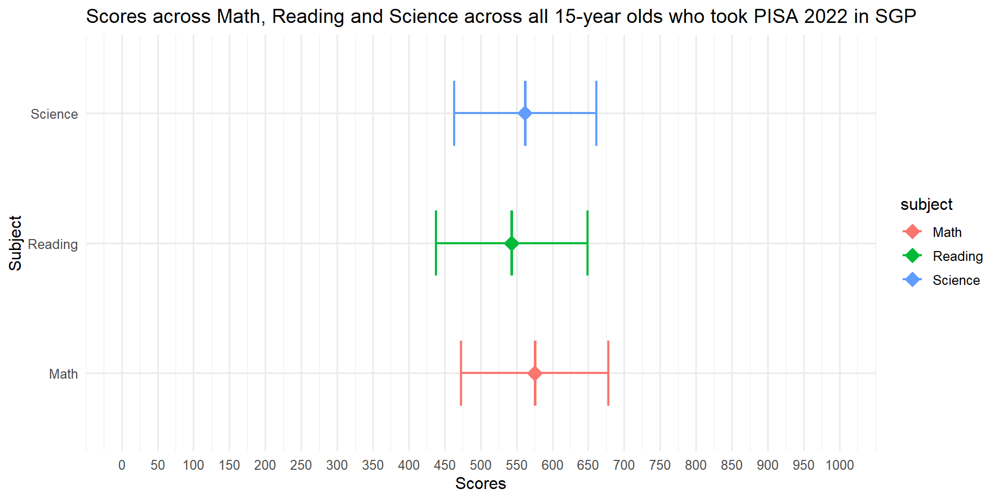
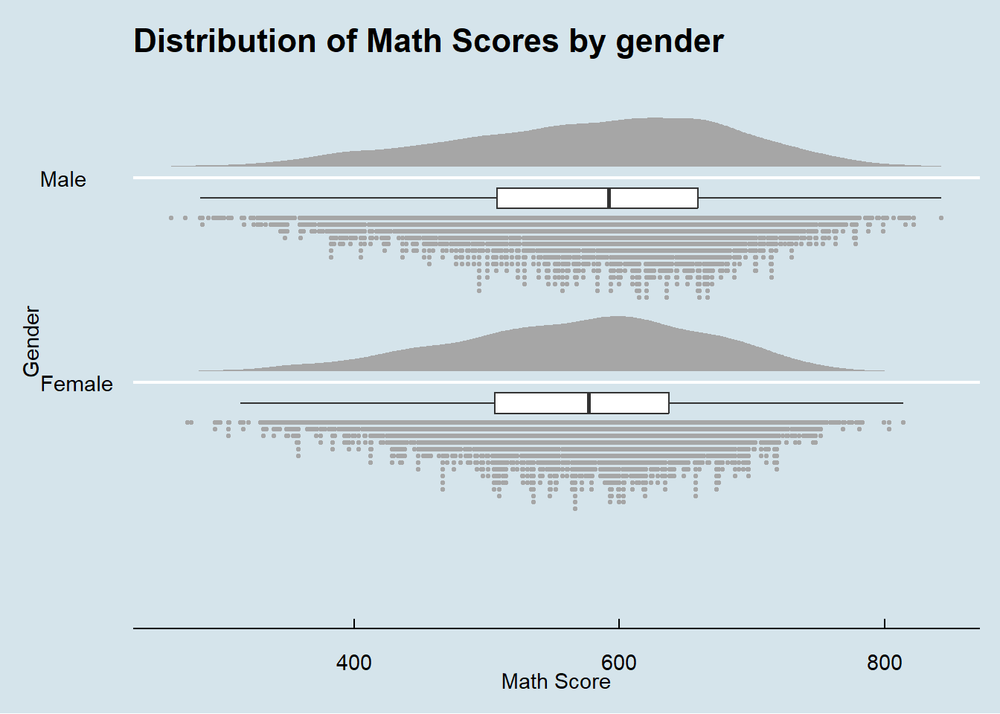
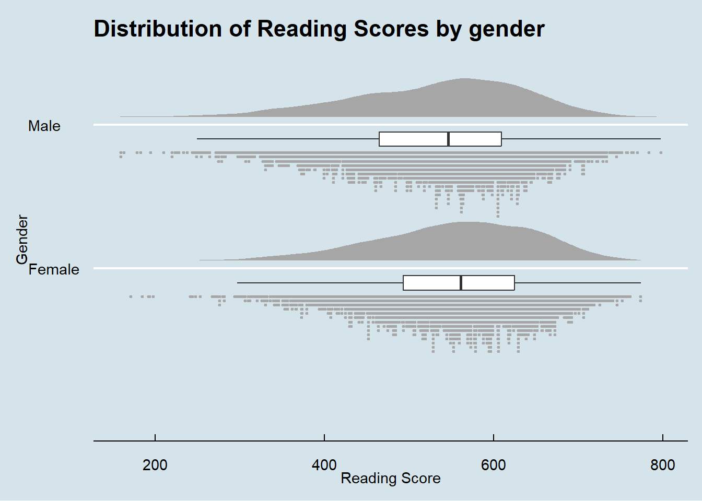
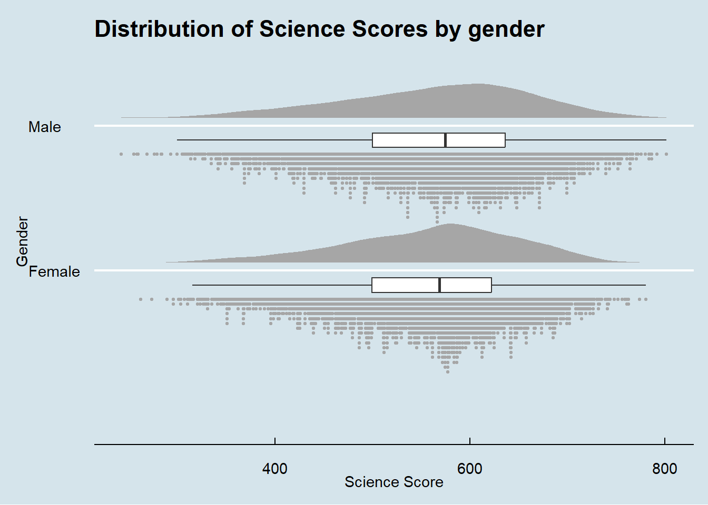

pacman::p_load(tidyverse, haven, ggrepel, ggthemes, hrbrthemes, patchwork, intsvy, ggdist, ggridges,colorspace)Take-home Exercise 1: Creating data visualisation beyond default
Published
January 13, 2024
Modified
January 21, 2024
1. Overview
1.1 Background: Setting the Scene
Organisation for Economic Co-operation and Development (OECD) education director Andreas Schleicher shared in a 2016 BBC article that:
“Singapore managed to achieve excellence without wide differences between children from wealthy and disadvantaged families.”
This sentiment echoes the Singapore Government’s commitment in ensuring that “Every School a Good School”, a slogan popularised by Mr Heng Swee Keat during his stint as Singapore’s Minister for Education from 2011 to 2015.
The general public, however, strongly believe that disparities still exist, between elite schools and neighborhood schools, between students from families from different socioeconomic statuses, and between immigrants and non-immigrants.
1.2 The Task
The 2022 Programme for International Student Assessment (PISA) data was released on December 5, 2022. OECD runs the PISA global education survey every three years to assess education systems worldwide through testing 15 year old students in the subjects of mathematics, reading, and science. It aims to measure how well 15-year-old students approaching the end of compulsory schooling are prepared to meet the challenges of today’s knowledge societies.
In this take-home exercise, I will utilise Exploratory Data Analysis (EDA) methods and ggplot2 functions to reveal:
the distribution of Singapore students’ performance in mathematics, reading, and science, and
the relationship between these performances with schools, gender and socioeconomic status of the students.
1.3 About the data
The PISA 2022 database contains the full set of responses from individual students, school principals and parents. There are a total of five data files and their contents are as follows:
Student questionnaire data file
School questionnaire data file
Teacher questionnaire data file
Cognitive item data file
Questionnaire timing data file
These data files are in SAS and SPSS formats. For the purpose of this assignment, I will be using only the Student questionnaire data file.
More information on the PISA 2022 survey can be found in the PISA 2022 Technical Report.
1.4 Designing Tool
The data will be processed by using appropriate tidyverse family of packages and statistical graphics will be prepared using ggplot2 and its extensions.
2. Set-up
2.1 Loading R packages
In this take-home exercise, the following R packages will be used. They are:
The code chunk used is as follows:
Tip
Writing code chunks in this way allows entire code to be run section by section, and will hence be easier to control. The use of the function pacman:: is meant to launch/call the package before the syntax is written.
2.2 Importing the PISA dataset
The code chunk below uses read_sas() of haven to import PISA data into R environment.
2.2.1 Filtering data to obtain SG data
As the intent is to study the performances of Singaporean students. we will filter the dataset by country code CNT == “SGP” for which SGP represents Singapore. The code chunk is as follows:
2.2.2 Saving the filtered data as a new file
To avoid rerunning the above steps every time we analyse the data or when loading the webpage, we will save the filtered SGP data as a new file and utilize this file for further analysis. The code chunk is as follows:
2.2.3 Calling the file to check if it has been saved correctly
This step helps to ensure that the new file has been saved correctly - before running the code, clear objects from the Environment workspace and run the code chunk below to observe if the data “stu_qqq_SG” appears.
3 Data Wrangling
3.1 Overview of data
Before we go into detailed analysis, we first conduct an overview of the data. Here, we utilise the glimpse, str and summary function.
Glimpse
There are a total of 6606 rows and 1279 columns.
Rows: 6,606
Columns: 1,279
$ CNT <chr> "SGP", "SGP", "SGP", "SGP", "SGP", "SGP", "SGP", "SGP", "…
$ CNTRYID <dbl> 702, 702, 702, 702, 702, 702, 702, 702, 702, 702, 702, 70…
$ CNTSCHID <dbl> 70200052, 70200134, 70200112, 70200004, 70200152, 7020004…
$ CNTSTUID <dbl> 70200001, 70200002, 70200003, 70200004, 70200005, 7020000…
$ CYC <chr> "08MS", "08MS", "08MS", "08MS", "08MS", "08MS", "08MS", "…
$ NatCen <chr> "070200", "070200", "070200", "070200", "070200", "070200…
$ STRATUM <chr> "SGP01", "SGP01", "SGP01", "SGP01", "SGP01", "SGP01", "SG…
$ SUBNATIO <chr> "7020000", "7020000", "7020000", "7020000", "7020000", "7…
$ REGION <dbl> 70200, 70200, 70200, 70200, 70200, 70200, 70200, 70200, 7…
$ OECD <dbl> 0, 0, 0, 0, 0, 0, 0, 0, 0, 0, 0, 0, 0, 0, 0, 0, 0, 0, 0, …
$ ADMINMODE <dbl> 2, 2, 2, 2, 2, 2, 2, 2, 2, 2, 2, 2, 2, 2, 2, 2, 2, 2, 2, …
$ LANGTEST_QQQ <dbl> 313, 313, 313, 313, 313, 313, 313, 313, 313, 313, 313, 31…
$ LANGTEST_COG <dbl> 313, 313, 313, 313, 313, 313, 313, 313, 313, 313, 313, 31…
$ LANGTEST_PAQ <dbl> NA, NA, NA, NA, NA, NA, NA, NA, NA, NA, NA, NA, NA, NA, N…
$ Option_CT <dbl> NA, NA, NA, NA, NA, NA, NA, NA, NA, NA, NA, NA, NA, NA, N…
$ Option_FL <dbl> NA, NA, NA, NA, NA, NA, NA, NA, NA, NA, NA, NA, NA, NA, N…
$ Option_ICTQ <dbl> 1, 1, 1, 1, 1, 1, 1, 1, 1, 1, 1, 1, 1, 1, 1, 1, 1, 1, 1, …
$ Option_WBQ <dbl> 0, 0, 0, 0, 0, 0, 0, 0, 0, 0, 0, 0, 0, 0, 0, 0, 0, 0, 0, …
$ Option_PQ <dbl> 0, 0, 0, 0, 0, 0, 0, 0, 0, 0, 0, 0, 0, 0, 0, 0, 0, 0, 0, …
$ Option_TQ <dbl> 0, 0, 0, 0, 0, 0, 0, 0, 0, 0, 0, 0, 0, 0, 0, 0, 0, 0, 0, …
$ Option_UH <dbl> 0, 0, 0, 0, 0, 0, 0, 0, 0, 0, 0, 0, 0, 0, 0, 0, 0, 0, 0, …
$ BOOKID <dbl> 4, 45, 8, 40, 42, 15, 13, 39, 14, 7, 20, 17, 38, 24, 19, …
$ ST001D01T <dbl> 10, 10, 10, 10, 10, 10, 10, 10, 10, 10, 10, 10, 10, 10, 1…
$ ST003D02T <dbl> 10, 6, 7, 2, 9, 9, 3, 4, 8, 6, 10, 7, 9, 11, 5, 10, 11, 4…
$ ST003D03T <dbl> 2006, 2006, 2006, 2006, 2006, 2006, 2006, 2006, 2006, 200…
$ ST004D01T <dbl> 1, 2, 2, 2, 1, 1, 2, 2, 1, 2, 2, 1, 1, 2, 1, 2, 1, 2, 1, …
$ ST250Q01JA <dbl> 2, 1, 1, 2, 2, 2, 1, 1, 2, 2, 2, 2, 1, 1, 1, 1, 1, 1, 1, …
$ ST250Q02JA <dbl> 1, 1, 1, 1, 1, 1, 1, 1, 1, 1, 1, 1, 1, 1, 1, 1, 1, 1, 1, …
$ ST250Q03JA <dbl> 1, 1, 2, 1, 1, 1, 1, 1, 1, 1, 1, 1, 1, 1, 1, 1, 1, 1, 1, …
$ ST250Q04JA <dbl> 1, 1, 1, 1, 1, 1, 1, 1, 1, 1, 1, 1, 1, 1, 1, 1, 1, 1, 1, …
$ ST250Q05JA <dbl> 1, 1, 1, 1, 1, 1, 1, 1, 1, 1, 1, 1, 1, 1, 1, 1, 1, 1, 1, …
$ ST250D06JA <chr> "7020002", "7020001", "7020001", "7020002", "7020002", "7…
$ ST250D07JA <chr> "7020002", "7020001", "7020002", "7020002", "7020002", "7…
$ ST251Q01JA <dbl> 2, 1, 2, 1, 2, 2, 2, 1, 3, 3, 1, 2, 2, 1, 2, 2, 1, 2, 3, …
$ ST251Q02JA <dbl> 1, 4, 1, 2, 2, 1, 1, 1, 1, 1, 1, 1, 3, 1, 1, 1, 1, 1, 1, …
$ ST251Q03JA <dbl> 3, 3, 3, 3, 2, 2, 3, 3, 4, 3, 2, 2, 3, 2, 3, 3, 2, 3, 4, …
$ ST251Q04JA <dbl> 3, 3, 3, 3, 2, 3, 3, 3, 4, 3, 2, 2, 3, 2, 3, 3, 2, 3, 4, …
$ ST251Q06JA <dbl> 3, 4, 2, 2, 1, 2, 2, 3, 4, 1, 3, 3, 1, 2, 2, 4, 4, 1, 2, …
$ ST251Q07JA <dbl> 3, 2, 1, 1, 4, 1, 4, 1, 4, 3, 1, 4, 1, 1, 4, 4, 1, 4, 1, …
$ ST251D08JA <chr> "9999997", "9999997", "9999997", "9999997", "9999997", "9…
$ ST251D09JA <chr> "9999997", "9999997", "9999997", "9999997", "9999997", "9…
$ ST253Q01JA <dbl> 7, 8, 7, 6, 7, 7, 8, 8, 8, 7, 7, 8, 5, 7, 7, 8, 5, 7, 7, …
$ ST254Q01JA <dbl> 2, 3, 2, 2, 2, 2, 2, 2, 2, 2, 2, 3, 2, 1, 3, 2, 2, 2, 2, …
$ ST254Q02JA <dbl> 1, 2, 2, 1, 3, 2, 2, 5, 2, 2, 1, 3, 2, 1, 2, 2, 2, 2, 2, …
$ ST254Q03JA <dbl> 3, 2, 2, 2, 2, 2, 3, 3, 3, 4, 2, 3, 2, 2, 3, 3, 2, 3, 2, …
$ ST254Q04JA <dbl> 2, 3, 2, 1, 1, 2, 2, 3, 3, 2, 1, 3, 2, 2, 3, 3, 2, 3, 2, …
$ ST254Q05JA <dbl> 1, 5, 1, 1, NA, 1, 1, 5, 2, 2, 1, 1, 1, 1, 2, 1, 2, 1, 1,…
$ ST254Q06JA <dbl> 3, 2, 3, 3, 4, 2, 4, 3, 4, 4, 3, 3, 2, 3, 3, 4, 3, 4, 3, …
$ ST255Q01JA <dbl> 7, 4, 4, 3, 2, 2, 4, 5, 7, 4, 3, 7, 4, 4, 2, 4, 5, 4, 4, …
$ ST256Q01JA <dbl> 2, 4, 5, 2, 4, 1, 1, 3, 4, 4, 1, 4, 2, 2, 2, 3, 2, 2, 1, …
$ ST256Q02JA <dbl> 2, 5, 2, 1, 1, 2, 1, 5, 4, 2, 2, 4, 1, 2, 2, 2, 3, 5, 1, …
$ ST256Q03JA <dbl> 4, 5, 2, 1, 1, 2, 2, 5, 5, 1, 2, 4, 1, 3, 1, 4, 4, 5, 1, …
$ ST256Q06JA <dbl> 4, 3, 3, 2, 2, 5, 2, 4, 4, 1, 2, 4, 2, 2, 2, 3, 2, 2, 3, …
$ ST256Q07JA <dbl> 3, 5, 5, 2, 2, 5, 1, 4, 3, 1, 2, 4, 1, 2, 2, 2, 1, 5, 1, …
$ ST256Q08JA <dbl> 3, 3, 3, 1, 1, 5, 1, 5, 5, 2, 2, 4, 1, 1, 1, 3, 1, 5, 2, …
$ ST256Q09JA <dbl> 2, 2, 4, 2, 2, 2, 2, 2, 2, 3, 2, 4, 2, 2, 2, 2, 2, 2, NA,…
$ ST256Q10JA <dbl> 4, 4, 5, 2, 4, 1, 4, 4, 4, 3, 2, 4, 4, 1, 2, 4, 3, 3, 3, …
$ ST230Q01JA <dbl> 4, 4, 2, 4, 4, 3, 2, 2, 3, 4, 1, 3, 4, 1, 4, 3, 2, 3, 2, …
$ ST005Q01JA <dbl> 2, 2, 2, 2, 2, 2, 2, 2, 2, 2, 2, 2, 2, 2, 2, 2, 2, 2, 2, …
$ ST006Q01JA <dbl> 2, 2, 2, 2, 2, 2, 2, NA, 2, 2, NA, 2, 1, 2, 2, 2, 2, 2, 2…
$ ST006Q02JA <dbl> 2, 2, 2, 2, 2, 2, 2, 1, 2, 2, NA, 1, 1, 2, 2, 1, 2, 2, 2,…
$ ST006Q03JA <dbl> 1, 2, 2, 2, 2, 2, 2, 1, 1, 1, NA, 1, 1, 2, 2, 1, 1, 1, 2,…
$ ST006Q04JA <dbl> 2, 1, 2, 2, 1, 1, 2, 1, 1, 2, NA, 2, 1, 2, 2, 2, 1, 2, 2,…
$ ST006Q05JA <dbl> 1, 1, 2, 1, 2, 1, 1, 1, 1, 1, NA, 1, 2, 1, 2, 1, 1, 2, 1,…
$ ST007Q01JA <dbl> 2, 2, 2, 4, 2, 2, 4, 2, 2, 2, 2, 2, 2, 2, 2, 2, 2, 2, 2, …
$ ST008Q01JA <dbl> 2, 2, 2, NA, 2, 2, 2, NA, 2, 2, NA, 2, 1, 2, 2, 2, 2, 2, …
$ ST008Q02JA <dbl> 2, 2, 2, NA, 2, 1, 2, NA, 2, 2, NA, 1, 1, 1, 2, 2, 1, 2, …
$ ST008Q03JA <dbl> 2, 2, 2, NA, 2, 1, 2, 1, 1, 2, NA, 1, 1, 2, 2, 2, 1, 1, 2…
$ ST008Q04JA <dbl> 1, 1, 2, NA, 1, 1, 2, 1, 1, 1, NA, 2, 1, 2, 2, 2, 1, 2, 2…
$ ST008Q05JA <dbl> 2, 1, 2, 1, 2, 1, 2, 1, 1, 2, NA, 1, 2, 2, 1, 2, 1, 2, 1,…
$ ST258Q01JA <dbl> 1, 1, 1, 5, 1, 1, 1, 1, 1, 1, 1, 1, 3, 1, 1, 1, 2, 1, 1, …
$ ST259Q01JA <dbl> NA, NA, NA, NA, NA, NA, NA, NA, NA, NA, NA, NA, NA, NA, N…
$ ST259Q02JA <dbl> NA, NA, NA, NA, NA, NA, NA, NA, NA, NA, NA, NA, NA, NA, N…
$ ST019AQ01T <dbl> 1, 1, 1, 1, 1, 2, 1, 2, 1, 1, 1, 1, 1, 2, 1, 1, 2, 2, 1, …
$ ST019BQ01T <dbl> 1, 1, 2, 1, 1, 2, 1, 2, 1, 1, 1, 1, 1, 2, 1, 2, 2, 2, 1, …
$ ST019CQ01T <dbl> 1, 1, 1, 1, 1, 2, 1, 2, 1, 1, 1, 1, 1, 2, 1, 2, 2, 2, 1, …
$ ST021Q01TA <dbl> NA, NA, NA, NA, NA, 1, NA, 1, NA, NA, NA, NA, NA, 7, NA, …
$ ST022Q01TA <dbl> 1, 1, 2, 2, 1, 2, 1, 2, 1, 2, 1, 1, 1, 2, 2, 2, 2, 1, 1, …
$ ST226Q01JA <dbl> 1, 1, 1, 1, 1, 1, 1, 4, 1, 1, 1, 1, 1, 1, 1, 1, 1, 1, 1, …
$ ST125Q01NA <dbl> 3, 5, 8, 4, 8, 3, 4, 8, 8, 4, 8, 2, 7, 2, 3, 5, 8, 8, 3, …
$ ST126Q01TA <dbl> 4, 5, 5, 5, 5, 5, 5, 5, 4, 5, 5, 5, 5, 5, 4, 5, 5, 4, 5, …
$ ST127Q01TA <dbl> 1, 1, 1, 1, 1, 1, 1, 1, 1, 1, 1, 1, 1, 1, 1, 1, 1, 1, 1, …
$ ST127Q02TA <dbl> 1, 1, 1, 1, 1, 1, 1, 1, 1, 1, 1, 1, 1, 1, 1, 1, 1, 1, 1, …
$ ST127Q03TA <dbl> 1, 1, 1, 1, 1, 1, 1, 1, 1, 1, 1, 1, 1, 1, 1, 1, 1, 1, 1, …
$ ST260Q01JA <dbl> 1, 1, 1, 1, 1, 1, 1, 1, 1, 1, 1, 1, 3, 1, 1, 1, 1, 1, 1, …
$ ST260Q02JA <dbl> 1, 1, 1, 1, 1, 1, 1, 1, 1, 1, 1, 1, 1, 1, 1, 1, 1, 1, 1, …
$ ST260Q03JA <dbl> 1, 1, 1, 1, 1, 1, 1, 1, 1, 1, 1, 1, 1, 1, 1, 1, 1, 1, 1, …
$ ST261Q01JA <dbl> NA, NA, NA, NA, NA, NA, NA, NA, NA, NA, NA, NA, 2, NA, NA…
$ ST261Q02JA <dbl> NA, NA, NA, NA, NA, NA, NA, NA, NA, NA, NA, NA, 2, NA, NA…
$ ST261Q03JA <dbl> NA, NA, NA, NA, NA, NA, NA, NA, NA, NA, NA, NA, 2, NA, NA…
$ ST261Q04JA <dbl> NA, NA, NA, NA, NA, NA, NA, NA, NA, NA, NA, NA, 2, NA, NA…
$ ST261Q05JA <dbl> NA, NA, NA, NA, NA, NA, NA, NA, NA, NA, NA, NA, 1, NA, NA…
$ ST261Q06JA <dbl> NA, NA, NA, NA, NA, NA, NA, NA, NA, NA, NA, NA, 2, NA, NA…
$ ST261Q07JA <dbl> NA, NA, NA, NA, NA, NA, NA, NA, NA, NA, NA, NA, 2, NA, NA…
$ ST261Q08JA <dbl> NA, NA, NA, NA, NA, NA, NA, NA, NA, NA, NA, NA, 1, NA, NA…
$ ST261Q09JA <dbl> NA, NA, NA, NA, NA, NA, NA, NA, NA, NA, NA, NA, 2, NA, NA…
$ ST261Q10JA <dbl> NA, NA, NA, NA, NA, NA, NA, NA, NA, NA, NA, NA, 2, NA, NA…
$ ST261Q11JA <dbl> NA, NA, NA, NA, NA, NA, NA, NA, NA, NA, NA, NA, 2, NA, NA…
$ ST062Q01TA <dbl> 1, 1, 1, 1, 2, 1, 1, 1, 1, 1, 1, 1, 1, 1, 1, 1, 1, 1, 1, …
$ ST062Q02TA <dbl> 1, 1, 1, 1, 1, 1, 1, 1, 1, 1, 1, 1, 1, 2, 1, 1, 1, 1, 1, …
$ ST062Q03TA <dbl> 1, 1, 1, 1, 2, 2, 1, 1, 1, 1, 1, 1, 1, 1, 1, 1, 1, 1, 1, …
$ ST267Q01JA <dbl> NA, 4, 3, 3, NA, 4, 3, NA, 4, NA, NA, 4, 3, 3, 3, NA, 3, …
$ ST267Q02JA <dbl> 2, 3, 3, NA, 3, 3, 1, NA, 4, NA, 3, 4, 1, NA, 4, 2, 1, 4,…
$ ST267Q03JA <dbl> NA, NA, 3, 2, NA, 3, 1, 3, NA, 3, NA, 4, NA, 3, NA, 3, NA…
$ ST267Q04JA <dbl> 2, 2, NA, NA, 3, NA, 1, 3, 2, 2, 2, NA, 3, 1, 4, 1, 2, NA…
$ ST267Q05JA <dbl> 3, 3, 3, 3, 3, 3, NA, 3, NA, NA, 3, 4, NA, NA, NA, 4, 3, …
$ ST267Q06JA <dbl> NA, NA, NA, 3, 4, 4, NA, 3, 4, 3, NA, NA, 2, 3, 3, 4, 4, …
$ ST267Q07JA <dbl> 3, 4, 4, NA, NA, NA, NA, NA, 4, 3, 3, 4, 1, 3, 4, NA, NA,…
$ ST267Q08JA <dbl> 2, NA, NA, 1, 1, NA, 1, 3, NA, 2, 2, NA, NA, NA, NA, NA, …
$ ST034Q01TA <dbl> 4, 4, 3, 2, 4, 4, 2, 1, 3, 3, 3, 4, 2, 4, 3, 4, 3, 4, 3, …
$ ST034Q02TA <dbl> NA, 2, 2, 3, 1, 2, 2, NA, 1, 2, NA, 1, 3, 1, 4, 2, 3, 2, …
$ ST034Q03TA <dbl> 2, NA, NA, 3, 1, 2, 3, 3, 2, NA, 2, 1, 3, 1, 2, NA, 2, NA…
$ ST034Q04TA <dbl> 4, 3, 2, 2, 4, NA, 3, 2, NA, 3, 3, 4, 2, 4, 2, 4, NA, 4, …
$ ST034Q05TA <dbl> 2, 2, 2, 2, NA, 2, NA, 3, 2, 2, 2, NA, 3, 1, NA, 2, 2, 3,…
$ ST034Q06TA <dbl> 3, 3, 3, NA, 4, 4, 3, 4, 3, 3, 3, 4, NA, NA, 3, 4, 3, 4, …
$ ST038Q03NA <dbl> 1, 1, 1, 1, 1, 1, 2, 3, 1, 1, 1, 1, 2, 1, 2, 2, 1, 1, 1, …
$ ST038Q04NA <dbl> 1, 1, 1, 1, 1, 1, 4, 3, 2, 1, 1, 1, 2, 1, 1, 1, 1, 2, 1, …
$ ST038Q05NA <dbl> 1, 1, 1, 1, 1, 1, 1, 1, 1, 1, 1, 1, 1, 1, 1, 1, 1, 1, 1, …
$ ST038Q06NA <dbl> 1, 1, 1, 1, 1, 1, 1, 1, 1, 2, 1, 1, 1, 1, 1, 2, 1, 1, 1, …
$ ST038Q07NA <dbl> 1, 2, 1, 1, 1, 1, 1, 1, 1, 1, 1, 1, 2, 1, 1, 1, 1, 1, 1, …
$ ST038Q08NA <dbl> 1, 1, 1, 1, 1, 1, 2, 1, 1, 1, 1, 1, 1, 1, 1, 1, 1, 2, 1, …
$ ST038Q09JA <dbl> 1, 1, 1, 1, 1, 1, 1, 1, 1, 1, 1, 1, 1, 1, 1, 1, 1, 1, 1, …
$ ST038Q10JA <dbl> 1, 1, 1, 1, 1, 1, 1, 1, 1, 1, 1, 1, 1, 1, 2, 1, 1, 1, 1, …
$ ST038Q11JA <dbl> 1, 1, 1, 1, 1, 1, 1, 1, 1, 1, 1, 1, 1, 1, 1, 1, 1, 1, 1, …
$ ST265Q01JA <dbl> 2, 1, 1, 2, 1, 1, 1, 1, 1, 1, 2, 1, 3, 1, 2, 1, 2, 1, 2, …
$ ST265Q02JA <dbl> 2, 1, 1, 2, 1, 2, 1, 1, 1, 1, 2, 1, 3, 1, 2, 1, 2, 1, 2, …
$ ST265Q03JA <dbl> 2, 1, 2, 2, 1, 2, 3, 1, 1, 1, 2, 1, 2, 1, 2, 1, 2, 1, 2, …
$ ST265Q04JA <dbl> 2, 1, 2, 2, 1, 2, 3, 1, 1, 1, 2, 1, 2, 1, 2, 1, 2, 1, 2, …
$ ST266Q01JA <dbl> 2, 1, 2, 2, 2, 1, 1, 2, 2, 1, 2, 2, 2, 1, 1, 2, 2, 2, 2, …
$ ST266Q02JA <dbl> 2, 2, 2, 2, 2, 2, 2, 2, 2, 2, 2, 2, 2, 2, 2, 2, 2, 2, 2, …
$ ST266Q03JA <dbl> 2, 2, 2, 2, 2, 2, 2, 2, 2, 2, 2, 2, 2, 2, 2, 2, 2, 2, 2, …
$ ST266Q04JA <dbl> 2, 2, 2, 2, 2, 2, 2, 2, 2, 2, 2, 2, 2, 2, 2, 2, 2, 2, 2, …
$ ST266Q05JA <dbl> 2, 2, 2, 2, 2, 2, 2, 2, 2, 2, 2, 2, 2, 2, 2, 2, 2, 2, 2, …
$ ST294Q01JA <dbl> 5, 4, 6, 1, 1, 1, 1, 6, 6, 1, 5, 1, 1, 1, 4, 3, 6, 6, 1, …
$ ST294Q02JA <dbl> 1, 5, 2, 1, 4, 6, 1, 6, 1, 1, 1, 1, 6, 1, 5, 1, 1, 1, 6, …
$ ST294Q03JA <dbl> 6, 2, 1, 6, 1, 3, 4, 1, 1, 1, 1, 1, 6, 1, 6, 1, 3, 1, 1, …
$ ST294Q04JA <dbl> 1, 1, 1, 4, 1, 1, 1, 1, 1, 1, 1, 1, 1, 1, 1, 1, 1, 1, 1, …
$ ST294Q05JA <dbl> 1, 3, 1, 6, 6, 1, 1, 1, 1, 1, 1, 1, 1, 1, 3, 1, 1, 1, 3, …
$ ST295Q01JA <dbl> 6, 4, 6, 6, 6, 6, 6, 6, 6, 6, 6, 6, 1, 6, 6, 6, 3, 6, 6, …
$ ST295Q02JA <dbl> 5, 4, 3, 6, 5, 6, 1, 6, 6, 4, 6, 6, 6, 1, 5, 6, 6, 6, 6, …
$ ST295Q03JA <dbl> 6, 2, 1, 6, 6, 4, 5, 1, 1, 5, 3, 3, 6, 1, 6, 1, 4, 6, 1, …
$ ST295Q04JA <dbl> 1, 1, 1, 4, 1, 1, 1, 1, 1, 1, 1, 1, 1, 1, 1, 1, 1, 1, 1, …
$ ST295Q05JA <dbl> 2, 3, 3, 1, 5, 2, 3, 1, 4, 6, 2, 3, 6, 3, 3, 1, 3, 4, 1, …
$ ST326Q01JA <dbl> 3, 2, 3, 2, 6, 3, 3, 8, 4, 3, 4, 4, 3, 7, 5, 3, 7, 6, 2, …
$ ST326Q02JA <dbl> 4, 2, 2, 3, 5, 2, 2, 5, 5, 5, 5, 3, 5, 2, 3, 3, 6, 4, 4, …
$ ST326Q03JA <dbl> 2, 3, 2, 2, 4, 1, 1, NA, 4, 4, 6, 5, 8, 1, 4, 3, 9, 4, 2,…
$ ST326Q04JA <dbl> 1, 1, 2, 1, 5, 1, 2, 3, 1, 2, 1, 2, 1, 2, 3, 2, 3, 2, 1, …
$ ST326Q05JA <dbl> NA, 1, 5, 1, 5, 2, 4, 5, 3, 5, 5, 5, 1, 9, 3, 1, 4, 6, 5,…
$ ST326Q06JA <dbl> 8, 1, 7, 1, 2, 5, 9, 7, 4, 5, 4, 7, 2, 9, 5, 1, 7, 7, 6, …
$ ST326Q07JA <dbl> NA, NA, NA, NA, NA, NA, NA, NA, NA, NA, NA, NA, NA, NA, N…
$ ST326Q08JA <dbl> NA, NA, NA, NA, NA, NA, NA, NA, NA, NA, NA, NA, NA, NA, N…
$ ST326Q09JA <dbl> NA, NA, NA, NA, NA, NA, NA, NA, NA, NA, NA, NA, NA, NA, N…
$ ST326Q10JA <dbl> NA, NA, NA, NA, NA, NA, NA, NA, NA, NA, NA, NA, NA, NA, N…
$ ST326Q11JA <dbl> NA, NA, NA, NA, NA, NA, NA, NA, NA, NA, NA, NA, NA, NA, N…
$ ST326Q12JA <dbl> NA, NA, NA, NA, NA, NA, NA, NA, NA, NA, NA, NA, NA, NA, N…
$ ST322Q01JA <dbl> 5, 6, 3, 5, 4, 6, 5, 5, 4, NA, 4, 5, 5, 1, 2, 5, NA, 4, 5…
$ ST322Q02JA <dbl> 5, 1, 3, 5, 5, 5, 5, 5, NA, 4, 2, 5, 5, NA, NA, 5, 4, 3, …
$ ST322Q03JA <dbl> NA, 5, 2, 5, NA, 4, 1, 5, 3, 5, NA, 4, 3, 4, 4, NA, 4, 4,…
$ ST322Q04JA <dbl> 2, 5, 2, 1, 5, NA, NA, 5, 3, 3, 4, 5, NA, 5, 5, 2, 2, NA,…
$ ST322Q06JA <dbl> 1, 1, NA, NA, 4, 6, 1, NA, 6, 4, 1, NA, 1, 1, 4, 1, 3, 4,…
$ ST322Q07JA <dbl> 1, NA, 2, 1, 4, 2, 2, 1, 1, 5, 2, 3, 1, 1, 1, 1, 5, 3, 1,…
$ ST307Q01JA <dbl> 4, NA, NA, NA, 4, NA, 4, 5, NA, NA, 5, NA, 4, NA, NA, 4, …
$ ST307Q02JA <dbl> NA, 5, 4, NA, NA, 3, NA, NA, 5, NA, NA, 5, NA, 4, NA, NA,…
$ ST307Q03JA <dbl> 4, 4, 3, 4, 3, NA, NA, 4, 2, 3, 4, 5, NA, NA, 4, 5, NA, N…
$ ST307Q04JA <dbl> 2, NA, 3, 2, NA, NA, NA, 3, 4, 4, NA, NA, NA, 1, 4, 2, 3,…
$ ST307Q05JA <dbl> NA, 5, NA, NA, NA, NA, NA, NA, NA, NA, 3, 4, NA, 4, 4, NA…
$ ST307Q06JA <dbl> 2, NA, 2, 2, 5, 3, 1, 3, NA, NA, NA, NA, 2, NA, 3, NA, NA…
$ ST307Q07JA <dbl> 2, NA, NA, 2, NA, NA, 5, NA, 4, 4, 2, 1, 2, 1, NA, 2, NA,…
$ ST307Q08JA <dbl> NA, 3, NA, 4, NA, 4, 5, NA, NA, 4, NA, NA, NA, NA, NA, 4,…
$ ST307Q09JA <dbl> NA, NA, 3, NA, 4, 5, NA, NA, 4, NA, 4, 4, 4, 5, 3, NA, 3,…
$ ST307Q10JA <dbl> NA, 3, NA, NA, 5, 4, 2, 1, NA, 3, NA, NA, 3, NA, NA, NA, …
$ ST309Q01JA <dbl> NA, NA, 5, NA, 4, 4, 5, 4, 5, NA, 4, NA, 5, NA, 5, NA, 4,…
$ ST309Q02JA <dbl> 3, 5, NA, NA, 5, NA, NA, NA, 4, NA, NA, 2, 5, NA, NA, NA,…
$ ST309Q03JA <dbl> NA, 3, 3, NA, NA, NA, 2, 4, 1, 4, 2, 1, 1, 5, 2, NA, NA, …
$ ST309Q04JA <dbl> 3, NA, NA, NA, NA, 4, 5, NA, NA, NA, NA, NA, NA, 4, NA, N…
$ ST309Q05JA <dbl> NA, 4, 3, NA, 4, NA, NA, NA, 5, 4, NA, NA, NA, NA, 4, 1, …
$ ST309Q06JA <dbl> NA, NA, 4, 3, NA, 4, NA, NA, 4, NA, NA, 1, 3, NA, NA, 3, …
$ ST309Q07JA <dbl> 3, NA, NA, 4, NA, NA, 2, 1, NA, 4, 3, 1, NA, 4, 4, 3, NA,…
$ ST309Q08JA <dbl> 4, 3, NA, 4, 5, NA, NA, 4, NA, 4, 4, NA, NA, 2, 5, NA, 3,…
$ ST309Q09JA <dbl> 2, NA, 1, 4, NA, 2, NA, 2, NA, NA, 3, NA, 2, 4, NA, 4, NA…
$ ST309Q10JA <dbl> NA, 5, NA, 3, 4, 4, 4, NA, NA, 3, NA, 5, NA, NA, NA, 3, 4…
$ ST301Q01JA <dbl> 5, NA, NA, 4, 5, 4, 4, NA, 3, 5, NA, NA, 3, NA, NA, NA, N…
$ ST301Q02JA <dbl> NA, NA, NA, NA, 1, NA, NA, NA, NA, 4, 4, 5, NA, NA, NA, 5…
$ ST301Q03JA <dbl> NA, NA, 3, NA, 4, 4, 1, NA, 2, NA, 2, 4, NA, NA, 4, 2, 3,…
$ ST301Q04JA <dbl> 5, NA, NA, 4, 5, NA, NA, 5, NA, 4, NA, 5, NA, 4, NA, 4, N…
$ ST301Q05JA <dbl> NA, 4, NA, NA, 4, 4, NA, NA, 5, NA, 4, 4, 3, NA, NA, 4, 3…
$ ST301Q06JA <dbl> 5, 5, 3, 4, NA, NA, NA, NA, 3, 4, 4, 5, 2, 4, 5, NA, 3, 4…
$ ST301Q07JA <dbl> 5, NA, 3, 4, NA, 4, NA, 5, NA, NA, NA, NA, 2, 4, NA, 4, N…
$ ST301Q08JA <dbl> NA, 2, NA, 3, NA, NA, 4, 2, 3, 2, NA, NA, NA, 2, 2, NA, 3…
$ ST301Q09JA <dbl> NA, 3, 4, NA, NA, 4, 5, 5, NA, NA, 5, NA, NA, 4, 5, NA, N…
$ ST301Q10JA <dbl> 5, 4, 3, NA, NA, NA, 4, 5, NA, NA, NA, NA, 3, NA, 4, NA, …
$ ST343Q01JA <dbl> 4, NA, 3, NA, NA, NA, 5, NA, 5, NA, NA, 5, 4, NA, NA, NA,…
$ ST343Q02JA <dbl> NA, 2, NA, 3, NA, 1, NA, 4, NA, 3, NA, 2, NA, 4, NA, NA, …
$ ST343Q03JA <dbl> NA, NA, NA, NA, 4, NA, 3, NA, NA, NA, 4, 5, NA, NA, NA, N…
$ ST343Q04JA <dbl> 2, NA, NA, 2, NA, 1, 3, 1, NA, 2, NA, NA, 3, NA, 3, 2, 2,…
$ ST343Q05JA <dbl> 3, 3, 3, 2, 2, 1, NA, NA, 1, NA, 2, NA, NA, NA, 5, 2, 4, …
$ ST343Q06JA <dbl> 4, 4, 3, 4, 5, NA, NA, 1, 5, 5, 4, 5, 4, 5, NA, 5, 3, NA,…
$ ST343Q07JA <dbl> 1, 3, NA, 2, NA, NA, NA, 1, NA, 3, 3, NA, NA, 3, 1, 3, NA…
$ ST343Q08JA <dbl> NA, 5, NA, NA, 5, 5, NA, 2, 5, NA, NA, NA, NA, 2, 3, NA, …
$ ST343Q09JA <dbl> NA, NA, 4, NA, NA, 5, 2, NA, 5, NA, NA, 5, 3, 3, 3, NA, N…
$ ST343Q10JA <dbl> NA, NA, 2, NA, 2, NA, 2, NA, NA, 2, 3, NA, 3, NA, NA, 4, …
$ ST311Q01JA <dbl> NA, 2, NA, NA, 2, 1, 5, 2, NA, NA, 2, 1, 2, 2, NA, 2, NA,…
$ ST311Q02JA <dbl> 5, 4, 4, 4, NA, 1, NA, NA, NA, NA, NA, NA, NA, NA, 4, NA,…
$ ST311Q03JA <dbl> 5, NA, NA, NA, NA, NA, NA, 5, 5, 5, NA, NA, NA, NA, 5, NA…
$ ST311Q04JA <dbl> 5, 4, 4, 4, NA, 5, NA, NA, NA, NA, 4, 5, 4, NA, 4, NA, 3,…
$ ST311Q05JA <dbl> NA, 2, 2, 2, NA, 1, 3, NA, NA, 1, NA, NA, NA, 2, 1, 2, NA…
$ ST311Q06JA <dbl> NA, NA, NA, NA, 3, NA, 3, NA, 5, NA, 3, 5, NA, NA, NA, NA…
$ ST311Q07JA <dbl> NA, NA, NA, NA, NA, NA, 1, 5, NA, NA, NA, 3, 3, 2, NA, 1,…
$ ST311Q08JA <dbl> NA, NA, 3, NA, 3, NA, 2, 5, 5, 4, 3, 5, 3, 4, 4, 5, NA, N…
$ ST311Q09JA <dbl> 3, 4, 3, 4, 4, NA, NA, NA, 5, 4, NA, NA, 4, NA, NA, 4, NA…
$ ST311Q10JA <dbl> 5, NA, NA, 3, 3, 3, NA, 5, 5, 4, 3, NA, NA, 4, NA, NA, 3,…
$ ST315Q01JA <dbl> NA, NA, NA, 4, NA, NA, 5, 4, NA, NA, 3, 4, 4, NA, NA, NA,…
$ ST315Q02JA <dbl> 4, 3, 3, 2, NA, 3, 1, NA, 5, NA, NA, 5, NA, NA, NA, 5, NA…
$ ST315Q03JA <dbl> 3, NA, NA, NA, NA, 5, NA, NA, NA, 4, NA, NA, NA, 2, 2, NA…
$ ST315Q04JA <dbl> 3, 3, 3, 4, 3, NA, NA, 1, NA, 4, 4, NA, 3, 2, NA, NA, NA,…
$ ST315Q05JA <dbl> NA, NA, NA, NA, NA, NA, NA, NA, 1, 2, NA, 1, 2, 3, 4, NA,…
$ ST315Q06JA <dbl> 3, 3, 3, NA, NA, 5, 2, 1, NA, NA, 3, NA, NA, NA, NA, 5, N…
$ ST315Q07JA <dbl> NA, 2, NA, NA, 2, NA, 4, 5, 1, NA, 3, NA, NA, 3, NA, 1, N…
$ ST315Q08JA <dbl> NA, NA, 2, 1, 2, 3, NA, 1, 3, 4, NA, NA, 3, NA, 4, 5, 2, …
$ ST315Q09JA <dbl> NA, 3, NA, NA, 5, 5, 1, NA, 4, 4, 3, 5, NA, 3, 3, 5, 4, 3…
$ ST315Q10JA <dbl> 4, NA, 4, 4, 5, NA, NA, NA, NA, NA, NA, 5, 4, NA, 3, NA, …
$ ST303Q01JA <dbl> 5, NA, NA, NA, NA, NA, 4, NA, 5, 4, 4, 5, NA, NA, NA, NA,…
$ ST303Q02JA <dbl> 5, NA, 3, NA, 5, 4, NA, 5, NA, NA, 4, 5, NA, 4, NA, NA, 3…
$ ST303Q03JA <dbl> 5, NA, 2, 3, 4, NA, NA, 5, 5, 4, NA, NA, 3, 4, 3, 5, 3, N…
$ ST303Q04JA <dbl> NA, 4, 4, 4, 5, 5, NA, 5, 5, NA, 4, 5, 3, 4, 5, 5, NA, NA…
$ ST303Q05JA <dbl> NA, 3, NA, 2, NA, 1, 3, NA, NA, 4, NA, 1, NA, 2, 4, 1, NA…
$ ST303Q06JA <dbl> 5, 5, 4, 4, 5, NA, 4, 5, 5, 4, 4, NA, 3, NA, 5, 5, 3, 4, …
$ ST303Q07JA <dbl> 1, 4, 3, NA, NA, 2, 2, NA, 3, 3, 3, NA, 3, NA, NA, 1, NA,…
$ ST303Q08JA <dbl> NA, 4, NA, 3, 5, 5, 4, 5, NA, NA, NA, 5, 3, 4, 4, NA, 3, …
$ ST305Q01JA <dbl> NA, 2, NA, NA, 5, NA, 2, NA, 5, NA, NA, 5, NA, 5, 2, 5, 2…
$ ST305Q02JA <dbl> NA, NA, 2, NA, NA, NA, 4, 3, NA, 3, 4, 3, 2, NA, NA, 5, N…
$ ST305Q03JA <dbl> NA, NA, NA, NA, NA, NA, 3, 2, 5, 4, 4, NA, 3, NA, 2, NA, …
$ ST305Q04JA <dbl> 3, NA, NA, NA, 5, 2, NA, NA, NA, NA, NA, 5, NA, NA, NA, 1…
$ ST305Q05JA <dbl> 4, 4, 3, 3, 2, 3, NA, NA, NA, 4, NA, NA, 2, 5, 2, NA, 3, …
$ ST305Q06JA <dbl> 3, NA, 3, 3, NA, 4, NA, NA, 5, NA, 4, NA, NA, 4, NA, 5, 3…
$ ST305Q07JA <dbl> 4, 4, NA, 3, NA, NA, NA, 4, 3, 4, 3, 1, NA, NA, 4, NA, 3,…
$ ST305Q08JA <dbl> 2, NA, NA, 3, NA, 5, 2, NA, NA, NA, NA, NA, 3, 3, NA, NA,…
$ ST305Q09JA <dbl> NA, 3, 2, NA, 3, 1, 4, 1, 3, NA, 3, 4, NA, NA, 2, 3, NA, …
$ ST305Q10JA <dbl> NA, 4, 3, 3, 3, NA, NA, 1, NA, 4, NA, NA, 3, 4, NA, NA, N…
$ ST345Q01JA <dbl> 3, 4, NA, 3, 5, NA, 3, 5, 4, 4, NA, 3, 5, NA, NA, NA, 4, …
$ ST345Q02JA <dbl> 5, NA, 4, 3, 3, NA, 5, NA, NA, NA, NA, 3, 2, NA, 4, NA, 3…
$ ST345Q03JA <dbl> 2, 4, NA, NA, NA, 4, NA, 4, NA, NA, NA, NA, 5, 2, NA, NA,…
$ ST345Q04JA <dbl> 1, NA, 4, NA, NA, 2, 3, NA, 4, 3, 4, 3, NA, NA, NA, 2, 3,…
$ ST345Q05JA <dbl> 3, NA, NA, 3, NA, NA, NA, 4, 4, NA, NA, 3, 1, NA, 3, NA, …
$ ST345Q06JA <dbl> NA, 2, NA, NA, 3, 5, NA, NA, 5, 4, NA, NA, NA, 5, 3, 4, N…
$ ST345Q07JA <dbl> NA, 5, 3, 3, 5, 5, NA, 3, NA, 5, 5, NA, NA, 1, 5, NA, 5, …
$ ST345Q08JA <dbl> NA, NA, 3, 3, NA, NA, NA, NA, NA, 3, 4, 5, NA, NA, NA, 5,…
$ ST345Q09JA <dbl> NA, NA, 3, NA, 2, NA, 5, NA, 5, NA, 4, NA, 1, 5, 2, 5, NA…
$ ST345Q10JA <dbl> NA, 4, NA, NA, NA, 3, 2, 4, NA, NA, 4, NA, NA, 2, NA, 1, …
$ ST313Q01JA <dbl> NA, NA, NA, 3, 2, NA, 5, NA, NA, 4, NA, 5, NA, 4, NA, 3, …
$ ST313Q02JA <dbl> 2, NA, 2, NA, NA, 1, 2, 1, 4, NA, NA, 1, 3, NA, NA, 3, NA…
$ ST313Q03JA <dbl> 2, 3, 3, 3, NA, NA, NA, NA, 3, NA, NA, NA, 2, 2, NA, NA, …
$ ST313Q04JA <dbl> 1, 4, NA, 3, 4, NA, 1, 2, 2, NA, 2, NA, NA, NA, 4, 3, 1, …
$ ST313Q05JA <dbl> 3, NA, 3, 3, NA, 1, NA, NA, 4, NA, 4, 4, 1, 5, 3, NA, 3, …
$ ST313Q06JA <dbl> NA, 4, 2, NA, 4, 1, 2, 2, NA, 2, 4, 2, 5, 2, 5, NA, 1, 2,…
$ ST313Q07JA <dbl> NA, NA, NA, NA, 4, 1, NA, 4, 3, 4, NA, NA, NA, NA, 3, NA,…
$ ST313Q08JA <dbl> NA, 4, NA, NA, NA, NA, NA, 2, NA, NA, 2, 1, NA, NA, NA, 3…
$ ST313Q09JA <dbl> 1, NA, 2, 3, 4, NA, 3, NA, NA, 4, 3, NA, 3, NA, NA, 3, 1,…
$ ST313Q10JA <dbl> NA, 4, NA, NA, NA, 1, NA, NA, NA, 3, NA, NA, NA, 2, 4, NA…
$ ST263Q02JA <dbl> 1, 1, 2, 2, 1, 4, 2, 3, 3, 3, 3, 2, 4, 3, 2, 2, 2, 2, 3, …
$ ST263Q04JA <dbl> 2, 1, 2, 3, 1, 1, 1, 3, 2, 3, 1, 1, 3, 3, 2, 2, 1, 2, 3, …
$ ST263Q06JA <dbl> 2, 1, 3, 2, 1, 1, 1, 3, 2, 3, 1, 1, 3, 3, 2, 2, 1, 2, 3, …
$ ST263Q08JA <dbl> NA, NA, NA, NA, NA, NA, NA, NA, NA, NA, NA, NA, NA, NA, N…
$ ST016Q01NA <dbl> NA, NA, NA, NA, NA, NA, NA, NA, NA, NA, NA, NA, NA, NA, N…
$ ST059Q01TA <dbl> 4, 10, 8, 10, 5, 7, 20, 18, 6, 3, 9, 10, 5, 12, 5, 7, 8, …
$ ST059Q02JA <dbl> 55, 45, 56, 11, 30, 26, 75, 75, 28, 15, 51, 63, 40, 75, 3…
$ ST296Q01JA <dbl> 1, 3, 2, 3, 4, 1, 1, 2, 1, 3, 3, 4, 3, 1, 2, 1, 3, 3, 2, …
$ ST296Q02JA <dbl> 1, 2, 3, 1, 3, 1, 1, 2, 1, 3, 3, 3, 2, 1, 4, 1, 3, 1, 1, …
$ ST296Q03JA <dbl> 2, 3, 3, 2, 4, 1, 1, 2, 1, 2, 3, 4, 3, 1, 3, 1, 3, 3, 2, …
$ ST296Q04JA <dbl> 3, 5, 5, 2, 4, 2, 2, 4, 4, 6, 4, 6, 6, 1, 5, 3, 4, 4, 3, …
$ ST272Q01JA <dbl> NA, NA, NA, NA, NA, NA, NA, NA, NA, NA, NA, NA, NA, NA, N…
$ ST273Q01JA <dbl> 3, 4, 3, 2, 4, 3, 2, 3, 2, 3, 3, 3, NA, 2, NA, NA, 4, 4, …
$ ST273Q02JA <dbl> NA, 3, 3, NA, NA, 3, 2, 2, 2, 3, 3, NA, 4, 2, 4, 4, NA, 3…
$ ST273Q03JA <dbl> NA, 4, NA, NA, 4, NA, NA, 3, 3, 4, NA, 4, 4, NA, 4, 1, 4,…
$ ST273Q04JA <dbl> 4, 4, 3, 3, 3, 3, 1, 3, NA, NA, 3, 4, 4, 2, 4, 4, 4, NA, …
$ ST273Q05JA <dbl> 4, NA, 4, 2, 3, 3, 2, NA, 3, 3, 3, NA, 4, NA, 2, NA, 4, 4…
$ ST273Q06JA <dbl> 3, NA, 3, 4, NA, NA, NA, 3, NA, 3, 3, 4, NA, 2, NA, 1, NA…
$ ST273Q07JA <dbl> 3, 4, NA, 4, 2, 3, 4, NA, 3, NA, NA, 4, 4, 2, 2, 1, 4, 4,…
$ ST270Q01JA <dbl> 3, 2, 3, 2, 1, 3, 2, 2, 1, 2, 2, 1, 3, 3, 1, 1, 2, 1, 4, …
$ ST270Q02JA <dbl> 2, 2, 2, 2, 1, 1, 2, 2, 1, 2, 2, 1, 3, 1, 1, 1, 2, 1, 2, …
$ ST270Q03JA <dbl> 2, 2, 2, 2, 1, 1, 2, 2, 1, 2, 2, 1, 3, 2, 1, 1, 2, 1, 1, …
$ ST270Q04JA <dbl> 3, 1, 3, 2, 1, 2, 3, 2, 1, 2, 2, 1, 4, 2, 1, 1, 2, 1, 3, …
$ ST285Q01JA <dbl> NA, 1, NA, 3, 3, 1, 1, 1, NA, NA, 2, 1, 1, 1, 4, 5, NA, 2…
$ ST285Q02JA <dbl> 3, NA, 2, 3, 4, NA, NA, 5, 5, 4, NA, NA, 3, NA, 4, 5, NA,…
$ ST285Q03JA <dbl> NA, NA, 3, 3, 2, 1, NA, NA, 4, 4, 3, NA, NA, 1, 4, 5, NA,…
$ ST285Q04JA <dbl> NA, 2, NA, NA, 5, NA, 3, NA, NA, 4, NA, 5, 3, NA, 4, NA, …
$ ST285Q05JA <dbl> 2, 2, 1, NA, NA, 5, NA, NA, NA, NA, 2, NA, NA, 2, NA, NA,…
$ ST285Q06JA <dbl> 3, 2, NA, 3, 5, NA, 4, 5, 5, NA, 2, 5, NA, NA, NA, NA, 4,…
$ ST285Q07JA <dbl> 1, NA, 3, NA, NA, 5, NA, NA, 5, 2, 2, 5, 4, 2, NA, 5, 4, …
$ ST285Q08JA <dbl> 4, NA, 2, 3, NA, 5, 4, 5, 5, NA, NA, 5, 5, NA, NA, NA, 4,…
$ ST285Q09JA <dbl> NA, 3, NA, NA, NA, NA, 4, 5, NA, 4, NA, NA, NA, 1, 4, 5, …
$ ST283Q01JA <dbl> NA, NA, NA, NA, NA, 4, 1, NA, NA, 3, 2, 5, NA, NA, NA, 4,…
$ ST283Q02JA <dbl> NA, 3, NA, 3, NA, NA, 1, NA, 3, NA, 3, 5, NA, NA, NA, NA,…
$ ST283Q03JA <dbl> 3, 3, 1, NA, 5, 4, NA, 4, 5, 3, NA, 5, 3, 1, 4, 2, 4, NA,…
$ ST283Q04JA <dbl> 3, 3, 3, 3, NA, NA, NA, 5, NA, 3, NA, 5, NA, NA, 4, 5, NA…
$ ST283Q05JA <dbl> 3, 3, NA, 3, 5, NA, 3, NA, 5, 3, NA, NA, 4, NA, NA, NA, N…
$ ST283Q06JA <dbl> 2, 2, 1, NA, 5, 3, 1, 4, NA, NA, 2, NA, NA, 1, 4, NA, 4, …
$ ST283Q07JA <dbl> 4, NA, NA, 3, 5, 4, 3, 5, 5, NA, 3, NA, 3, 1, 4, NA, NA, …
$ ST283Q08JA <dbl> NA, NA, 2, 3, NA, NA, NA, 5, NA, NA, NA, 5, 2, 1, NA, 5, …
$ ST283Q09JA <dbl> NA, NA, 2, NA, 5, 4, NA, NA, 5, 3, 3, NA, 3, 1, 4, 5, 4, …
$ ST275Q01WA <dbl> NA, 3, 2, NA, NA, 2, 3, NA, 3, NA, 3, NA, NA, 4, 2, 1, 3,…
$ ST275Q02WA <dbl> 2, 4, NA, 2, 2, 2, NA, NA, NA, 3, NA, 1, NA, NA, NA, 3, 3…
$ ST275Q03WA <dbl> 2, 4, NA, 4, 2, 2, NA, NA, 2, 3, 3, NA, 3, 4, 1, 4, NA, N…
$ ST275Q04WA <dbl> 2, NA, 2, 2, NA, NA, 1, 1, 2, NA, NA, 1, NA, NA, 3, NA, N…
$ ST275Q05WA <dbl> NA, NA, 1, NA, 1, NA, 3, 1, NA, 2, NA, 1, 3, 2, 1, 1, 1, …
$ ST275Q06WA <dbl> 1, 4, NA, 3, 2, NA, NA, 1, 1, NA, NA, 1, NA, NA, 2, NA, N…
$ ST275Q07WA <dbl> NA, NA, NA, 1, NA, NA, NA, 1, 1, 2, 4, NA, 3, NA, NA, NA,…
$ ST275Q08WA <dbl> 4, NA, 2, NA, 2, 2, 2, NA, NA, NA, 2, 1, 4, 2, NA, NA, NA…
$ ST275Q09WA <dbl> NA, 2, 1, NA, NA, 1, 4, 1, NA, 2, 4, NA, 3, 2, NA, 1, 1, …
$ ST276Q01JA <dbl> NA, NA, NA, 2, NA, NA, NA, NA, NA, 2, 2, 1, 2, 2, 1, NA, …
$ ST276Q02JA <dbl> NA, NA, NA, NA, 2, 2, 2, 1, NA, NA, 2, NA, NA, NA, NA, NA…
$ ST276Q03JA <dbl> 4, 3, NA, NA, 2, NA, 2, NA, NA, NA, NA, 1, NA, 3, 1, 2, 3…
$ ST276Q04JA <dbl> NA, 2, NA, NA, 2, 2, 2, 1, 1, 2, NA, NA, NA, NA, NA, 2, 2…
$ ST276Q05JA <dbl> NA, NA, 2, 2, NA, NA, 2, 1, 2, NA, NA, 1, NA, 2, NA, 2, N…
$ ST276Q06JA <dbl> NA, 3, 1, NA, 2, NA, NA, NA, 1, 2, 2, NA, 1, NA, 1, NA, 2…
$ ST276Q07JA <dbl> 3, 3, NA, 2, NA, 2, NA, NA, NA, NA, NA, NA, NA, NA, 2, 2,…
$ ST276Q08JA <dbl> 3, NA, 3, 2, 2, 2, 4, 4, 4, NA, 3, 1, 4, NA, NA, NA, 4, 4…
$ ST276Q09JA <dbl> 3, NA, 4, 2, NA, 2, NA, 4, 1, 3, 2, 1, 3, 2, 3, 4, NA, NA…
$ ST276Q10JA <dbl> 3, 4, 3, NA, NA, NA, NA, NA, NA, 2, NA, NA, 3, 2, NA, NA,…
$ ST268Q01JA <dbl> 2, 4, 3, 2, 3, 3, 4, 4, 2, 3, 3, 4, 3, 4, 1, 3, 2, 3, 2, …
$ ST268Q02JA <dbl> 3, 3, 2, 3, 4, 3, 3, 2, 2, 2, 2, 3, 2, 2, 4, 3, 2, 3, 2, …
$ ST268Q03JA <dbl> 3, 3, 3, 3, 4, 3, 4, 3, 3, 3, 3, 4, 2, 4, 2, 2, 2, 3, 3, …
$ ST268Q04JA <dbl> 2, 3, 3, 2, 1, 3, 4, 4, 2, 3, 4, 4, 3, 4, 1, 3, 2, 2, 2, …
$ ST268Q05JA <dbl> 3, 2, 2, 2, 3, 3, 4, 2, 2, 3, 2, 3, 2, 3, 2, 3, 2, 2, 2, …
$ ST268Q06JA <dbl> 3, 3, 2, 2, 2, 2, 3, 2, 2, 3, 3, 3, 2, 4, 1, 2, 2, 2, 3, …
$ ST268Q07JA <dbl> 3, 4, 4, 4, 4, 4, 4, 4, 4, 4, 4, 4, 3, 4, 4, 4, 4, 4, 4, …
$ ST268Q08JA <dbl> 3, 4, 4, 4, 4, 4, 4, 3, 4, 4, 4, 4, 3, 4, 4, 4, 4, 4, 4, …
$ ST268Q09JA <dbl> 3, 4, 4, 4, 4, 4, 4, 3, 4, 4, 4, 4, 3, 4, 4, 4, 4, 4, 4, …
$ ST290Q01WA <dbl> NA, NA, NA, 3, NA, NA, NA, 3, NA, 3, 4, 4, NA, 4, 2, NA, …
$ ST290Q02WA <dbl> 3, 3, 3, 3, 2, NA, NA, NA, 4, NA, 4, 4, 3, 4, NA, NA, NA,…
$ ST290Q03WA <dbl> NA, NA, NA, NA, NA, 3, 4, 3, NA, NA, NA, 4, NA, 4, 2, NA,…
$ ST290Q04WA <dbl> 3, 3, 2, NA, 2, NA, NA, NA, 3, 3, NA, 4, 2, NA, 2, 3, 2, …
$ ST290Q05WA <dbl> 4, 3, 4, NA, 2, 4, NA, NA, NA, 3, 4, NA, 4, NA, NA, NA, N…
$ ST290Q06WA <dbl> NA, NA, 3, NA, NA, 2, 4, NA, NA, NA, 4, NA, 4, 4, NA, 4, …
$ ST290Q07WA <dbl> NA, 3, 4, 2, NA, 4, 4, 4, 4, 3, NA, NA, 4, NA, 2, 4, 4, N…
$ ST290Q08WA <dbl> 2, NA, NA, 2, 2, NA, 3, 4, 4, NA, NA, NA, NA, 4, 2, 4, NA…
$ ST290Q09WA <dbl> 4, 3, NA, 2, 4, 4, 4, 4, 4, 3, 4, NA, NA, NA, NA, 4, 4, 4…
$ ST291Q01JA <dbl> 3, NA, 2, 2, NA, NA, 3, NA, 4, NA, 4, NA, 3, 4, NA, 4, NA…
$ ST291Q02JA <dbl> 3, 3, NA, NA, 2, NA, 3, 4, 4, 3, NA, NA, 4, NA, 2, NA, 2,…
$ ST291Q03JA <dbl> 3, 3, 2, 2, 2, 2, NA, 4, 4, NA, 4, NA, NA, NA, NA, NA, 2,…
$ ST291Q04JA <dbl> NA, NA, 2, NA, NA, 2, NA, NA, NA, NA, NA, 4, NA, NA, NA, …
$ ST291Q05JA <dbl> NA, NA, NA, NA, NA, NA, 4, 4, NA, NA, NA, 4, 2, 3, 2, 3, …
$ ST291Q06JA <dbl> NA, 3, 3, NA, 2, 2, 4, 4, 4, 2, 4, NA, NA, 4, 2, 3, NA, N…
$ ST291Q07JA <dbl> NA, NA, NA, NA, NA, 3, NA, 4, 4, 2, NA, NA, 2, 3, 2, NA, …
$ ST291Q08JA <dbl> NA, 3, NA, 2, NA, 2, NA, NA, NA, NA, 3, 4, NA, 2, 2, 2, N…
$ ST291Q09JA <dbl> 3, 3, 1, 2, 2, NA, 3, NA, NA, 2, 3, 4, NA, NA, NA, NA, NA…
$ ST291Q10JA <dbl> 2, NA, NA, 2, 2, NA, NA, NA, NA, 3, NA, 4, 2, NA, NA, NA,…
$ ST289Q01WA <dbl> 2, NA, NA, NA, NA, NA, NA, NA, NA, NA, 5, NA, NA, 2, NA, …
$ ST289Q02JA <dbl> 5, NA, 5, NA, NA, NA, NA, NA, 5, NA, NA, 5, 3, 5, NA, NA,…
$ ST289Q03WA <dbl> NA, NA, NA, NA, 1, NA, NA, NA, NA, 1, NA, 5, 1, NA, 1, NA…
$ ST289Q04JA <dbl> NA, 5, 4, 1, NA, 4, 5, 5, 5, NA, NA, 5, NA, NA, NA, NA, N…
$ ST289Q05WA <dbl> NA, NA, NA, NA, NA, NA, 5, NA, NA, 4, NA, NA, NA, NA, 4, …
$ ST289Q06JA <dbl> NA, NA, NA, 4, NA, 5, NA, 5, 5, NA, 5, NA, NA, 5, NA, 5, …
$ ST289Q07JA <dbl> 5, NA, 3, NA, 4, 5, 5, 5, NA, NA, NA, 5, NA, NA, 4, NA, N…
$ ST289Q08WA <dbl> NA, 5, NA, NA, 3, NA, NA, 5, NA, 2, NA, NA, 1, NA, 4, 2, …
$ ST289Q09WA <dbl> 4, 5, NA, NA, NA, 5, 5, NA, NA, NA, 5, NA, 4, NA, NA, 5, …
$ ST289Q10WA <dbl> NA, 5, 5, 5, 4, 5, 5, NA, 5, 5, NA, NA, NA, 5, NA, NA, NA…
$ ST289Q11WA <dbl> 1, NA, NA, 4, 2, NA, NA, NA, NA, NA, 1, NA, NA, 2, NA, 2,…
$ ST289Q14JA <dbl> NA, 5, 2, 4, NA, NA, NA, 5, 5, 5, 4, 5, 1, NA, 2, NA, 3, …
$ ST293Q01JA <dbl> NA, NA, NA, 4, 5, 4, 3, NA, 5, 3, 4, 5, 3, NA, NA, NA, NA…
$ ST293Q02JA <dbl> NA, 5, 4, 5, 5, NA, NA, 3, NA, NA, NA, 5, 4, 2, 4, 3, 5, …
$ ST293Q03JA <dbl> 4, 5, 3, NA, NA, 5, NA, NA, NA, 3, 5, NA, 4, NA, NA, NA, …
$ ST293Q04JA <dbl> NA, NA, 3, NA, NA, NA, NA, 1, 1, NA, NA, NA, 2, NA, 4, NA…
$ ST293Q05JA <dbl> 3, 5, NA, NA, 5, 5, 1, 1, 5, 4, 5, 5, NA, 1, NA, NA, 3, 2…
$ ST293Q06JA <dbl> 2, NA, 4, NA, NA, NA, NA, NA, NA, NA, 5, 5, NA, 1, 5, 5, …
$ ST293Q07JA <dbl> 2, NA, NA, 3, NA, NA, 3, 3, 2, NA, NA, 1, NA, 4, NA, 3, N…
$ ST293Q08JA <dbl> NA, 4, NA, 5, 5, 5, 1, NA, 5, 4, NA, NA, 2, NA, 4, 5, 2, …
$ ST293Q09JA <dbl> 4, 2, 2, 5, 3, 3, 2, 5, NA, 3, 5, NA, NA, 5, 3, 4, NA, NA…
$ ST292Q01JA <dbl> 2, 2, 2, 2, 1, 2, 4, 4, 2, 2, 3, 2, 2, 3, 1, NA, 3, 2, 3,…
$ ST292Q02JA <dbl> 2, NA, 3, 2, 1, 4, 4, NA, 3, 2, 3, 2, 3, 3, 1, 3, 3, 3, 3…
$ ST292Q03JA <dbl> 3, 3, 3, 2, NA, NA, 4, 4, 3, 2, NA, 3, 2, 3, 1, 4, 3, 3, …
$ ST292Q04JA <dbl> 2, 3, 3, NA, 1, 4, 4, 4, 3, 2, 3, 3, 2, 3, 1, 4, 3, 3, 3,…
$ ST292Q05JA <dbl> NA, 1, 2, 2, 1, 4, 1, 4, NA, NA, 2, 2, 1, 3, NA, 4, NA, N…
$ ST292Q06JA <dbl> 3, 1, NA, 2, 1, 2, NA, 4, 3, 1, 3, NA, NA, NA, 1, 2, 1, 2…
$ ST297Q01JA <dbl> 0, 0, 0, 1, 1, 0, 0, 0, 0, 0, 0, 0, 0, 0, 1, 0, 0, 1, 0, …
$ ST297Q03JA <dbl> 0, 1, 0, 0, 1, 0, 0, 0, 0, 0, 1, 1, 0, 0, 0, 0, 0, 0, 0, …
$ ST297Q05JA <dbl> 0, 0, 1, 0, 1, 0, 0, 1, 0, 0, 1, 1, 0, 0, 1, 0, 0, 1, 0, …
$ ST297Q06JA <dbl> 1, 0, 0, 1, 1, 1, 0, 0, 0, 1, 1, 1, 0, 0, 0, 0, 0, 0, 0, …
$ ST297Q07JA <dbl> 0, 0, 0, 0, 1, 0, 0, 1, 0, 0, 0, 0, 1, 0, 0, 1, 0, 1, 0, …
$ ST297Q09JA <dbl> 0, 0, 0, 0, 0, 1, 0, 0, 1, 0, 0, 0, 0, 1, 0, 0, 1, 0, 1, …
$ ST334Q01JA <dbl> NA, NA, NA, NA, NA, NA, NA, NA, NA, NA, NA, NA, NA, NA, N…
$ ST334Q02JA <dbl> NA, NA, NA, NA, NA, NA, NA, NA, NA, NA, NA, NA, NA, NA, N…
$ ST334Q03JA <dbl> NA, NA, NA, NA, NA, NA, NA, NA, NA, NA, NA, NA, NA, NA, N…
$ ST334Q04JA <dbl> NA, NA, NA, NA, NA, NA, NA, NA, NA, NA, NA, NA, NA, NA, N…
$ ST334Q05JA <dbl> NA, NA, NA, NA, NA, NA, NA, NA, NA, NA, NA, NA, NA, NA, N…
$ ST334Q06JA <dbl> NA, NA, NA, NA, NA, NA, NA, NA, NA, NA, NA, NA, NA, NA, N…
$ ST334Q07JA <dbl> NA, NA, NA, NA, NA, NA, NA, NA, NA, NA, NA, NA, NA, NA, N…
$ ST334Q08JA <dbl> NA, NA, NA, NA, NA, NA, NA, NA, NA, NA, NA, NA, NA, NA, N…
$ ST334Q09JA <dbl> NA, NA, NA, NA, NA, NA, NA, NA, NA, NA, NA, NA, NA, NA, N…
$ ST334Q10JA <dbl> NA, NA, NA, NA, NA, NA, NA, NA, NA, NA, NA, NA, NA, NA, N…
$ ST335Q01JA <dbl> NA, NA, NA, NA, NA, NA, NA, NA, NA, NA, NA, NA, NA, NA, N…
$ ST335Q02JA <dbl> NA, NA, NA, NA, NA, NA, NA, NA, NA, NA, NA, NA, NA, NA, N…
$ ST335Q03JA <dbl> NA, NA, NA, NA, NA, NA, NA, NA, NA, NA, NA, NA, NA, NA, N…
$ ST335Q05JA <dbl> NA, NA, NA, NA, NA, NA, NA, NA, NA, NA, NA, NA, NA, NA, N…
$ ST335Q06JA <dbl> NA, NA, NA, NA, NA, NA, NA, NA, NA, NA, NA, NA, NA, NA, N…
$ ST335Q07JA <dbl> NA, NA, NA, NA, NA, NA, NA, NA, NA, NA, NA, NA, NA, NA, N…
$ ST336Q01JA <dbl> NA, NA, NA, NA, NA, NA, NA, NA, NA, NA, NA, NA, NA, NA, N…
$ ST336Q03JA <dbl> NA, NA, NA, NA, NA, NA, NA, NA, NA, NA, NA, NA, NA, NA, N…
$ ST336Q04JA <dbl> NA, NA, NA, NA, NA, NA, NA, NA, NA, NA, NA, NA, NA, NA, N…
$ ST336Q05JA <dbl> NA, NA, NA, NA, NA, NA, NA, NA, NA, NA, NA, NA, NA, NA, N…
$ ST336Q06JA <dbl> NA, NA, NA, NA, NA, NA, NA, NA, NA, NA, NA, NA, NA, NA, N…
$ ST336Q07JA <dbl> NA, NA, NA, NA, NA, NA, NA, NA, NA, NA, NA, NA, NA, NA, N…
$ ST337Q01JA <dbl> NA, NA, NA, NA, NA, NA, NA, NA, NA, NA, NA, NA, NA, NA, N…
$ ST337Q02JA <dbl> NA, NA, NA, NA, NA, NA, NA, NA, NA, NA, NA, NA, NA, NA, N…
$ ST337Q03JA <dbl> NA, NA, NA, NA, NA, NA, NA, NA, NA, NA, NA, NA, NA, NA, N…
$ ST337Q04JA <dbl> NA, NA, NA, NA, NA, NA, NA, NA, NA, NA, NA, NA, NA, NA, N…
$ ST337Q05JA <dbl> NA, NA, NA, NA, NA, NA, NA, NA, NA, NA, NA, NA, NA, NA, N…
$ ST337Q06JA <dbl> NA, NA, NA, NA, NA, NA, NA, NA, NA, NA, NA, NA, NA, NA, N…
$ ST337Q07JA <dbl> NA, NA, NA, NA, NA, NA, NA, NA, NA, NA, NA, NA, NA, NA, N…
$ ST337Q08JA <dbl> NA, NA, NA, NA, NA, NA, NA, NA, NA, NA, NA, NA, NA, NA, N…
$ ST338Q01JA <dbl> NA, NA, NA, NA, NA, NA, NA, NA, NA, NA, NA, NA, NA, NA, N…
$ ST338Q02JA <dbl> NA, NA, NA, NA, NA, NA, NA, NA, NA, NA, NA, NA, NA, NA, N…
$ ST338Q03JA <dbl> NA, NA, NA, NA, NA, NA, NA, NA, NA, NA, NA, NA, NA, NA, N…
$ ST338Q04JA <dbl> NA, NA, NA, NA, NA, NA, NA, NA, NA, NA, NA, NA, NA, NA, N…
$ ST338Q05JA <dbl> NA, NA, NA, NA, NA, NA, NA, NA, NA, NA, NA, NA, NA, NA, N…
$ ST338Q06JA <dbl> NA, NA, NA, NA, NA, NA, NA, NA, NA, NA, NA, NA, NA, NA, N…
$ ST338Q07JA <dbl> NA, NA, NA, NA, NA, NA, NA, NA, NA, NA, NA, NA, NA, NA, N…
$ ST338Q08JA <dbl> NA, NA, NA, NA, NA, NA, NA, NA, NA, NA, NA, NA, NA, NA, N…
$ ST339Q04JA <dbl> NA, NA, NA, NA, NA, NA, NA, NA, NA, NA, NA, NA, NA, NA, N…
$ ST339Q06JA <dbl> NA, NA, NA, NA, NA, NA, NA, NA, NA, NA, NA, NA, NA, NA, N…
$ ST340Q01JA <dbl> NA, NA, NA, NA, NA, NA, NA, NA, NA, NA, NA, NA, NA, NA, N…
$ ST340Q02JA <dbl> NA, NA, NA, NA, NA, NA, NA, NA, NA, NA, NA, NA, NA, NA, N…
$ ST340Q03JA <dbl> NA, NA, NA, NA, NA, NA, NA, NA, NA, NA, NA, NA, NA, NA, N…
$ ST340Q04JA <dbl> NA, NA, NA, NA, NA, NA, NA, NA, NA, NA, NA, NA, NA, NA, N…
$ ST340Q05JA <dbl> NA, NA, NA, NA, NA, NA, NA, NA, NA, NA, NA, NA, NA, NA, N…
$ ST340Q06JA <dbl> NA, NA, NA, NA, NA, NA, NA, NA, NA, NA, NA, NA, NA, NA, N…
$ ST340Q07JA <dbl> NA, NA, NA, NA, NA, NA, NA, NA, NA, NA, NA, NA, NA, NA, N…
$ ST340Q08JA <dbl> NA, NA, NA, NA, NA, NA, NA, NA, NA, NA, NA, NA, NA, NA, N…
$ ST340Q09JA <dbl> NA, NA, NA, NA, NA, NA, NA, NA, NA, NA, NA, NA, NA, NA, N…
$ ST340Q10JA <dbl> NA, NA, NA, NA, NA, NA, NA, NA, NA, NA, NA, NA, NA, NA, N…
$ ST341Q01JA <dbl> NA, NA, NA, NA, NA, NA, NA, NA, NA, NA, NA, NA, NA, NA, N…
$ ST341Q02JA <dbl> NA, NA, NA, NA, NA, NA, NA, NA, NA, NA, NA, NA, NA, NA, N…
$ ST341Q03JA <dbl> NA, NA, NA, NA, NA, NA, NA, NA, NA, NA, NA, NA, NA, NA, N…
$ ST341Q04JA <dbl> NA, NA, NA, NA, NA, NA, NA, NA, NA, NA, NA, NA, NA, NA, N…
$ ST341Q05JA <dbl> NA, NA, NA, NA, NA, NA, NA, NA, NA, NA, NA, NA, NA, NA, N…
$ ST342Q01JA <dbl> NA, NA, NA, NA, NA, NA, NA, NA, NA, NA, NA, NA, NA, NA, N…
$ ST342Q02JA <dbl> NA, NA, NA, NA, NA, NA, NA, NA, NA, NA, NA, NA, NA, NA, N…
$ ST342Q03JA <dbl> NA, NA, NA, NA, NA, NA, NA, NA, NA, NA, NA, NA, NA, NA, N…
$ ST342Q04JA <dbl> NA, NA, NA, NA, NA, NA, NA, NA, NA, NA, NA, NA, NA, NA, N…
$ ST342Q06JA <dbl> NA, NA, NA, NA, NA, NA, NA, NA, NA, NA, NA, NA, NA, NA, N…
$ ST342Q07JA <dbl> NA, NA, NA, NA, NA, NA, NA, NA, NA, NA, NA, NA, NA, NA, N…
$ ST342Q08JA <dbl> NA, NA, NA, NA, NA, NA, NA, NA, NA, NA, NA, NA, NA, NA, N…
$ ST300Q01JA <dbl> NA, NA, NA, NA, NA, 5, NA, 5, NA, NA, 3, 5, NA, NA, NA, N…
$ ST300Q02JA <dbl> 5, NA, 5, 3, NA, 5, 5, NA, 5, 5, 5, 5, NA, NA, NA, NA, 5,…
$ ST300Q03JA <dbl> NA, NA, NA, 3, NA, 5, NA, NA, NA, NA, NA, 5, 1, NA, 4, NA…
$ ST300Q04JA <dbl> NA, 2, 2, 3, 5, NA, NA, NA, 1, NA, 1, NA, 1, NA, 3, NA, N…
$ ST300Q05JA <dbl> 4, NA, NA, NA, NA, NA, 4, 5, 5, 5, NA, NA, NA, 1, 3, 1, 2…
$ ST300Q06JA <dbl> 2, 3, 2, NA, 5, NA, NA, 5, 5, 5, 3, NA, 1, NA, 2, 1, NA, …
$ ST300Q07JA <dbl> 4, 3, NA, NA, 5, NA, 3, 4, NA, 5, NA, NA, NA, 4, NA, 5, 4…
$ ST300Q08JA <dbl> NA, NA, 3, NA, 5, NA, NA, 5, 5, NA, 3, 5, 1, 4, NA, 1, 2,…
$ ST300Q09JA <dbl> NA, 3, NA, 3, 5, 5, 2, NA, NA, NA, NA, NA, 1, 4, NA, 5, N…
$ ST300Q10JA <dbl> 4, 5, 1, 3, NA, 5, 1, NA, NA, 5, NA, 5, NA, 4, 2, NA, 1, …
$ ST327Q01JA <dbl> 1, 1, 1, 3, 1, 1, 1, 1, 1, 1, 1, 1, 1, 1, 1, 1, 1, 1, 1, …
$ ST327Q02JA <dbl> 1, 1, 1, 3, 1, 1, 1, 1, 1, 1, 1, 1, 1, 1, 1, 1, 1, 1, 1, …
$ ST327Q03JA <dbl> NA, NA, NA, NA, NA, NA, NA, NA, NA, NA, NA, NA, NA, NA, N…
$ ST327Q04JA <dbl> 2, 1, 3, 3, 1, 1, 1, 1, 1, 3, 1, 1, 1, 1, 1, 1, 1, 1, 1, …
$ ST327Q05JA <dbl> 1, 1, 1, 3, 1, 1, 1, 1, 1, 1, 3, 3, 1, 1, 1, 2, 1, 1, 1, …
$ ST327Q06JA <dbl> 1, 1, 3, 3, 2, 1, 1, 1, 1, 3, 1, 1, 1, 1, 1, 1, 1, 1, 1, …
$ ST327Q07JA <dbl> 3, 3, 3, 3, 3, 3, 1, 1, 3, 3, 3, 1, 1, 1, 1, 1, NA, 3, 3,…
$ ST327Q08JA <dbl> 3, 3, 3, 3, 3, 3, 1, 1, 3, 3, 3, 2, 1, 1, 1, 1, NA, 3, 3,…
$ ST330Q01WA <dbl> 3, NA, NA, 3, 3, 3, NA, 3, 3, NA, 3, 3, 3, 1, NA, NA, NA,…
$ ST330Q02WA <dbl> 2, NA, 1, NA, 3, NA, 3, NA, 3, 3, NA, NA, 1, 1, 2, NA, NA…
$ ST330Q03WA <dbl> NA, NA, 3, 3, NA, 3, 3, NA, NA, NA, NA, 1, 3, NA, 3, 1, 3…
$ ST330Q04WA <dbl> NA, 1, NA, NA, 3, 3, NA, 2, NA, 1, NA, NA, NA, NA, NA, 3,…
$ ST330Q05WA <dbl> NA, 1, NA, NA, NA, NA, 3, NA, NA, NA, NA, 2, NA, 3, 3, NA…
$ ST330Q06WA <dbl> NA, 1, NA, NA, 2, NA, 2, NA, 3, 1, 3, 1, NA, NA, 2, 1, NA…
$ ST330Q07WA <dbl> 2, NA, 1, 3, NA, NA, 2, 2, 2, 1, NA, NA, NA, NA, NA, NA, …
$ ST330Q08WA <dbl> NA, NA, 3, 3, NA, NA, NA, NA, NA, NA, 3, NA, 3, 1, NA, NA…
$ ST330Q09WA <dbl> NA, 1, NA, NA, 2, 3, NA, 2, NA, NA, 2, NA, NA, NA, NA, 1,…
$ ST330Q11WA <dbl> 2, 1, NA, 3, NA, 3, NA, NA, NA, 1, 2, NA, NA, 3, NA, NA, …
$ ST330D10WA <chr> "7020003", "9999999", "7020003", "9999999", "9999999", "9…
$ ST324Q02JA <dbl> 3, 3, NA, NA, 4, NA, 3, 2, 3, 3, 2, 3, 4, 3, 3, 4, NA, NA…
$ ST324Q04JA <dbl> 3, NA, NA, NA, 4, 3, NA, NA, NA, NA, 3, 4, 3, NA, NA, 3, …
$ ST324Q05JA <dbl> NA, NA, 2, 2, NA, 4, NA, 2, 3, 1, 2, 4, NA, 3, 4, NA, 3, …
$ ST324Q07JA <dbl> 4, NA, 3, NA, 2, NA, 3, NA, NA, 3, NA, 2, NA, NA, 3, 4, 3…
$ ST324Q10JA <dbl> NA, 2, 2, 2, NA, 3, NA, 2, 1, 2, NA, NA, NA, 3, 3, NA, 3,…
$ ST324Q11JA <dbl> NA, 1, 2, NA, NA, 2, NA, NA, NA, NA, NA, NA, 2, NA, NA, N…
$ ST324Q12JA <dbl> 3, NA, 3, 2, NA, NA, 2, NA, 4, NA, NA, 3, NA, 3, NA, NA, …
$ ST324Q13JA <dbl> NA, 1, NA, 2, 4, 3, 1, 2, 4, 3, 3, NA, 3, NA, 3, 1, 2, 3,…
$ ST324Q14JA <dbl> 2, 3, NA, 2, 2, NA, 2, 3, NA, NA, 3, NA, 2, 3, NA, 2, 2, …
$ ST347Q01JA <dbl> NA, NA, NA, NA, NA, NA, NA, NA, NA, NA, NA, NA, NA, NA, N…
$ ST347Q02JA <dbl> NA, NA, NA, NA, NA, NA, NA, NA, NA, NA, NA, NA, NA, NA, N…
$ ST348Q01JA <dbl> NA, NA, NA, NA, NA, NA, NA, NA, NA, NA, NA, NA, NA, NA, N…
$ ST348Q02JA <dbl> NA, NA, NA, NA, NA, NA, NA, NA, NA, NA, NA, NA, NA, NA, N…
$ ST348Q03JA <dbl> NA, NA, NA, NA, NA, NA, NA, NA, NA, NA, NA, NA, NA, NA, N…
$ ST348Q04JA <dbl> NA, NA, NA, NA, NA, NA, NA, NA, NA, NA, NA, NA, NA, NA, N…
$ ST348Q05JA <dbl> NA, NA, NA, NA, NA, NA, NA, NA, NA, NA, NA, NA, NA, NA, N…
$ ST348Q06JA <dbl> NA, NA, NA, NA, NA, NA, NA, NA, NA, NA, NA, NA, NA, NA, N…
$ ST348Q07JA <dbl> NA, NA, NA, NA, NA, NA, NA, NA, NA, NA, NA, NA, NA, NA, N…
$ ST348Q08JA <dbl> NA, NA, NA, NA, NA, NA, NA, NA, NA, NA, NA, NA, NA, NA, N…
$ ST349Q01JA <dbl> NA, NA, NA, NA, NA, NA, NA, NA, NA, NA, NA, NA, NA, NA, N…
$ ST350Q01JA <dbl> NA, NA, NA, NA, NA, NA, NA, NA, NA, NA, NA, NA, NA, NA, N…
$ ST351Q01JA <dbl> NA, NA, NA, NA, NA, NA, NA, NA, NA, NA, NA, NA, NA, NA, N…
$ ST351Q02JA <dbl> NA, NA, NA, NA, NA, NA, NA, NA, NA, NA, NA, NA, NA, NA, N…
$ ST351Q03JA <dbl> NA, NA, NA, NA, NA, NA, NA, NA, NA, NA, NA, NA, NA, NA, N…
$ ST351Q04JA <dbl> NA, NA, NA, NA, NA, NA, NA, NA, NA, NA, NA, NA, NA, NA, N…
$ ST351Q05JA <dbl> NA, NA, NA, NA, NA, NA, NA, NA, NA, NA, NA, NA, NA, NA, N…
$ ST351Q06JA <dbl> NA, NA, NA, NA, NA, NA, NA, NA, NA, NA, NA, NA, NA, NA, N…
$ ST351Q07JA <dbl> NA, NA, NA, NA, NA, NA, NA, NA, NA, NA, NA, NA, NA, NA, N…
$ ST351Q08JA <dbl> NA, NA, NA, NA, NA, NA, NA, NA, NA, NA, NA, NA, NA, NA, N…
$ ST352Q01JA <dbl> NA, NA, NA, NA, NA, NA, NA, NA, NA, NA, NA, NA, NA, NA, N…
$ ST352Q02JA <dbl> NA, NA, NA, NA, NA, NA, NA, NA, NA, NA, NA, NA, NA, NA, N…
$ ST352Q03JA <dbl> NA, NA, NA, NA, NA, NA, NA, NA, NA, NA, NA, NA, NA, NA, N…
$ ST352Q04JA <dbl> NA, NA, NA, NA, NA, NA, NA, NA, NA, NA, NA, NA, NA, NA, N…
$ ST352Q05JA <dbl> NA, NA, NA, NA, NA, NA, NA, NA, NA, NA, NA, NA, NA, NA, N…
$ ST352Q06JA <dbl> NA, NA, NA, NA, NA, NA, NA, NA, NA, NA, NA, NA, NA, NA, N…
$ ST352Q07JA <dbl> NA, NA, NA, NA, NA, NA, NA, NA, NA, NA, NA, NA, NA, NA, N…
$ ST352Q08JA <dbl> NA, NA, NA, NA, NA, NA, NA, NA, NA, NA, NA, NA, NA, NA, N…
$ ST353Q01JA <dbl> NA, NA, NA, NA, NA, NA, NA, NA, NA, NA, NA, NA, NA, NA, N…
$ ST353Q02JA <dbl> NA, NA, NA, NA, NA, NA, NA, NA, NA, NA, NA, NA, NA, NA, N…
$ ST353Q03JA <dbl> NA, NA, NA, NA, NA, NA, NA, NA, NA, NA, NA, NA, NA, NA, N…
$ ST353Q04JA <dbl> NA, NA, NA, NA, NA, NA, NA, NA, NA, NA, NA, NA, NA, NA, N…
$ ST353Q05JA <dbl> NA, NA, NA, NA, NA, NA, NA, NA, NA, NA, NA, NA, NA, NA, N…
$ ST353Q06JA <dbl> NA, NA, NA, NA, NA, NA, NA, NA, NA, NA, NA, NA, NA, NA, N…
$ ST353Q07JA <dbl> NA, NA, NA, NA, NA, NA, NA, NA, NA, NA, NA, NA, NA, NA, N…
$ ST353Q08JA <dbl> NA, NA, NA, NA, NA, NA, NA, NA, NA, NA, NA, NA, NA, NA, N…
$ ST354Q01JA <dbl> NA, NA, NA, NA, NA, NA, NA, NA, NA, NA, NA, NA, NA, NA, N…
$ ST354Q02JA <dbl> NA, NA, NA, NA, NA, NA, NA, NA, NA, NA, NA, NA, NA, NA, N…
$ ST354Q03JA <dbl> NA, NA, NA, NA, NA, NA, NA, NA, NA, NA, NA, NA, NA, NA, N…
$ ST354Q04JA <dbl> NA, NA, NA, NA, NA, NA, NA, NA, NA, NA, NA, NA, NA, NA, N…
$ ST354Q05JA <dbl> NA, NA, NA, NA, NA, NA, NA, NA, NA, NA, NA, NA, NA, NA, N…
$ ST354Q06JA <dbl> NA, NA, NA, NA, NA, NA, NA, NA, NA, NA, NA, NA, NA, NA, N…
$ ST354Q07JA <dbl> NA, NA, NA, NA, NA, NA, NA, NA, NA, NA, NA, NA, NA, NA, N…
$ ST354Q08JA <dbl> NA, NA, NA, NA, NA, NA, NA, NA, NA, NA, NA, NA, NA, NA, N…
$ ST354Q09JA <dbl> NA, NA, NA, NA, NA, NA, NA, NA, NA, NA, NA, NA, NA, NA, N…
$ ST354Q10JA <dbl> NA, NA, NA, NA, NA, NA, NA, NA, NA, NA, NA, NA, NA, NA, N…
$ ST355Q01JA <dbl> NA, NA, NA, NA, NA, NA, NA, NA, NA, NA, NA, NA, NA, NA, N…
$ ST355Q02JA <dbl> NA, NA, NA, NA, NA, NA, NA, NA, NA, NA, NA, NA, NA, NA, N…
$ ST355Q03JA <dbl> NA, NA, NA, NA, NA, NA, NA, NA, NA, NA, NA, NA, NA, NA, N…
$ ST355Q04JA <dbl> NA, NA, NA, NA, NA, NA, NA, NA, NA, NA, NA, NA, NA, NA, N…
$ ST355Q05JA <dbl> NA, NA, NA, NA, NA, NA, NA, NA, NA, NA, NA, NA, NA, NA, N…
$ ST355Q06JA <dbl> NA, NA, NA, NA, NA, NA, NA, NA, NA, NA, NA, NA, NA, NA, N…
$ ST355Q07JA <dbl> NA, NA, NA, NA, NA, NA, NA, NA, NA, NA, NA, NA, NA, NA, N…
$ ST355Q08JA <dbl> NA, NA, NA, NA, NA, NA, NA, NA, NA, NA, NA, NA, NA, NA, N…
$ ST356Q01JA <dbl> NA, NA, NA, NA, NA, NA, NA, NA, NA, NA, NA, NA, NA, NA, N…
$ ST331Q01JA <dbl> 7, 8, 8, 8, 10, 6, 7, 10, 7, 8, 10, 9, 7, 6, 8, 4, 7, 8, …
$ ST331Q02JA <dbl> 8, 10, 9, 10, 10, 10, 8, 10, 10, 10, 10, 10, 9, 7, 10, 10…
$ ST331Q03JA <dbl> 8, 8, 7, 10, 10, 7, 8, 10, 9, 8, 9, 10, 10, 6, 10, 10, 8,…
$ FL150Q01TA <dbl> NA, NA, NA, NA, NA, NA, NA, NA, NA, NA, NA, NA, NA, NA, N…
$ FL150Q02TA <dbl> NA, NA, NA, NA, NA, NA, NA, NA, NA, NA, NA, NA, NA, NA, N…
$ FL150Q03TA <dbl> NA, NA, NA, NA, NA, NA, NA, NA, NA, NA, NA, NA, NA, NA, N…
$ FL164Q01HA <dbl> NA, NA, NA, NA, NA, NA, NA, NA, NA, NA, NA, NA, NA, NA, N…
$ FL164Q02HA <dbl> NA, NA, NA, NA, NA, NA, NA, NA, NA, NA, NA, NA, NA, NA, N…
$ FL164Q03HA <dbl> NA, NA, NA, NA, NA, NA, NA, NA, NA, NA, NA, NA, NA, NA, N…
$ FL164Q04HA <dbl> NA, NA, NA, NA, NA, NA, NA, NA, NA, NA, NA, NA, NA, NA, N…
$ FL164Q05HA <dbl> NA, NA, NA, NA, NA, NA, NA, NA, NA, NA, NA, NA, NA, NA, N…
$ FL164Q06HA <dbl> NA, NA, NA, NA, NA, NA, NA, NA, NA, NA, NA, NA, NA, NA, N…
$ FL164Q07HA <dbl> NA, NA, NA, NA, NA, NA, NA, NA, NA, NA, NA, NA, NA, NA, N…
$ FL164Q08HA <dbl> NA, NA, NA, NA, NA, NA, NA, NA, NA, NA, NA, NA, NA, NA, N…
$ FL164Q09HA <dbl> NA, NA, NA, NA, NA, NA, NA, NA, NA, NA, NA, NA, NA, NA, N…
$ FL164Q10HA <dbl> NA, NA, NA, NA, NA, NA, NA, NA, NA, NA, NA, NA, NA, NA, N…
$ FL164Q11HA <dbl> NA, NA, NA, NA, NA, NA, NA, NA, NA, NA, NA, NA, NA, NA, N…
$ FL164Q12HA <dbl> NA, NA, NA, NA, NA, NA, NA, NA, NA, NA, NA, NA, NA, NA, N…
$ FL164Q13HA <dbl> NA, NA, NA, NA, NA, NA, NA, NA, NA, NA, NA, NA, NA, NA, N…
$ FL164Q14HA <dbl> NA, NA, NA, NA, NA, NA, NA, NA, NA, NA, NA, NA, NA, NA, N…
$ FL164Q15HA <dbl> NA, NA, NA, NA, NA, NA, NA, NA, NA, NA, NA, NA, NA, NA, N…
$ FL164Q16HA <dbl> NA, NA, NA, NA, NA, NA, NA, NA, NA, NA, NA, NA, NA, NA, N…
$ FL166Q01HA <dbl> NA, NA, NA, NA, NA, NA, NA, NA, NA, NA, NA, NA, NA, NA, N…
$ FL166Q02HA <dbl> NA, NA, NA, NA, NA, NA, NA, NA, NA, NA, NA, NA, NA, NA, N…
$ FL166Q03HA <dbl> NA, NA, NA, NA, NA, NA, NA, NA, NA, NA, NA, NA, NA, NA, N…
$ FL166Q05HA <dbl> NA, NA, NA, NA, NA, NA, NA, NA, NA, NA, NA, NA, NA, NA, N…
$ FL166Q06HA <dbl> NA, NA, NA, NA, NA, NA, NA, NA, NA, NA, NA, NA, NA, NA, N…
$ FL166Q07HA <dbl> NA, NA, NA, NA, NA, NA, NA, NA, NA, NA, NA, NA, NA, NA, N…
$ FL174Q01JA <dbl> NA, NA, NA, NA, NA, NA, NA, NA, NA, NA, NA, NA, NA, NA, N…
$ FL174Q02JA <dbl> NA, NA, NA, NA, NA, NA, NA, NA, NA, NA, NA, NA, NA, NA, N…
$ FL174Q03JA <dbl> NA, NA, NA, NA, NA, NA, NA, NA, NA, NA, NA, NA, NA, NA, N…
$ FL174Q04JA <dbl> NA, NA, NA, NA, NA, NA, NA, NA, NA, NA, NA, NA, NA, NA, N…
$ FL174Q05JA <dbl> NA, NA, NA, NA, NA, NA, NA, NA, NA, NA, NA, NA, NA, NA, N…
$ FL174Q06JA <dbl> NA, NA, NA, NA, NA, NA, NA, NA, NA, NA, NA, NA, NA, NA, N…
$ FL174Q07JA <dbl> NA, NA, NA, NA, NA, NA, NA, NA, NA, NA, NA, NA, NA, NA, N…
$ FL167Q01HA <dbl> NA, NA, NA, NA, NA, NA, NA, NA, NA, NA, NA, NA, NA, NA, N…
$ FL167Q02HA <dbl> NA, NA, NA, NA, NA, NA, NA, NA, NA, NA, NA, NA, NA, NA, N…
$ FL167Q06JA <dbl> NA, NA, NA, NA, NA, NA, NA, NA, NA, NA, NA, NA, NA, NA, N…
$ FL167Q03HA <dbl> NA, NA, NA, NA, NA, NA, NA, NA, NA, NA, NA, NA, NA, NA, N…
$ FL167Q04HA <dbl> NA, NA, NA, NA, NA, NA, NA, NA, NA, NA, NA, NA, NA, NA, N…
$ FL167Q05HA <dbl> NA, NA, NA, NA, NA, NA, NA, NA, NA, NA, NA, NA, NA, NA, N…
$ FL167Q07JA <dbl> NA, NA, NA, NA, NA, NA, NA, NA, NA, NA, NA, NA, NA, NA, N…
$ FL170Q01JA <dbl> NA, NA, NA, NA, NA, NA, NA, NA, NA, NA, NA, NA, NA, NA, N…
$ FL170Q02JA <dbl> NA, NA, NA, NA, NA, NA, NA, NA, NA, NA, NA, NA, NA, NA, N…
$ FL170Q03JA <dbl> NA, NA, NA, NA, NA, NA, NA, NA, NA, NA, NA, NA, NA, NA, N…
$ FL170Q04JA <dbl> NA, NA, NA, NA, NA, NA, NA, NA, NA, NA, NA, NA, NA, NA, N…
$ FL170Q05JA <dbl> NA, NA, NA, NA, NA, NA, NA, NA, NA, NA, NA, NA, NA, NA, N…
$ FL170Q06JA <dbl> NA, NA, NA, NA, NA, NA, NA, NA, NA, NA, NA, NA, NA, NA, N…
$ FL170Q07JA <dbl> NA, NA, NA, NA, NA, NA, NA, NA, NA, NA, NA, NA, NA, NA, N…
$ FL159Q01HA <dbl> NA, NA, NA, NA, NA, NA, NA, NA, NA, NA, NA, NA, NA, NA, N…
$ FL159Q02HA <dbl> NA, NA, NA, NA, NA, NA, NA, NA, NA, NA, NA, NA, NA, NA, N…
$ FL159Q03HA <dbl> NA, NA, NA, NA, NA, NA, NA, NA, NA, NA, NA, NA, NA, NA, N…
$ FL159Q04HA <dbl> NA, NA, NA, NA, NA, NA, NA, NA, NA, NA, NA, NA, NA, NA, N…
$ FL160Q01HA <dbl> NA, NA, NA, NA, NA, NA, NA, NA, NA, NA, NA, NA, NA, NA, N…
$ FL160Q02HA <dbl> NA, NA, NA, NA, NA, NA, NA, NA, NA, NA, NA, NA, NA, NA, N…
$ FL160Q03HA <dbl> NA, NA, NA, NA, NA, NA, NA, NA, NA, NA, NA, NA, NA, NA, N…
$ FL160Q04HA <dbl> NA, NA, NA, NA, NA, NA, NA, NA, NA, NA, NA, NA, NA, NA, N…
$ FL161Q01HA <dbl> NA, NA, NA, NA, NA, NA, NA, NA, NA, NA, NA, NA, NA, NA, N…
$ FL161Q02HA <dbl> NA, NA, NA, NA, NA, NA, NA, NA, NA, NA, NA, NA, NA, NA, N…
$ FL161Q03HA <dbl> NA, NA, NA, NA, NA, NA, NA, NA, NA, NA, NA, NA, NA, NA, N…
$ FL162Q01HA <dbl> NA, NA, NA, NA, NA, NA, NA, NA, NA, NA, NA, NA, NA, NA, N…
$ FL162Q02HA <dbl> NA, NA, NA, NA, NA, NA, NA, NA, NA, NA, NA, NA, NA, NA, N…
$ FL162Q03HA <dbl> NA, NA, NA, NA, NA, NA, NA, NA, NA, NA, NA, NA, NA, NA, N…
$ FL162Q04HA <dbl> NA, NA, NA, NA, NA, NA, NA, NA, NA, NA, NA, NA, NA, NA, N…
$ FL162Q05HA <dbl> NA, NA, NA, NA, NA, NA, NA, NA, NA, NA, NA, NA, NA, NA, N…
$ FL162Q06HA <dbl> NA, NA, NA, NA, NA, NA, NA, NA, NA, NA, NA, NA, NA, NA, N…
$ FL163Q01HA <dbl> NA, NA, NA, NA, NA, NA, NA, NA, NA, NA, NA, NA, NA, NA, N…
$ FL163Q02HA <dbl> NA, NA, NA, NA, NA, NA, NA, NA, NA, NA, NA, NA, NA, NA, N…
$ FL163Q03HA <dbl> NA, NA, NA, NA, NA, NA, NA, NA, NA, NA, NA, NA, NA, NA, N…
$ FL163Q04HA <dbl> NA, NA, NA, NA, NA, NA, NA, NA, NA, NA, NA, NA, NA, NA, N…
$ FL163Q05HA <dbl> NA, NA, NA, NA, NA, NA, NA, NA, NA, NA, NA, NA, NA, NA, N…
$ FL171Q01JA <dbl> NA, NA, NA, NA, NA, NA, NA, NA, NA, NA, NA, NA, NA, NA, N…
$ FL171Q02JA <dbl> NA, NA, NA, NA, NA, NA, NA, NA, NA, NA, NA, NA, NA, NA, N…
$ FL171Q03JA <dbl> NA, NA, NA, NA, NA, NA, NA, NA, NA, NA, NA, NA, NA, NA, N…
$ FL171Q04JA <dbl> NA, NA, NA, NA, NA, NA, NA, NA, NA, NA, NA, NA, NA, NA, N…
$ FL171Q05JA <dbl> NA, NA, NA, NA, NA, NA, NA, NA, NA, NA, NA, NA, NA, NA, N…
$ FL171Q07JA <dbl> NA, NA, NA, NA, NA, NA, NA, NA, NA, NA, NA, NA, NA, NA, N…
$ FL171Q08JA <dbl> NA, NA, NA, NA, NA, NA, NA, NA, NA, NA, NA, NA, NA, NA, N…
$ FL171Q09JA <dbl> NA, NA, NA, NA, NA, NA, NA, NA, NA, NA, NA, NA, NA, NA, N…
$ FL171Q10JA <dbl> NA, NA, NA, NA, NA, NA, NA, NA, NA, NA, NA, NA, NA, NA, N…
$ FL171Q11JA <dbl> NA, NA, NA, NA, NA, NA, NA, NA, NA, NA, NA, NA, NA, NA, N…
$ FL171Q12JA <dbl> NA, NA, NA, NA, NA, NA, NA, NA, NA, NA, NA, NA, NA, NA, N…
$ FL169Q01HA <dbl> NA, NA, NA, NA, NA, NA, NA, NA, NA, NA, NA, NA, NA, NA, N…
$ FL169Q05JA <dbl> NA, NA, NA, NA, NA, NA, NA, NA, NA, NA, NA, NA, NA, NA, N…
$ FL169Q02HA <dbl> NA, NA, NA, NA, NA, NA, NA, NA, NA, NA, NA, NA, NA, NA, N…
$ FL169Q06JA <dbl> NA, NA, NA, NA, NA, NA, NA, NA, NA, NA, NA, NA, NA, NA, N…
$ FL169Q07JA <dbl> NA, NA, NA, NA, NA, NA, NA, NA, NA, NA, NA, NA, NA, NA, N…
$ FL169Q03HA <dbl> NA, NA, NA, NA, NA, NA, NA, NA, NA, NA, NA, NA, NA, NA, N…
$ FL169Q04HA <dbl> NA, NA, NA, NA, NA, NA, NA, NA, NA, NA, NA, NA, NA, NA, N…
$ FL169Q08JA <dbl> NA, NA, NA, NA, NA, NA, NA, NA, NA, NA, NA, NA, NA, NA, N…
$ FL169Q10JA <dbl> NA, NA, NA, NA, NA, NA, NA, NA, NA, NA, NA, NA, NA, NA, N…
$ FL169Q11JA <dbl> NA, NA, NA, NA, NA, NA, NA, NA, NA, NA, NA, NA, NA, NA, N…
$ FL172Q01JA <dbl> NA, NA, NA, NA, NA, NA, NA, NA, NA, NA, NA, NA, NA, NA, N…
$ FL172Q03JA <dbl> NA, NA, NA, NA, NA, NA, NA, NA, NA, NA, NA, NA, NA, NA, N…
$ FL172Q05JA <dbl> NA, NA, NA, NA, NA, NA, NA, NA, NA, NA, NA, NA, NA, NA, N…
$ FL172Q06JA <dbl> NA, NA, NA, NA, NA, NA, NA, NA, NA, NA, NA, NA, NA, NA, N…
$ IC170Q01JA <dbl> 4, 4, 1, 2, 5, 3, 5, 3, 4, 4, 5, 2, 1, 5, 4, 4, 4, 1, 3, …
$ IC170Q02JA <dbl> 4, 4, 1, 4, 5, 6, 5, 6, 2, 5, 5, 4, 1, 5, 5, 1, 3, 4, 5, …
$ IC170Q03JA <dbl> 1, 4, 5, 1, 6, 3, 1, 5, 1, 6, 6, 4, 4, 5, 5, 1, 1, 4, 1, …
$ IC170Q04JA <dbl> 4, 4, 5, 1, 5, 3, 5, 5, 1, 4, 5, 4, 5, 5, 5, 4, 1, 4, 5, …
$ IC170Q05JA <dbl> 2, 4, 1, 1, 4, 3, 1, 5, 2, 4, 5, 4, 5, 5, 1, 4, 1, 1, 5, …
$ IC170Q06JA <dbl> 2, 4, 5, 1, 6, 3, 3, 5, 3, 1, 3, 4, 2, 5, 5, 2, 2, 4, 1, …
$ IC170Q07JA <dbl> 4, 4, 5, 1, 5, 3, 3, 5, 5, 4, 5, 4, 4, 5, 5, 4, 5, 3, 3, …
$ IC171Q01JA <dbl> 4, 2, 4, 1, 4, 5, 5, 5, 4, 5, 5, 4, 3, 5, 2, 5, 1, 4, 5, …
$ IC171Q02JA <dbl> 5, 4, 4, 5, 4, 5, 5, 5, 4, 5, 5, 4, 4, 5, 5, 5, 5, 4, 5, …
$ IC171Q03JA <dbl> 1, 1, 4, 1, 1, 5, 1, 5, 4, 1, 6, 4, 4, 5, 5, 6, 1, 4, 1, …
$ IC171Q04JA <dbl> 5, 4, 4, 5, 4, 5, 5, 5, 4, 5, 5, 4, 4, 5, 5, 5, 5, 4, 5, …
$ IC171Q05JA <dbl> 2, 1, 3, 1, 1, 1, 4, 5, 3, 1, 4, 4, 2, 5, 5, 1, 1, 4, 3, …
$ IC171Q06JA <dbl> 4, 1, 5, 1, 1, 5, 5, 5, 4, 5, 4, 4, 1, 5, 2, 5, 1, 4, 3, …
$ IC172Q01JA <dbl> 3, 4, 4, 4, 4, 4, 3, 3, 4, 3, 3, 4, 3, 3, 4, 4, 3, 3, 3, …
$ IC172Q02JA <dbl> 3, 4, 4, 4, 4, 4, 3, 3, 4, 3, 3, 4, 3, 3, 4, 4, 3, 3, 2, …
$ IC172Q03JA <dbl> 3, 4, 3, 4, 3, 4, 1, 3, 3, 2, 4, 2, 3, 3, 4, 4, 3, 3, 2, …
$ IC172Q04JA <dbl> 3, 4, 3, 4, 3, 4, 3, 3, 4, 3, 3, 3, 3, 3, 4, 4, 3, 3, 2, …
$ IC172Q05JA <dbl> 3, 4, 3, 4, 4, 4, 3, 3, 4, 3, 3, 4, 3, 3, 4, 4, 3, 3, 3, …
$ IC172Q06JA <dbl> 3, 4, 4, 4, 4, 4, 2, 3, 4, 3, 3, 4, 4, 3, 4, 4, 3, 3, 2, …
$ IC172Q07JA <dbl> 3, 4, 3, 4, 4, 3, 3, 3, 4, 3, 3, 4, 3, 3, 4, 4, 3, 3, 3, …
$ IC172Q08JA <dbl> 3, 4, 3, 4, 4, 3, 2, 3, 3, 3, 3, 4, 2, 3, 4, 4, 3, 3, 3, …
$ IC172Q09JA <dbl> 3, 4, 4, 4, 4, 3, 4, 3, 4, 3, 3, 4, 3, 3, 4, 4, 3, 3, 2, …
$ IC173Q01JA <dbl> 3, 4, 4, 1, 5, 5, 3, 4, 5, 4, 3, 2, 3, 4, 5, 3, 5, 3, 2, …
$ IC173Q02JA <dbl> 1, 2, 5, 1, 1, 3, 5, 4, 3, 1, 1, 3, 1, 2, 2, 2, 2, 4, 1, …
$ IC173Q03JA <dbl> 2, 4, 4, 1, 5, 3, 3, 4, 2, 3, 3, 2, 3, 2, 2, 1, 2, 2, 1, …
$ IC173Q04JA <dbl> 6, 6, 6, 1, 6, 6, 6, 4, 6, 6, 6, 6, 6, 6, 6, 1, 6, 6, 6, …
$ IC174Q01JA <dbl> 2, 3, 1, 3, 3, 2, 1, 1, 2, 3, NA, 4, 1, 1, 3, 2, 2, 1, 1,…
$ IC174Q02JA <dbl> 4, 3, 4, 3, 5, 4, 3, 4, 4, 4, NA, 5, 4, 3, 1, 4, 4, 4, 4,…
$ IC174Q03JA <dbl> 3, 3, 3, 3, 5, 1, 1, 4, 3, 4, 2, 4, 1, 3, 4, 4, 2, 4, 4, …
$ IC174Q04JA <dbl> 2, 3, 4, 3, 3, 3, 3, 4, 3, 4, 2, 5, 3, 3, 2, 1, 2, 3, 1, …
$ IC174Q05JA <dbl> 1, 3, 1, 3, 3, 2, 1, 4, 3, 2, 2, 3, 1, 2, 1, 1, 2, 1, 1, …
$ IC174Q06JA <dbl> 1, 3, 1, 3, 5, 2, 1, 1, 3, 1, 3, 3, 1, 2, 1, 2, 2, 1, 1, …
$ IC174Q07JA <dbl> 2, 3, 1, 3, 5, 2, 5, 4, 3, 4, 3, 5, 4, 2, 1, 3, 2, 1, 1, …
$ IC174Q08JA <dbl> 2, 3, 3, 3, 3, 3, 4, 4, 3, 3, 3, 5, 3, 2, 5, 3, 3, 1, 1, …
$ IC174Q09JA <dbl> 2, 3, 3, 3, 3, 3, 3, 1, 3, 4, 3, 4, 1, 3, 1, 4, 3, 1, 1, …
$ IC174Q10JA <dbl> 2, 3, 3, 3, 3, 3, 1, 4, 3, 3, 1, 4, 1, 1, 1, 1, 2, 1, 1, …
$ IC175Q01JA <dbl> 2, 4, 4, 1, 5, 4, 3, 5, 4, 4, 3, 4, 3, 3, 4, 5, 1, 3, 3, …
$ IC175Q02JA <dbl> 2, 3, 2, 2, 5, 5, 3, 5, 4, 4, 3, 4, 1, 3, 1, 5, 1, 1, 3, …
$ IC175Q03JA <dbl> 2, 3, 1, 1, 1, 3, 1, 5, 2, 4, 1, 4, 1, 3, 4, 5, 1, 1, 2, …
$ IC175Q05JA <dbl> 1, 3, 1, 2, 2, 3, 1, 5, 3, 4, 1, 5, 3, 3, 4, 3, 1, 1, 3, …
$ IC176Q01JA <dbl> 3, 2, 5, 1, 5, 3, 3, 5, 3, 5, 3, 4, 1, 3, 4, 4, 3, 4, 3, …
$ IC176Q02JA <dbl> 3, 2, 4, 1, 5, 4, 1, 5, 5, 5, 5, 5, 4, 3, 5, 5, 3, 3, 3, …
$ IC176Q03JA <dbl> 4, 2, 3, 1, 5, 4, 1, 5, 4, 5, 4, 5, 1, 3, 5, 5, 3, 4, 3, …
$ IC176Q04JA <dbl> 4, 3, 5, 2, 5, 4, 3, 5, 5, 5, 5, 5, 5, 3, 5, 5, 3, 5, 4, …
$ IC176Q05JA <dbl> 4, 2, 4, 2, 5, 4, 3, 5, 5, 4, 4, 5, 3, 3, 3, 5, 3, 5, 3, …
$ IC176Q06JA <dbl> 3, 1, 2, 1, 5, 4, 4, 5, 5, 2, 3, 5, 1, 3, 3, 3, 4, 5, 1, …
$ IC176Q07JA <dbl> 4, 2, 4, 1, 5, 4, 5, 5, 5, 4, 5, 5, 4, 3, 5, 3, 4, 5, 5, …
$ IC176Q08JA <dbl> 4, 3, 1, 3, 5, 3, 4, 5, 4, 5, 5, 4, 1, 3, 5, 4, 4, 5, 3, …
$ IC184Q01JA <dbl> 3, 3, 1, 5, 1, 4, 1, 1, 3, 4, 4, 5, 1, 5, 1, 4, 3, 5, 1, …
$ IC184Q02JA <dbl> 4, 3, 3, 4, 1, 4, 1, 1, 3, 4, 4, 5, 1, 5, 4, 4, 3, 4, 3, …
$ IC184Q03JA <dbl> 1, 3, 3, 1, 1, 3, 3, 1, 3, 6, 6, 4, 3, 5, 1, 1, 3, 3, 1, …
$ IC184Q04JA <dbl> 1, 3, 1, 1, 1, 3, 6, 1, 2, 6, 6, 2, 6, 1, 1, 1, 3, 6, 1, …
$ IC177Q01JA <dbl> 3, 2, 4, 2, 4, 4, 4, 3, 1, 5, 3, 2, 1, 4, 4, 3, 4, 3, 1, …
$ IC177Q02JA <dbl> 2, 3, 2, 2, 6, 4, 1, 3, 2, 5, 3, 3, 2, 2, 4, 3, 3, 5, 3, …
$ IC177Q03JA <dbl> 3, 3, 3, 2, 4, 4, 3, 3, 2, 5, 3, 3, 4, 4, 5, 3, 2, 4, 3, …
$ IC177Q04JA <dbl> 2, 3, 2, 2, 4, 4, 3, 1, 2, 3, 2, 2, 1, 3, 5, 2, 1, 3, 2, …
$ IC177Q05JA <dbl> 2, 3, 2, 2, 4, 4, 2, 1, 2, 2, 2, 4, 2, 2, 5, 1, 4, 4, 1, …
$ IC177Q06JA <dbl> 2, 3, 2, 2, 4, 1, 2, 1, 2, 4, 2, 2, 1, 3, 5, 3, 1, 3, 2, …
$ IC177Q07JA <dbl> 1, 3, 1, 2, 5, 1, 1, 3, 1, 3, 1, 2, 1, 1, 5, 2, 1, 1, 1, …
$ IC178Q01JA <dbl> 3, 3, 5, 1, 4, 4, 6, 3, 1, 6, 3, 3, 1, 5, 5, 4, 4, 4, 1, …
$ IC178Q02JA <dbl> 2, 3, 2, 1, 6, 4, 1, 3, 2, 6, 3, 4, 3, 2, 5, 3, 4, 5, 3, …
$ IC178Q03JA <dbl> 3, 3, 2, 1, 4, 4, 2, 3, 2, 6, 3, 4, 5, 5, 5, 3, 1, 4, 2, …
$ IC178Q04JA <dbl> 2, 3, 2, 1, 4, 4, 2, 1, 2, 2, 2, 3, 1, 2, 5, 2, 1, 3, 2, …
$ IC178Q05JA <dbl> 2, 3, 1, 1, 4, 4, 1, 1, 2, 5, 1, 4, 2, 2, 5, 2, 1, 4, 1, …
$ IC178Q06JA <dbl> 3, 3, 2, 1, 4, 1, 1, 1, 2, 3, 3, 4, 1, 2, 5, 2, 1, 3, 2, …
$ IC178Q07JA <dbl> 1, 3, 1, 1, 1, 1, 1, 3, 1, 2, 1, 2, 1, 1, 5, 2, 1, 1, 1, …
$ IC179Q01JA <dbl> 1, 3, 2, 1, 2, 4, 2, 2, 3, 1, 2, 1, 1, 1, 2, 1, 2, 3, 3, …
$ IC179Q02JA <dbl> 1, 2, 2, 1, 2, 2, 2, 2, 1, 1, 2, 1, 1, 1, 1, 1, 2, 3, 1, …
$ IC179Q03JA <dbl> 3, 3, 3, 4, 4, 4, 4, 3, 3, 4, 3, 4, 3, 4, 3, 4, 2, 2, 3, …
$ IC179Q04JA <dbl> 2, 3, 2, 1, 2, 4, 2, 2, 4, 1, 2, 4, 1, 3, 3, 3, 2, 2, 2, …
$ IC179Q05JA <dbl> 2, 3, 2, 1, 4, 4, 2, 2, 4, 1, 3, 4, 1, 3, 4, 3, 2, 2, 3, …
$ IC179Q06JA <dbl> 1, 3, 3, 2, 3, 4, 3, 3, 4, 1, 3, 1, 1, 1, 2, 1, 2, 2, 3, …
$ IC180Q01JA <dbl> 3, 2, 2, 2, 3, 4, 2, 2, 2, 3, 2, 2, 2, 3, 2, 1, 3, 2, 2, …
$ IC180Q02JA <dbl> 3, 3, 3, 2, 3, 2, 3, 3, 2, 3, 3, 4, 3, 3, 4, 4, 2, 3, 3, …
$ IC180Q03JA <dbl> 3, 3, 3, 2, 3, 4, 4, 3, 3, 3, 3, 4, 3, 3, 4, 4, 2, 3, 3, …
$ IC180Q04JA <dbl> 2, 2, 2, 2, 3, 1, 2, 3, 3, 3, 3, 4, 1, 1, 1, 2, 2, 3, 2, …
$ IC180Q05JA <dbl> 3, 2, 3, 2, 3, 3, 3, 3, 3, 3, 3, 4, 1, 1, NA, 2, 2, 3, 3,…
$ IC180Q06JA <dbl> 3, 2, 3, 2, 3, 3, 3, 3, 3, 3, 3, 4, 1, 1, 3, 2, 2, 3, 2, …
$ IC180Q07JA <dbl> 3, 2, 2, 2, 2, 4, 1, 3, 3, 3, 2, 2, 3, 2, 1, 4, 2, 3, 2, …
$ IC180Q08JA <dbl> 1, 1, 1, 2, 2, 1, 1, 1, 1, 1, 2, 1, 1, 2, 1, 1, 2, 1, 2, …
$ IC181Q01JA <dbl> NA, NA, NA, NA, NA, NA, NA, NA, NA, NA, NA, NA, NA, NA, N…
$ IC181Q02JA <dbl> NA, NA, NA, NA, NA, NA, NA, NA, NA, NA, NA, NA, NA, NA, N…
$ IC181Q03JA <dbl> NA, NA, NA, NA, NA, NA, NA, NA, NA, NA, NA, NA, NA, NA, N…
$ IC181Q04JA <dbl> NA, NA, NA, NA, NA, NA, NA, NA, NA, NA, NA, NA, NA, NA, N…
$ IC182Q01JA <dbl> 3, 3, 2, 4, 2, 2, 3, 2, 2, 3, 3, 4, 3, 3, 3, 4, 2, 3, 2, …
$ IC182Q02JA <dbl> 3, 2, 3, 4, 2, 2, 4, 2, 2, 2, 3, 3, 3, 2, 3, 3, 2, 3, 3, …
$ IC182Q03JA <dbl> 3, 3, 3, 4, 3, 3, 4, 3, 3, 3, 3, 4, 3, 3, 4, 4, 2, 3, 3, …
$ IC183Q01JA <dbl> 4, 4, 3, 3, 4, 4, 4, 4, 4, 4, 4, 4, 3, 4, 4, 4, 4, 4, 4, …
$ IC183Q02JA <dbl> 4, 4, 5, 3, 4, 4, 3, 4, 4, 4, 4, 4, 3, 4, 4, 4, 4, 3, 4, …
$ IC183Q03JA <dbl> 4, 4, 2, 3, 4, 4, 3, 4, 4, 3, 3, 4, 3, 4, 4, 4, 4, 4, 4, …
$ IC183Q04JA <dbl> 4, 4, 4, 3, 4, 4, 2, 4, 4, 4, 4, 4, 3, 4, 2, 4, 4, 3, 4, …
$ IC183Q05JA <dbl> 4, 4, 3, 3, 4, 3, 3, 1, 4, 4, 3, 4, 3, 4, 3, 4, 3, 3, 4, …
$ IC183Q07JA <dbl> 4, 4, 3, 3, 4, 4, 3, 4, 4, 4, 4, 4, 3, 4, 4, 4, 4, 4, 4, …
$ IC183Q08JA <dbl> 4, 4, 2, 3, 4, 4, 4, 4, 4, 4, 4, 4, 3, 4, 2, 4, 4, 3, 4, …
$ IC183Q09JA <dbl> 4, 4, 1, 3, 4, 4, 2, 4, 4, 4, 3, 4, 2, 4, 3, 4, 4, 3, 4, …
$ IC183Q10JA <dbl> 4, 2, 1, 3, 4, 4, 2, 4, 3, 2, 3, 4, 1, 4, 2, 4, 1, 4, 2, …
$ IC183Q12JA <dbl> 4, 4, 4, 3, 4, 4, 4, 4, 4, 4, 4, 4, 4, 4, 4, 4, 4, 4, 4, …
$ IC183Q13JA <dbl> 4, 4, 2, 3, 4, 4, 4, 1, 4, 3, 3, 4, 2, 1, 4, 4, 1, 3, 4, …
$ IC183Q14JA <dbl> 2, 4, 1, 3, 5, 2, 2, 1, 2, 5, 2, 2, 1, 1, 1, 2, 1, 2, 1, …
$ IC183Q15JA <dbl> 2, 4, 1, 3, 5, 3, 1, 4, 2, 5, 3, 3, 1, 1, 1, 4, 1, 2, 1, …
$ IC183Q16JA <dbl> 3, 4, 3, 3, 5, 3, 2, 4, 3, 5, 3, 3, 1, 1, 1, 4, 1, 2, 1, …
$ WB150Q01HA <dbl> NA, NA, NA, NA, NA, NA, NA, NA, NA, NA, NA, NA, NA, NA, N…
$ WB151Q01HA <dbl> NA, NA, NA, NA, NA, NA, NA, NA, NA, NA, NA, NA, NA, NA, N…
$ WB152Q01HA <dbl> NA, NA, NA, NA, NA, NA, NA, NA, NA, NA, NA, NA, NA, NA, N…
$ WB153Q01HA <dbl> NA, NA, NA, NA, NA, NA, NA, NA, NA, NA, NA, NA, NA, NA, N…
$ WB153Q02HA <dbl> NA, NA, NA, NA, NA, NA, NA, NA, NA, NA, NA, NA, NA, NA, N…
$ WB153Q03HA <dbl> NA, NA, NA, NA, NA, NA, NA, NA, NA, NA, NA, NA, NA, NA, N…
$ WB153Q04HA <dbl> NA, NA, NA, NA, NA, NA, NA, NA, NA, NA, NA, NA, NA, NA, N…
$ WB153Q05HA <dbl> NA, NA, NA, NA, NA, NA, NA, NA, NA, NA, NA, NA, NA, NA, N…
$ WB154Q01HA <dbl> NA, NA, NA, NA, NA, NA, NA, NA, NA, NA, NA, NA, NA, NA, N…
$ WB154Q02HA <dbl> NA, NA, NA, NA, NA, NA, NA, NA, NA, NA, NA, NA, NA, NA, N…
$ WB154Q03HA <dbl> NA, NA, NA, NA, NA, NA, NA, NA, NA, NA, NA, NA, NA, NA, N…
$ WB154Q04HA <dbl> NA, NA, NA, NA, NA, NA, NA, NA, NA, NA, NA, NA, NA, NA, N…
$ WB154Q05HA <dbl> NA, NA, NA, NA, NA, NA, NA, NA, NA, NA, NA, NA, NA, NA, N…
$ WB154Q06HA <dbl> NA, NA, NA, NA, NA, NA, NA, NA, NA, NA, NA, NA, NA, NA, N…
$ WB154Q07HA <dbl> NA, NA, NA, NA, NA, NA, NA, NA, NA, NA, NA, NA, NA, NA, N…
$ WB154Q08HA <dbl> NA, NA, NA, NA, NA, NA, NA, NA, NA, NA, NA, NA, NA, NA, N…
$ WB154Q09HA <dbl> NA, NA, NA, NA, NA, NA, NA, NA, NA, NA, NA, NA, NA, NA, N…
$ WB155Q01HA <dbl> NA, NA, NA, NA, NA, NA, NA, NA, NA, NA, NA, NA, NA, NA, N…
$ WB155Q02HA <dbl> NA, NA, NA, NA, NA, NA, NA, NA, NA, NA, NA, NA, NA, NA, N…
$ WB155Q03HA <dbl> NA, NA, NA, NA, NA, NA, NA, NA, NA, NA, NA, NA, NA, NA, N…
$ WB155Q04HA <dbl> NA, NA, NA, NA, NA, NA, NA, NA, NA, NA, NA, NA, NA, NA, N…
$ WB155Q05HA <dbl> NA, NA, NA, NA, NA, NA, NA, NA, NA, NA, NA, NA, NA, NA, N…
$ WB155Q06HA <dbl> NA, NA, NA, NA, NA, NA, NA, NA, NA, NA, NA, NA, NA, NA, N…
$ WB155Q07HA <dbl> NA, NA, NA, NA, NA, NA, NA, NA, NA, NA, NA, NA, NA, NA, N…
$ WB155Q08HA <dbl> NA, NA, NA, NA, NA, NA, NA, NA, NA, NA, NA, NA, NA, NA, N…
$ WB155Q09HA <dbl> NA, NA, NA, NA, NA, NA, NA, NA, NA, NA, NA, NA, NA, NA, N…
$ WB155Q10HA <dbl> NA, NA, NA, NA, NA, NA, NA, NA, NA, NA, NA, NA, NA, NA, N…
$ WB156Q01HA <dbl> NA, NA, NA, NA, NA, NA, NA, NA, NA, NA, NA, NA, NA, NA, N…
$ WB158Q01HA <dbl> NA, NA, NA, NA, NA, NA, NA, NA, NA, NA, NA, NA, NA, NA, N…
$ WB160Q01HA <dbl> NA, NA, NA, NA, NA, NA, NA, NA, NA, NA, NA, NA, NA, NA, N…
$ WB161Q01HA <dbl> NA, NA, NA, NA, NA, NA, NA, NA, NA, NA, NA, NA, NA, NA, N…
$ WB162Q01HA <dbl> NA, NA, NA, NA, NA, NA, NA, NA, NA, NA, NA, NA, NA, NA, N…
$ WB162Q02HA <dbl> NA, NA, NA, NA, NA, NA, NA, NA, NA, NA, NA, NA, NA, NA, N…
$ WB162Q03HA <dbl> NA, NA, NA, NA, NA, NA, NA, NA, NA, NA, NA, NA, NA, NA, N…
$ WB162Q04HA <dbl> NA, NA, NA, NA, NA, NA, NA, NA, NA, NA, NA, NA, NA, NA, N…
$ WB162Q05HA <dbl> NA, NA, NA, NA, NA, NA, NA, NA, NA, NA, NA, NA, NA, NA, N…
$ WB162Q06HA <dbl> NA, NA, NA, NA, NA, NA, NA, NA, NA, NA, NA, NA, NA, NA, N…
$ WB162Q07HA <dbl> NA, NA, NA, NA, NA, NA, NA, NA, NA, NA, NA, NA, NA, NA, N…
$ WB162Q08HA <dbl> NA, NA, NA, NA, NA, NA, NA, NA, NA, NA, NA, NA, NA, NA, N…
$ WB162Q09HA <dbl> NA, NA, NA, NA, NA, NA, NA, NA, NA, NA, NA, NA, NA, NA, N…
$ WB163Q01HA <dbl> NA, NA, NA, NA, NA, NA, NA, NA, NA, NA, NA, NA, NA, NA, N…
$ WB163Q02HA <dbl> NA, NA, NA, NA, NA, NA, NA, NA, NA, NA, NA, NA, NA, NA, N…
$ WB163Q03HA <dbl> NA, NA, NA, NA, NA, NA, NA, NA, NA, NA, NA, NA, NA, NA, N…
$ WB163Q04HA <dbl> NA, NA, NA, NA, NA, NA, NA, NA, NA, NA, NA, NA, NA, NA, N…
$ WB163Q05HA <dbl> NA, NA, NA, NA, NA, NA, NA, NA, NA, NA, NA, NA, NA, NA, N…
$ WB163Q06HA <dbl> NA, NA, NA, NA, NA, NA, NA, NA, NA, NA, NA, NA, NA, NA, N…
$ WB163Q07HA <dbl> NA, NA, NA, NA, NA, NA, NA, NA, NA, NA, NA, NA, NA, NA, N…
$ WB163Q08HA <dbl> NA, NA, NA, NA, NA, NA, NA, NA, NA, NA, NA, NA, NA, NA, N…
$ WB164Q01HA <dbl> NA, NA, NA, NA, NA, NA, NA, NA, NA, NA, NA, NA, NA, NA, N…
$ WB165Q01HA <dbl> NA, NA, NA, NA, NA, NA, NA, NA, NA, NA, NA, NA, NA, NA, N…
$ WB166Q01HA <dbl> NA, NA, NA, NA, NA, NA, NA, NA, NA, NA, NA, NA, NA, NA, N…
$ WB166Q02HA <dbl> NA, NA, NA, NA, NA, NA, NA, NA, NA, NA, NA, NA, NA, NA, N…
$ WB166Q03HA <dbl> NA, NA, NA, NA, NA, NA, NA, NA, NA, NA, NA, NA, NA, NA, N…
$ WB166Q04HA <dbl> NA, NA, NA, NA, NA, NA, NA, NA, NA, NA, NA, NA, NA, NA, N…
$ WB167Q01HA <dbl> NA, NA, NA, NA, NA, NA, NA, NA, NA, NA, NA, NA, NA, NA, N…
$ WB168Q01HA <dbl> NA, NA, NA, NA, NA, NA, NA, NA, NA, NA, NA, NA, NA, NA, N…
$ WB168Q02HA <dbl> NA, NA, NA, NA, NA, NA, NA, NA, NA, NA, NA, NA, NA, NA, N…
$ WB168Q03HA <dbl> NA, NA, NA, NA, NA, NA, NA, NA, NA, NA, NA, NA, NA, NA, N…
$ WB168Q04HA <dbl> NA, NA, NA, NA, NA, NA, NA, NA, NA, NA, NA, NA, NA, NA, N…
$ WB171Q01HA <dbl> NA, NA, NA, NA, NA, NA, NA, NA, NA, NA, NA, NA, NA, NA, N…
$ WB171Q02HA <dbl> NA, NA, NA, NA, NA, NA, NA, NA, NA, NA, NA, NA, NA, NA, N…
$ WB171Q03HA <dbl> NA, NA, NA, NA, NA, NA, NA, NA, NA, NA, NA, NA, NA, NA, N…
$ WB171Q04HA <dbl> NA, NA, NA, NA, NA, NA, NA, NA, NA, NA, NA, NA, NA, NA, N…
$ WB172Q01HA <dbl> NA, NA, NA, NA, NA, NA, NA, NA, NA, NA, NA, NA, NA, NA, N…
$ WB173Q01HA <dbl> NA, NA, NA, NA, NA, NA, NA, NA, NA, NA, NA, NA, NA, NA, N…
$ WB173Q02HA <dbl> NA, NA, NA, NA, NA, NA, NA, NA, NA, NA, NA, NA, NA, NA, N…
$ WB173Q03HA <dbl> NA, NA, NA, NA, NA, NA, NA, NA, NA, NA, NA, NA, NA, NA, N…
$ WB173Q04HA <dbl> NA, NA, NA, NA, NA, NA, NA, NA, NA, NA, NA, NA, NA, NA, N…
$ WB176Q01HA <dbl> NA, NA, NA, NA, NA, NA, NA, NA, NA, NA, NA, NA, NA, NA, N…
$ WB177Q01HA <dbl> NA, NA, NA, NA, NA, NA, NA, NA, NA, NA, NA, NA, NA, NA, N…
$ WB177Q02HA <dbl> NA, NA, NA, NA, NA, NA, NA, NA, NA, NA, NA, NA, NA, NA, N…
$ WB177Q03HA <dbl> NA, NA, NA, NA, NA, NA, NA, NA, NA, NA, NA, NA, NA, NA, N…
$ WB177Q04HA <dbl> NA, NA, NA, NA, NA, NA, NA, NA, NA, NA, NA, NA, NA, NA, N…
$ WB032Q01NA <dbl> NA, NA, NA, NA, NA, NA, NA, NA, NA, NA, NA, NA, NA, NA, N…
$ WB032Q02NA <dbl> NA, NA, NA, NA, NA, NA, NA, NA, NA, NA, NA, NA, NA, NA, N…
$ WB031Q01NA <dbl> NA, NA, NA, NA, NA, NA, NA, NA, NA, NA, NA, NA, NA, NA, N…
$ WB178Q01HA <dbl> NA, NA, NA, NA, NA, NA, NA, NA, NA, NA, NA, NA, NA, NA, N…
$ WB178Q02HA <dbl> NA, NA, NA, NA, NA, NA, NA, NA, NA, NA, NA, NA, NA, NA, N…
$ WB178Q03HA <dbl> NA, NA, NA, NA, NA, NA, NA, NA, NA, NA, NA, NA, NA, NA, N…
$ WB178Q04HA <dbl> NA, NA, NA, NA, NA, NA, NA, NA, NA, NA, NA, NA, NA, NA, N…
$ WB178Q05HA <dbl> NA, NA, NA, NA, NA, NA, NA, NA, NA, NA, NA, NA, NA, NA, N…
$ WB178Q06HA <dbl> NA, NA, NA, NA, NA, NA, NA, NA, NA, NA, NA, NA, NA, NA, N…
$ WB178Q07HA <dbl> NA, NA, NA, NA, NA, NA, NA, NA, NA, NA, NA, NA, NA, NA, N…
$ PA001Q01TA <dbl> NA, NA, NA, NA, NA, NA, NA, NA, NA, NA, NA, NA, NA, NA, N…
$ PA001Q02TA <dbl> NA, NA, NA, NA, NA, NA, NA, NA, NA, NA, NA, NA, NA, NA, N…
$ PA001Q03TA <dbl> NA, NA, NA, NA, NA, NA, NA, NA, NA, NA, NA, NA, NA, NA, N…
$ PA003Q01TA <dbl> NA, NA, NA, NA, NA, NA, NA, NA, NA, NA, NA, NA, NA, NA, N…
$ PA003Q02TA <dbl> NA, NA, NA, NA, NA, NA, NA, NA, NA, NA, NA, NA, NA, NA, N…
$ PA003Q03TA <dbl> NA, NA, NA, NA, NA, NA, NA, NA, NA, NA, NA, NA, NA, NA, N…
$ PA003Q05IA <dbl> NA, NA, NA, NA, NA, NA, NA, NA, NA, NA, NA, NA, NA, NA, N…
$ PA003Q18WA <dbl> NA, NA, NA, NA, NA, NA, NA, NA, NA, NA, NA, NA, NA, NA, N…
$ PA003Q19WA <dbl> NA, NA, NA, NA, NA, NA, NA, NA, NA, NA, NA, NA, NA, NA, N…
$ PA003Q20WA <dbl> NA, NA, NA, NA, NA, NA, NA, NA, NA, NA, NA, NA, NA, NA, N…
$ PA003Q11JA <dbl> NA, NA, NA, NA, NA, NA, NA, NA, NA, NA, NA, NA, NA, NA, N…
$ PA003Q12JA <dbl> NA, NA, NA, NA, NA, NA, NA, NA, NA, NA, NA, NA, NA, NA, N…
$ PA003Q13JA <dbl> NA, NA, NA, NA, NA, NA, NA, NA, NA, NA, NA, NA, NA, NA, N…
$ PA003Q14JA <dbl> NA, NA, NA, NA, NA, NA, NA, NA, NA, NA, NA, NA, NA, NA, N…
$ PA003Q15JA <dbl> NA, NA, NA, NA, NA, NA, NA, NA, NA, NA, NA, NA, NA, NA, N…
$ PA003Q16JA <dbl> NA, NA, NA, NA, NA, NA, NA, NA, NA, NA, NA, NA, NA, NA, N…
$ PA003Q17JA <dbl> NA, NA, NA, NA, NA, NA, NA, NA, NA, NA, NA, NA, NA, NA, N…
$ PA196Q01WA <dbl> NA, NA, NA, NA, NA, NA, NA, NA, NA, NA, NA, NA, NA, NA, N…
$ PA196Q02WA <dbl> NA, NA, NA, NA, NA, NA, NA, NA, NA, NA, NA, NA, NA, NA, N…
$ PA196Q03WA <dbl> NA, NA, NA, NA, NA, NA, NA, NA, NA, NA, NA, NA, NA, NA, N…
$ PA196Q04WA <dbl> NA, NA, NA, NA, NA, NA, NA, NA, NA, NA, NA, NA, NA, NA, N…
$ PA197Q01WA <dbl> NA, NA, NA, NA, NA, NA, NA, NA, NA, NA, NA, NA, NA, NA, N…
$ PA197Q02WA <dbl> NA, NA, NA, NA, NA, NA, NA, NA, NA, NA, NA, NA, NA, NA, N…
$ PA197Q03WA <dbl> NA, NA, NA, NA, NA, NA, NA, NA, NA, NA, NA, NA, NA, NA, N…
$ PA197Q04WA <dbl> NA, NA, NA, NA, NA, NA, NA, NA, NA, NA, NA, NA, NA, NA, N…
$ PA197Q05WA <dbl> NA, NA, NA, NA, NA, NA, NA, NA, NA, NA, NA, NA, NA, NA, N…
$ PA008Q01TA <dbl> NA, NA, NA, NA, NA, NA, NA, NA, NA, NA, NA, NA, NA, NA, N…
$ PA008Q02TA <dbl> NA, NA, NA, NA, NA, NA, NA, NA, NA, NA, NA, NA, NA, NA, N…
$ PA008Q03TA <dbl> NA, NA, NA, NA, NA, NA, NA, NA, NA, NA, NA, NA, NA, NA, N…
$ PA008Q04TA <dbl> NA, NA, NA, NA, NA, NA, NA, NA, NA, NA, NA, NA, NA, NA, N…
$ PA008Q05TA <dbl> NA, NA, NA, NA, NA, NA, NA, NA, NA, NA, NA, NA, NA, NA, N…
$ PA008Q06NA <dbl> NA, NA, NA, NA, NA, NA, NA, NA, NA, NA, NA, NA, NA, NA, N…
$ PA008Q07NA <dbl> NA, NA, NA, NA, NA, NA, NA, NA, NA, NA, NA, NA, NA, NA, N…
$ PA008Q08NA <dbl> NA, NA, NA, NA, NA, NA, NA, NA, NA, NA, NA, NA, NA, NA, N…
$ PA008Q09NA <dbl> NA, NA, NA, NA, NA, NA, NA, NA, NA, NA, NA, NA, NA, NA, N…
$ PA008Q10NA <dbl> NA, NA, NA, NA, NA, NA, NA, NA, NA, NA, NA, NA, NA, NA, N…
$ PA009Q01NA <dbl> NA, NA, NA, NA, NA, NA, NA, NA, NA, NA, NA, NA, NA, NA, N…
$ PA009Q02NA <dbl> NA, NA, NA, NA, NA, NA, NA, NA, NA, NA, NA, NA, NA, NA, N…
$ PA009Q03NA <dbl> NA, NA, NA, NA, NA, NA, NA, NA, NA, NA, NA, NA, NA, NA, N…
$ PA009Q04NA <dbl> NA, NA, NA, NA, NA, NA, NA, NA, NA, NA, NA, NA, NA, NA, N…
$ PA009Q05NA <dbl> NA, NA, NA, NA, NA, NA, NA, NA, NA, NA, NA, NA, NA, NA, N…
$ PA009Q06NA <dbl> NA, NA, NA, NA, NA, NA, NA, NA, NA, NA, NA, NA, NA, NA, N…
$ PA009Q07NA <dbl> NA, NA, NA, NA, NA, NA, NA, NA, NA, NA, NA, NA, NA, NA, N…
$ PA009Q08NA <dbl> NA, NA, NA, NA, NA, NA, NA, NA, NA, NA, NA, NA, NA, NA, N…
$ PA009Q09NA <dbl> NA, NA, NA, NA, NA, NA, NA, NA, NA, NA, NA, NA, NA, NA, N…
$ PA009Q10NA <dbl> NA, NA, NA, NA, NA, NA, NA, NA, NA, NA, NA, NA, NA, NA, N…
$ PA009Q11NA <dbl> NA, NA, NA, NA, NA, NA, NA, NA, NA, NA, NA, NA, NA, NA, N…
$ PA007Q01TA <dbl> NA, NA, NA, NA, NA, NA, NA, NA, NA, NA, NA, NA, NA, NA, N…
$ PA007Q02TA <dbl> NA, NA, NA, NA, NA, NA, NA, NA, NA, NA, NA, NA, NA, NA, N…
$ PA007Q03TA <dbl> NA, NA, NA, NA, NA, NA, NA, NA, NA, NA, NA, NA, NA, NA, N…
$ PA007Q04TA <dbl> NA, NA, NA, NA, NA, NA, NA, NA, NA, NA, NA, NA, NA, NA, N…
$ PA007Q05TA <dbl> NA, NA, NA, NA, NA, NA, NA, NA, NA, NA, NA, NA, NA, NA, N…
$ PA007Q06TA <dbl> NA, NA, NA, NA, NA, NA, NA, NA, NA, NA, NA, NA, NA, NA, N…
$ PA007Q07TA <dbl> NA, NA, NA, NA, NA, NA, NA, NA, NA, NA, NA, NA, NA, NA, N…
$ PA007Q09NA <dbl> NA, NA, NA, NA, NA, NA, NA, NA, NA, NA, NA, NA, NA, NA, N…
$ PA007Q11NA <dbl> NA, NA, NA, NA, NA, NA, NA, NA, NA, NA, NA, NA, NA, NA, N…
$ PA007Q12NA <dbl> NA, NA, NA, NA, NA, NA, NA, NA, NA, NA, NA, NA, NA, NA, N…
$ PA007Q13NA <dbl> NA, NA, NA, NA, NA, NA, NA, NA, NA, NA, NA, NA, NA, NA, N…
$ PA007Q14NA <dbl> NA, NA, NA, NA, NA, NA, NA, NA, NA, NA, NA, NA, NA, NA, N…
$ PA007Q15NA <dbl> NA, NA, NA, NA, NA, NA, NA, NA, NA, NA, NA, NA, NA, NA, N…
$ PA005Q01TA <dbl> NA, NA, NA, NA, NA, NA, NA, NA, NA, NA, NA, NA, NA, NA, N…
$ PA006Q01TA <dbl> NA, NA, NA, NA, NA, NA, NA, NA, NA, NA, NA, NA, NA, NA, N…
$ PA006Q02TA <dbl> NA, NA, NA, NA, NA, NA, NA, NA, NA, NA, NA, NA, NA, NA, N…
$ PA006Q03TA <dbl> NA, NA, NA, NA, NA, NA, NA, NA, NA, NA, NA, NA, NA, NA, N…
$ PA006Q04TA <dbl> NA, NA, NA, NA, NA, NA, NA, NA, NA, NA, NA, NA, NA, NA, N…
$ PA006Q05TA <dbl> NA, NA, NA, NA, NA, NA, NA, NA, NA, NA, NA, NA, NA, NA, N…
$ PA006Q06TA <dbl> NA, NA, NA, NA, NA, NA, NA, NA, NA, NA, NA, NA, NA, NA, N…
$ PA006Q07TA <dbl> NA, NA, NA, NA, NA, NA, NA, NA, NA, NA, NA, NA, NA, NA, N…
$ PA006Q08TA <dbl> NA, NA, NA, NA, NA, NA, NA, NA, NA, NA, NA, NA, NA, NA, N…
$ PA006Q09TA <dbl> NA, NA, NA, NA, NA, NA, NA, NA, NA, NA, NA, NA, NA, NA, N…
$ PA006Q10TA <dbl> NA, NA, NA, NA, NA, NA, NA, NA, NA, NA, NA, NA, NA, NA, N…
$ PA006Q11TA <dbl> NA, NA, NA, NA, NA, NA, NA, NA, NA, NA, NA, NA, NA, NA, N…
$ PA006Q12HA <dbl> NA, NA, NA, NA, NA, NA, NA, NA, NA, NA, NA, NA, NA, NA, N…
$ PA006Q13HA <dbl> NA, NA, NA, NA, NA, NA, NA, NA, NA, NA, NA, NA, NA, NA, N…
$ PA006Q14HA <dbl> NA, NA, NA, NA, NA, NA, NA, NA, NA, NA, NA, NA, NA, NA, N…
$ PA166Q01HA <dbl> NA, NA, NA, NA, NA, NA, NA, NA, NA, NA, NA, NA, NA, NA, N…
$ PA167Q02HA <dbl> NA, NA, NA, NA, NA, NA, NA, NA, NA, NA, NA, NA, NA, NA, N…
$ PA167Q03HA <dbl> NA, NA, NA, NA, NA, NA, NA, NA, NA, NA, NA, NA, NA, NA, N…
$ PA167Q04HA <dbl> NA, NA, NA, NA, NA, NA, NA, NA, NA, NA, NA, NA, NA, NA, N…
$ PA167Q05HA <dbl> NA, NA, NA, NA, NA, NA, NA, NA, NA, NA, NA, NA, NA, NA, N…
$ PA183Q01JA <dbl> NA, NA, NA, NA, NA, NA, NA, NA, NA, NA, NA, NA, NA, NA, N…
$ PA183Q02JA <dbl> NA, NA, NA, NA, NA, NA, NA, NA, NA, NA, NA, NA, NA, NA, N…
$ PA183Q03JA <dbl> NA, NA, NA, NA, NA, NA, NA, NA, NA, NA, NA, NA, NA, NA, N…
$ PA183Q04JA <dbl> NA, NA, NA, NA, NA, NA, NA, NA, NA, NA, NA, NA, NA, NA, N…
$ PA183Q05JA <dbl> NA, NA, NA, NA, NA, NA, NA, NA, NA, NA, NA, NA, NA, NA, N…
$ PA183Q06JA <dbl> NA, NA, NA, NA, NA, NA, NA, NA, NA, NA, NA, NA, NA, NA, N…
$ PA183Q07JA <dbl> NA, NA, NA, NA, NA, NA, NA, NA, NA, NA, NA, NA, NA, NA, N…
$ PA183Q08JA <dbl> NA, NA, NA, NA, NA, NA, NA, NA, NA, NA, NA, NA, NA, NA, N…
$ PA018Q01NA <dbl> NA, NA, NA, NA, NA, NA, NA, NA, NA, NA, NA, NA, NA, NA, N…
$ PA018Q02NA <dbl> NA, NA, NA, NA, NA, NA, NA, NA, NA, NA, NA, NA, NA, NA, N…
$ PA018Q03NA <dbl> NA, NA, NA, NA, NA, NA, NA, NA, NA, NA, NA, NA, NA, NA, N…
$ PA177Q01HA <dbl> NA, NA, NA, NA, NA, NA, NA, NA, NA, NA, NA, NA, NA, NA, N…
$ PA177Q02HA <dbl> NA, NA, NA, NA, NA, NA, NA, NA, NA, NA, NA, NA, NA, NA, N…
$ PA177Q03HA <dbl> NA, NA, NA, NA, NA, NA, NA, NA, NA, NA, NA, NA, NA, NA, N…
$ PA177Q04HA <dbl> NA, NA, NA, NA, NA, NA, NA, NA, NA, NA, NA, NA, NA, NA, N…
$ PA177Q05HA <dbl> NA, NA, NA, NA, NA, NA, NA, NA, NA, NA, NA, NA, NA, NA, N…
$ PA177Q06HA <dbl> NA, NA, NA, NA, NA, NA, NA, NA, NA, NA, NA, NA, NA, NA, N…
$ PA177Q07HA <dbl> NA, NA, NA, NA, NA, NA, NA, NA, NA, NA, NA, NA, NA, NA, N…
$ PA177Q08HA <dbl> NA, NA, NA, NA, NA, NA, NA, NA, NA, NA, NA, NA, NA, NA, N…
$ PA180Q01HA <dbl> NA, NA, NA, NA, NA, NA, NA, NA, NA, NA, NA, NA, NA, NA, N…
$ PA182Q01HA <dbl> NA, NA, NA, NA, NA, NA, NA, NA, NA, NA, NA, NA, NA, NA, N…
$ PA175Q01HA <dbl> NA, NA, NA, NA, NA, NA, NA, NA, NA, NA, NA, NA, NA, NA, N…
$ PA175Q02HA <dbl> NA, NA, NA, NA, NA, NA, NA, NA, NA, NA, NA, NA, NA, NA, N…
$ PA175Q03JA <dbl> NA, NA, NA, NA, NA, NA, NA, NA, NA, NA, NA, NA, NA, NA, N…
$ PA175Q04JA <dbl> NA, NA, NA, NA, NA, NA, NA, NA, NA, NA, NA, NA, NA, NA, N…
$ PA185Q01JA <dbl> NA, NA, NA, NA, NA, NA, NA, NA, NA, NA, NA, NA, NA, NA, N…
$ PA185Q02JA <dbl> NA, NA, NA, NA, NA, NA, NA, NA, NA, NA, NA, NA, NA, NA, N…
$ PA185Q03JA <dbl> NA, NA, NA, NA, NA, NA, NA, NA, NA, NA, NA, NA, NA, NA, N…
$ PA185Q04JA <dbl> NA, NA, NA, NA, NA, NA, NA, NA, NA, NA, NA, NA, NA, NA, N…
$ PA185Q05JA <dbl> NA, NA, NA, NA, NA, NA, NA, NA, NA, NA, NA, NA, NA, NA, N…
$ PA185Q07JA <dbl> NA, NA, NA, NA, NA, NA, NA, NA, NA, NA, NA, NA, NA, NA, N…
$ PA185Q08JA <dbl> NA, NA, NA, NA, NA, NA, NA, NA, NA, NA, NA, NA, NA, NA, N…
$ PA185Q09JA <dbl> NA, NA, NA, NA, NA, NA, NA, NA, NA, NA, NA, NA, NA, NA, N…
$ PA185Q10JA <dbl> NA, NA, NA, NA, NA, NA, NA, NA, NA, NA, NA, NA, NA, NA, N…
$ PA186Q01JA <dbl> NA, NA, NA, NA, NA, NA, NA, NA, NA, NA, NA, NA, NA, NA, N…
$ PA186Q02JA <dbl> NA, NA, NA, NA, NA, NA, NA, NA, NA, NA, NA, NA, NA, NA, N…
$ PA186Q03JA <dbl> NA, NA, NA, NA, NA, NA, NA, NA, NA, NA, NA, NA, NA, NA, N…
$ PA186Q04JA <dbl> NA, NA, NA, NA, NA, NA, NA, NA, NA, NA, NA, NA, NA, NA, N…
$ PA186Q05JA <dbl> NA, NA, NA, NA, NA, NA, NA, NA, NA, NA, NA, NA, NA, NA, N…
$ PA186Q06JA <dbl> NA, NA, NA, NA, NA, NA, NA, NA, NA, NA, NA, NA, NA, NA, N…
$ PA186Q07JA <dbl> NA, NA, NA, NA, NA, NA, NA, NA, NA, NA, NA, NA, NA, NA, N…
$ PA186Q08JA <dbl> NA, NA, NA, NA, NA, NA, NA, NA, NA, NA, NA, NA, NA, NA, N…
$ PA187Q04JA <dbl> NA, NA, NA, NA, NA, NA, NA, NA, NA, NA, NA, NA, NA, NA, N…
$ PA187Q06JA <dbl> NA, NA, NA, NA, NA, NA, NA, NA, NA, NA, NA, NA, NA, NA, N…
$ PA188Q01JA <dbl> NA, NA, NA, NA, NA, NA, NA, NA, NA, NA, NA, NA, NA, NA, N…
$ PA188Q02JA <dbl> NA, NA, NA, NA, NA, NA, NA, NA, NA, NA, NA, NA, NA, NA, N…
$ PA188Q03JA <dbl> NA, NA, NA, NA, NA, NA, NA, NA, NA, NA, NA, NA, NA, NA, N…
$ PA188Q04JA <dbl> NA, NA, NA, NA, NA, NA, NA, NA, NA, NA, NA, NA, NA, NA, N…
$ PA188Q05JA <dbl> NA, NA, NA, NA, NA, NA, NA, NA, NA, NA, NA, NA, NA, NA, N…
$ PA188Q06JA <dbl> NA, NA, NA, NA, NA, NA, NA, NA, NA, NA, NA, NA, NA, NA, N…
$ PA188Q08JA <dbl> NA, NA, NA, NA, NA, NA, NA, NA, NA, NA, NA, NA, NA, NA, N…
$ PA188Q09JA <dbl> NA, NA, NA, NA, NA, NA, NA, NA, NA, NA, NA, NA, NA, NA, N…
$ PA188Q10JA <dbl> NA, NA, NA, NA, NA, NA, NA, NA, NA, NA, NA, NA, NA, NA, N…
$ PA189Q01JA <dbl> NA, NA, NA, NA, NA, NA, NA, NA, NA, NA, NA, NA, NA, NA, N…
$ PA189Q02JA <dbl> NA, NA, NA, NA, NA, NA, NA, NA, NA, NA, NA, NA, NA, NA, N…
$ PA189Q03JA <dbl> NA, NA, NA, NA, NA, NA, NA, NA, NA, NA, NA, NA, NA, NA, N…
$ PA189Q04JA <dbl> NA, NA, NA, NA, NA, NA, NA, NA, NA, NA, NA, NA, NA, NA, N…
$ PA189Q05JA <dbl> NA, NA, NA, NA, NA, NA, NA, NA, NA, NA, NA, NA, NA, NA, N…
$ PA189Q06JA <dbl> NA, NA, NA, NA, NA, NA, NA, NA, NA, NA, NA, NA, NA, NA, N…
$ PA189Q09JA <dbl> NA, NA, NA, NA, NA, NA, NA, NA, NA, NA, NA, NA, NA, NA, N…
$ PA189Q10JA <dbl> NA, NA, NA, NA, NA, NA, NA, NA, NA, NA, NA, NA, NA, NA, N…
$ PA194Q01JA <dbl> NA, NA, NA, NA, NA, NA, NA, NA, NA, NA, NA, NA, NA, NA, N…
$ PA195Q01JA <dbl> NA, NA, NA, NA, NA, NA, NA, NA, NA, NA, NA, NA, NA, NA, N…
$ PA041Q01TA <dbl> NA, NA, NA, NA, NA, NA, NA, NA, NA, NA, NA, NA, NA, NA, N…
$ PA042Q01TA <dbl> NA, NA, NA, NA, NA, NA, NA, NA, NA, NA, NA, NA, NA, NA, N…
$ EFFORT1 <dbl> 7, 8, 7, NA, 10, NA, 7, 10, 7, 7, 10, 9, 7, 6, 8, NA, 6, …
$ EFFORT2 <dbl> 9, 8, 8, NA, 10, NA, 8, 10, 10, 10, 10, 10, 10, 7, 10, NA…
$ OCOD1 <chr> "9701", "31", "9701", "41", "23", "9701", "11", "23", "1"…
$ OCOD2 <chr> "83", "21", "9704", "9705", "83", "34", "31", "21", "14",…
$ OCOD3 <chr> "2634", "9705", "9704", "2411", "21", "22", "2512", "2310…
$ PROGN <chr> "07020002", "07020002", "07020002", "07020002", "07020002…
$ AGE <dbl> 15.50, 15.83, 15.75, 16.17, 15.58, 15.58, 16.08, 16.00, 1…
$ GRADE <dbl> 0, 0, 0, 0, 0, 0, 0, 0, 0, 0, 0, 0, 0, 0, 0, 0, 0, 0, 0, …
$ ISCEDP <dbl> 344, 344, 344, 344, 344, 344, 344, 344, 344, 344, 344, 34…
$ IMMIG <dbl> 1, 1, 1, 1, 1, 3, 1, 3, 1, 1, 1, 1, 1, 3, 1, 2, 3, 3, 1, …
$ COBN_S <chr> "070200", "070200", "070200", "070200", "070200", "970200…
$ COBN_M <chr> "070200", "070200", "970200", "070200", "070200", "970200…
$ COBN_F <chr> "070200", "070200", "070200", "070200", "070200", "970200…
$ LANGN <dbl> 998, 998, 998, 998, 998, 998, 998, 998, 998, 998, 998, 99…
$ REPEAT <dbl> 0, 0, 0, 0, 0, 0, 0, 0, 0, 0, 0, 0, 0, 0, 0, 0, 0, 0, 0, …
$ MISSSC <dbl> 0, 0, 0, 0, 0, 0, 0, 0, 0, 0, 0, 0, 1, 0, 0, 0, 0, 0, 0, …
$ SKIPPING <dbl> 0, 0, 0, 0, 1, 0, 0, 0, 0, 0, 0, 0, 0, 1, 0, 0, 0, 0, 0, …
$ TARDYSD <dbl> 0, 0, 0, 0, 1, 1, 0, 0, 0, 0, 0, 0, 0, 0, 0, 0, 0, 0, 0, …
$ EXERPRAC <dbl> 1, 4, 2, 5, 9, 1, 2, 0, 3, 5, 1, 2, 5, 2, 4, 0, 2, 3, 2, …
$ STUDYHMW <dbl> 4, 7, 3, 5, 7, 10, 0, 10, 5, 3, 5, 5, 10, 0, 8, 5, 5, 5, …
$ WORKPAY <dbl> 0, 0, 0, 6, 0, 0, 0, 0, 0, 0, 0, 0, 0, 0, 0, 0, 0, 0, 0, …
$ WORKHOME <dbl> 10, 2, 0, 10, 5, 5, 7, 0, 0, 4, 2, 2, 10, 0, 10, 0, 5, 5,…
$ EXPECEDU <dbl> 7, 7, 6, NA, 6, 7, 9, 9, 7, 6, 7, 8, 9, 9, 9, 9, 7, 7, 7,…
$ MATHPREF <dbl> 0, 1, 0, 0, 0, 0, 0, 1, 0, 0, 0, 0, 1, 0, 0, 0, 0, 0, 0, …
$ MATHEASE <dbl> 0, 0, 1, 0, 0, 0, 0, 1, 0, 0, 1, 1, 1, 0, 0, 0, 0, 0, 0, …
$ MATHMOT <dbl> 0, 0, 0, 0, 0, 0, 0, 1, 0, 0, 0, 0, 0, 0, 0, 0, 0, 0, 0, …
$ DURECEC <dbl> 3, 2, NA, 3, NA, 4, 3, NA, NA, 3, NA, 5, NA, 5, 3, 2, NA,…
$ BSMJ <dbl> 85.85, NA, NA, 76.65, 79.49, 76.98, 74.66, 85.41, 24.79, …
$ SISCO <dbl> 1, 0, 0, 1, 1, 1, 1, 1, 1, 1, 1, 1, 1, 1, 1, 1, 1, 1, 1, …
$ RELATST <dbl> -0.2606, 1.2437, 0.7190, -0.2194, 1.0726, 1.1296, -1.0841…
$ BELONG <dbl> 0.2442, -0.0437, -0.6137, -1.1147, 2.1143, 0.5159, -0.718…
$ BULLIED <dbl> -1.2280, -0.2016, -1.2280, -1.2280, -1.2280, -1.2280, 1.0…
$ FEELSAFE <dbl> -0.7560, 1.1246, 0.4417, -0.7560, 1.1246, 0.1413, 0.0936,…
$ SCHRISK <dbl> -0.6386, 0.1810, -0.6386, -0.6386, -0.6386, 0.1810, 0.181…
$ PERSEVAGR <dbl> 0.4369, 0.4540, -0.4017, 0.5617, -0.5954, -0.1554, 0.4375…
$ CURIOAGR <dbl> 2.7951, 0.3058, -0.6563, 0.1778, 0.3406, 0.3247, 0.0134, …
$ COOPAGR <dbl> -0.0319, 0.1187, -0.6986, 0.0849, 0.8806, 4.8203, -0.7118…
$ EMPATAGR <dbl> 1.3979, 0.1290, -0.2087, -0.1344, -0.5172, -0.5881, -1.26…
$ ASSERAGR <dbl> -0.2970, -0.1734, -0.4816, -0.1538, 0.2470, -0.8113, -0.1…
$ STRESAGR <dbl> 0.9777, -0.7402, -0.2053, 0.2201, -0.9940, 0.2183, 0.4922…
$ EMOCOAGR <dbl> 1.2321, -0.5609, 0.5777, -0.0563, -0.8597, NA, 0.8646, 1.…
$ GROSAGR <dbl> NA, NA, NA, NA, NA, NA, NA, NA, NA, NA, NA, NA, NA, NA, N…
$ INFOSEEK <dbl> NA, NA, NA, NA, NA, NA, NA, NA, NA, NA, NA, NA, NA, NA, N…
$ FAMSUP <dbl> -0.3780, -0.5969, -1.0537, -0.8521, 1.7459, 1.7327, -0.88…
$ DISCLIM <dbl> 0.3884, 1.1687, 0.2002, -0.1219, 0.1166, -0.1006, -0.8709…
$ TEACHSUP <dbl> -0.5635, 0.1475, -0.5635, -0.1002, 1.5558, 0.1475, -0.332…
$ COGACRCO <dbl> -0.4092, -0.7102, -0.6541, -0.0820, 0.5051, 0.2635, 0.142…
$ COGACMCO <dbl> 0.1666, 0.0024, -0.5604, 0.1868, 2.3426, 0.7819, -0.5560,…
$ EXPOFA <dbl> 0.3356, -1.2147, 0.6908, -0.2194, 0.5478, 0.5515, -0.1287…
$ EXPO21ST <dbl> -0.7746, -0.5240, 0.0949, 0.4959, 0.4121, 0.4936, 0.2869,…
$ MATHEFF <dbl> 0.1429, -0.2874, 0.2226, -0.9344, -0.9322, 0.2637, 1.2000…
$ MATHEF21 <dbl> 0.4317, 0.7644, -0.4779, -0.5515, -0.5730, -0.2489, 1.401…
$ FAMCON <dbl> 1.3180, 4.7588, 0.4736, 0.0594, 0.8973, 2.2322, 3.6192, 4…
$ ANXMAT <dbl> 0.3729, 0.6647, 0.0510, 0.6387, 2.5026, -0.7358, -0.9755,…
$ MATHPERS <dbl> -0.1305, 0.6178, -0.3993, 1.8158, 1.1353, 0.9918, -1.5183…
$ CREATEFF <dbl> NA, NA, NA, NA, NA, NA, NA, NA, NA, NA, NA, NA, NA, NA, N…
$ CREATSCH <dbl> NA, NA, NA, NA, NA, NA, NA, NA, NA, NA, NA, NA, NA, NA, N…
$ CREATFAM <dbl> NA, NA, NA, NA, NA, NA, NA, NA, NA, NA, NA, NA, NA, NA, N…
$ CREATAS <dbl> NA, NA, NA, NA, NA, NA, NA, NA, NA, NA, NA, NA, NA, NA, N…
$ CREATOOS <dbl> NA, NA, NA, NA, NA, NA, NA, NA, NA, NA, NA, NA, NA, NA, N…
$ CREATOP <dbl> NA, NA, NA, NA, NA, NA, NA, NA, NA, NA, NA, NA, NA, NA, N…
$ OPENART <dbl> NA, NA, NA, NA, NA, NA, NA, NA, NA, NA, NA, NA, NA, NA, N…
$ IMAGINE <dbl> NA, NA, NA, NA, NA, NA, NA, NA, NA, NA, NA, NA, NA, NA, N…
$ SCHSUST <dbl> NA, NA, NA, NA, NA, NA, NA, NA, NA, NA, NA, NA, NA, NA, N…
$ LEARRES <dbl> NA, NA, NA, NA, NA, NA, NA, NA, NA, NA, NA, NA, NA, NA, N…
$ PROBSELF <dbl> NA, NA, NA, NA, NA, NA, NA, NA, NA, NA, NA, NA, NA, NA, N…
$ FAMSUPSL <dbl> NA, NA, NA, NA, NA, NA, NA, NA, NA, NA, NA, NA, NA, NA, N…
$ FEELLAH <dbl> NA, NA, NA, NA, NA, NA, NA, NA, NA, NA, NA, NA, NA, NA, N…
$ SDLEFF <dbl> NA, NA, NA, NA, NA, NA, NA, NA, NA, NA, NA, NA, NA, NA, N…
$ MISCED <dbl> 8, 7, 4, 6, 7, 7, 6, 9, 8, 8, 4, 9, 10, 6, 4, 9, 8, 8, 6,…
$ FISCED <dbl> 7, 7, 4, 6, 7, 9, 2, 8, 8, 7, 4, 9, 10, 9, 6, 4, 9, 8, 6,…
$ HISCED <dbl> 8, 7, 4, 6, 7, 9, 6, 9, 8, 8, 4, 9, 10, 9, 6, 9, 9, 8, 6,…
$ PAREDINT <dbl> 16.0, 14.5, 12.0, 12.0, 14.5, 16.0, 12.0, 16.0, 16.0, 16.…
$ BMMJ1 <dbl> 17.00, 37.83, 17.00, 43.33, 75.54, 17.00, 70.34, 75.54, 6…
$ BFMJ2 <dbl> 30.34, 77.10, NA, NA, 30.34, 57.64, 40.54, 80.78, 43.85, …
$ HISEI <dbl> 30.34, 77.10, 17.00, 43.33, 75.54, 57.64, 70.34, 80.78, 6…
$ ICTRES <dbl> 0.1940, 0.6249, -0.3987, -0.9028, 0.2514, -0.4733, 0.9904…
$ HOMEPOS <dbl> 0.7524, 0.7842, 0.0666, -0.9300, -0.8949, -0.5988, 0.0975…
$ ESCS <dbl> 0.1836, 0.8261, -1.0357, -0.9606, 0.0856, 0.1268, -0.0154…
$ FCFMLRTY <dbl> NA, NA, NA, NA, NA, NA, NA, NA, NA, NA, NA, NA, NA, NA, N…
$ FLSCHOOL <dbl> NA, NA, NA, NA, NA, NA, NA, NA, NA, NA, NA, NA, NA, NA, N…
$ FLMULTSB <dbl> NA, NA, NA, NA, NA, NA, NA, NA, NA, NA, NA, NA, NA, NA, N…
$ FLFAMILY <dbl> NA, NA, NA, NA, NA, NA, NA, NA, NA, NA, NA, NA, NA, NA, N…
$ ACCESSFP <dbl> NA, NA, NA, NA, NA, NA, NA, NA, NA, NA, NA, NA, NA, NA, N…
$ FLCONFIN <dbl> NA, NA, NA, NA, NA, NA, NA, NA, NA, NA, NA, NA, NA, NA, N…
$ FLCONICT <dbl> NA, NA, NA, NA, NA, NA, NA, NA, NA, NA, NA, NA, NA, NA, N…
$ ACCESSFA <dbl> NA, NA, NA, NA, NA, NA, NA, NA, NA, NA, NA, NA, NA, NA, N…
$ ATTCONFM <dbl> NA, NA, NA, NA, NA, NA, NA, NA, NA, NA, NA, NA, NA, NA, N…
$ FRINFLFM <dbl> NA, NA, NA, NA, NA, NA, NA, NA, NA, NA, NA, NA, NA, NA, N…
$ ICTSCH <dbl> 0.4062, 0.4062, 0.4062, 0.4062, -1.6647, -0.8411, 0.4062,…
$ ICTAVSCH <dbl> 7, 7, 7, 7, 5, 6, 7, 6, 7, 6, 6, 7, 7, 7, 7, 7, 7, 7, 7, …
$ ICTHOME <dbl> 0.3346, 0.3346, 0.3346, 0.3346, 0.3346, 0.3346, 0.3346, 0…
$ ICTAVHOM <dbl> 6, 6, 6, 6, 6, 6, 6, 6, 6, 6, 5, 6, 6, 6, 6, 5, 6, 6, 6, …
$ ICTQUAL <dbl> 0.3623, 2.8889, 1.2313, 2.8889, 1.8870, 1.6615, -0.2086, …
$ ICTSUBJ <dbl> -0.1315, 0.5048, 0.9454, -2.0101, 0.6775, 0.6012, 0.5918,…
$ ICTENQ <dbl> -0.3767, 0.3109, -0.1658, 0.3109, 1.0316, -0.0477, -0.021…
$ ICTFEED <dbl> -0.4038, 0.4297, -0.4292, -0.6744, 0.2776, 0.9257, -0.354…
$ ICTOUT <dbl> 0.2260, -0.8080, 0.1088, -1.2894, 2.9804, 0.3464, -0.4834…
$ ICTWKDY <dbl> -0.4469, 0.4182, -0.3710, -0.5032, 1.3145, 0.4565, -0.250…
$ ICTWKEND <dbl> -0.3452, 0.3311, -0.7926, -3.5000, 0.8948, 0.4976, -1.085…
$ ICTREG <dbl> -0.1855, 0.9444, 0.2941, -0.6148, 0.8255, 1.9301, 0.3353,…
$ ICTINFO <dbl> 0.2929, -0.4797, 0.0811, -0.8360, 0.4191, 0.2147, 0.1939,…
$ ICTDISTR <dbl> NA, NA, NA, NA, NA, NA, NA, NA, NA, NA, NA, NA, NA, NA, N…
$ ICTEFFIC <dbl> 0.5764, 0.7781, -0.8446, -0.5172, 1.0613, 0.3941, -0.5344…
$ STUBMI <dbl> NA, NA, NA, NA, NA, NA, NA, NA, NA, NA, NA, NA, NA, NA, N…
$ BODYIMA <dbl> NA, NA, NA, NA, NA, NA, NA, NA, NA, NA, NA, NA, NA, NA, N…
$ SOCONPA <dbl> NA, NA, NA, NA, NA, NA, NA, NA, NA, NA, NA, NA, NA, NA, N…
$ LIFESAT <dbl> NA, NA, NA, NA, NA, NA, NA, NA, NA, NA, NA, NA, NA, NA, N…
$ PSYCHSYM <dbl> NA, NA, NA, NA, NA, NA, NA, NA, NA, NA, NA, NA, NA, NA, N…
$ SOCCON <dbl> NA, NA, NA, NA, NA, NA, NA, NA, NA, NA, NA, NA, NA, NA, N…
$ EXPWB <dbl> NA, NA, NA, NA, NA, NA, NA, NA, NA, NA, NA, NA, NA, NA, N…
$ CURSUPP <dbl> NA, NA, NA, NA, NA, NA, NA, NA, NA, NA, NA, NA, NA, NA, N…
$ PQMIMP <dbl> NA, NA, NA, NA, NA, NA, NA, NA, NA, NA, NA, NA, NA, NA, N…
$ PQMCAR <dbl> NA, NA, NA, NA, NA, NA, NA, NA, NA, NA, NA, NA, NA, NA, N…
$ PARINVOL <dbl> NA, NA, NA, NA, NA, NA, NA, NA, NA, NA, NA, NA, NA, NA, N…
$ PQSCHOOL <dbl> NA, NA, NA, NA, NA, NA, NA, NA, NA, NA, NA, NA, NA, NA, N…
$ PASCHPOL <dbl> NA, NA, NA, NA, NA, NA, NA, NA, NA, NA, NA, NA, NA, NA, N…
$ ATTIMMP <dbl> NA, NA, NA, NA, NA, NA, NA, NA, NA, NA, NA, NA, NA, NA, N…
$ PAREXPT <dbl> NA, NA, NA, NA, NA, NA, NA, NA, NA, NA, NA, NA, NA, NA, N…
$ CREATHME <dbl> NA, NA, NA, NA, NA, NA, NA, NA, NA, NA, NA, NA, NA, NA, N…
$ CREATACT <dbl> NA, NA, NA, NA, NA, NA, NA, NA, NA, NA, NA, NA, NA, NA, N…
$ CREATOPN <dbl> NA, NA, NA, NA, NA, NA, NA, NA, NA, NA, NA, NA, NA, NA, N…
$ CREATOR <dbl> NA, NA, NA, NA, NA, NA, NA, NA, NA, NA, NA, NA, NA, NA, N…
$ W_FSTUWT <dbl> 5.35943, 6.74318, 6.77500, 5.43200, 5.82353, 5.69931, 4.9…
$ W_FSTURWT1 <dbl> 8.20073, 9.88533, 10.16250, 7.98824, 9.00000, 2.68850, 2.…
$ W_FSTURWT2 <dbl> 2.63139, 10.36607, 10.16250, 2.66275, 8.48571, 8.76685, 2…
$ W_FSTURWT3 <dbl> 8.03388, 10.33466, 10.16250, 8.31429, 2.82857, 8.34850, 2…
$ W_FSTURWT4 <dbl> 8.18690, 3.44489, 3.38750, 7.98824, 9.00000, 8.40156, 7.3…
$ W_FSTURWT5 <dbl> 7.89416, 3.29511, 3.38750, 2.56226, 8.48571, 2.89878, 7.5…
$ W_FSTURWT6 <dbl> 8.04452, 3.44489, 3.38750, 2.56226, 8.48571, 9.60179, 2.4…
$ W_FSTURWT7 <dbl> 2.67796, 3.29830, 3.38750, 2.66275, 9.00000, 2.92228, 7.5…
$ W_FSTURWT8 <dbl> 2.72897, 10.36607, 10.16250, 2.66275, 3.00000, 8.76685, 7…
$ W_FSTURWT9 <dbl> 7.74437, 3.29511, 3.38750, 7.98824, 2.82857, 3.05511, 2.4…
$ W_FSTURWT10 <dbl> 2.67796, 9.89489, 10.16250, 2.66275, 8.48571, 2.89878, 2.…
$ W_FSTURWT11 <dbl> 2.73358, 3.29830, 3.38750, 8.31429, 2.82857, 3.02482, 7.3…
$ W_FSTURWT12 <dbl> 8.18690, 9.88533, 10.16250, 2.66275, 2.82857, 2.80052, 7.…
$ W_FSTURWT13 <dbl> 8.20073, 10.33466, 10.16250, 7.68679, 9.00000, 8.02740, 7…
$ W_FSTURWT14 <dbl> 2.58146, 10.36607, 10.16250, 7.68679, 8.48571, 8.34850, 7…
$ W_FSTURWT15 <dbl> 2.68151, 9.89489, 10.16250, 7.98824, 3.00000, 2.58510, 2.…
$ W_FSTURWT16 <dbl> 2.63139, 3.45536, 3.38750, 8.31429, 2.82857, 8.40156, 7.5…
$ W_FSTURWT17 <dbl> 2.73358, 3.45536, 3.38750, 2.66275, 3.00000, 8.69635, 2.4…
$ W_FSTURWT18 <dbl> 7.89416, 9.88533, 10.16250, 2.77143, 3.00000, 2.89878, 7.…
$ W_FSTURWT19 <dbl> 2.72897, 3.29830, 3.38750, 7.68679, 9.00000, 2.78283, 2.5…
$ W_FSTURWT20 <dbl> 8.03388, 3.44489, 3.38750, 2.77143, 3.00000, 8.34850, 2.5…
$ W_FSTURWT21 <dbl> 7.89416, 9.88533, 3.38750, 2.66275, 9.00000, 2.92228, 2.4…
$ W_FSTURWT22 <dbl> 2.63139, 10.36607, 3.38750, 7.98824, 8.48571, 8.06550, 2.…
$ W_FSTURWT23 <dbl> 8.03388, 10.33466, 3.38750, 2.77143, 2.82857, 7.73009, 2.…
$ W_FSTURWT24 <dbl> 7.88647, 3.44489, 10.16250, 2.66275, 9.00000, 9.16534, 7.…
$ W_FSTURWT25 <dbl> 7.89416, 3.29511, 10.16250, 7.68679, 8.48571, 2.89878, 7.…
$ W_FSTURWT26 <dbl> 8.36312, 3.44489, 10.16250, 7.68679, 8.48571, 8.76685, 2.…
$ W_FSTURWT27 <dbl> 2.67796, 3.29830, 10.16250, 7.98824, 9.00000, 2.92228, 7.…
$ W_FSTURWT28 <dbl> 2.62882, 10.36607, 3.38750, 7.98824, 3.00000, 8.76685, 7.…
$ W_FSTURWT29 <dbl> 8.03388, 3.29511, 10.16250, 2.66275, 2.82857, 2.80052, 2.…
$ W_FSTURWT30 <dbl> 2.78196, 9.89489, 3.38750, 7.98824, 8.48571, 2.89878, 2.4…
$ W_FSTURWT31 <dbl> 2.73358, 3.29830, 10.16250, 2.77143, 2.82857, 2.78283, 7.…
$ W_FSTURWT32 <dbl> 8.18690, 9.88533, 3.38750, 7.98824, 2.82857, 2.80052, 7.5…
$ W_FSTURWT33 <dbl> 8.20073, 10.33466, 3.38750, 2.56226, 9.00000, 8.02740, 7.…
$ W_FSTURWT34 <dbl> 2.67796, 10.36607, 3.38750, 2.56226, 8.48571, 8.34850, 7.…
$ W_FSTURWT35 <dbl> 2.68151, 9.89489, 3.38750, 2.66275, 3.00000, 2.80052, 2.5…
$ W_FSTURWT36 <dbl> 2.73358, 3.45536, 10.16250, 2.77143, 2.82857, 8.40156, 7.…
$ W_FSTURWT37 <dbl> 2.63139, 3.45536, 10.16250, 7.98824, 3.00000, 9.48693, 2.…
$ W_FSTURWT38 <dbl> 7.89416, 9.88533, 3.38750, 8.31429, 3.00000, 2.89878, 7.3…
$ W_FSTURWT39 <dbl> 2.62882, 3.29830, 10.16250, 2.56226, 9.00000, 2.78283, 2.…
$ W_FSTURWT40 <dbl> 8.03388, 3.44489, 10.16250, 8.31429, 3.00000, 9.07446, 2.…
$ W_FSTURWT41 <dbl> 8.20073, 9.88533, 3.38750, 2.66275, 2.82857, 9.07446, 7.5…
$ W_FSTURWT42 <dbl> 2.63139, 10.36607, 3.38750, 7.98824, 3.00000, 2.78283, 7.…
$ W_FSTURWT43 <dbl> 8.03388, 10.33466, 3.38750, 2.77143, 9.00000, 2.92228, 7.…
$ W_FSTURWT44 <dbl> 8.18690, 3.44489, 10.16250, 2.66275, 2.82857, 2.89878, 2.…
$ W_FSTURWT45 <dbl> 7.89416, 3.29511, 10.16250, 7.68679, 3.00000, 8.40156, 2.…
$ W_FSTURWT46 <dbl> 8.04452, 3.44489, 10.16250, 7.68679, 3.00000, 2.57670, 7.…
$ W_FSTURWT47 <dbl> 2.67796, 3.29830, 10.16250, 7.98824, 2.82857, 8.34850, 2.…
$ W_FSTURWT48 <dbl> 2.72897, 10.36607, 3.38750, 7.98824, 8.48571, 2.78283, 2.…
$ W_FSTURWT49 <dbl> 7.74437, 3.29511, 10.16250, 2.66275, 9.00000, 8.02740, 7.…
$ W_FSTURWT50 <dbl> 2.67796, 9.89489, 3.38750, 7.98824, 3.00000, 8.40156, 7.5…
$ W_FSTURWT51 <dbl> 2.73358, 3.29830, 10.16250, 2.77143, 9.00000, 8.06550, 2.…
$ W_FSTURWT52 <dbl> 8.18690, 9.88533, 3.38750, 7.98824, 9.00000, 8.69635, 2.4…
$ W_FSTURWT53 <dbl> 8.20073, 10.33466, 3.38750, 2.56226, 2.82857, 3.05511, 2.…
$ W_FSTURWT54 <dbl> 2.58146, 10.36607, 3.38750, 2.56226, 3.00000, 2.92228, 2.…
$ W_FSTURWT55 <dbl> 2.68151, 9.89489, 3.38750, 2.66275, 8.48571, 9.48693, 7.3…
$ W_FSTURWT56 <dbl> 2.63139, 3.45536, 10.16250, 2.77143, 9.00000, 2.89878, 2.…
$ W_FSTURWT57 <dbl> 2.73358, 3.45536, 10.16250, 7.98824, 8.48571, 2.80052, 7.…
$ W_FSTURWT58 <dbl> 7.89416, 9.88533, 3.38750, 8.31429, 8.48571, 8.40156, 2.5…
$ W_FSTURWT59 <dbl> 2.72897, 3.29830, 10.16250, 2.56226, 2.82857, 8.76685, 7.…
$ W_FSTURWT60 <dbl> 8.03388, 3.44489, 10.16250, 8.31429, 8.48571, 2.92228, 7.…
$ W_FSTURWT61 <dbl> 7.89416, 9.88533, 10.16250, 7.98824, 2.82857, 8.34850, 7.…
$ W_FSTURWT62 <dbl> 2.63139, 10.36607, 10.16250, 2.66275, 3.00000, 3.02482, 7…
$ W_FSTURWT63 <dbl> 8.03388, 10.33466, 10.16250, 8.31429, 9.00000, 3.20060, 7…
$ W_FSTURWT64 <dbl> 7.88647, 3.44489, 3.38750, 7.98824, 2.82857, 2.67580, 2.5…
$ W_FSTURWT65 <dbl> 7.89416, 3.29511, 3.38750, 2.56226, 3.00000, 8.40156, 2.4…
$ W_FSTURWT66 <dbl> 8.36312, 3.44489, 3.38750, 2.56226, 3.00000, 2.78283, 7.5…
$ W_FSTURWT67 <dbl> 2.67796, 3.29830, 3.38750, 2.66275, 2.82857, 8.34850, 2.4…
$ W_FSTURWT68 <dbl> 2.62882, 10.36607, 10.16250, 2.66275, 8.48571, 2.78283, 2…
$ W_FSTURWT69 <dbl> 8.03388, 3.29511, 3.38750, 7.98824, 9.00000, 8.69635, 7.5…
$ W_FSTURWT70 <dbl> 2.78196, 9.89489, 10.16250, 2.66275, 3.00000, 8.40156, 7.…
$ W_FSTURWT71 <dbl> 2.73358, 3.29830, 3.38750, 8.31429, 9.00000, 8.76685, 2.5…
$ W_FSTURWT72 <dbl> 8.18690, 9.88533, 10.16250, 2.66275, 9.00000, 8.69635, 2.…
$ W_FSTURWT73 <dbl> 8.20073, 10.33466, 10.16250, 7.68679, 2.82857, 3.05511, 2…
$ W_FSTURWT74 <dbl> 2.67796, 10.36607, 10.16250, 7.68679, 3.00000, 2.92228, 2…
$ W_FSTURWT75 <dbl> 2.68151, 9.89489, 10.16250, 7.98824, 8.48571, 8.69635, 7.…
$ W_FSTURWT76 <dbl> 2.73358, 3.45536, 3.38750, 8.31429, 9.00000, 2.89878, 2.4…
$ W_FSTURWT77 <dbl> 2.63139, 3.45536, 3.38750, 2.66275, 8.48571, 2.58510, 7.5…
$ W_FSTURWT78 <dbl> 7.89416, 9.88533, 10.16250, 2.77143, 8.48571, 8.40156, 2.…
$ W_FSTURWT79 <dbl> 2.62882, 3.29830, 3.38750, 7.68679, 2.82857, 8.76685, 7.3…
$ W_FSTURWT80 <dbl> 8.03388, 3.44489, 3.38750, 2.77143, 8.48571, 2.68850, 7.3…
$ UNIT <dbl> 1, 1, 1, 1, 1, 2, 2, 1, 1, 2, 1, 2, 2, 2, 1, 1, 1, 2, 2, …
$ WVARSTRR <dbl> 70, 53, 2, 27, 35, 50, 65, 1, 63, 4, 13, 65, 42, 68, 15, …
$ PV1MATH <dbl> 639.004, 697.191, 693.710, 427.317, 436.462, 569.982, 771…
$ PV2MATH <dbl> 601.251, 754.277, 654.450, 410.376, 453.450, 539.609, 672…
$ PV3MATH <dbl> 621.480, 671.940, 696.938, 423.586, 392.315, 531.648, 653…
$ PV4MATH <dbl> 631.596, 657.300, 646.187, 388.935, 439.986, 534.368, 734…
$ PV5MATH <dbl> 579.276, 621.126, 678.119, 330.962, 443.125, 465.815, 727…
$ PV6MATH <dbl> 591.791, 655.729, 644.019, 379.988, 452.648, 528.509, 729…
$ PV7MATH <dbl> 600.709, 747.934, 720.531, 398.535, 396.970, 514.326, 597…
$ PV8MATH <dbl> 587.322, 694.365, 671.425, 422.127, 459.945, 521.029, 772…
$ PV9MATH <dbl> 618.131, 742.732, 694.085, 375.354, 438.166, 472.382, 694…
$ PV10MATH <dbl> 581.973, 656.934, 668.304, 453.348, 448.084, 503.387, 725…
$ PV1READ <dbl> 676.298, 625.585, 620.116, 381.495, 448.199, 469.441, 744…
$ PV2READ <dbl> 692.247, 686.716, 559.078, 400.815, 560.636, 500.350, 679…
$ PV3READ <dbl> 690.981, 663.147, 554.767, 374.911, 365.478, 375.703, 635…
$ PV4READ <dbl> 643.067, 567.435, 587.026, 367.484, 469.970, 377.452, 725…
$ PV5READ <dbl> 627.908, 614.500, 591.806, 336.009, 503.664, 470.781, 731…
$ PV6READ <dbl> 684.676, 604.745, 570.547, 324.630, 481.215, 415.448, 684…
$ PV7READ <dbl> 661.380, 669.375, 599.078, 396.242, 436.800, 448.547, 646…
$ PV8READ <dbl> 674.070, 623.735, 545.610, 374.723, 531.226, 434.381, 756…
$ PV9READ <dbl> 666.282, 649.579, 610.466, 314.704, 480.997, 411.703, 653…
$ PV10READ <dbl> 657.387, 571.261, 590.758, 342.956, 478.578, 410.846, 784…
$ PV1SCIE <dbl> 710.634, 670.646, 666.095, 340.308, 456.333, 475.158, 693…
$ PV2SCIE <dbl> 618.739, 748.839, 604.771, 329.889, 453.400, 470.030, 626…
$ PV3SCIE <dbl> 591.623, 635.443, 704.217, 411.353, 498.937, 461.218, 627…
$ PV4SCIE <dbl> 659.770, 639.735, 687.659, 327.974, 532.324, 504.199, 676…
$ PV5SCIE <dbl> 635.892, 608.385, 690.974, 292.183, 508.231, 486.930, 661…
$ PV6SCIE <dbl> 646.901, 670.662, 617.175, 355.423, 504.461, 493.011, 618…
$ PV7SCIE <dbl> 603.569, 734.807, 692.886, 400.182, 404.572, 469.950, 602…
$ PV8SCIE <dbl> 621.352, 639.748, 630.900, 317.518, 549.457, 464.012, 653…
$ PV9SCIE <dbl> 659.674, 716.768, 656.620, 298.893, 411.062, 440.113, 645…
$ PV10SCIE <dbl> 649.719, 655.670, 649.087, 362.702, 473.613, 495.410, 662…
$ PV1MCCR <dbl> 649.392, 636.431, 645.218, 437.613, 474.516, 471.365, 718…
$ PV2MCCR <dbl> 575.372, 674.370, 680.260, 498.958, 521.987, 546.743, 708…
$ PV3MCCR <dbl> 603.792, 716.787, 711.792, 402.737, 434.209, 581.279, 707…
$ PV4MCCR <dbl> 656.162, 616.569, 633.124, 407.151, 432.725, 567.093, 720…
$ PV5MCCR <dbl> 625.136, 701.626, 711.941, 450.975, 392.901, 498.145, 736…
$ PV6MCCR <dbl> 582.174, 686.793, 749.576, 487.698, 444.589, 519.416, 670…
$ PV7MCCR <dbl> 665.104, 665.775, 692.915, 391.175, 382.733, 521.639, 749…
$ PV8MCCR <dbl> 599.694, 729.194, 648.755, 426.641, 497.778, 513.726, 729…
$ PV9MCCR <dbl> 616.165, 715.697, 721.097, 366.883, 439.754, 519.125, 696…
$ PV10MCCR <dbl> 628.181, 688.830, 657.165, 435.455, 486.126, 544.408, 779…
$ PV1MCQN <dbl> 615.137, 661.706, 569.292, 403.429, 432.794, 526.659, 703…
$ PV2MCQN <dbl> 538.617, 762.401, 647.507, 419.847, 494.698, 580.938, 707…
$ PV3MCQN <dbl> 587.580, 712.182, 660.431, 418.996, 429.147, 577.745, 703…
$ PV4MCQN <dbl> 686.280, 685.954, 569.983, 375.158, 464.070, 622.873, 631…
$ PV5MCQN <dbl> 589.078, 722.402, 637.599, 433.093, 446.069, 557.871, 673…
$ PV6MCQN <dbl> 554.608, 677.709, 652.780, 453.028, 441.193, 488.815, 645…
$ PV7MCQN <dbl> 682.886, 691.586, 636.887, 435.661, 417.452, 602.295, 740…
$ PV8MCQN <dbl> 574.889, 688.120, 611.227, 441.660, 474.220, 578.260, 757…
$ PV9MCQN <dbl> 601.470, 704.436, 685.701, 430.417, 443.916, 541.486, 721…
$ PV10MCQN <dbl> 627.403, 692.040, 604.016, 382.344, 476.528, 572.958, 715…
$ PV1MCSS <dbl> 686.193, 664.374, 655.070, 397.737, 429.063, 466.035, 637…
$ PV2MCSS <dbl> 656.043, 660.937, 612.146, 336.048, 437.136, 498.416, 712…
$ PV3MCSS <dbl> 650.782, 692.654, 646.904, 438.551, 451.101, 502.442, 702…
$ PV4MCSS <dbl> 643.126, 654.111, 590.767, 347.416, 464.708, 517.999, 702…
$ PV5MCSS <dbl> 675.389, 644.941, 727.077, 420.278, 338.774, 452.092, 663…
$ PV6MCSS <dbl> 591.001, 699.918, 648.958, 401.609, 453.538, 494.653, 632…
$ PV7MCSS <dbl> 684.203, 653.602, 623.166, 413.761, 366.873, 463.116, 727…
$ PV8MCSS <dbl> 617.908, 629.891, 677.449, 299.027, 469.776, 498.289, 719…
$ PV9MCSS <dbl> 601.076, 696.030, 654.643, 373.784, 438.499, 441.962, 635…
$ PV10MCSS <dbl> 645.941, 663.634, 649.460, 363.817, 484.175, 411.098, 774…
$ PV1MCUD <dbl> 597.328, 655.345, 658.932, 393.019, 429.756, 491.327, 650…
$ PV2MCUD <dbl> 564.341, 732.821, 648.412, 393.366, 491.067, 522.747, 721…
$ PV3MCUD <dbl> 655.238, 737.658, 672.524, 384.864, 445.708, 486.597, 663…
$ PV4MCUD <dbl> 638.884, 651.654, 614.591, 379.824, 510.568, 524.480, 680…
$ PV5MCUD <dbl> 604.706, 690.450, 664.442, 501.245, 403.908, 483.108, 753…
$ PV6MCUD <dbl> 576.996, 666.422, 687.078, 453.339, 412.346, 505.925, 667…
$ PV7MCUD <dbl> 672.527, 673.451, 708.829, 425.168, 419.173, 501.566, 746…
$ PV8MCUD <dbl> 599.424, 728.294, 640.191, 407.016, 576.384, 506.734, 801…
$ PV9MCUD <dbl> 604.423, 701.038, 732.526, 421.738, 392.309, 499.849, 638…
$ PV10MCUD <dbl> 664.795, 650.797, 619.894, 421.415, 461.595, 442.838, 734…
$ PV1MPEM <dbl> 604.382, 705.040, 676.642, 401.548, 437.563, 528.852, 692…
$ PV2MPEM <dbl> 575.460, 710.217, 705.385, 389.686, 474.378, 604.877, 678…
$ PV3MPEM <dbl> 534.443, 713.023, 585.184, 390.502, 433.958, 498.130, 711…
$ PV4MPEM <dbl> 571.301, 679.747, 670.486, 434.343, 442.276, 511.479, 711…
$ PV5MPEM <dbl> 675.638, 661.754, 645.880, 366.385, 522.369, 555.593, 706…
$ PV6MPEM <dbl> 566.880, 718.268, 760.958, 401.969, 417.482, 555.839, 749…
$ PV7MPEM <dbl> 582.805, 613.478, 731.917, 496.875, 444.665, 553.932, 690…
$ PV8MPEM <dbl> 558.696, 643.541, 676.092, 353.233, 464.823, 571.562, 708…
$ PV9MPEM <dbl> 662.795, 640.522, 684.182, 476.154, 434.014, 520.155, 719…
$ PV10MPEM <dbl> 640.998, 655.268, 702.866, 342.948, 458.216, 609.277, 671…
$ PV1MPFS <dbl> 518.732, 763.661, 690.547, 421.798, 454.383, 493.759, 702…
$ PV2MPFS <dbl> 557.279, 729.497, 728.787, 467.856, 401.375, 538.097, 662…
$ PV3MPFS <dbl> 497.254, 714.971, 633.737, 414.444, 453.331, 485.088, 670…
$ PV4MPFS <dbl> 615.386, 753.899, 703.501, 445.029, 414.743, 465.568, 658…
$ PV5MPFS <dbl> 615.007, 719.492, 654.486, 389.460, 443.411, 493.251, 653…
$ PV6MPFS <dbl> 591.702, 715.191, 734.709, 414.555, 391.559, 545.850, 699…
$ PV7MPFS <dbl> 595.836, 702.035, 737.481, 489.032, 386.903, 504.961, 697…
$ PV8MPFS <dbl> 540.481, 704.257, 685.489, 363.830, 452.824, 532.093, 692…
$ PV9MPFS <dbl> 600.664, 664.705, 665.867, 419.104, 478.373, 568.115, 656…
$ PV10MPFS <dbl> 613.118, 705.987, 727.280, 394.856, 407.059, 485.863, 698…
$ PV1MPIN <dbl> 602.757, 733.566, 682.130, 407.066, 414.746, 459.876, 691…
$ PV2MPIN <dbl> 571.184, 744.273, 692.729, 381.339, 399.365, 490.634, 671…
$ PV3MPIN <dbl> 646.605, 758.913, 647.770, 364.773, 447.814, 386.584, 737…
$ PV4MPIN <dbl> 679.914, 695.003, 629.600, 406.470, 454.758, 499.082, 731…
$ PV5MPIN <dbl> 685.582, 714.181, 693.276, 433.901, 442.892, 441.024, 737…
$ PV6MPIN <dbl> 637.760, 716.221, 660.979, 406.423, 463.269, 544.965, 763…
$ PV7MPIN <dbl> 645.213, 663.813, 684.474, 489.700, 423.967, 475.647, 782…
$ PV8MPIN <dbl> 577.579, 662.428, 656.617, 432.277, 464.304, 504.819, 769…
$ PV9MPIN <dbl> 661.673, 640.743, 687.070, 512.069, 435.375, 459.819, 686…
$ PV10MPIN <dbl> 670.254, 768.695, 648.410, 374.502, 495.469, 481.600, 708…
$ PV1MPRE <dbl> 537.068, 706.337, 630.753, 378.730, 364.784, 523.219, 756…
$ PV2MPRE <dbl> 614.320, 672.767, 694.543, 400.807, 399.972, 536.264, 700…
$ PV3MPRE <dbl> 583.272, 651.949, 604.546, 407.607, 452.831, 454.319, 687…
$ PV4MPRE <dbl> 620.093, 620.759, 614.087, 336.451, 394.357, 501.514, 701…
$ PV5MPRE <dbl> 634.054, 645.072, 603.798, 317.742, 409.755, 498.824, 724…
$ PV6MPRE <dbl> 602.552, 677.174, 644.046, 349.040, 428.787, 523.705, 680…
$ PV7MPRE <dbl> 595.217, 634.813, 710.851, 450.198, 375.015, 497.360, 697…
$ PV8MPRE <dbl> 603.353, 648.907, 656.938, 392.060, 414.975, 508.547, 736…
$ PV9MPRE <dbl> 611.942, 641.203, 690.323, 447.422, 441.178, 499.691, 734…
$ PV10MPRE <dbl> 663.352, 644.001, 664.134, 382.088, 421.531, 580.387, 727…
$ SENWT <dbl> 0.63867, 0.80357, 0.80736, 0.64732, 0.69397, 0.67917, 0.5…
$ VER_DAT <chr> "01MAY23:14:19:45", "01MAY23:14:19:44", "01MAY23:14:19:45…
$ i <dbl> 218, 218, 218, 218, 218, 218, 218, 218, 218, 218, 218, 21…
Data type of columns
tibble [6,606 × 1,279] (S3: tbl_df/tbl/data.frame)
$ CNT : chr [1:6606] "SGP" "SGP" "SGP" "SGP" ...
..- attr(*, "label")= chr "Country code 3-character"
$ CNTRYID : num [1:6606] 702 702 702 702 702 702 702 702 702 702 ...
..- attr(*, "label")= chr "Country Identifier"
$ CNTSCHID : num [1:6606] 70200052 70200134 70200112 70200004 70200152 ...
..- attr(*, "label")= chr "Intl. School ID"
$ CNTSTUID : num [1:6606] 70200001 70200002 70200003 70200004 70200005 ...
..- attr(*, "label")= chr "Intl. Student ID"
$ CYC : chr [1:6606] "08MS" "08MS" "08MS" "08MS" ...
..- attr(*, "label")= chr "PISA Assessment Cycle (2 digits + 2 character Assessment type - MS/FT)"
$ NatCen : chr [1:6606] "070200" "070200" "070200" "070200" ...
..- attr(*, "label")= chr "National Centre 6-digit Code"
$ STRATUM : chr [1:6606] "SGP01" "SGP01" "SGP01" "SGP01" ...
..- attr(*, "label")= chr "Stratum ID 5-character (cnt + original stratum ID)"
$ SUBNATIO : chr [1:6606] "7020000" "7020000" "7020000" "7020000" ...
..- attr(*, "label")= chr "Adjudicated sub-region code 7-digit code (3-digit country code + region ID + stratum ID)"
$ REGION : num [1:6606] 70200 70200 70200 70200 70200 70200 70200 70200 70200 70200 ...
..- attr(*, "label")= chr "REGION"
$ OECD : num [1:6606] 0 0 0 0 0 0 0 0 0 0 ...
..- attr(*, "label")= chr "OECD country"
$ ADMINMODE : num [1:6606] 2 2 2 2 2 2 2 2 2 2 ...
..- attr(*, "label")= chr "Mode of Respondent"
$ LANGTEST_QQQ: num [1:6606] 313 313 313 313 313 313 313 313 313 313 ...
..- attr(*, "label")= chr "Language of Questionnaire"
$ LANGTEST_COG: num [1:6606] 313 313 313 313 313 313 313 313 313 313 ...
..- attr(*, "label")= chr "Language of Assessment"
$ LANGTEST_PAQ: num [1:6606] NA NA NA NA NA NA NA NA NA NA ...
..- attr(*, "label")= chr "Language of Parent Questionnaire"
$ Option_CT : num [1:6606] NA NA NA NA NA NA NA NA NA NA ...
..- attr(*, "label")= chr "Creative Thinking Option"
$ Option_FL : num [1:6606] NA NA NA NA NA NA NA NA NA NA ...
..- attr(*, "label")= chr "Financial Literacy Option"
$ Option_ICTQ : num [1:6606] 1 1 1 1 1 1 1 1 1 1 ...
..- attr(*, "label")= chr "ICT Questionnaire Option"
$ Option_WBQ : num [1:6606] 0 0 0 0 0 0 0 0 0 0 ...
..- attr(*, "label")= chr "Well-Being Questionnaire Option"
$ Option_PQ : num [1:6606] 0 0 0 0 0 0 0 0 0 0 ...
..- attr(*, "label")= chr "Parent Questionnaire Option"
$ Option_TQ : num [1:6606] 0 0 0 0 0 0 0 0 0 0 ...
..- attr(*, "label")= chr "Teacher Questionnaire Option"
$ Option_UH : num [1:6606] 0 0 0 0 0 0 0 0 0 0 ...
..- attr(*, "label")= chr "Une Heure Option"
$ BOOKID : num [1:6606] 4 45 8 40 42 15 13 39 14 7 ...
..- attr(*, "label")= chr "Form Identifier"
$ ST001D01T : num [1:6606] 10 10 10 10 10 10 10 10 10 10 ...
..- attr(*, "label")= chr "Student International Grade (Derived)"
$ ST003D02T : num [1:6606] 10 6 7 2 9 9 3 4 8 6 ...
..- attr(*, "label")= chr "Student (Standardized) Birth - Month"
$ ST003D03T : num [1:6606] 2006 2006 2006 2006 2006 ...
..- attr(*, "label")= chr "Student (Standardized) Birth -Year"
$ ST004D01T : num [1:6606] 1 2 2 2 1 1 2 2 1 2 ...
..- attr(*, "label")= chr "Student (Standardized) Gender"
$ ST250Q01JA : num [1:6606] 2 1 1 2 2 2 1 1 2 2 ...
..- attr(*, "label")= chr "Which of the following are in your [home]: A room of your own"
$ ST250Q02JA : num [1:6606] 1 1 1 1 1 1 1 1 1 1 ...
..- attr(*, "label")= chr "Which of the following are in your [home]: A computer (laptop, desktop, or tablet) that you can use for school work"
$ ST250Q03JA : num [1:6606] 1 1 2 1 1 1 1 1 1 1 ...
..- attr(*, "label")= chr "Which of the following are in your [home]: Educational Software or Apps"
$ ST250Q04JA : num [1:6606] 1 1 1 1 1 1 1 1 1 1 ...
..- attr(*, "label")= chr "Which of the following are in your [home]: Your own [cell phone] with Internet access (e.g. smartphone)"
$ ST250Q05JA : num [1:6606] 1 1 1 1 1 1 1 1 1 1 ...
..- attr(*, "label")= chr "Which of the following are in your [home]: Internet access (e.g. Wi-fi) (excluding through smartphones)"
$ ST250D06JA : chr [1:6606] "7020002" "7020001" "7020001" "7020002" ...
..- attr(*, "label")= chr "Which of the following are in your home? <Country-specific item 1>"
$ ST250D07JA : chr [1:6606] "7020002" "7020001" "7020002" "7020002" ...
..- attr(*, "label")= chr "Which of the following are in your home? <Country-specific item 2>"
$ ST251Q01JA : num [1:6606] 2 1 2 1 2 2 2 1 3 3 ...
..- attr(*, "label")= chr "How many of these items are there at your [home]: Cars, vans, or trucks"
$ ST251Q02JA : num [1:6606] 1 4 1 2 2 1 1 1 1 1 ...
..- attr(*, "label")= chr "How many of these items are there at your [home]: Mopeds or motorcycles"
$ ST251Q03JA : num [1:6606] 3 3 3 3 2 2 3 3 4 3 ...
..- attr(*, "label")= chr "How many of these items are there at your [home]: Rooms with a bath or shower"
$ ST251Q04JA : num [1:6606] 3 3 3 3 2 3 3 3 4 3 ...
..- attr(*, "label")= chr "How many of these items are there at your [home]: Rooms with a [flush toilet]"
$ ST251Q06JA : num [1:6606] 3 4 2 2 1 2 2 3 4 1 ...
..- attr(*, "label")= chr "How many of these items are there at your [home]: Musical instruments (e.g. guitar, piano, [country-specific example])"
$ ST251Q07JA : num [1:6606] 3 2 1 1 4 1 4 1 4 3 ...
..- attr(*, "label")= chr "How many of these items are there at your [home]: Works of art (e.g. paintings, sculptures, [country-specific example])"
$ ST251D08JA : chr [1:6606] "9999997" "9999997" "9999997" "9999997" ...
..- attr(*, "label")= chr "How many of these items are there at your home? <Country-specific item 1>"
$ ST251D09JA : chr [1:6606] "9999997" "9999997" "9999997" "9999997" ...
..- attr(*, "label")= chr "How many of these items are there at your home? <Country-specific item 2>"
$ ST253Q01JA : num [1:6606] 7 8 7 6 7 7 8 8 8 7 ...
..- attr(*, "label")= chr "How many [digital devices] with screens are there in your [home]?"
$ ST254Q01JA : num [1:6606] 2 3 2 2 2 2 2 2 2 2 ...
..- attr(*, "label")= chr "How many of the following [digital devices] are in your [home]: Televisions"
$ ST254Q02JA : num [1:6606] 1 2 2 1 3 2 2 5 2 2 ...
..- attr(*, "label")= chr "How many of the following [digital devices] are in your [home]: Desktop computers"
$ ST254Q03JA : num [1:6606] 3 2 2 2 2 2 3 3 3 4 ...
..- attr(*, "label")= chr "How many of the following [digital devices] are in your [home]: Laptop computers or notebooks"
$ ST254Q04JA : num [1:6606] 2 3 2 1 1 2 2 3 3 2 ...
..- attr(*, "label")= chr "How many of the following [digital devices] are in your [home]: Tablets (e.g. [iPad®], [BlackBerry® Playbook™])"
$ ST254Q05JA : num [1:6606] 1 5 1 1 NA 1 1 5 2 2 ...
..- attr(*, "label")= chr "How many of the following [digital devices] are in your [home]: E-book readers (e.g. [Kindle™], [Kobo], [Bookeen])"
$ ST254Q06JA : num [1:6606] 3 2 3 3 4 2 4 3 4 4 ...
..- attr(*, "label")= chr "How many of the following [digital devices] are in your [home]: [Cell phones] with Internet access (i.e. smartphones)"
$ ST255Q01JA : num [1:6606] 7 4 4 3 2 2 4 5 7 4 ...
..- attr(*, "label")= chr "How many books are there in your [home]?"
$ ST256Q01JA : num [1:6606] 2 4 5 2 4 1 1 3 4 4 ...
..- attr(*, "label")= chr "How many of these books at [home]: Religious books (e.g. [Bible], [Example 2])"
$ ST256Q02JA : num [1:6606] 2 5 2 1 1 2 1 5 4 2 ...
..- attr(*, "label")= chr "How many of these books at [home]: Classical literature (e.g. [Shakespeare], [Example 2])"
$ ST256Q03JA : num [1:6606] 4 5 2 1 1 2 2 5 5 1 ...
..- attr(*, "label")= chr "How many of these books at [home]: Contemporary literature"
$ ST256Q06JA : num [1:6606] 4 3 3 2 2 5 2 4 4 1 ...
..- attr(*, "label")= chr "How many of these books at [home]: Books on science"
$ ST256Q07JA : num [1:6606] 3 5 5 2 2 5 1 4 3 1 ...
..- attr(*, "label")= chr "How many of these books at [home]: Books on art, music, or design"
$ ST256Q08JA : num [1:6606] 3 3 3 1 1 5 1 5 5 2 ...
..- attr(*, "label")= chr "How many of these books at [home]: [Technical reference books]"
$ ST256Q09JA : num [1:6606] 2 2 4 2 2 2 2 2 2 3 ...
..- attr(*, "label")= chr "How many of these books at [home]: Dictionaries"
$ ST256Q10JA : num [1:6606] 4 4 5 2 4 1 4 4 4 3 ...
..- attr(*, "label")= chr "How many of these books at [home]: Books to help with your school work"
$ ST230Q01JA : num [1:6606] 4 4 2 4 4 3 2 2 3 4 ...
..- attr(*, "label")= chr "How many siblings (including brothers, sisters, step-brothers, and step-sisters) do you have?"
$ ST005Q01JA : num [1:6606] 2 2 2 2 2 2 2 2 2 2 ...
..- attr(*, "label")= chr "What is the [highest level of schooling] completed by your mother?"
$ ST006Q01JA : num [1:6606] 2 2 2 2 2 2 2 NA 2 2 ...
..- attr(*, "label")= chr "Does your mother have any of the following qualifications: [ISCED level 8]"
$ ST006Q02JA : num [1:6606] 2 2 2 2 2 2 2 1 2 2 ...
..- attr(*, "label")= chr "Does your mother have any of the following qualifications: [ISCED level 7]"
$ ST006Q03JA : num [1:6606] 1 2 2 2 2 2 2 1 1 1 ...
..- attr(*, "label")= chr "Does your mother have any of the following qualifications: [ISCED level 6]"
$ ST006Q04JA : num [1:6606] 2 1 2 2 1 1 2 1 1 2 ...
..- attr(*, "label")= chr "Does your mother have any of the following qualifications: [ISCED level 5]"
$ ST006Q05JA : num [1:6606] 1 1 2 1 2 1 1 1 1 1 ...
..- attr(*, "label")= chr "Does your mother have any of the following qualifications: [ISCED level 4]"
$ ST007Q01JA : num [1:6606] 2 2 2 4 2 2 4 2 2 2 ...
..- attr(*, "label")= chr "What is the [highest level of schooling] completed by your father?"
$ ST008Q01JA : num [1:6606] 2 2 2 NA 2 2 2 NA 2 2 ...
..- attr(*, "label")= chr "Does your father have any of the following qualifications: [ISCED level 8]"
$ ST008Q02JA : num [1:6606] 2 2 2 NA 2 1 2 NA 2 2 ...
..- attr(*, "label")= chr "Does your father have any of the following qualifications: [ISCED level 7]"
$ ST008Q03JA : num [1:6606] 2 2 2 NA 2 1 2 1 1 2 ...
..- attr(*, "label")= chr "Does your father have any of the following qualifications: [ISCED level 6]"
$ ST008Q04JA : num [1:6606] 1 1 2 NA 1 1 2 1 1 1 ...
..- attr(*, "label")= chr "Does your father have any of the following qualifications: [ISCED level 5]"
$ ST008Q05JA : num [1:6606] 2 1 2 1 2 1 2 1 1 2 ...
..- attr(*, "label")= chr "Does your father have any of the following qualifications: [ISCED level 4]"
$ ST258Q01JA : num [1:6606] 1 1 1 5 1 1 1 1 1 1 ...
..- attr(*, "label")= chr "In the past 30 days, how often did you not eat because there was not enough money to buy food?"
$ ST259Q01JA : num [1:6606] NA NA NA NA NA NA NA NA NA NA ...
..- attr(*, "label")= chr "Now think about where you would place your family on this scale. Where would you say your family stands at this time?"
$ ST259Q02JA : num [1:6606] NA NA NA NA NA NA NA NA NA NA ...
..- attr(*, "label")= chr "Now think about where you would place your family on this scale. Where do you think you will stand when you are 30?"
$ ST019AQ01T : num [1:6606] 1 1 1 1 1 2 1 2 1 1 ...
..- attr(*, "label")= chr "In what country were you and your parents born? You"
$ ST019BQ01T : num [1:6606] 1 1 2 1 1 2 1 2 1 1 ...
..- attr(*, "label")= chr "In what country were you and your parents born? Mother"
$ ST019CQ01T : num [1:6606] 1 1 1 1 1 2 1 2 1 1 ...
..- attr(*, "label")= chr "In what country were you and your parents born? Father"
$ ST021Q01TA : num [1:6606] NA NA NA NA NA 1 NA 1 NA NA ...
..- attr(*, "label")= chr "How old were you when you arrived in [country of test]?"
$ ST022Q01TA : num [1:6606] 1 1 2 2 1 2 1 2 1 2 ...
..- attr(*, "label")= chr "What language do you speak at home most of the time?"
$ ST226Q01JA : num [1:6606] 1 1 1 1 1 1 1 4 1 1 ...
..- attr(*, "label")= chr "How long have you been enrolled at this school?"
$ ST125Q01NA : num [1:6606] 3 5 8 4 8 3 4 8 8 4 ...
..- attr(*, "label")= chr "How old were you when you started [ISCED 0]: Years"
$ ST126Q01TA : num [1:6606] 4 5 5 5 5 5 5 5 4 5 ...
..- attr(*, "label")= chr "How old were you when you started [ISCED 1]: Years"
$ ST127Q01TA : num [1:6606] 1 1 1 1 1 1 1 1 1 1 ...
..- attr(*, "label")= chr "Have you ever repeated a [grade]: At [ISCED 1]"
$ ST127Q02TA : num [1:6606] 1 1 1 1 1 1 1 1 1 1 ...
..- attr(*, "label")= chr "Have you ever repeated a [grade]: At [ISCED 2]"
$ ST127Q03TA : num [1:6606] 1 1 1 1 1 1 1 1 1 1 ...
..- attr(*, "label")= chr "Have you ever repeated a [grade]: At [ISCED 3]"
$ ST260Q01JA : num [1:6606] 1 1 1 1 1 1 1 1 1 1 ...
..- attr(*, "label")= chr "Have you ever missed school for more than three months in a row: At [ISCED 1]"
$ ST260Q02JA : num [1:6606] 1 1 1 1 1 1 1 1 1 1 ...
..- attr(*, "label")= chr "Have you ever missed school for more than three months in a row: At [ISCED 2]"
$ ST260Q03JA : num [1:6606] 1 1 1 1 1 1 1 1 1 1 ...
..- attr(*, "label")= chr "Have you ever missed school for more than three months in a row: At [ISCED 3]"
$ ST261Q01JA : num [1:6606] NA NA NA NA NA NA NA NA NA NA ...
..- attr(*, "label")= chr "Why miss school for 3+ months: I was bored."
$ ST261Q02JA : num [1:6606] NA NA NA NA NA NA NA NA NA NA ...
..- attr(*, "label")= chr "Why miss school for 3+ months: I was suspended for something (e.g. violence, aggression, use of drugs, drug dealing)."
$ ST261Q03JA : num [1:6606] NA NA NA NA NA NA NA NA NA NA ...
..- attr(*, "label")= chr "Why miss school for 3+ months: I was pregnant."
$ ST261Q04JA : num [1:6606] NA NA NA NA NA NA NA NA NA NA ...
..- attr(*, "label")= chr "Why miss school for 3+ months: I could not reach school because of transportation problems."
$ ST261Q05JA : num [1:6606] NA NA NA NA NA NA NA NA NA NA ...
..- attr(*, "label")= chr "Why miss school for 3+ months: I had to take care of a family member."
$ ST261Q06JA : num [1:6606] NA NA NA NA NA NA NA NA NA NA ...
..- attr(*, "label")= chr "Why miss school for 3+ months: I had to help with work at home, the family business, or on the family land."
$ ST261Q07JA : num [1:6606] NA NA NA NA NA NA NA NA NA NA ...
..- attr(*, "label")= chr "Why miss school for 3+ months: I had to get work to bring money home."
$ ST261Q08JA : num [1:6606] NA NA NA NA NA NA NA NA NA NA ...
..- attr(*, "label")= chr "Why miss school for 3+ months: I was sick."
$ ST261Q09JA : num [1:6606] NA NA NA NA NA NA NA NA NA NA ...
..- attr(*, "label")= chr "Why miss school for 3+ months: I did not feel safe at school."
$ ST261Q10JA : num [1:6606] NA NA NA NA NA NA NA NA NA NA ...
..- attr(*, "label")= chr "Why miss school for 3+ months: I could not pay [school fees]."
$ ST261Q11JA : num [1:6606] NA NA NA NA NA NA NA NA NA NA ...
..- attr(*, "label")= chr "Why miss school for 3+ months: School was closed because of a natural disaster (e.g. flood, earthquake)."
$ ST062Q01TA : num [1:6606] 1 1 1 1 2 1 1 1 1 1 ...
..- attr(*, "label")= chr "In the last two full weeks of school, how often: I [skipped] a whole school day"
[list output truncated]
Summary statistics
CNT CNTRYID CNTSCHID CNTSTUID
Length:6606 Min. :702 Min. :70200001 Min. :70200001
Class :character 1st Qu.:702 1st Qu.:70200040 1st Qu.:70201836
Mode :character Median :702 Median :70200081 Median :70203674
Mean :702 Mean :70200082 Mean :70203673
3rd Qu.:702 3rd Qu.:70200123 3rd Qu.:70205513
Max. :702 Max. :70200165 Max. :70207345
CYC NatCen STRATUM SUBNATIO
Length:6606 Length:6606 Length:6606 Length:6606
Class :character Class :character Class :character Class :character
Mode :character Mode :character Mode :character Mode :character
REGION OECD ADMINMODE LANGTEST_QQQ LANGTEST_COG
Min. :70200 Min. :0 Min. :2 Min. :313 Min. :313
1st Qu.:70200 1st Qu.:0 1st Qu.:2 1st Qu.:313 1st Qu.:313
Median :70200 Median :0 Median :2 Median :313 Median :313
Mean :70200 Mean :0 Mean :2 Mean :313 Mean :313
3rd Qu.:70200 3rd Qu.:0 3rd Qu.:2 3rd Qu.:313 3rd Qu.:313
Max. :70200 Max. :0 Max. :2 Max. :313 Max. :313
NA's :39
LANGTEST_PAQ Option_CT Option_FL Option_ICTQ Option_WBQ
Min. : NA Min. : NA Min. : NA Min. :1 Min. :0
1st Qu.: NA 1st Qu.: NA 1st Qu.: NA 1st Qu.:1 1st Qu.:0
Median : NA Median : NA Median : NA Median :1 Median :0
Mean :NaN Mean :NaN Mean :NaN Mean :1 Mean :0
3rd Qu.: NA 3rd Qu.: NA 3rd Qu.: NA 3rd Qu.:1 3rd Qu.:0
Max. : NA Max. : NA Max. : NA Max. :1 Max. :0
NA's :6606 NA's :6606 NA's :6606
Option_PQ Option_TQ Option_UH BOOKID ST001D01T
Min. :0 Min. :0 Min. :0 Min. : 1.00 Min. : 7.000
1st Qu.:0 1st Qu.:0 1st Qu.:0 1st Qu.: 9.00 1st Qu.:10.000
Median :0 Median :0 Median :0 Median :18.00 Median :10.000
Mean :0 Mean :0 Mean :0 Mean :21.64 Mean : 9.926
3rd Qu.:0 3rd Qu.:0 3rd Qu.:0 3rd Qu.:38.00 3rd Qu.:10.000
Max. :0 Max. :0 Max. :0 Max. :66.00 Max. :11.000
ST003D02T ST003D03T ST004D01T ST250Q01JA
Min. : 1.000 Min. :2006 Min. :1.000 Min. :1.000
1st Qu.: 4.000 1st Qu.:2006 1st Qu.:1.000 1st Qu.:1.000
Median : 7.000 Median :2006 Median :2.000 Median :1.000
Mean : 6.649 Mean :2006 Mean :1.508 Mean :1.377
3rd Qu.:10.000 3rd Qu.:2006 3rd Qu.:2.000 3rd Qu.:2.000
Max. :12.000 Max. :2006 Max. :2.000 Max. :2.000
NA's :66
ST250Q02JA ST250Q03JA ST250Q04JA ST250Q05JA
Min. :1.000 Min. :1.000 Min. :1.000 Min. :1.000
1st Qu.:1.000 1st Qu.:1.000 1st Qu.:1.000 1st Qu.:1.000
Median :1.000 Median :1.000 Median :1.000 Median :1.000
Mean :1.024 Mean :1.095 Mean :1.007 Mean :1.007
3rd Qu.:1.000 3rd Qu.:1.000 3rd Qu.:1.000 3rd Qu.:1.000
Max. :2.000 Max. :2.000 Max. :2.000 Max. :2.000
NA's :45 NA's :60 NA's :46 NA's :46
ST250D06JA ST250D07JA ST251Q01JA ST251Q02JA
Length:6606 Length:6606 Min. :1.000 Min. :1.000
Class :character Class :character 1st Qu.:1.000 1st Qu.:1.000
Mode :character Mode :character Median :2.000 Median :1.000
Mean :1.722 Mean :1.267
3rd Qu.:2.000 3rd Qu.:1.000
Max. :4.000 Max. :4.000
NA's :47 NA's :78
ST251Q03JA ST251Q04JA ST251Q06JA ST251Q07JA
Min. :1.000 Min. :1.000 Min. :1.000 Min. :1.000
1st Qu.:2.000 1st Qu.:3.000 1st Qu.:1.000 1st Qu.:1.000
Median :3.000 Median :3.000 Median :2.000 Median :2.000
Mean :2.848 Mean :2.932 Mean :2.216 Mean :2.451
3rd Qu.:3.000 3rd Qu.:3.000 3rd Qu.:3.000 3rd Qu.:4.000
Max. :4.000 Max. :4.000 Max. :4.000 Max. :4.000
NA's :51 NA's :62 NA's :47 NA's :42
ST251D08JA ST251D09JA ST253Q01JA ST254Q01JA
Length:6606 Length:6606 Min. :1.00 Min. :1.000
Class :character Class :character 1st Qu.:7.00 1st Qu.:2.000
Mode :character Mode :character Median :7.00 Median :2.000
Mean :7.08 Mean :2.137
3rd Qu.:8.00 3rd Qu.:2.000
Max. :8.00 Max. :5.000
NA's :41 NA's :134
ST254Q02JA ST254Q03JA ST254Q04JA ST254Q05JA
Min. :1.000 Min. :1.000 Min. :1.000 Min. :1.000
1st Qu.:1.000 1st Qu.:2.000 1st Qu.:2.000 1st Qu.:1.000
Median :2.000 Median :3.000 Median :2.000 Median :1.000
Mean :1.891 Mean :2.607 Mean :2.096 Mean :1.314
3rd Qu.:2.000 3rd Qu.:3.000 3rd Qu.:2.000 3rd Qu.:1.000
Max. :5.000 Max. :5.000 Max. :5.000 Max. :5.000
NA's :188 NA's :176 NA's :117 NA's :120
ST254Q06JA ST255Q01JA ST256Q01JA ST256Q02JA
Min. :1.000 Min. :1.000 Min. :1.000 Min. :1.000
1st Qu.:3.000 1st Qu.:3.000 1st Qu.:1.000 1st Qu.:1.000
Median :3.000 Median :4.000 Median :2.000 Median :2.000
Mean :3.388 Mean :3.888 Mean :2.042 Mean :2.149
3rd Qu.:4.000 3rd Qu.:5.000 3rd Qu.:2.000 3rd Qu.:3.000
Max. :5.000 Max. :7.000 Max. :5.000 Max. :5.000
NA's :58 NA's :44 NA's :359 NA's :347
ST256Q03JA ST256Q06JA ST256Q07JA ST256Q08JA ST256Q09JA
Min. :1.000 Min. :1.000 Min. :1.000 Min. :1.00 Min. :1.000
1st Qu.:1.000 1st Qu.:2.000 1st Qu.:1.000 1st Qu.:1.00 1st Qu.:2.000
Median :2.000 Median :2.000 Median :2.000 Median :2.00 Median :2.000
Mean :2.454 Mean :2.642 Mean :2.348 Mean :2.42 Mean :2.167
3rd Qu.:4.000 3rd Qu.:4.000 3rd Qu.:3.000 3rd Qu.:3.00 3rd Qu.:2.000
Max. :5.000 Max. :5.000 Max. :5.000 Max. :5.00 Max. :5.000
NA's :357 NA's :318 NA's :339 NA's :377 NA's :299
ST256Q10JA ST230Q01JA ST005Q01JA ST006Q01JA
Min. :1.000 Min. :1.000 Min. :2.000 Min. :1.000
1st Qu.:2.000 1st Qu.:2.000 1st Qu.:2.000 1st Qu.:2.000
Median :3.000 Median :2.000 Median :2.000 Median :2.000
Mean :3.155 Mean :2.439 Mean :2.161 Mean :1.932
3rd Qu.:4.000 3rd Qu.:3.000 3rd Qu.:2.000 3rd Qu.:2.000
Max. :5.000 Max. :4.000 Max. :5.000 Max. :2.000
NA's :278 NA's :43 NA's :86 NA's :892
ST006Q02JA ST006Q03JA ST006Q04JA ST006Q05JA
Min. :1.000 Min. :1.000 Min. :1.000 Min. :1.000
1st Qu.:2.000 1st Qu.:1.000 1st Qu.:1.000 1st Qu.:1.000
Median :2.000 Median :2.000 Median :2.000 Median :1.000
Mean :1.777 Mean :1.584 Mean :1.625 Mean :1.452
3rd Qu.:2.000 3rd Qu.:2.000 3rd Qu.:2.000 3rd Qu.:2.000
Max. :2.000 Max. :2.000 Max. :2.000 Max. :2.000
NA's :752 NA's :545 NA's :686 NA's :657
ST007Q01JA ST008Q01JA ST008Q02JA ST008Q03JA
Min. :2.000 Min. :1.000 Min. :1.000 Min. :1.000
1st Qu.:2.000 1st Qu.:2.000 1st Qu.:1.000 1st Qu.:1.000
Median :2.000 Median :2.000 Median :2.000 Median :2.000
Mean :2.175 Mean :1.911 Mean :1.719 Mean :1.552
3rd Qu.:2.000 3rd Qu.:2.000 3rd Qu.:2.000 3rd Qu.:2.000
Max. :5.000 Max. :2.000 Max. :2.000 Max. :2.000
NA's :103 NA's :1034 NA's :794 NA's :638
ST008Q04JA ST008Q05JA ST258Q01JA ST259Q01JA ST259Q02JA
Min. :1.000 Min. :1.00 Min. :1.000 Min. : NA Min. : NA
1st Qu.:1.000 1st Qu.:1.00 1st Qu.:1.000 1st Qu.: NA 1st Qu.: NA
Median :2.000 Median :1.00 Median :1.000 Median : NA Median : NA
Mean :1.589 Mean :1.44 Mean :1.258 Mean :NaN Mean :NaN
3rd Qu.:2.000 3rd Qu.:2.00 3rd Qu.:1.000 3rd Qu.: NA 3rd Qu.: NA
Max. :2.000 Max. :2.00 Max. :5.000 Max. : NA Max. : NA
NA's :748 NA's :736 NA's :46 NA's :6606 NA's :6606
ST019AQ01T ST019BQ01T ST019CQ01T ST021Q01TA
Min. :1.000 Min. :1.000 Min. :1.000 Min. : 1.000
1st Qu.:1.000 1st Qu.:1.000 1st Qu.:1.000 1st Qu.: 2.000
Median :1.000 Median :1.000 Median :1.000 Median : 5.000
Mean :1.194 Mean :1.466 Mean :1.372 Mean : 6.525
3rd Qu.:1.000 3rd Qu.:2.000 3rd Qu.:2.000 3rd Qu.:10.000
Max. :3.000 Max. :3.000 Max. :3.000 Max. :17.000
NA's :142 NA's :64 NA's :76 NA's :5266
ST022Q01TA ST226Q01JA ST125Q01NA ST126Q01TA
Min. :1.000 Min. :1.000 Min. :1.000 Min. :1.000
1st Qu.:1.000 1st Qu.:1.000 1st Qu.:3.000 1st Qu.:4.000
Median :1.000 Median :1.000 Median :4.000 Median :5.000
Mean :1.381 Mean :1.219 Mean :4.833 Mean :4.655
3rd Qu.:2.000 3rd Qu.:1.000 3rd Qu.:8.000 3rd Qu.:5.000
Max. :2.000 Max. :5.000 Max. :8.000 Max. :7.000
NA's :42 NA's :46 NA's :56 NA's :52
ST127Q01TA ST127Q02TA ST127Q03TA ST260Q01JA
Min. :1.000 Min. :1.000 Min. :1.000 Min. :1.000
1st Qu.:1.000 1st Qu.:1.000 1st Qu.:1.000 1st Qu.:1.000
Median :1.000 Median :1.000 Median :1.000 Median :1.000
Mean :1.017 Mean :1.016 Mean :1.012 Mean :1.042
3rd Qu.:1.000 3rd Qu.:1.000 3rd Qu.:1.000 3rd Qu.:1.000
Max. :3.000 Max. :3.000 Max. :3.000 Max. :3.000
NA's :63 NA's :75 NA's :95 NA's :59
ST260Q02JA ST260Q03JA ST261Q01JA ST261Q02JA
Min. :1.000 Min. :1.000 Min. :1.000 Min. :1.000
1st Qu.:1.000 1st Qu.:1.000 1st Qu.:1.000 1st Qu.:2.000
Median :1.000 Median :1.000 Median :2.000 Median :2.000
Mean :1.029 Mean :1.024 Mean :1.744 Mean :1.938
3rd Qu.:1.000 3rd Qu.:1.000 3rd Qu.:2.000 3rd Qu.:2.000
Max. :3.000 Max. :3.000 Max. :2.000 Max. :2.000
NA's :71 NA's :80 NA's :6313 NA's :6316
ST261Q03JA ST261Q04JA ST261Q05JA ST261Q06JA ST261Q07JA
Min. :1.000 Min. :1.000 Min. :1.000 Min. :1.00 Min. :1.000
1st Qu.:2.000 1st Qu.:2.000 1st Qu.:2.000 1st Qu.:2.00 1st Qu.:2.000
Median :2.000 Median :2.000 Median :2.000 Median :2.00 Median :2.000
Mean :1.983 Mean :1.903 Mean :1.833 Mean :1.92 Mean :1.982
3rd Qu.:2.000 3rd Qu.:2.000 3rd Qu.:2.000 3rd Qu.:2.00 3rd Qu.:2.000
Max. :2.000 Max. :2.000 Max. :2.000 Max. :2.00 Max. :2.000
NA's :6319 NA's :6317 NA's :6318 NA's :6319 NA's :6322
ST261Q08JA ST261Q09JA ST261Q10JA ST261Q11JA ST062Q01TA
Min. :1.00 Min. :1.000 Min. :1.000 Min. :1.000 Min. :1.000
1st Qu.:1.00 1st Qu.:2.000 1st Qu.:2.000 1st Qu.:2.000 1st Qu.:1.000
Median :1.00 Median :2.000 Median :2.000 Median :2.000 Median :1.000
Mean :1.38 Mean :1.855 Mean :1.972 Mean :1.937 Mean :1.118
3rd Qu.:2.00 3rd Qu.:2.000 3rd Qu.:2.000 3rd Qu.:2.000 3rd Qu.:1.000
Max. :2.00 Max. :2.000 Max. :2.000 Max. :2.000 Max. :4.000
NA's :6303 NA's :6316 NA's :6319 NA's :6320 NA's :60
ST062Q02TA ST062Q03TA ST267Q01JA ST267Q02JA ST267Q03JA
Min. :1.000 Min. :1.000 Min. :1.000 Min. :1.00 Min. :1.000
1st Qu.:1.000 1st Qu.:1.000 1st Qu.:3.000 1st Qu.:2.00 1st Qu.:2.000
Median :1.000 Median :1.000 Median :3.000 Median :3.00 Median :3.000
Mean :1.104 Mean :1.416 Mean :3.229 Mean :2.67 Mean :2.647
3rd Qu.:1.000 3rd Qu.:2.000 3rd Qu.:4.000 3rd Qu.:3.00 3rd Qu.:3.000
Max. :4.000 Max. :4.000 Max. :4.000 Max. :4.00 Max. :4.000
NA's :59 NA's :49 NA's :2459 NA's :2534 NA's :2498
ST267Q04JA ST267Q05JA ST267Q06JA ST267Q07JA
Min. :1.000 Min. :1.000 Min. :1.000 Min. :1.000
1st Qu.:2.000 1st Qu.:3.000 1st Qu.:3.000 1st Qu.:3.000
Median :2.000 Median :3.000 Median :3.000 Median :3.000
Mean :2.108 Mean :2.871 Mean :3.202 Mean :3.083
3rd Qu.:3.000 3rd Qu.:3.000 3rd Qu.:4.000 3rd Qu.:3.000
Max. :4.000 Max. :4.000 Max. :4.000 Max. :4.000
NA's :2524 NA's :2484 NA's :2567 NA's :2564
ST267Q08JA ST034Q01TA ST034Q02TA ST034Q03TA
Min. :1.000 Min. :1.000 Min. :1.000 Min. :1.000
1st Qu.:1.000 1st Qu.:3.000 1st Qu.:2.000 1st Qu.:2.000
Median :2.000 Median :3.000 Median :2.000 Median :2.000
Mean :1.701 Mean :2.999 Mean :2.076 Mean :2.178
3rd Qu.:2.000 3rd Qu.:3.000 3rd Qu.:2.000 3rd Qu.:3.000
Max. :4.000 Max. :4.000 Max. :4.000 Max. :4.000
NA's :2447 NA's :1139 NA's :1087 NA's :1164
ST034Q04TA ST034Q05TA ST034Q06TA ST038Q03NA
Min. :1.000 Min. :1.000 Min. :1.000 Min. :1.000
1st Qu.:2.000 1st Qu.:2.000 1st Qu.:3.000 1st Qu.:1.000
Median :3.000 Median :2.000 Median :3.000 Median :1.000
Mean :2.899 Mean :2.096 Mean :3.034 Mean :1.475
3rd Qu.:3.000 3rd Qu.:2.000 3rd Qu.:4.000 3rd Qu.:2.000
Max. :4.000 Max. :4.000 Max. :4.000 Max. :4.000
NA's :1174 NA's :1161 NA's :1147 NA's :53
ST038Q04NA ST038Q05NA ST038Q06NA ST038Q07NA
Min. :1.000 Min. :1.000 Min. :1.000 Min. :1.000
1st Qu.:1.000 1st Qu.:1.000 1st Qu.:1.000 1st Qu.:1.000
Median :1.000 Median :1.000 Median :1.000 Median :1.000
Mean :1.651 Mean :1.136 Mean :1.143 Mean :1.171
3rd Qu.:2.000 3rd Qu.:1.000 3rd Qu.:1.000 3rd Qu.:1.000
Max. :4.000 Max. :4.000 Max. :4.000 Max. :4.000
NA's :49 NA's :60 NA's :50 NA's :51
ST038Q08NA ST038Q09JA ST038Q10JA ST038Q11JA
Min. :1.000 Min. :1.000 Min. :1.000 Min. :1.000
1st Qu.:1.000 1st Qu.:1.000 1st Qu.:1.000 1st Qu.:1.000
Median :1.000 Median :1.000 Median :1.000 Median :1.000
Mean :1.295 Mean :1.065 Mean :1.075 Mean :1.026
3rd Qu.:1.000 3rd Qu.:1.000 3rd Qu.:1.000 3rd Qu.:1.000
Max. :4.000 Max. :4.000 Max. :4.000 Max. :4.000
NA's :58 NA's :49 NA's :49 NA's :47
ST265Q01JA ST265Q02JA ST265Q03JA ST265Q04JA
Min. :1.000 Min. :1.000 Min. :1.000 Min. :1.000
1st Qu.:1.000 1st Qu.:1.000 1st Qu.:1.000 1st Qu.:1.000
Median :1.000 Median :1.000 Median :1.000 Median :2.000
Mean :1.486 Mean :1.501 Mean :1.546 Mean :1.642
3rd Qu.:2.000 3rd Qu.:2.000 3rd Qu.:2.000 3rd Qu.:2.000
Max. :4.000 Max. :4.000 Max. :4.000 Max. :4.000
NA's :43 NA's :46 NA's :44 NA's :43
ST266Q01JA ST266Q02JA ST266Q03JA ST266Q04JA ST266Q05JA
Min. :1.000 Min. :1.000 Min. :1.00 Min. :1.000 Min. :1.000
1st Qu.:2.000 1st Qu.:2.000 1st Qu.:2.00 1st Qu.:2.000 1st Qu.:2.000
Median :2.000 Median :2.000 Median :2.00 Median :2.000 Median :2.000
Mean :1.826 Mean :1.864 Mean :1.91 Mean :1.845 Mean :1.973
3rd Qu.:2.000 3rd Qu.:2.000 3rd Qu.:2.00 3rd Qu.:2.000 3rd Qu.:2.000
Max. :2.000 Max. :2.000 Max. :2.00 Max. :2.000 Max. :2.000
NA's :52 NA's :51 NA's :53 NA's :52 NA's :53
ST294Q01JA ST294Q02JA ST294Q03JA ST294Q04JA
Min. :1.000 Min. :1.000 Min. :1.000 Min. :1.000
1st Qu.:1.000 1st Qu.:1.000 1st Qu.:1.000 1st Qu.:1.000
Median :5.000 Median :2.000 Median :1.000 Median :1.000
Mean :3.794 Mean :2.907 Mean :2.118 Mean :1.108
3rd Qu.:6.000 3rd Qu.:5.000 3rd Qu.:3.000 3rd Qu.:1.000
Max. :6.000 Max. :6.000 Max. :6.000 Max. :6.000
NA's :50 NA's :97 NA's :73 NA's :58
ST294Q05JA ST295Q01JA ST295Q02JA ST295Q03JA ST295Q04JA
Min. :1.000 Min. :1.000 Min. :1.000 Min. :1.00 Min. :1.000
1st Qu.:1.000 1st Qu.:6.000 1st Qu.:4.000 1st Qu.:1.00 1st Qu.:1.000
Median :1.000 Median :6.000 Median :6.000 Median :2.00 Median :1.000
Mean :2.101 Mean :5.743 Mean :4.878 Mean :2.97 Mean :1.175
3rd Qu.:3.000 3rd Qu.:6.000 3rd Qu.:6.000 3rd Qu.:5.00 3rd Qu.:1.000
Max. :6.000 Max. :6.000 Max. :6.000 Max. :6.00 Max. :6.000
NA's :50 NA's :69 NA's :79 NA's :108 NA's :106
ST295Q05JA ST326Q01JA ST326Q02JA ST326Q03JA
Min. :1.000 Min. :1.000 Min. :1.000 Min. :1.000
1st Qu.:1.000 1st Qu.:2.000 1st Qu.:2.000 1st Qu.:2.000
Median :3.000 Median :3.000 Median :3.000 Median :3.000
Mean :3.055 Mean :3.746 Mean :3.361 Mean :3.545
3rd Qu.:4.000 3rd Qu.:5.000 3rd Qu.:4.000 3rd Qu.:5.000
Max. :6.000 Max. :9.000 Max. :9.000 Max. :9.000
NA's :75 NA's :57 NA's :112 NA's :98
ST326Q04JA ST326Q05JA ST326Q06JA ST326Q07JA ST326Q08JA
Min. :1.000 Min. :1.000 Min. :1.000 Min. : NA Min. : NA
1st Qu.:2.000 1st Qu.:2.000 1st Qu.:4.000 1st Qu.: NA 1st Qu.: NA
Median :2.000 Median :4.000 Median :6.000 Median : NA Median : NA
Mean :2.388 Mean :4.213 Mean :5.645 Mean :NaN Mean :NaN
3rd Qu.:3.000 3rd Qu.:6.000 3rd Qu.:8.000 3rd Qu.: NA 3rd Qu.: NA
Max. :9.000 Max. :9.000 Max. :9.000 Max. : NA Max. : NA
NA's :78 NA's :78 NA's :71 NA's :6606 NA's :6606
ST326Q09JA ST326Q10JA ST326Q11JA ST326Q12JA ST322Q01JA
Min. : NA Min. : NA Min. : NA Min. : NA Min. :1.000
1st Qu.: NA 1st Qu.: NA 1st Qu.: NA 1st Qu.: NA 1st Qu.:2.000
Median : NA Median : NA Median : NA Median : NA Median :5.000
Mean :NaN Mean :NaN Mean :NaN Mean :NaN Mean :3.822
3rd Qu.: NA 3rd Qu.: NA 3rd Qu.: NA 3rd Qu.: NA 3rd Qu.:5.000
Max. : NA Max. : NA Max. : NA Max. : NA Max. :6.000
NA's :6606 NA's :6606 NA's :6606 NA's :6606 NA's :1103
ST322Q02JA ST322Q03JA ST322Q04JA ST322Q06JA
Min. :1.000 Min. :1.000 Min. :1.000 Min. :1.000
1st Qu.:1.000 1st Qu.:3.000 1st Qu.:1.000 1st Qu.:1.000
Median :5.000 Median :4.000 Median :3.000 Median :1.000
Mean :3.458 Mean :3.859 Mean :2.874 Mean :1.995
3rd Qu.:5.000 3rd Qu.:5.000 3rd Qu.:4.000 3rd Qu.:2.000
Max. :6.000 Max. :6.000 Max. :6.000 Max. :6.000
NA's :1143 NA's :1156 NA's :1182 NA's :1212
ST322Q07JA ST307Q01JA ST307Q02JA ST307Q03JA
Min. :1.000 Min. :1.000 Min. :1.000 Min. :1.000
1st Qu.:1.000 1st Qu.:3.000 1st Qu.:3.000 1st Qu.:3.000
Median :2.000 Median :4.000 Median :4.000 Median :4.000
Mean :2.206 Mean :3.556 Mean :3.749 Mean :3.386
3rd Qu.:3.000 3rd Qu.:4.000 3rd Qu.:4.000 3rd Qu.:4.000
Max. :6.000 Max. :5.000 Max. :5.000 Max. :5.000
NA's :1111 NA's :3320 NA's :3274 NA's :3295
ST307Q04JA ST307Q05JA ST307Q06JA ST307Q07JA ST307Q08JA
Min. :1.000 Min. :1.000 Min. :1.000 Min. :1.00 Min. :1.000
1st Qu.:2.000 1st Qu.:3.000 1st Qu.:2.000 1st Qu.:2.00 1st Qu.:3.000
Median :3.000 Median :3.000 Median :2.000 Median :3.00 Median :4.000
Mean :3.034 Mean :3.298 Mean :2.453 Mean :2.81 Mean :3.542
3rd Qu.:4.000 3rd Qu.:4.000 3rd Qu.:3.000 3rd Qu.:4.00 3rd Qu.:4.000
Max. :5.000 Max. :5.000 Max. :5.000 Max. :5.00 Max. :5.000
NA's :3302 NA's :3346 NA's :3378 NA's :3306 NA's :3377
ST307Q09JA ST307Q10JA ST309Q01JA ST309Q02JA
Min. :1.000 Min. :1.000 Min. :1.000 Min. :1.000
1st Qu.:3.000 1st Qu.:2.000 1st Qu.:3.000 1st Qu.:3.000
Median :4.000 Median :3.000 Median :4.000 Median :4.000
Mean :3.675 Mean :2.638 Mean :3.897 Mean :3.766
3rd Qu.:4.000 3rd Qu.:3.000 3rd Qu.:5.000 3rd Qu.:4.000
Max. :5.000 Max. :5.000 Max. :5.000 Max. :5.000
NA's :3335 NA's :3370 NA's :3371 NA's :3288
ST309Q03JA ST309Q04JA ST309Q05JA ST309Q06JA
Min. :1.000 Min. :1.000 Min. :1.000 Min. :1.000
1st Qu.:2.000 1st Qu.:3.000 1st Qu.:2.000 1st Qu.:3.000
Median :3.000 Median :4.000 Median :3.000 Median :4.000
Mean :2.962 Mean :3.736 Mean :3.195 Mean :3.526
3rd Qu.:4.000 3rd Qu.:4.000 3rd Qu.:4.000 3rd Qu.:4.000
Max. :5.000 Max. :5.000 Max. :5.000 Max. :5.000
NA's :3354 NA's :3252 NA's :3349 NA's :3354
ST309Q07JA ST309Q08JA ST309Q09JA ST309Q10JA ST301Q01JA
Min. :1.000 Min. :1.000 Min. :1.0 Min. :1.000 Min. :1.00
1st Qu.:2.000 1st Qu.:3.000 1st Qu.:2.0 1st Qu.:3.000 1st Qu.:4.00
Median :3.000 Median :4.000 Median :3.0 Median :4.000 Median :4.00
Mean :2.817 Mean :3.872 Mean :2.9 Mean :3.694 Mean :4.06
3rd Qu.:4.000 3rd Qu.:5.000 3rd Qu.:4.0 3rd Qu.:4.000 3rd Qu.:5.00
Max. :5.000 Max. :5.000 Max. :5.0 Max. :5.000 Max. :5.00
NA's :3387 NA's :3254 NA's :3372 NA's :3313 NA's :3327
ST301Q02JA ST301Q03JA ST301Q04JA ST301Q05JA
Min. :1.000 Min. :1.000 Min. :1.000 Min. :1.000
1st Qu.:3.000 1st Qu.:2.000 1st Qu.:4.000 1st Qu.:3.000
Median :3.000 Median :3.000 Median :4.000 Median :4.000
Mean :3.355 Mean :2.969 Mean :4.021 Mean :3.595
3rd Qu.:4.000 3rd Qu.:4.000 3rd Qu.:5.000 3rd Qu.:4.000
Max. :5.000 Max. :5.000 Max. :5.000 Max. :5.000
NA's :3338 NA's :3372 NA's :3304 NA's :3307
ST301Q06JA ST301Q07JA ST301Q08JA ST301Q09JA
Min. :1.000 Min. :1.000 Min. :1.000 Min. :1.000
1st Qu.:3.000 1st Qu.:3.000 1st Qu.:2.000 1st Qu.:4.000
Median :4.000 Median :3.000 Median :2.000 Median :4.000
Mean :3.514 Mean :3.205 Mean :2.383 Mean :4.028
3rd Qu.:4.000 3rd Qu.:4.000 3rd Qu.:3.000 3rd Qu.:5.000
Max. :5.000 Max. :5.000 Max. :5.000 Max. :5.000
NA's :3348 NA's :3258 NA's :3358 NA's :3400
ST301Q10JA ST343Q01JA ST343Q02JA ST343Q03JA ST343Q04JA
Min. :1.000 Min. :1.00 Min. :1.000 Min. :1.000 Min. :1.000
1st Qu.:3.000 1st Qu.:4.00 1st Qu.:2.000 1st Qu.:3.000 1st Qu.:2.000
Median :4.000 Median :4.00 Median :3.000 Median :4.000 Median :2.000
Mean :3.894 Mean :4.11 Mean :2.856 Mean :3.805 Mean :2.275
3rd Qu.:4.000 3rd Qu.:5.00 3rd Qu.:4.000 3rd Qu.:4.000 3rd Qu.:3.000
Max. :5.000 Max. :5.00 Max. :5.000 Max. :5.000 Max. :5.000
NA's :3283 NA's :3350 NA's :3295 NA's :3297 NA's :3395
ST343Q05JA ST343Q06JA ST343Q07JA ST343Q08JA ST343Q09JA
Min. :1.000 Min. :1.000 Min. :1.000 Min. :1.000 Min. :1.00
1st Qu.:2.000 1st Qu.:3.000 1st Qu.:2.000 1st Qu.:3.000 1st Qu.:3.00
Median :2.000 Median :4.000 Median :2.000 Median :3.000 Median :4.00
Mean :2.435 Mean :3.887 Mean :2.544 Mean :3.344 Mean :3.84
3rd Qu.:3.000 3rd Qu.:4.000 3rd Qu.:3.000 3rd Qu.:4.000 3rd Qu.:4.00
Max. :5.000 Max. :5.000 Max. :5.000 Max. :5.000 Max. :5.00
NA's :3346 NA's :3393 NA's :3373 NA's :3257 NA's :3317
ST343Q10JA ST311Q01JA ST311Q02JA ST311Q03JA
Min. :1.000 Min. :1.000 Min. :1.000 Min. :1.000
1st Qu.:2.000 1st Qu.:1.000 1st Qu.:4.000 1st Qu.:4.000
Median :2.000 Median :2.000 Median :4.000 Median :4.000
Mean :2.369 Mean :2.167 Mean :3.933 Mean :4.357
3rd Qu.:3.000 3rd Qu.:3.000 3rd Qu.:5.000 3rd Qu.:5.000
Max. :5.000 Max. :5.000 Max. :5.000 Max. :5.000
NA's :3304 NA's :3265 NA's :3389 NA's :3309
ST311Q04JA ST311Q05JA ST311Q06JA ST311Q07JA
Min. :1.000 Min. :1.000 Min. :1.000 Min. :1.000
1st Qu.:4.000 1st Qu.:1.000 1st Qu.:3.000 1st Qu.:2.000
Median :4.000 Median :2.000 Median :4.000 Median :2.000
Mean :3.986 Mean :2.027 Mean :3.546 Mean :2.557
3rd Qu.:5.000 3rd Qu.:3.000 3rd Qu.:4.000 3rd Qu.:3.000
Max. :5.000 Max. :5.000 Max. :5.000 Max. :5.000
NA's :3287 NA's :3346 NA's :3420 NA's :3378
ST311Q08JA ST311Q09JA ST311Q10JA ST315Q01JA
Min. :1.000 Min. :1.000 Min. :1.000 Min. :1.000
1st Qu.:3.000 1st Qu.:3.000 1st Qu.:3.000 1st Qu.:3.000
Median :4.000 Median :4.000 Median :4.000 Median :3.000
Mean :3.566 Mean :3.711 Mean :3.658 Mean :3.308
3rd Qu.:4.000 3rd Qu.:4.000 3rd Qu.:4.000 3rd Qu.:4.000
Max. :5.000 Max. :5.000 Max. :5.000 Max. :5.000
NA's :3342 NA's :3302 NA's :3274 NA's :3332
ST315Q02JA ST315Q03JA ST315Q04JA ST315Q05JA
Min. :1.000 Min. :1.000 Min. :1.000 Min. :1.000
1st Qu.:3.000 1st Qu.:2.000 1st Qu.:3.000 1st Qu.:2.000
Median :4.000 Median :3.000 Median :4.000 Median :3.000
Mean :3.421 Mean :3.156 Mean :3.477 Mean :3.078
3rd Qu.:4.000 3rd Qu.:4.000 3rd Qu.:4.000 3rd Qu.:4.000
Max. :5.000 Max. :5.000 Max. :5.000 Max. :5.000
NA's :3320 NA's :3328 NA's :3355 NA's :3280
ST315Q06JA ST315Q07JA ST315Q08JA ST315Q09JA
Min. :1.000 Min. :1.000 Min. :1.000 Min. :1.000
1st Qu.:3.000 1st Qu.:2.000 1st Qu.:2.000 1st Qu.:3.000
Median :3.000 Median :2.000 Median :3.000 Median :4.000
Mean :3.182 Mean :2.335 Mean :3.077 Mean :3.442
3rd Qu.:4.000 3rd Qu.:3.000 3rd Qu.:4.000 3rd Qu.:4.000
Max. :5.000 Max. :5.000 Max. :5.000 Max. :5.000
NA's :3361 NA's :3349 NA's :3318 NA's :3341
ST315Q10JA ST303Q01JA ST303Q02JA ST303Q03JA
Min. :1.000 Min. :1.000 Min. :1.000 Min. :1.000
1st Qu.:3.000 1st Qu.:3.000 1st Qu.:3.000 1st Qu.:3.000
Median :4.000 Median :4.000 Median :4.000 Median :4.000
Mean :3.568 Mean :3.873 Mean :3.861 Mean :3.631
3rd Qu.:4.000 3rd Qu.:4.000 3rd Qu.:4.000 3rd Qu.:4.000
Max. :5.000 Max. :5.000 Max. :5.000 Max. :5.000
NA's :3342 NA's :2508 NA's :2525 NA's :2537
ST303Q04JA ST303Q05JA ST303Q06JA ST303Q07JA
Min. :1.000 Min. :1.000 Min. :1.000 Min. :1.000
1st Qu.:4.000 1st Qu.:2.000 1st Qu.:4.000 1st Qu.:2.000
Median :4.000 Median :2.000 Median :4.000 Median :3.000
Mean :3.921 Mean :2.374 Mean :4.005 Mean :2.938
3rd Qu.:4.000 3rd Qu.:3.000 3rd Qu.:5.000 3rd Qu.:4.000
Max. :5.000 Max. :5.000 Max. :5.000 Max. :5.000
NA's :2512 NA's :2494 NA's :2552 NA's :2499
ST303Q08JA ST305Q01JA ST305Q02JA ST305Q03JA
Min. :1.000 Min. :1.000 Min. :1.000 Min. :1.000
1st Qu.:3.000 1st Qu.:3.000 1st Qu.:3.000 1st Qu.:3.000
Median :4.000 Median :4.000 Median :4.000 Median :3.000
Mean :3.876 Mean :3.427 Mean :3.413 Mean :3.374
3rd Qu.:4.000 3rd Qu.:4.000 3rd Qu.:4.000 3rd Qu.:4.000
Max. :5.000 Max. :5.000 Max. :5.000 Max. :5.000
NA's :2493 NA's :3283 NA's :3301 NA's :3312
ST305Q04JA ST305Q05JA ST305Q06JA ST305Q07JA ST305Q08JA
Min. :1.000 Min. :1.000 Min. :1.000 Min. :1.00 Min. :1.000
1st Qu.:2.000 1st Qu.:3.000 1st Qu.:3.000 1st Qu.:3.00 1st Qu.:2.000
Median :3.000 Median :4.000 Median :4.000 Median :3.00 Median :3.000
Mean :2.757 Mean :3.689 Mean :3.572 Mean :3.25 Mean :3.057
3rd Qu.:3.000 3rd Qu.:4.000 3rd Qu.:4.000 3rd Qu.:4.00 3rd Qu.:4.000
Max. :5.000 Max. :5.000 Max. :5.000 Max. :5.00 Max. :5.000
NA's :3406 NA's :3370 NA's :3342 NA's :3394 NA's :3321
ST305Q09JA ST305Q10JA ST345Q01JA ST345Q02JA
Min. :1.000 Min. :1.000 Min. :1.000 Min. :1.000
1st Qu.:2.000 1st Qu.:2.000 1st Qu.:3.000 1st Qu.:3.000
Median :3.000 Median :3.000 Median :4.000 Median :4.000
Mean :2.983 Mean :2.955 Mean :3.655 Mean :3.436
3rd Qu.:4.000 3rd Qu.:4.000 3rd Qu.:5.000 3rd Qu.:4.000
Max. :5.000 Max. :5.000 Max. :5.000 Max. :5.000
NA's :3329 NA's :3326 NA's :3362 NA's :3294
ST345Q03JA ST345Q04JA ST345Q05JA ST345Q06JA ST345Q07JA
Min. :1.000 Min. :1.00 Min. :1.000 Min. :1.000 Min. :1.000
1st Qu.:3.000 1st Qu.:2.00 1st Qu.:3.000 1st Qu.:2.000 1st Qu.:4.000
Median :4.000 Median :3.00 Median :4.000 Median :3.000 Median :4.000
Mean :3.861 Mean :3.27 Mean :3.364 Mean :3.197 Mean :3.985
3rd Qu.:5.000 3rd Qu.:4.00 3rd Qu.:4.000 3rd Qu.:4.000 3rd Qu.:5.000
Max. :5.000 Max. :5.00 Max. :5.000 Max. :5.000 Max. :5.000
NA's :3275 NA's :3349 NA's :3425 NA's :3311 NA's :3398
ST345Q08JA ST345Q09JA ST345Q10JA ST313Q01JA
Min. :1.000 Min. :1.000 Min. :1.000 Min. :1.000
1st Qu.:3.000 1st Qu.:2.000 1st Qu.:2.000 1st Qu.:3.000
Median :3.000 Median :3.000 Median :3.000 Median :4.000
Mean :3.328 Mean :3.049 Mean :3.238 Mean :3.623
3rd Qu.:4.000 3rd Qu.:4.000 3rd Qu.:4.000 3rd Qu.:4.000
Max. :5.000 Max. :5.000 Max. :5.000 Max. :5.000
NA's :3311 NA's :3309 NA's :3305 NA's :3271
ST313Q02JA ST313Q03JA ST313Q04JA ST313Q05JA
Min. :1.000 Min. :1.000 Min. :1.000 Min. :1.000
1st Qu.:2.000 1st Qu.:3.000 1st Qu.:2.000 1st Qu.:3.000
Median :3.000 Median :3.000 Median :3.000 Median :3.000
Mean :2.928 Mean :3.363 Mean :2.686 Mean :3.343
3rd Qu.:4.000 3rd Qu.:4.000 3rd Qu.:3.000 3rd Qu.:4.000
Max. :5.000 Max. :5.000 Max. :5.000 Max. :5.000
NA's :3288 NA's :3328 NA's :3336 NA's :3352
ST313Q06JA ST313Q07JA ST313Q08JA ST313Q09JA ST313Q10JA
Min. :1.000 Min. :1.000 Min. :1.00 Min. :1.00 Min. :1.000
1st Qu.:2.000 1st Qu.:3.000 1st Qu.:2.00 1st Qu.:2.00 1st Qu.:2.000
Median :3.000 Median :4.000 Median :3.00 Median :3.00 Median :3.000
Mean :2.964 Mean :3.622 Mean :3.11 Mean :2.92 Mean :3.107
3rd Qu.:4.000 3rd Qu.:4.000 3rd Qu.:4.00 3rd Qu.:4.00 3rd Qu.:4.000
Max. :5.000 Max. :5.000 Max. :5.00 Max. :5.00 Max. :5.000
NA's :3303 NA's :3383 NA's :3394 NA's :3386 NA's :3297
ST263Q02JA ST263Q04JA ST263Q06JA ST263Q08JA ST016Q01NA
Min. :1.000 Min. :1.000 Min. :1.000 Min. : NA Min. : NA
1st Qu.:2.000 1st Qu.:2.000 1st Qu.:2.000 1st Qu.: NA 1st Qu.: NA
Median :2.000 Median :2.000 Median :2.000 Median : NA Median : NA
Mean :2.282 Mean :2.345 Mean :2.382 Mean :NaN Mean :NaN
3rd Qu.:3.000 3rd Qu.:3.000 3rd Qu.:3.000 3rd Qu.: NA 3rd Qu.: NA
Max. :4.000 Max. :4.000 Max. :4.000 Max. : NA Max. : NA
NA's :63 NA's :61 NA's :63 NA's :6606 NA's :6606
ST059Q01TA ST059Q02JA ST296Q01JA ST296Q02JA
Min. : 0.000 Min. : 0.00 Min. :1.000 Min. :1.000
1st Qu.: 5.000 1st Qu.:25.00 1st Qu.:2.000 1st Qu.:1.000
Median : 6.000 Median :36.00 Median :2.000 Median :2.000
Mean : 7.333 Mean :37.98 Mean :2.407 Mean :1.959
3rd Qu.: 9.000 3rd Qu.:51.00 3rd Qu.:3.000 3rd Qu.:3.000
Max. :75.000 Max. :75.00 Max. :6.000 Max. :6.000
NA's :109 NA's :175 NA's :70 NA's :77
ST296Q03JA ST296Q04JA ST272Q01JA ST273Q01JA ST273Q02JA
Min. :1.000 Min. :1.000 Min. : NA Min. :1.000 Min. :1.000
1st Qu.:2.000 1st Qu.:3.000 1st Qu.: NA 1st Qu.:3.000 1st Qu.:3.000
Median :2.000 Median :4.000 Median : NA Median :3.000 Median :3.000
Mean :2.444 Mean :3.748 Mean :NaN Mean :3.058 Mean :2.988
3rd Qu.:3.000 3rd Qu.:5.000 3rd Qu.: NA 3rd Qu.:4.000 3rd Qu.:4.000
Max. :6.000 Max. :6.000 Max. : NA Max. :4.000 Max. :4.000
NA's :87 NA's :78 NA's :6606 NA's :1913 NA's :1984
ST273Q03JA ST273Q04JA ST273Q05JA ST273Q06JA
Min. :1.000 Min. :1.000 Min. :1.000 Min. :1.000
1st Qu.:3.000 1st Qu.:3.000 1st Qu.:3.000 1st Qu.:2.000
Median :3.000 Median :3.000 Median :3.000 Median :3.000
Mean :3.182 Mean :3.342 Mean :3.325 Mean :2.927
3rd Qu.:4.000 3rd Qu.:4.000 3rd Qu.:4.000 3rd Qu.:4.000
Max. :4.000 Max. :4.000 Max. :4.000 Max. :4.000
NA's :1958 NA's :1866 NA's :1955 NA's :1953
ST273Q07JA ST270Q01JA ST270Q02JA ST270Q03JA
Min. :1.000 Min. :1.000 Min. :1.000 Min. :1.000
1st Qu.:3.000 1st Qu.:1.000 1st Qu.:1.000 1st Qu.:1.000
Median :3.000 Median :2.000 Median :1.000 Median :1.000
Mean :3.115 Mean :1.893 Mean :1.649 Mean :1.613
3rd Qu.:4.000 3rd Qu.:2.000 3rd Qu.:2.000 3rd Qu.:2.000
Max. :4.000 Max. :4.000 Max. :4.000 Max. :4.000
NA's :1925 NA's :68 NA's :67 NA's :68
ST270Q04JA ST285Q01JA ST285Q02JA ST285Q03JA
Min. :1.000 Min. :1.000 Min. :1.000 Min. :1.000
1st Qu.:1.000 1st Qu.:1.000 1st Qu.:3.000 1st Qu.:2.000
Median :2.000 Median :2.000 Median :3.000 Median :3.000
Mean :1.802 Mean :2.167 Mean :3.403 Mean :3.008
3rd Qu.:2.000 3rd Qu.:3.000 3rd Qu.:4.000 3rd Qu.:4.000
Max. :4.000 Max. :5.000 Max. :5.000 Max. :5.000
NA's :71 NA's :2944 NA's :3033 NA's :2974
ST285Q04JA ST285Q05JA ST285Q06JA ST285Q07JA
Min. :1.000 Min. :1.000 Min. :1.000 Min. :1.000
1st Qu.:3.000 1st Qu.:2.000 1st Qu.:2.000 1st Qu.:3.000
Median :4.000 Median :3.000 Median :3.000 Median :4.000
Mean :3.437 Mean :2.908 Mean :3.161 Mean :3.379
3rd Qu.:4.000 3rd Qu.:4.000 3rd Qu.:4.000 3rd Qu.:4.000
Max. :5.000 Max. :5.000 Max. :5.000 Max. :5.000
NA's :3006 NA's :2960 NA's :2934 NA's :2975
ST285Q08JA ST285Q09JA ST283Q01JA ST283Q02JA
Min. :1.000 Min. :1.000 Min. :1.000 Min. :1.000
1st Qu.:3.000 1st Qu.:3.000 1st Qu.:2.000 1st Qu.:2.000
Median :4.000 Median :4.000 Median :3.000 Median :3.000
Mean :3.902 Mean :3.897 Mean :2.723 Mean :2.864
3rd Qu.:5.000 3rd Qu.:5.000 3rd Qu.:4.000 3rd Qu.:4.000
Max. :5.000 Max. :5.000 Max. :5.000 Max. :5.000
NA's :2974 NA's :3018 NA's :2984 NA's :2983
ST283Q03JA ST283Q04JA ST283Q05JA ST283Q06JA
Min. :1.000 Min. :1.000 Min. :1.000 Min. :1.000
1st Qu.:2.000 1st Qu.:3.000 1st Qu.:3.000 1st Qu.:2.000
Median :3.000 Median :4.000 Median :4.000 Median :3.000
Mean :3.192 Mean :3.364 Mean :3.606 Mean :2.887
3rd Qu.:4.000 3rd Qu.:4.000 3rd Qu.:5.000 3rd Qu.:4.000
Max. :5.000 Max. :5.000 Max. :5.000 Max. :5.000
NA's :2987 NA's :2977 NA's :2988 NA's :2985
ST283Q07JA ST283Q08JA ST283Q09JA ST275Q01WA
Min. :1.000 Min. :1.000 Min. :1.000 Min. :1.000
1st Qu.:2.000 1st Qu.:2.000 1st Qu.:2.000 1st Qu.:2.000
Median :3.000 Median :3.000 Median :3.000 Median :3.000
Mean :3.189 Mean :2.869 Mean :3.244 Mean :2.713
3rd Qu.:4.000 3rd Qu.:4.000 3rd Qu.:4.000 3rd Qu.:4.000
Max. :5.000 Max. :5.000 Max. :5.000 Max. :4.000
NA's :2954 NA's :3027 NA's :2989 NA's :2951
ST275Q02WA ST275Q03WA ST275Q04WA ST275Q05WA
Min. :1.000 Min. :1.000 Min. :1.000 Min. :1.000
1st Qu.:2.000 1st Qu.:2.000 1st Qu.:2.000 1st Qu.:1.000
Median :2.000 Median :2.000 Median :2.000 Median :1.000
Mean :2.365 Mean :2.481 Mean :2.435 Mean :1.487
3rd Qu.:3.000 3rd Qu.:3.000 3rd Qu.:3.000 3rd Qu.:2.000
Max. :4.000 Max. :4.000 Max. :4.000 Max. :4.000
NA's :3000 NA's :3017 NA's :2994 NA's :2994
ST275Q06WA ST275Q07WA ST275Q08WA ST275Q09WA
Min. :1.000 Min. :1.000 Min. :1.000 Min. :1.000
1st Qu.:2.000 1st Qu.:1.000 1st Qu.:2.000 1st Qu.:1.000
Median :2.000 Median :1.000 Median :3.000 Median :1.000
Mean :2.215 Mean :1.419 Mean :2.558 Mean :1.463
3rd Qu.:3.000 3rd Qu.:2.000 3rd Qu.:3.000 3rd Qu.:2.000
Max. :4.000 Max. :4.000 Max. :4.000 Max. :4.000
NA's :2979 NA's :3033 NA's :2925 NA's :2994
ST276Q01JA ST276Q02JA ST276Q03JA ST276Q04JA
Min. :1.000 Min. :1.000 Min. :1.000 Min. :1.000
1st Qu.:1.000 1st Qu.:1.000 1st Qu.:1.000 1st Qu.:1.000
Median :1.000 Median :2.000 Median :2.000 Median :2.000
Mean :1.585 Mean :1.938 Mean :2.068 Mean :1.927
3rd Qu.:2.000 3rd Qu.:2.000 3rd Qu.:3.000 3rd Qu.:2.000
Max. :4.000 Max. :4.000 Max. :4.000 Max. :4.000
NA's :3321 NA's :3360 NA's :3385 NA's :3353
ST276Q05JA ST276Q06JA ST276Q07JA ST276Q08JA
Min. :1.000 Min. :1.000 Min. :1.000 Min. :1.000
1st Qu.:2.000 1st Qu.:1.000 1st Qu.:1.000 1st Qu.:3.000
Median :2.000 Median :2.000 Median :2.000 Median :3.000
Mean :2.272 Mean :1.708 Mean :1.972 Mean :3.243
3rd Qu.:3.000 3rd Qu.:2.000 3rd Qu.:2.000 3rd Qu.:4.000
Max. :4.000 Max. :4.000 Max. :4.000 Max. :4.000
NA's :3379 NA's :3364 NA's :3398 NA's :3252
ST276Q09JA ST276Q10JA ST268Q01JA ST268Q02JA
Min. :1.000 Min. :1.000 Min. :1.000 Min. :1.000
1st Qu.:2.000 1st Qu.:1.000 1st Qu.:2.000 1st Qu.:2.000
Median :3.000 Median :2.000 Median :3.000 Median :3.000
Mean :2.554 Mean :2.199 Mean :2.802 Mean :2.556
3rd Qu.:3.000 3rd Qu.:3.000 3rd Qu.:4.000 3rd Qu.:3.000
Max. :4.000 Max. :4.000 Max. :4.000 Max. :4.000
NA's :3336 NA's :3336 NA's :69 NA's :74
ST268Q03JA ST268Q04JA ST268Q05JA ST268Q06JA
Min. :1.000 Min. :1.000 Min. :1.000 Min. :1.000
1st Qu.:2.000 1st Qu.:2.000 1st Qu.:2.000 1st Qu.:2.000
Median :3.000 Median :3.000 Median :2.000 Median :2.000
Mean :2.858 Mean :2.587 Mean :2.478 Mean :2.483
3rd Qu.:3.000 3rd Qu.:3.000 3rd Qu.:3.000 3rd Qu.:3.000
Max. :4.000 Max. :4.000 Max. :4.000 Max. :4.000
NA's :79 NA's :73 NA's :71 NA's :82
ST268Q07JA ST268Q08JA ST268Q09JA ST290Q01WA ST290Q02WA
Min. :1.000 Min. :1.000 Min. :1.000 Min. :1.000 Min. :1.00
1st Qu.:3.000 1st Qu.:3.000 1st Qu.:3.000 1st Qu.:3.000 1st Qu.:3.00
Median :4.000 Median :4.000 Median :4.000 Median :3.000 Median :3.00
Mean :3.702 Mean :3.651 Mean :3.668 Mean :3.017 Mean :3.12
3rd Qu.:4.000 3rd Qu.:4.000 3rd Qu.:4.000 3rd Qu.:4.000 3rd Qu.:4.00
Max. :4.000 Max. :4.000 Max. :4.000 Max. :4.000 Max. :4.00
NA's :66 NA's :71 NA's :65 NA's :2963 NA's :3023
ST290Q03WA ST290Q04WA ST290Q05WA ST290Q06WA ST290Q07WA
Min. :1.00 Min. :1.000 Min. :1.000 Min. :1.000 Min. :1.000
1st Qu.:2.00 1st Qu.:2.000 1st Qu.:3.000 1st Qu.:3.000 1st Qu.:3.000
Median :3.00 Median :3.000 Median :4.000 Median :3.000 Median :4.000
Mean :3.02 Mean :2.785 Mean :3.351 Mean :3.063 Mean :3.364
3rd Qu.:4.00 3rd Qu.:3.000 3rd Qu.:4.000 3rd Qu.:4.000 3rd Qu.:4.000
Max. :4.00 Max. :4.000 Max. :4.000 Max. :4.000 Max. :4.000
NA's :3078 NA's :2925 NA's :2938 NA's :2981 NA's :2976
ST290Q08WA ST290Q09WA ST291Q01JA ST291Q02JA
Min. :1.000 Min. :1.000 Min. :1.000 Min. :1.000
1st Qu.:2.000 1st Qu.:3.000 1st Qu.:2.000 1st Qu.:2.000
Median :3.000 Median :4.000 Median :3.000 Median :3.000
Mean :2.865 Mean :3.505 Mean :2.939 Mean :2.677
3rd Qu.:4.000 3rd Qu.:4.000 3rd Qu.:3.000 3rd Qu.:3.000
Max. :4.000 Max. :4.000 Max. :4.000 Max. :4.000
NA's :2985 NA's :2982 NA's :3337 NA's :3329
ST291Q03JA ST291Q04JA ST291Q05JA ST291Q06JA ST291Q07JA
Min. :1.000 Min. :1.000 Min. :1.000 Min. :1.000 Min. :1.00
1st Qu.:2.000 1st Qu.:2.000 1st Qu.:2.000 1st Qu.:2.000 1st Qu.:2.00
Median :3.000 Median :3.000 Median :2.000 Median :3.000 Median :3.00
Mean :2.689 Mean :2.705 Mean :2.512 Mean :2.843 Mean :2.76
3rd Qu.:3.000 3rd Qu.:3.000 3rd Qu.:3.000 3rd Qu.:3.000 3rd Qu.:3.00
Max. :4.000 Max. :4.000 Max. :4.000 Max. :4.000 Max. :4.00
NA's :3341 NA's :3353 NA's :3376 NA's :3348 NA's :3324
ST291Q08JA ST291Q09JA ST291Q10JA ST289Q01WA
Min. :1.000 Min. :1.000 Min. :1.000 Min. :1.000
1st Qu.:1.000 1st Qu.:2.000 1st Qu.:2.000 1st Qu.:1.000
Median :2.000 Median :2.000 Median :3.000 Median :3.000
Mean :1.885 Mean :2.442 Mean :2.556 Mean :3.021
3rd Qu.:2.000 3rd Qu.:3.000 3rd Qu.:3.000 3rd Qu.:5.000
Max. :4.000 Max. :4.000 Max. :4.000 Max. :5.000
NA's :3320 NA's :3343 NA's :3399 NA's :3859
ST289Q02JA ST289Q03WA ST289Q04JA ST289Q05WA
Min. :1.000 Min. :1.000 Min. :1.000 Min. :1.000
1st Qu.:4.000 1st Qu.:1.000 1st Qu.:4.000 1st Qu.:4.000
Median :5.000 Median :1.000 Median :5.000 Median :5.000
Mean :4.637 Mean :1.821 Mean :4.184 Mean :4.487
3rd Qu.:5.000 3rd Qu.:2.000 3rd Qu.:5.000 3rd Qu.:5.000
Max. :5.000 Max. :5.000 Max. :5.000 Max. :5.000
NA's :3774 NA's :3945 NA's :3909 NA's :3895
ST289Q06JA ST289Q07JA ST289Q08WA ST289Q09WA
Min. :1.000 Min. :1.000 Min. :1.000 Min. :1.000
1st Qu.:5.000 1st Qu.:4.000 1st Qu.:2.000 1st Qu.:3.000
Median :5.000 Median :5.000 Median :3.000 Median :4.000
Mean :4.705 Mean :4.307 Mean :2.977 Mean :3.729
3rd Qu.:5.000 3rd Qu.:5.000 3rd Qu.:4.000 3rd Qu.:5.000
Max. :5.000 Max. :5.000 Max. :5.000 Max. :5.000
NA's :3907 NA's :3863 NA's :3884 NA's :3865
ST289Q10WA ST289Q11WA ST289Q14JA ST293Q01JA
Min. :1.000 Min. :1.000 Min. :1.000 Min. :1.000
1st Qu.:4.000 1st Qu.:1.000 1st Qu.:3.000 1st Qu.:2.000
Median :5.000 Median :1.000 Median :4.000 Median :3.000
Mean :4.552 Mean :1.904 Mean :3.553 Mean :3.213
3rd Qu.:5.000 3rd Qu.:3.000 3rd Qu.:5.000 3rd Qu.:4.000
Max. :5.000 Max. :5.000 Max. :5.000 Max. :5.000
NA's :3937 NA's :3950 NA's :3909 NA's :3036
ST293Q02JA ST293Q03JA ST293Q04JA ST293Q05JA
Min. :1.000 Min. :1.000 Min. :1.000 Min. :1.000
1st Qu.:4.000 1st Qu.:4.000 1st Qu.:1.000 1st Qu.:3.000
Median :4.000 Median :4.000 Median :2.000 Median :4.000
Mean :4.116 Mean :4.069 Mean :2.172 Mean :3.648
3rd Qu.:5.000 3rd Qu.:5.000 3rd Qu.:3.000 3rd Qu.:5.000
Max. :5.000 Max. :5.000 Max. :5.000 Max. :5.000
NA's :3028 NA's :2983 NA's :3001 NA's :2921
ST293Q06JA ST293Q07JA ST293Q08JA ST293Q09JA
Min. :1.000 Min. :1.000 Min. :1.000 Min. :1.000
1st Qu.:3.000 1st Qu.:1.000 1st Qu.:3.000 1st Qu.:2.000
Median :4.000 Median :2.000 Median :3.000 Median :3.000
Mean :3.486 Mean :2.355 Mean :3.369 Mean :3.257
3rd Qu.:5.000 3rd Qu.:3.000 3rd Qu.:4.000 3rd Qu.:4.000
Max. :5.000 Max. :5.000 Max. :5.000 Max. :5.000
NA's :2933 NA's :2998 NA's :2919 NA's :3051
ST292Q01JA ST292Q02JA ST292Q03JA ST292Q04JA ST292Q05JA
Min. :1.000 Min. :1.000 Min. :1.00 Min. :1.000 Min. :1.000
1st Qu.:2.000 1st Qu.:2.000 1st Qu.:2.00 1st Qu.:2.000 1st Qu.:1.000
Median :2.000 Median :3.000 Median :3.00 Median :3.000 Median :2.000
Mean :2.339 Mean :2.727 Mean :2.76 Mean :2.774 Mean :2.027
3rd Qu.:3.000 3rd Qu.:3.000 3rd Qu.:3.00 3rd Qu.:3.000 3rd Qu.:3.000
Max. :4.000 Max. :4.000 Max. :4.00 Max. :4.000 Max. :4.000
NA's :1198 NA's :1187 NA's :1183 NA's :1186 NA's :1158
ST292Q06JA ST297Q01JA ST297Q03JA ST297Q05JA
Min. :1.000 Min. :0.0000 Min. :0.0000 Min. :0.0000
1st Qu.:1.000 1st Qu.:0.0000 1st Qu.:0.0000 1st Qu.:0.0000
Median :2.000 Median :0.0000 Median :0.0000 Median :0.0000
Mean :2.148 Mean :0.3221 Mean :0.1924 Mean :0.1979
3rd Qu.:3.000 3rd Qu.:1.0000 3rd Qu.:0.0000 3rd Qu.:0.0000
Max. :4.000 Max. :1.0000 Max. :1.0000 Max. :1.0000
NA's :1118 NA's :61 NA's :61 NA's :61
ST297Q06JA ST297Q07JA ST297Q09JA ST334Q01JA
Min. :0.0000 Min. :0.0000 Min. :0.0000 Min. : NA
1st Qu.:0.0000 1st Qu.:0.0000 1st Qu.:0.0000 1st Qu.: NA
Median :0.0000 Median :0.0000 Median :0.0000 Median : NA
Mean :0.3569 Mean :0.1377 Mean :0.3664 Mean :NaN
3rd Qu.:1.0000 3rd Qu.:0.0000 3rd Qu.:1.0000 3rd Qu.: NA
Max. :1.0000 Max. :1.0000 Max. :1.0000 Max. : NA
NA's :61 NA's :61 NA's :61 NA's :6606
ST334Q02JA ST334Q03JA ST334Q04JA ST334Q05JA ST334Q06JA
Min. : NA Min. : NA Min. : NA Min. : NA Min. : NA
1st Qu.: NA 1st Qu.: NA 1st Qu.: NA 1st Qu.: NA 1st Qu.: NA
Median : NA Median : NA Median : NA Median : NA Median : NA
Mean :NaN Mean :NaN Mean :NaN Mean :NaN Mean :NaN
3rd Qu.: NA 3rd Qu.: NA 3rd Qu.: NA 3rd Qu.: NA 3rd Qu.: NA
Max. : NA Max. : NA Max. : NA Max. : NA Max. : NA
NA's :6606 NA's :6606 NA's :6606 NA's :6606 NA's :6606
ST334Q07JA ST334Q08JA ST334Q09JA ST334Q10JA ST335Q01JA
Min. : NA Min. : NA Min. : NA Min. : NA Min. : NA
1st Qu.: NA 1st Qu.: NA 1st Qu.: NA 1st Qu.: NA 1st Qu.: NA
Median : NA Median : NA Median : NA Median : NA Median : NA
Mean :NaN Mean :NaN Mean :NaN Mean :NaN Mean :NaN
3rd Qu.: NA 3rd Qu.: NA 3rd Qu.: NA 3rd Qu.: NA 3rd Qu.: NA
Max. : NA Max. : NA Max. : NA Max. : NA Max. : NA
NA's :6606 NA's :6606 NA's :6606 NA's :6606 NA's :6606
ST335Q02JA ST335Q03JA ST335Q05JA ST335Q06JA ST335Q07JA
Min. : NA Min. : NA Min. : NA Min. : NA Min. : NA
1st Qu.: NA 1st Qu.: NA 1st Qu.: NA 1st Qu.: NA 1st Qu.: NA
Median : NA Median : NA Median : NA Median : NA Median : NA
Mean :NaN Mean :NaN Mean :NaN Mean :NaN Mean :NaN
3rd Qu.: NA 3rd Qu.: NA 3rd Qu.: NA 3rd Qu.: NA 3rd Qu.: NA
Max. : NA Max. : NA Max. : NA Max. : NA Max. : NA
NA's :6606 NA's :6606 NA's :6606 NA's :6606 NA's :6606
ST336Q01JA ST336Q03JA ST336Q04JA ST336Q05JA ST336Q06JA
Min. : NA Min. : NA Min. : NA Min. : NA Min. : NA
1st Qu.: NA 1st Qu.: NA 1st Qu.: NA 1st Qu.: NA 1st Qu.: NA
Median : NA Median : NA Median : NA Median : NA Median : NA
Mean :NaN Mean :NaN Mean :NaN Mean :NaN Mean :NaN
3rd Qu.: NA 3rd Qu.: NA 3rd Qu.: NA 3rd Qu.: NA 3rd Qu.: NA
Max. : NA Max. : NA Max. : NA Max. : NA Max. : NA
NA's :6606 NA's :6606 NA's :6606 NA's :6606 NA's :6606
ST336Q07JA ST337Q01JA ST337Q02JA ST337Q03JA ST337Q04JA
Min. : NA Min. : NA Min. : NA Min. : NA Min. : NA
1st Qu.: NA 1st Qu.: NA 1st Qu.: NA 1st Qu.: NA 1st Qu.: NA
Median : NA Median : NA Median : NA Median : NA Median : NA
Mean :NaN Mean :NaN Mean :NaN Mean :NaN Mean :NaN
3rd Qu.: NA 3rd Qu.: NA 3rd Qu.: NA 3rd Qu.: NA 3rd Qu.: NA
Max. : NA Max. : NA Max. : NA Max. : NA Max. : NA
NA's :6606 NA's :6606 NA's :6606 NA's :6606 NA's :6606
ST337Q05JA ST337Q06JA ST337Q07JA ST337Q08JA ST338Q01JA
Min. : NA Min. : NA Min. : NA Min. : NA Min. : NA
1st Qu.: NA 1st Qu.: NA 1st Qu.: NA 1st Qu.: NA 1st Qu.: NA
Median : NA Median : NA Median : NA Median : NA Median : NA
Mean :NaN Mean :NaN Mean :NaN Mean :NaN Mean :NaN
3rd Qu.: NA 3rd Qu.: NA 3rd Qu.: NA 3rd Qu.: NA 3rd Qu.: NA
Max. : NA Max. : NA Max. : NA Max. : NA Max. : NA
NA's :6606 NA's :6606 NA's :6606 NA's :6606 NA's :6606
ST338Q02JA ST338Q03JA ST338Q04JA ST338Q05JA ST338Q06JA
Min. : NA Min. : NA Min. : NA Min. : NA Min. : NA
1st Qu.: NA 1st Qu.: NA 1st Qu.: NA 1st Qu.: NA 1st Qu.: NA
Median : NA Median : NA Median : NA Median : NA Median : NA
Mean :NaN Mean :NaN Mean :NaN Mean :NaN Mean :NaN
3rd Qu.: NA 3rd Qu.: NA 3rd Qu.: NA 3rd Qu.: NA 3rd Qu.: NA
Max. : NA Max. : NA Max. : NA Max. : NA Max. : NA
NA's :6606 NA's :6606 NA's :6606 NA's :6606 NA's :6606
ST338Q07JA ST338Q08JA ST339Q04JA ST339Q06JA ST340Q01JA
Min. : NA Min. : NA Min. : NA Min. : NA Min. : NA
1st Qu.: NA 1st Qu.: NA 1st Qu.: NA 1st Qu.: NA 1st Qu.: NA
Median : NA Median : NA Median : NA Median : NA Median : NA
Mean :NaN Mean :NaN Mean :NaN Mean :NaN Mean :NaN
3rd Qu.: NA 3rd Qu.: NA 3rd Qu.: NA 3rd Qu.: NA 3rd Qu.: NA
Max. : NA Max. : NA Max. : NA Max. : NA Max. : NA
NA's :6606 NA's :6606 NA's :6606 NA's :6606 NA's :6606
ST340Q02JA ST340Q03JA ST340Q04JA ST340Q05JA ST340Q06JA
Min. : NA Min. : NA Min. : NA Min. : NA Min. : NA
1st Qu.: NA 1st Qu.: NA 1st Qu.: NA 1st Qu.: NA 1st Qu.: NA
Median : NA Median : NA Median : NA Median : NA Median : NA
Mean :NaN Mean :NaN Mean :NaN Mean :NaN Mean :NaN
3rd Qu.: NA 3rd Qu.: NA 3rd Qu.: NA 3rd Qu.: NA 3rd Qu.: NA
Max. : NA Max. : NA Max. : NA Max. : NA Max. : NA
NA's :6606 NA's :6606 NA's :6606 NA's :6606 NA's :6606
ST340Q07JA ST340Q08JA ST340Q09JA ST340Q10JA ST341Q01JA
Min. : NA Min. : NA Min. : NA Min. : NA Min. : NA
1st Qu.: NA 1st Qu.: NA 1st Qu.: NA 1st Qu.: NA 1st Qu.: NA
Median : NA Median : NA Median : NA Median : NA Median : NA
Mean :NaN Mean :NaN Mean :NaN Mean :NaN Mean :NaN
3rd Qu.: NA 3rd Qu.: NA 3rd Qu.: NA 3rd Qu.: NA 3rd Qu.: NA
Max. : NA Max. : NA Max. : NA Max. : NA Max. : NA
NA's :6606 NA's :6606 NA's :6606 NA's :6606 NA's :6606
ST341Q02JA ST341Q03JA ST341Q04JA ST341Q05JA ST342Q01JA
Min. : NA Min. : NA Min. : NA Min. : NA Min. : NA
1st Qu.: NA 1st Qu.: NA 1st Qu.: NA 1st Qu.: NA 1st Qu.: NA
Median : NA Median : NA Median : NA Median : NA Median : NA
Mean :NaN Mean :NaN Mean :NaN Mean :NaN Mean :NaN
3rd Qu.: NA 3rd Qu.: NA 3rd Qu.: NA 3rd Qu.: NA 3rd Qu.: NA
Max. : NA Max. : NA Max. : NA Max. : NA Max. : NA
NA's :6606 NA's :6606 NA's :6606 NA's :6606 NA's :6606
ST342Q02JA ST342Q03JA ST342Q04JA ST342Q06JA ST342Q07JA
Min. : NA Min. : NA Min. : NA Min. : NA Min. : NA
1st Qu.: NA 1st Qu.: NA 1st Qu.: NA 1st Qu.: NA 1st Qu.: NA
Median : NA Median : NA Median : NA Median : NA Median : NA
Mean :NaN Mean :NaN Mean :NaN Mean :NaN Mean :NaN
3rd Qu.: NA 3rd Qu.: NA 3rd Qu.: NA 3rd Qu.: NA 3rd Qu.: NA
Max. : NA Max. : NA Max. : NA Max. : NA Max. : NA
NA's :6606 NA's :6606 NA's :6606 NA's :6606 NA's :6606
ST342Q08JA ST300Q01JA ST300Q02JA ST300Q03JA ST300Q04JA
Min. : NA Min. :1.000 Min. :1.000 Min. :1.000 Min. :1.000
1st Qu.: NA 1st Qu.:3.000 1st Qu.:4.000 1st Qu.:4.000 1st Qu.:3.000
Median : NA Median :4.000 Median :5.000 Median :5.000 Median :4.000
Mean :NaN Mean :3.454 Mean :4.477 Mean :4.124 Mean :3.518
3rd Qu.: NA 3rd Qu.:4.000 3rd Qu.:5.000 3rd Qu.:5.000 3rd Qu.:5.000
Max. : NA Max. :5.000 Max. :5.000 Max. :5.000 Max. :5.000
NA's :6606 NA's :3477 NA's :3335 NA's :3315 NA's :3351
ST300Q05JA ST300Q06JA ST300Q07JA ST300Q08JA
Min. :1.000 Min. :1.000 Min. :1.000 Min. :1.000
1st Qu.:2.000 1st Qu.:2.000 1st Qu.:3.000 1st Qu.:2.000
Median :3.000 Median :3.000 Median :4.000 Median :3.000
Mean :3.195 Mean :3.123 Mean :3.882 Mean :3.248
3rd Qu.:4.000 3rd Qu.:4.000 3rd Qu.:5.000 3rd Qu.:4.000
Max. :5.000 Max. :5.000 Max. :5.000 Max. :5.000
NA's :3364 NA's :3357 NA's :3376 NA's :3279
ST300Q09JA ST300Q10JA ST327Q01JA ST327Q02JA ST327Q03JA
Min. :1.000 Min. :1.000 Min. :1.000 Min. :1.000 Min. : NA
1st Qu.:3.000 1st Qu.:3.000 1st Qu.:1.000 1st Qu.:1.000 1st Qu.: NA
Median :4.000 Median :4.000 Median :1.000 Median :1.000 Median : NA
Mean :3.566 Mean :3.597 Mean :1.041 Mean :1.051 Mean :NaN
3rd Qu.:5.000 3rd Qu.:5.000 3rd Qu.:1.000 3rd Qu.:1.000 3rd Qu.: NA
Max. :5.000 Max. :5.000 Max. :3.000 Max. :3.000 Max. : NA
NA's :3410 NA's :3327 NA's :223 NA's :193 NA's :6606
ST327Q04JA ST327Q05JA ST327Q06JA ST327Q07JA
Min. :1.000 Min. :1.000 Min. :1.000 Min. :1.000
1st Qu.:1.000 1st Qu.:1.000 1st Qu.:1.000 1st Qu.:1.000
Median :1.000 Median :1.000 Median :1.000 Median :3.000
Mean :1.374 Mean :1.579 Mean :1.603 Mean :2.137
3rd Qu.:1.000 3rd Qu.:2.000 3rd Qu.:3.000 3rd Qu.:3.000
Max. :3.000 Max. :3.000 Max. :3.000 Max. :3.000
NA's :265 NA's :410 NA's :226 NA's :404
ST327Q08JA ST330Q01WA ST330Q02WA ST330Q03WA ST330Q04WA
Min. :1.000 Min. :1.000 Min. :1.000 Min. :1.000 Min. :1.0
1st Qu.:2.000 1st Qu.:3.000 1st Qu.:2.000 1st Qu.:3.000 1st Qu.:2.0
Median :3.000 Median :3.000 Median :3.000 Median :3.000 Median :3.0
Mean :2.432 Mean :2.832 Mean :2.502 Mean :2.614 Mean :2.5
3rd Qu.:3.000 3rd Qu.:3.000 3rd Qu.:3.000 3rd Qu.:3.000 3rd Qu.:3.0
Max. :3.000 Max. :3.000 Max. :3.000 Max. :3.000 Max. :3.0
NA's :593 NA's :3648 NA's :3669 NA's :3563 NA's :3699
ST330Q05WA ST330Q06WA ST330Q07WA ST330Q08WA ST330Q09WA
Min. :1.00 Min. :1.000 Min. :1.000 Min. :1.000 Min. :1.000
1st Qu.:3.00 1st Qu.:1.000 1st Qu.:1.000 1st Qu.:2.000 1st Qu.:1.000
Median :3.00 Median :2.000 Median :2.000 Median :3.000 Median :2.000
Mean :2.72 Mean :1.963 Mean :1.913 Mean :2.448 Mean :1.923
3rd Qu.:3.00 3rd Qu.:3.000 3rd Qu.:2.000 3rd Qu.:3.000 3rd Qu.:2.000
Max. :3.00 Max. :3.000 Max. :3.000 Max. :3.000 Max. :3.000
NA's :3637 NA's :3671 NA's :3773 NA's :3670 NA's :3682
ST330Q11WA ST330D10WA ST324Q02JA ST324Q04JA
Min. :1.000 Length:6606 Min. :1.00 Min. :1.00
1st Qu.:2.000 Class :character 1st Qu.:2.00 1st Qu.:3.00
Median :3.000 Mode :character Median :3.00 Median :3.00
Mean :2.432 Mean :2.95 Mean :2.99
3rd Qu.:3.000 3rd Qu.:4.00 3rd Qu.:3.00
Max. :3.000 Max. :4.00 Max. :4.00
NA's :3676 NA's :2987 NA's :3029
ST324Q05JA ST324Q07JA ST324Q10JA ST324Q11JA ST324Q12JA
Min. :1.000 Min. :1.00 Min. :1.000 Min. :1.000 Min. :1.000
1st Qu.:2.000 1st Qu.:2.00 1st Qu.:2.000 1st Qu.:1.000 1st Qu.:2.000
Median :2.000 Median :3.00 Median :2.000 Median :2.000 Median :3.000
Mean :2.384 Mean :2.63 Mean :2.459 Mean :1.968 Mean :2.709
3rd Qu.:3.000 3rd Qu.:3.00 3rd Qu.:3.000 3rd Qu.:2.000 3rd Qu.:3.000
Max. :4.000 Max. :4.00 Max. :4.000 Max. :4.000 Max. :4.000
NA's :3034 NA's :2964 NA's :3027 NA's :3063 NA's :3051
ST324Q13JA ST324Q14JA ST347Q01JA ST347Q02JA ST348Q01JA
Min. :1.000 Min. :1.000 Min. : NA Min. : NA Min. : NA
1st Qu.:3.000 1st Qu.:2.000 1st Qu.: NA 1st Qu.: NA 1st Qu.: NA
Median :3.000 Median :2.000 Median : NA Median : NA Median : NA
Mean :2.866 Mean :2.467 Mean :NaN Mean :NaN Mean :NaN
3rd Qu.:3.000 3rd Qu.:3.000 3rd Qu.: NA 3rd Qu.: NA 3rd Qu.: NA
Max. :4.000 Max. :4.000 Max. : NA Max. : NA Max. : NA
NA's :2979 NA's :2969 NA's :6606 NA's :6606 NA's :6606
ST348Q02JA ST348Q03JA ST348Q04JA ST348Q05JA ST348Q06JA
Min. : NA Min. : NA Min. : NA Min. : NA Min. : NA
1st Qu.: NA 1st Qu.: NA 1st Qu.: NA 1st Qu.: NA 1st Qu.: NA
Median : NA Median : NA Median : NA Median : NA Median : NA
Mean :NaN Mean :NaN Mean :NaN Mean :NaN Mean :NaN
3rd Qu.: NA 3rd Qu.: NA 3rd Qu.: NA 3rd Qu.: NA 3rd Qu.: NA
Max. : NA Max. : NA Max. : NA Max. : NA Max. : NA
NA's :6606 NA's :6606 NA's :6606 NA's :6606 NA's :6606
ST348Q07JA ST348Q08JA ST349Q01JA ST350Q01JA ST351Q01JA
Min. : NA Min. : NA Min. : NA Min. : NA Min. : NA
1st Qu.: NA 1st Qu.: NA 1st Qu.: NA 1st Qu.: NA 1st Qu.: NA
Median : NA Median : NA Median : NA Median : NA Median : NA
Mean :NaN Mean :NaN Mean :NaN Mean :NaN Mean :NaN
3rd Qu.: NA 3rd Qu.: NA 3rd Qu.: NA 3rd Qu.: NA 3rd Qu.: NA
Max. : NA Max. : NA Max. : NA Max. : NA Max. : NA
NA's :6606 NA's :6606 NA's :6606 NA's :6606 NA's :6606
ST351Q02JA ST351Q03JA ST351Q04JA ST351Q05JA ST351Q06JA
Min. : NA Min. : NA Min. : NA Min. : NA Min. : NA
1st Qu.: NA 1st Qu.: NA 1st Qu.: NA 1st Qu.: NA 1st Qu.: NA
Median : NA Median : NA Median : NA Median : NA Median : NA
Mean :NaN Mean :NaN Mean :NaN Mean :NaN Mean :NaN
3rd Qu.: NA 3rd Qu.: NA 3rd Qu.: NA 3rd Qu.: NA 3rd Qu.: NA
Max. : NA Max. : NA Max. : NA Max. : NA Max. : NA
NA's :6606 NA's :6606 NA's :6606 NA's :6606 NA's :6606
ST351Q07JA ST351Q08JA ST352Q01JA ST352Q02JA ST352Q03JA
Min. : NA Min. : NA Min. : NA Min. : NA Min. : NA
1st Qu.: NA 1st Qu.: NA 1st Qu.: NA 1st Qu.: NA 1st Qu.: NA
Median : NA Median : NA Median : NA Median : NA Median : NA
Mean :NaN Mean :NaN Mean :NaN Mean :NaN Mean :NaN
3rd Qu.: NA 3rd Qu.: NA 3rd Qu.: NA 3rd Qu.: NA 3rd Qu.: NA
Max. : NA Max. : NA Max. : NA Max. : NA Max. : NA
NA's :6606 NA's :6606 NA's :6606 NA's :6606 NA's :6606
ST352Q04JA ST352Q05JA ST352Q06JA ST352Q07JA ST352Q08JA
Min. : NA Min. : NA Min. : NA Min. : NA Min. : NA
1st Qu.: NA 1st Qu.: NA 1st Qu.: NA 1st Qu.: NA 1st Qu.: NA
Median : NA Median : NA Median : NA Median : NA Median : NA
Mean :NaN Mean :NaN Mean :NaN Mean :NaN Mean :NaN
3rd Qu.: NA 3rd Qu.: NA 3rd Qu.: NA 3rd Qu.: NA 3rd Qu.: NA
Max. : NA Max. : NA Max. : NA Max. : NA Max. : NA
NA's :6606 NA's :6606 NA's :6606 NA's :6606 NA's :6606
ST353Q01JA ST353Q02JA ST353Q03JA ST353Q04JA ST353Q05JA
Min. : NA Min. : NA Min. : NA Min. : NA Min. : NA
1st Qu.: NA 1st Qu.: NA 1st Qu.: NA 1st Qu.: NA 1st Qu.: NA
Median : NA Median : NA Median : NA Median : NA Median : NA
Mean :NaN Mean :NaN Mean :NaN Mean :NaN Mean :NaN
3rd Qu.: NA 3rd Qu.: NA 3rd Qu.: NA 3rd Qu.: NA 3rd Qu.: NA
Max. : NA Max. : NA Max. : NA Max. : NA Max. : NA
NA's :6606 NA's :6606 NA's :6606 NA's :6606 NA's :6606
ST353Q06JA ST353Q07JA ST353Q08JA ST354Q01JA ST354Q02JA
Min. : NA Min. : NA Min. : NA Min. : NA Min. : NA
1st Qu.: NA 1st Qu.: NA 1st Qu.: NA 1st Qu.: NA 1st Qu.: NA
Median : NA Median : NA Median : NA Median : NA Median : NA
Mean :NaN Mean :NaN Mean :NaN Mean :NaN Mean :NaN
3rd Qu.: NA 3rd Qu.: NA 3rd Qu.: NA 3rd Qu.: NA 3rd Qu.: NA
Max. : NA Max. : NA Max. : NA Max. : NA Max. : NA
NA's :6606 NA's :6606 NA's :6606 NA's :6606 NA's :6606
ST354Q03JA ST354Q04JA ST354Q05JA ST354Q06JA ST354Q07JA
Min. : NA Min. : NA Min. : NA Min. : NA Min. : NA
1st Qu.: NA 1st Qu.: NA 1st Qu.: NA 1st Qu.: NA 1st Qu.: NA
Median : NA Median : NA Median : NA Median : NA Median : NA
Mean :NaN Mean :NaN Mean :NaN Mean :NaN Mean :NaN
3rd Qu.: NA 3rd Qu.: NA 3rd Qu.: NA 3rd Qu.: NA 3rd Qu.: NA
Max. : NA Max. : NA Max. : NA Max. : NA Max. : NA
NA's :6606 NA's :6606 NA's :6606 NA's :6606 NA's :6606
ST354Q08JA ST354Q09JA ST354Q10JA ST355Q01JA ST355Q02JA
Min. : NA Min. : NA Min. : NA Min. : NA Min. : NA
1st Qu.: NA 1st Qu.: NA 1st Qu.: NA 1st Qu.: NA 1st Qu.: NA
Median : NA Median : NA Median : NA Median : NA Median : NA
Mean :NaN Mean :NaN Mean :NaN Mean :NaN Mean :NaN
3rd Qu.: NA 3rd Qu.: NA 3rd Qu.: NA 3rd Qu.: NA 3rd Qu.: NA
Max. : NA Max. : NA Max. : NA Max. : NA Max. : NA
NA's :6606 NA's :6606 NA's :6606 NA's :6606 NA's :6606
ST355Q03JA ST355Q04JA ST355Q05JA ST355Q06JA ST355Q07JA
Min. : NA Min. : NA Min. : NA Min. : NA Min. : NA
1st Qu.: NA 1st Qu.: NA 1st Qu.: NA 1st Qu.: NA 1st Qu.: NA
Median : NA Median : NA Median : NA Median : NA Median : NA
Mean :NaN Mean :NaN Mean :NaN Mean :NaN Mean :NaN
3rd Qu.: NA 3rd Qu.: NA 3rd Qu.: NA 3rd Qu.: NA 3rd Qu.: NA
Max. : NA Max. : NA Max. : NA Max. : NA Max. : NA
NA's :6606 NA's :6606 NA's :6606 NA's :6606 NA's :6606
ST355Q08JA ST356Q01JA ST331Q01JA ST331Q02JA
Min. : NA Min. : NA Min. : 1.000 Min. : 1.000
1st Qu.: NA 1st Qu.: NA 1st Qu.: 6.000 1st Qu.: 9.000
Median : NA Median : NA Median : 8.000 Median :10.000
Mean :NaN Mean :NaN Mean : 7.254 Mean : 9.063
3rd Qu.: NA 3rd Qu.: NA 3rd Qu.: 9.000 3rd Qu.:10.000
Max. : NA Max. : NA Max. :10.000 Max. :10.000
NA's :6606 NA's :6606 NA's :134 NA's :126
ST331Q03JA FL150Q01TA FL150Q02TA FL150Q03TA FL164Q01HA
Min. : 1.000 Min. : NA Min. : NA Min. : NA Min. : NA
1st Qu.: 7.000 1st Qu.: NA 1st Qu.: NA 1st Qu.: NA 1st Qu.: NA
Median : 9.000 Median : NA Median : NA Median : NA Median : NA
Mean : 8.178 Mean :NaN Mean :NaN Mean :NaN Mean :NaN
3rd Qu.:10.000 3rd Qu.: NA 3rd Qu.: NA 3rd Qu.: NA 3rd Qu.: NA
Max. :10.000 Max. : NA Max. : NA Max. : NA Max. : NA
NA's :125 NA's :6606 NA's :6606 NA's :6606 NA's :6606
FL164Q02HA FL164Q03HA FL164Q04HA FL164Q05HA FL164Q06HA
Min. : NA Min. : NA Min. : NA Min. : NA Min. : NA
1st Qu.: NA 1st Qu.: NA 1st Qu.: NA 1st Qu.: NA 1st Qu.: NA
Median : NA Median : NA Median : NA Median : NA Median : NA
Mean :NaN Mean :NaN Mean :NaN Mean :NaN Mean :NaN
3rd Qu.: NA 3rd Qu.: NA 3rd Qu.: NA 3rd Qu.: NA 3rd Qu.: NA
Max. : NA Max. : NA Max. : NA Max. : NA Max. : NA
NA's :6606 NA's :6606 NA's :6606 NA's :6606 NA's :6606
FL164Q07HA FL164Q08HA FL164Q09HA FL164Q10HA FL164Q11HA
Min. : NA Min. : NA Min. : NA Min. : NA Min. : NA
1st Qu.: NA 1st Qu.: NA 1st Qu.: NA 1st Qu.: NA 1st Qu.: NA
Median : NA Median : NA Median : NA Median : NA Median : NA
Mean :NaN Mean :NaN Mean :NaN Mean :NaN Mean :NaN
3rd Qu.: NA 3rd Qu.: NA 3rd Qu.: NA 3rd Qu.: NA 3rd Qu.: NA
Max. : NA Max. : NA Max. : NA Max. : NA Max. : NA
NA's :6606 NA's :6606 NA's :6606 NA's :6606 NA's :6606
FL164Q12HA FL164Q13HA FL164Q14HA FL164Q15HA FL164Q16HA
Min. : NA Min. : NA Min. : NA Min. : NA Min. : NA
1st Qu.: NA 1st Qu.: NA 1st Qu.: NA 1st Qu.: NA 1st Qu.: NA
Median : NA Median : NA Median : NA Median : NA Median : NA
Mean :NaN Mean :NaN Mean :NaN Mean :NaN Mean :NaN
3rd Qu.: NA 3rd Qu.: NA 3rd Qu.: NA 3rd Qu.: NA 3rd Qu.: NA
Max. : NA Max. : NA Max. : NA Max. : NA Max. : NA
NA's :6606 NA's :6606 NA's :6606 NA's :6606 NA's :6606
FL166Q01HA FL166Q02HA FL166Q03HA FL166Q05HA FL166Q06HA
Min. : NA Min. : NA Min. : NA Min. : NA Min. : NA
1st Qu.: NA 1st Qu.: NA 1st Qu.: NA 1st Qu.: NA 1st Qu.: NA
Median : NA Median : NA Median : NA Median : NA Median : NA
Mean :NaN Mean :NaN Mean :NaN Mean :NaN Mean :NaN
3rd Qu.: NA 3rd Qu.: NA 3rd Qu.: NA 3rd Qu.: NA 3rd Qu.: NA
Max. : NA Max. : NA Max. : NA Max. : NA Max. : NA
NA's :6606 NA's :6606 NA's :6606 NA's :6606 NA's :6606
FL166Q07HA FL174Q01JA FL174Q02JA FL174Q03JA FL174Q04JA
Min. : NA Min. : NA Min. : NA Min. : NA Min. : NA
1st Qu.: NA 1st Qu.: NA 1st Qu.: NA 1st Qu.: NA 1st Qu.: NA
Median : NA Median : NA Median : NA Median : NA Median : NA
Mean :NaN Mean :NaN Mean :NaN Mean :NaN Mean :NaN
3rd Qu.: NA 3rd Qu.: NA 3rd Qu.: NA 3rd Qu.: NA 3rd Qu.: NA
Max. : NA Max. : NA Max. : NA Max. : NA Max. : NA
NA's :6606 NA's :6606 NA's :6606 NA's :6606 NA's :6606
FL174Q05JA FL174Q06JA FL174Q07JA FL167Q01HA FL167Q02HA
Min. : NA Min. : NA Min. : NA Min. : NA Min. : NA
1st Qu.: NA 1st Qu.: NA 1st Qu.: NA 1st Qu.: NA 1st Qu.: NA
Median : NA Median : NA Median : NA Median : NA Median : NA
Mean :NaN Mean :NaN Mean :NaN Mean :NaN Mean :NaN
3rd Qu.: NA 3rd Qu.: NA 3rd Qu.: NA 3rd Qu.: NA 3rd Qu.: NA
Max. : NA Max. : NA Max. : NA Max. : NA Max. : NA
NA's :6606 NA's :6606 NA's :6606 NA's :6606 NA's :6606
FL167Q06JA FL167Q03HA FL167Q04HA FL167Q05HA FL167Q07JA
Min. : NA Min. : NA Min. : NA Min. : NA Min. : NA
1st Qu.: NA 1st Qu.: NA 1st Qu.: NA 1st Qu.: NA 1st Qu.: NA
Median : NA Median : NA Median : NA Median : NA Median : NA
Mean :NaN Mean :NaN Mean :NaN Mean :NaN Mean :NaN
3rd Qu.: NA 3rd Qu.: NA 3rd Qu.: NA 3rd Qu.: NA 3rd Qu.: NA
Max. : NA Max. : NA Max. : NA Max. : NA Max. : NA
NA's :6606 NA's :6606 NA's :6606 NA's :6606 NA's :6606
FL170Q01JA FL170Q02JA FL170Q03JA FL170Q04JA FL170Q05JA
Min. : NA Min. : NA Min. : NA Min. : NA Min. : NA
1st Qu.: NA 1st Qu.: NA 1st Qu.: NA 1st Qu.: NA 1st Qu.: NA
Median : NA Median : NA Median : NA Median : NA Median : NA
Mean :NaN Mean :NaN Mean :NaN Mean :NaN Mean :NaN
3rd Qu.: NA 3rd Qu.: NA 3rd Qu.: NA 3rd Qu.: NA 3rd Qu.: NA
Max. : NA Max. : NA Max. : NA Max. : NA Max. : NA
NA's :6606 NA's :6606 NA's :6606 NA's :6606 NA's :6606
FL170Q06JA FL170Q07JA FL159Q01HA FL159Q02HA FL159Q03HA
Min. : NA Min. : NA Min. : NA Min. : NA Min. : NA
1st Qu.: NA 1st Qu.: NA 1st Qu.: NA 1st Qu.: NA 1st Qu.: NA
Median : NA Median : NA Median : NA Median : NA Median : NA
Mean :NaN Mean :NaN Mean :NaN Mean :NaN Mean :NaN
3rd Qu.: NA 3rd Qu.: NA 3rd Qu.: NA 3rd Qu.: NA 3rd Qu.: NA
Max. : NA Max. : NA Max. : NA Max. : NA Max. : NA
NA's :6606 NA's :6606 NA's :6606 NA's :6606 NA's :6606
FL159Q04HA FL160Q01HA FL160Q02HA FL160Q03HA FL160Q04HA
Min. : NA Min. : NA Min. : NA Min. : NA Min. : NA
1st Qu.: NA 1st Qu.: NA 1st Qu.: NA 1st Qu.: NA 1st Qu.: NA
Median : NA Median : NA Median : NA Median : NA Median : NA
Mean :NaN Mean :NaN Mean :NaN Mean :NaN Mean :NaN
3rd Qu.: NA 3rd Qu.: NA 3rd Qu.: NA 3rd Qu.: NA 3rd Qu.: NA
Max. : NA Max. : NA Max. : NA Max. : NA Max. : NA
NA's :6606 NA's :6606 NA's :6606 NA's :6606 NA's :6606
FL161Q01HA FL161Q02HA FL161Q03HA FL162Q01HA FL162Q02HA
Min. : NA Min. : NA Min. : NA Min. : NA Min. : NA
1st Qu.: NA 1st Qu.: NA 1st Qu.: NA 1st Qu.: NA 1st Qu.: NA
Median : NA Median : NA Median : NA Median : NA Median : NA
Mean :NaN Mean :NaN Mean :NaN Mean :NaN Mean :NaN
3rd Qu.: NA 3rd Qu.: NA 3rd Qu.: NA 3rd Qu.: NA 3rd Qu.: NA
Max. : NA Max. : NA Max. : NA Max. : NA Max. : NA
NA's :6606 NA's :6606 NA's :6606 NA's :6606 NA's :6606
FL162Q03HA FL162Q04HA FL162Q05HA FL162Q06HA FL163Q01HA
Min. : NA Min. : NA Min. : NA Min. : NA Min. : NA
1st Qu.: NA 1st Qu.: NA 1st Qu.: NA 1st Qu.: NA 1st Qu.: NA
Median : NA Median : NA Median : NA Median : NA Median : NA
Mean :NaN Mean :NaN Mean :NaN Mean :NaN Mean :NaN
3rd Qu.: NA 3rd Qu.: NA 3rd Qu.: NA 3rd Qu.: NA 3rd Qu.: NA
Max. : NA Max. : NA Max. : NA Max. : NA Max. : NA
NA's :6606 NA's :6606 NA's :6606 NA's :6606 NA's :6606
FL163Q02HA FL163Q03HA FL163Q04HA FL163Q05HA FL171Q01JA
Min. : NA Min. : NA Min. : NA Min. : NA Min. : NA
1st Qu.: NA 1st Qu.: NA 1st Qu.: NA 1st Qu.: NA 1st Qu.: NA
Median : NA Median : NA Median : NA Median : NA Median : NA
Mean :NaN Mean :NaN Mean :NaN Mean :NaN Mean :NaN
3rd Qu.: NA 3rd Qu.: NA 3rd Qu.: NA 3rd Qu.: NA 3rd Qu.: NA
Max. : NA Max. : NA Max. : NA Max. : NA Max. : NA
NA's :6606 NA's :6606 NA's :6606 NA's :6606 NA's :6606
FL171Q02JA FL171Q03JA FL171Q04JA FL171Q05JA FL171Q07JA
Min. : NA Min. : NA Min. : NA Min. : NA Min. : NA
1st Qu.: NA 1st Qu.: NA 1st Qu.: NA 1st Qu.: NA 1st Qu.: NA
Median : NA Median : NA Median : NA Median : NA Median : NA
Mean :NaN Mean :NaN Mean :NaN Mean :NaN Mean :NaN
3rd Qu.: NA 3rd Qu.: NA 3rd Qu.: NA 3rd Qu.: NA 3rd Qu.: NA
Max. : NA Max. : NA Max. : NA Max. : NA Max. : NA
NA's :6606 NA's :6606 NA's :6606 NA's :6606 NA's :6606
FL171Q08JA FL171Q09JA FL171Q10JA FL171Q11JA FL171Q12JA
Min. : NA Min. : NA Min. : NA Min. : NA Min. : NA
1st Qu.: NA 1st Qu.: NA 1st Qu.: NA 1st Qu.: NA 1st Qu.: NA
Median : NA Median : NA Median : NA Median : NA Median : NA
Mean :NaN Mean :NaN Mean :NaN Mean :NaN Mean :NaN
3rd Qu.: NA 3rd Qu.: NA 3rd Qu.: NA 3rd Qu.: NA 3rd Qu.: NA
Max. : NA Max. : NA Max. : NA Max. : NA Max. : NA
NA's :6606 NA's :6606 NA's :6606 NA's :6606 NA's :6606
FL169Q01HA FL169Q05JA FL169Q02HA FL169Q06JA FL169Q07JA
Min. : NA Min. : NA Min. : NA Min. : NA Min. : NA
1st Qu.: NA 1st Qu.: NA 1st Qu.: NA 1st Qu.: NA 1st Qu.: NA
Median : NA Median : NA Median : NA Median : NA Median : NA
Mean :NaN Mean :NaN Mean :NaN Mean :NaN Mean :NaN
3rd Qu.: NA 3rd Qu.: NA 3rd Qu.: NA 3rd Qu.: NA 3rd Qu.: NA
Max. : NA Max. : NA Max. : NA Max. : NA Max. : NA
NA's :6606 NA's :6606 NA's :6606 NA's :6606 NA's :6606
FL169Q03HA FL169Q04HA FL169Q08JA FL169Q10JA FL169Q11JA
Min. : NA Min. : NA Min. : NA Min. : NA Min. : NA
1st Qu.: NA 1st Qu.: NA 1st Qu.: NA 1st Qu.: NA 1st Qu.: NA
Median : NA Median : NA Median : NA Median : NA Median : NA
Mean :NaN Mean :NaN Mean :NaN Mean :NaN Mean :NaN
3rd Qu.: NA 3rd Qu.: NA 3rd Qu.: NA 3rd Qu.: NA 3rd Qu.: NA
Max. : NA Max. : NA Max. : NA Max. : NA Max. : NA
NA's :6606 NA's :6606 NA's :6606 NA's :6606 NA's :6606
FL172Q01JA FL172Q03JA FL172Q05JA FL172Q06JA IC170Q01JA
Min. : NA Min. : NA Min. : NA Min. : NA Min. :1.00
1st Qu.: NA 1st Qu.: NA 1st Qu.: NA 1st Qu.: NA 1st Qu.:2.00
Median : NA Median : NA Median : NA Median : NA Median :4.00
Mean :NaN Mean :NaN Mean :NaN Mean :NaN Mean :3.49
3rd Qu.: NA 3rd Qu.: NA 3rd Qu.: NA 3rd Qu.: NA 3rd Qu.:5.00
Max. : NA Max. : NA Max. : NA Max. : NA Max. :6.00
NA's :6606 NA's :6606 NA's :6606 NA's :6606 NA's :151
IC170Q02JA IC170Q03JA IC170Q04JA IC170Q05JA IC170Q06JA
Min. :1.000 Min. :1.000 Min. :1.000 Min. :1.000 Min. :1.00
1st Qu.:3.000 1st Qu.:1.000 1st Qu.:3.000 1st Qu.:2.000 1st Qu.:2.00
Median :4.000 Median :3.000 Median :4.000 Median :3.000 Median :3.00
Mean :4.013 Mean :3.224 Mean :3.988 Mean :3.196 Mean :2.99
3rd Qu.:5.000 3rd Qu.:5.000 3rd Qu.:5.000 3rd Qu.:5.000 3rd Qu.:4.00
Max. :6.000 Max. :6.000 Max. :6.000 Max. :6.000 Max. :6.00
NA's :149 NA's :137 NA's :154 NA's :158 NA's :141
IC170Q07JA IC171Q01JA IC171Q02JA IC171Q03JA
Min. :1.000 Min. :1.000 Min. :1.000 Min. :1.000
1st Qu.:3.000 1st Qu.:3.000 1st Qu.:4.000 1st Qu.:1.000
Median :4.000 Median :4.000 Median :5.000 Median :3.000
Mean :3.773 Mean :3.862 Mean :4.572 Mean :3.204
3rd Qu.:5.000 3rd Qu.:5.000 3rd Qu.:5.000 3rd Qu.:5.000
Max. :6.000 Max. :6.000 Max. :6.000 Max. :6.000
NA's :132 NA's :151 NA's :157 NA's :151
IC171Q04JA IC171Q05JA IC171Q06JA IC172Q01JA
Min. :1.000 Min. :1.000 Min. :1.000 Min. :1.000
1st Qu.:4.000 1st Qu.:1.000 1st Qu.:2.000 1st Qu.:3.000
Median :5.000 Median :3.000 Median :4.000 Median :3.000
Mean :4.251 Mean :2.788 Mean :3.359 Mean :3.234
3rd Qu.:5.000 3rd Qu.:4.000 3rd Qu.:5.000 3rd Qu.:4.000
Max. :6.000 Max. :6.000 Max. :6.000 Max. :4.000
NA's :163 NA's :143 NA's :141 NA's :141
IC172Q02JA IC172Q03JA IC172Q04JA IC172Q05JA IC172Q06JA
Min. :1.000 Min. :1.00 Min. :1.000 Min. :1.000 Min. :1.00
1st Qu.:3.000 1st Qu.:2.00 1st Qu.:3.000 1st Qu.:3.000 1st Qu.:3.00
Median :3.000 Median :3.00 Median :3.000 Median :3.000 Median :3.00
Mean :3.228 Mean :2.76 Mean :3.025 Mean :3.113 Mean :3.09
3rd Qu.:4.000 3rd Qu.:3.00 3rd Qu.:3.000 3rd Qu.:3.000 3rd Qu.:3.00
Max. :4.000 Max. :4.00 Max. :4.000 Max. :4.000 Max. :4.00
NA's :149 NA's :143 NA's :156 NA's :151 NA's :164
IC172Q07JA IC172Q08JA IC172Q09JA IC173Q01JA
Min. :1.000 Min. :1.000 Min. :1.000 Min. :1.000
1st Qu.:3.000 1st Qu.:3.000 1st Qu.:3.000 1st Qu.:2.000
Median :3.000 Median :3.000 Median :3.000 Median :3.000
Mean :3.126 Mean :3.051 Mean :3.166 Mean :3.274
3rd Qu.:3.000 3rd Qu.:3.000 3rd Qu.:4.000 3rd Qu.:4.000
Max. :4.000 Max. :4.000 Max. :4.000 Max. :6.000
NA's :143 NA's :147 NA's :147 NA's :142
IC173Q02JA IC173Q03JA IC173Q04JA IC174Q01JA IC174Q02JA
Min. :1.000 Min. :1.0 Min. :1.000 Min. :1.00 Min. :1.000
1st Qu.:1.000 1st Qu.:2.0 1st Qu.:4.000 1st Qu.:2.00 1st Qu.:3.000
Median :2.000 Median :3.0 Median :6.000 Median :2.00 Median :4.000
Mean :2.707 Mean :3.1 Mean :4.773 Mean :2.39 Mean :3.549
3rd Qu.:4.000 3rd Qu.:4.0 3rd Qu.:6.000 3rd Qu.:3.00 3rd Qu.:4.000
Max. :6.000 Max. :6.0 Max. :6.000 Max. :5.00 Max. :5.000
NA's :150 NA's :155 NA's :142 NA's :164 NA's :176
IC174Q03JA IC174Q04JA IC174Q05JA IC174Q06JA
Min. :1.000 Min. :1.000 Min. :1.000 Min. :1.000
1st Qu.:2.000 1st Qu.:2.000 1st Qu.:1.000 1st Qu.:1.000
Median :3.000 Median :3.000 Median :2.000 Median :2.000
Mean :3.145 Mean :2.736 Mean :2.346 Mean :2.372
3rd Qu.:4.000 3rd Qu.:4.000 3rd Qu.:3.000 3rd Qu.:3.000
Max. :5.000 Max. :5.000 Max. :5.000 Max. :5.000
NA's :187 NA's :173 NA's :179 NA's :179
IC174Q07JA IC174Q08JA IC174Q09JA IC174Q10JA
Min. :1.000 Min. :1.000 Min. :1.000 Min. :1.000
1st Qu.:2.000 1st Qu.:2.000 1st Qu.:2.000 1st Qu.:1.000
Median :3.000 Median :3.000 Median :3.000 Median :2.000
Mean :2.842 Mean :2.848 Mean :2.795 Mean :2.197
3rd Qu.:4.000 3rd Qu.:4.000 3rd Qu.:4.000 3rd Qu.:3.000
Max. :5.000 Max. :5.000 Max. :5.000 Max. :5.000
NA's :184 NA's :185 NA's :176 NA's :169
IC175Q01JA IC175Q02JA IC175Q03JA IC175Q05JA IC176Q01JA
Min. :1.000 Min. :1.000 Min. :1.00 Min. :1.000 Min. :1.000
1st Qu.:3.000 1st Qu.:2.000 1st Qu.:1.00 1st Qu.:1.000 1st Qu.:2.000
Median :3.000 Median :3.000 Median :3.00 Median :3.000 Median :3.000
Mean :3.289 Mean :2.888 Mean :2.48 Mean :2.607 Mean :3.135
3rd Qu.:4.000 3rd Qu.:4.000 3rd Qu.:4.00 3rd Qu.:4.000 3rd Qu.:4.000
Max. :5.000 Max. :5.000 Max. :5.00 Max. :5.000 Max. :5.000
NA's :162 NA's :170 NA's :166 NA's :167 NA's :168
IC176Q02JA IC176Q03JA IC176Q04JA IC176Q05JA IC176Q06JA
Min. :1.0 Min. :1.00 Min. :1.000 Min. :1.000 Min. :1.00
1st Qu.:3.0 1st Qu.:3.00 1st Qu.:3.000 1st Qu.:3.000 1st Qu.:3.00
Median :4.0 Median :4.00 Median :4.000 Median :4.000 Median :3.00
Mean :3.7 Mean :3.56 Mean :3.731 Mean :3.667 Mean :3.29
3rd Qu.:4.0 3rd Qu.:4.00 3rd Qu.:4.000 3rd Qu.:4.000 3rd Qu.:4.00
Max. :5.0 Max. :5.00 Max. :5.000 Max. :5.000 Max. :5.00
NA's :184 NA's :199 NA's :176 NA's :178 NA's :173
IC176Q07JA IC176Q08JA IC184Q01JA IC184Q02JA
Min. :1.000 Min. :1.000 Min. :1.000 Min. :1.000
1st Qu.:3.000 1st Qu.:3.000 1st Qu.:1.000 1st Qu.:2.000
Median :4.000 Median :4.000 Median :4.000 Median :4.000
Mean :3.852 Mean :3.687 Mean :3.189 Mean :3.324
3rd Qu.:5.000 3rd Qu.:5.000 3rd Qu.:5.000 3rd Qu.:5.000
Max. :5.000 Max. :5.000 Max. :6.000 Max. :6.000
NA's :175 NA's :172 NA's :170 NA's :177
IC184Q03JA IC184Q04JA IC177Q01JA IC177Q02JA
Min. :1.000 Min. :1.000 Min. :1.000 Min. :1.000
1st Qu.:1.000 1st Qu.:1.000 1st Qu.:2.000 1st Qu.:2.000
Median :3.000 Median :3.000 Median :3.000 Median :3.000
Mean :2.967 Mean :3.033 Mean :2.781 Mean :3.144
3rd Qu.:4.000 3rd Qu.:5.000 3rd Qu.:4.000 3rd Qu.:4.000
Max. :6.000 Max. :6.000 Max. :6.000 Max. :6.000
NA's :175 NA's :174 NA's :173 NA's :199
IC177Q03JA IC177Q04JA IC177Q05JA IC177Q06JA
Min. :1.000 Min. :1.000 Min. :1.000 Min. :1.000
1st Qu.:2.000 1st Qu.:1.000 1st Qu.:2.000 1st Qu.:1.000
Median :3.000 Median :2.000 Median :3.000 Median :2.000
Mean :3.189 Mean :2.174 Mean :2.701 Mean :2.308
3rd Qu.:4.000 3rd Qu.:3.000 3rd Qu.:3.000 3rd Qu.:3.000
Max. :6.000 Max. :6.000 Max. :6.000 Max. :6.000
NA's :207 NA's :196 NA's :183 NA's :181
IC177Q07JA IC178Q01JA IC178Q02JA IC178Q03JA
Min. :1.000 Min. :1.000 Min. :1.000 Min. :1.000
1st Qu.:1.000 1st Qu.:2.000 1st Qu.:3.000 1st Qu.:2.000
Median :1.000 Median :3.000 Median :3.000 Median :3.000
Mean :1.911 Mean :3.173 Mean :3.384 Mean :3.369
3rd Qu.:2.000 3rd Qu.:4.000 3rd Qu.:4.000 3rd Qu.:4.000
Max. :6.000 Max. :6.000 Max. :6.000 Max. :6.000
NA's :180 NA's :206 NA's :231 NA's :226
IC178Q04JA IC178Q05JA IC178Q06JA IC178Q07JA
Min. :1.000 Min. :1.000 Min. :1.000 Min. :1.000
1st Qu.:1.000 1st Qu.:2.000 1st Qu.:1.000 1st Qu.:1.000
Median :2.000 Median :3.000 Median :2.000 Median :1.000
Mean :2.223 Mean :2.819 Mean :2.312 Mean :1.996
3rd Qu.:3.000 3rd Qu.:4.000 3rd Qu.:3.000 3rd Qu.:3.000
Max. :6.000 Max. :6.000 Max. :6.000 Max. :6.000
NA's :224 NA's :207 NA's :215 NA's :211
IC179Q01JA IC179Q02JA IC179Q03JA IC179Q04JA IC179Q05JA
Min. :1.000 Min. :1.00 Min. :1.000 Min. :1.000 Min. :1.000
1st Qu.:1.000 1st Qu.:1.00 1st Qu.:3.000 1st Qu.:1.000 1st Qu.:2.000
Median :2.000 Median :2.00 Median :3.000 Median :2.000 Median :2.000
Mean :1.924 Mean :1.75 Mean :3.091 Mean :2.181 Mean :2.298
3rd Qu.:2.000 3rd Qu.:2.00 3rd Qu.:4.000 3rd Qu.:3.000 3rd Qu.:3.000
Max. :4.000 Max. :4.00 Max. :4.000 Max. :4.000 Max. :4.000
NA's :190 NA's :202 NA's :198 NA's :202 NA's :195
IC179Q06JA IC180Q01JA IC180Q02JA IC180Q03JA IC180Q04JA
Min. :1.000 Min. :1.00 Min. :1.000 Min. :1.000 Min. :1.000
1st Qu.:1.000 1st Qu.:2.00 1st Qu.:3.000 1st Qu.:3.000 1st Qu.:2.000
Median :2.000 Median :2.00 Median :3.000 Median :3.000 Median :3.000
Mean :2.065 Mean :2.42 Mean :2.965 Mean :3.005 Mean :2.484
3rd Qu.:3.000 3rd Qu.:3.00 3rd Qu.:3.000 3rd Qu.:3.000 3rd Qu.:3.000
Max. :4.000 Max. :4.00 Max. :4.000 Max. :4.000 Max. :4.000
NA's :192 NA's :194 NA's :216 NA's :205 NA's :205
IC180Q05JA IC180Q06JA IC180Q07JA IC180Q08JA IC181Q01JA
Min. :1.000 Min. :1.000 Min. :1.000 Min. :1.000 Min. : NA
1st Qu.:3.000 1st Qu.:2.000 1st Qu.:2.000 1st Qu.:1.000 1st Qu.: NA
Median :3.000 Median :3.000 Median :3.000 Median :2.000 Median : NA
Mean :2.824 Mean :2.677 Mean :2.525 Mean :1.861 Mean :NaN
3rd Qu.:3.000 3rd Qu.:3.000 3rd Qu.:3.000 3rd Qu.:2.000 3rd Qu.: NA
Max. :4.000 Max. :4.000 Max. :4.000 Max. :4.000 Max. : NA
NA's :199 NA's :209 NA's :200 NA's :203 NA's :6606
IC181Q02JA IC181Q03JA IC181Q04JA IC182Q01JA IC182Q02JA
Min. : NA Min. : NA Min. : NA Min. :1.000 Min. :1.000
1st Qu.: NA 1st Qu.: NA 1st Qu.: NA 1st Qu.:2.000 1st Qu.:2.000
Median : NA Median : NA Median : NA Median :3.000 Median :3.000
Mean :NaN Mean :NaN Mean :NaN Mean :2.698 Mean :2.552
3rd Qu.: NA 3rd Qu.: NA 3rd Qu.: NA 3rd Qu.:3.000 3rd Qu.:3.000
Max. : NA Max. : NA Max. : NA Max. :4.000 Max. :4.000
NA's :6606 NA's :6606 NA's :6606 NA's :190 NA's :188
IC182Q03JA IC183Q01JA IC183Q02JA IC183Q03JA
Min. :1.000 Min. :1.000 Min. :1.000 Min. :1.000
1st Qu.:2.000 1st Qu.:4.000 1st Qu.:3.000 1st Qu.:3.000
Median :3.000 Median :4.000 Median :4.000 Median :4.000
Mean :2.832 Mean :3.746 Mean :3.605 Mean :3.658
3rd Qu.:3.000 3rd Qu.:4.000 3rd Qu.:4.000 3rd Qu.:4.000
Max. :4.000 Max. :5.000 Max. :5.000 Max. :5.000
NA's :190 NA's :202 NA's :223 NA's :221
IC183Q04JA IC183Q05JA IC183Q07JA IC183Q08JA
Min. :1.000 Min. :1.000 Min. :1.000 Min. :1.000
1st Qu.:3.000 1st Qu.:3.000 1st Qu.:4.000 1st Qu.:3.000
Median :4.000 Median :4.000 Median :4.000 Median :4.000
Mean :3.649 Mean :3.545 Mean :3.718 Mean :3.472
3rd Qu.:4.000 3rd Qu.:4.000 3rd Qu.:4.000 3rd Qu.:4.000
Max. :5.000 Max. :5.000 Max. :5.000 Max. :5.000
NA's :233 NA's :212 NA's :233 NA's :211
IC183Q09JA IC183Q10JA IC183Q12JA IC183Q13JA
Min. :1.000 Min. :1.000 Min. :1.000 Min. :1.000
1st Qu.:3.000 1st Qu.:2.000 1st Qu.:3.000 1st Qu.:3.000
Median :4.000 Median :3.000 Median :4.000 Median :4.000
Mean :3.429 Mean :3.081 Mean :3.589 Mean :3.366
3rd Qu.:4.000 3rd Qu.:4.000 3rd Qu.:4.000 3rd Qu.:4.000
Max. :5.000 Max. :5.000 Max. :5.000 Max. :5.000
NA's :233 NA's :213 NA's :226 NA's :226
IC183Q14JA IC183Q15JA IC183Q16JA WB150Q01HA WB151Q01HA
Min. :1.000 Min. :1.000 Min. :1.000 Min. : NA Min. : NA
1st Qu.:1.000 1st Qu.:1.000 1st Qu.:1.000 1st Qu.: NA 1st Qu.: NA
Median :2.000 Median :3.000 Median :3.000 Median : NA Median : NA
Mean :2.396 Mean :2.604 Mean :2.621 Mean :NaN Mean :NaN
3rd Qu.:3.000 3rd Qu.:4.000 3rd Qu.:4.000 3rd Qu.: NA 3rd Qu.: NA
Max. :5.000 Max. :5.000 Max. :5.000 Max. : NA Max. : NA
NA's :210 NA's :213 NA's :207 NA's :6606 NA's :6606
WB152Q01HA WB153Q01HA WB153Q02HA WB153Q03HA WB153Q04HA
Min. : NA Min. : NA Min. : NA Min. : NA Min. : NA
1st Qu.: NA 1st Qu.: NA 1st Qu.: NA 1st Qu.: NA 1st Qu.: NA
Median : NA Median : NA Median : NA Median : NA Median : NA
Mean :NaN Mean :NaN Mean :NaN Mean :NaN Mean :NaN
3rd Qu.: NA 3rd Qu.: NA 3rd Qu.: NA 3rd Qu.: NA 3rd Qu.: NA
Max. : NA Max. : NA Max. : NA Max. : NA Max. : NA
NA's :6606 NA's :6606 NA's :6606 NA's :6606 NA's :6606
WB153Q05HA WB154Q01HA WB154Q02HA WB154Q03HA WB154Q04HA
Min. : NA Min. : NA Min. : NA Min. : NA Min. : NA
1st Qu.: NA 1st Qu.: NA 1st Qu.: NA 1st Qu.: NA 1st Qu.: NA
Median : NA Median : NA Median : NA Median : NA Median : NA
Mean :NaN Mean :NaN Mean :NaN Mean :NaN Mean :NaN
3rd Qu.: NA 3rd Qu.: NA 3rd Qu.: NA 3rd Qu.: NA 3rd Qu.: NA
Max. : NA Max. : NA Max. : NA Max. : NA Max. : NA
NA's :6606 NA's :6606 NA's :6606 NA's :6606 NA's :6606
WB154Q05HA WB154Q06HA WB154Q07HA WB154Q08HA WB154Q09HA
Min. : NA Min. : NA Min. : NA Min. : NA Min. : NA
1st Qu.: NA 1st Qu.: NA 1st Qu.: NA 1st Qu.: NA 1st Qu.: NA
Median : NA Median : NA Median : NA Median : NA Median : NA
Mean :NaN Mean :NaN Mean :NaN Mean :NaN Mean :NaN
3rd Qu.: NA 3rd Qu.: NA 3rd Qu.: NA 3rd Qu.: NA 3rd Qu.: NA
Max. : NA Max. : NA Max. : NA Max. : NA Max. : NA
NA's :6606 NA's :6606 NA's :6606 NA's :6606 NA's :6606
WB155Q01HA WB155Q02HA WB155Q03HA WB155Q04HA WB155Q05HA
Min. : NA Min. : NA Min. : NA Min. : NA Min. : NA
1st Qu.: NA 1st Qu.: NA 1st Qu.: NA 1st Qu.: NA 1st Qu.: NA
Median : NA Median : NA Median : NA Median : NA Median : NA
Mean :NaN Mean :NaN Mean :NaN Mean :NaN Mean :NaN
3rd Qu.: NA 3rd Qu.: NA 3rd Qu.: NA 3rd Qu.: NA 3rd Qu.: NA
Max. : NA Max. : NA Max. : NA Max. : NA Max. : NA
NA's :6606 NA's :6606 NA's :6606 NA's :6606 NA's :6606
WB155Q06HA WB155Q07HA WB155Q08HA WB155Q09HA WB155Q10HA
Min. : NA Min. : NA Min. : NA Min. : NA Min. : NA
1st Qu.: NA 1st Qu.: NA 1st Qu.: NA 1st Qu.: NA 1st Qu.: NA
Median : NA Median : NA Median : NA Median : NA Median : NA
Mean :NaN Mean :NaN Mean :NaN Mean :NaN Mean :NaN
3rd Qu.: NA 3rd Qu.: NA 3rd Qu.: NA 3rd Qu.: NA 3rd Qu.: NA
Max. : NA Max. : NA Max. : NA Max. : NA Max. : NA
NA's :6606 NA's :6606 NA's :6606 NA's :6606 NA's :6606
WB156Q01HA WB158Q01HA WB160Q01HA WB161Q01HA WB162Q01HA
Min. : NA Min. : NA Min. : NA Min. : NA Min. : NA
1st Qu.: NA 1st Qu.: NA 1st Qu.: NA 1st Qu.: NA 1st Qu.: NA
Median : NA Median : NA Median : NA Median : NA Median : NA
Mean :NaN Mean :NaN Mean :NaN Mean :NaN Mean :NaN
3rd Qu.: NA 3rd Qu.: NA 3rd Qu.: NA 3rd Qu.: NA 3rd Qu.: NA
Max. : NA Max. : NA Max. : NA Max. : NA Max. : NA
NA's :6606 NA's :6606 NA's :6606 NA's :6606 NA's :6606
WB162Q02HA WB162Q03HA WB162Q04HA WB162Q05HA WB162Q06HA
Min. : NA Min. : NA Min. : NA Min. : NA Min. : NA
1st Qu.: NA 1st Qu.: NA 1st Qu.: NA 1st Qu.: NA 1st Qu.: NA
Median : NA Median : NA Median : NA Median : NA Median : NA
Mean :NaN Mean :NaN Mean :NaN Mean :NaN Mean :NaN
3rd Qu.: NA 3rd Qu.: NA 3rd Qu.: NA 3rd Qu.: NA 3rd Qu.: NA
Max. : NA Max. : NA Max. : NA Max. : NA Max. : NA
NA's :6606 NA's :6606 NA's :6606 NA's :6606 NA's :6606
WB162Q07HA WB162Q08HA WB162Q09HA WB163Q01HA WB163Q02HA
Min. : NA Min. : NA Min. : NA Min. : NA Min. : NA
1st Qu.: NA 1st Qu.: NA 1st Qu.: NA 1st Qu.: NA 1st Qu.: NA
Median : NA Median : NA Median : NA Median : NA Median : NA
Mean :NaN Mean :NaN Mean :NaN Mean :NaN Mean :NaN
3rd Qu.: NA 3rd Qu.: NA 3rd Qu.: NA 3rd Qu.: NA 3rd Qu.: NA
Max. : NA Max. : NA Max. : NA Max. : NA Max. : NA
NA's :6606 NA's :6606 NA's :6606 NA's :6606 NA's :6606
WB163Q03HA WB163Q04HA WB163Q05HA WB163Q06HA WB163Q07HA
Min. : NA Min. : NA Min. : NA Min. : NA Min. : NA
1st Qu.: NA 1st Qu.: NA 1st Qu.: NA 1st Qu.: NA 1st Qu.: NA
Median : NA Median : NA Median : NA Median : NA Median : NA
Mean :NaN Mean :NaN Mean :NaN Mean :NaN Mean :NaN
3rd Qu.: NA 3rd Qu.: NA 3rd Qu.: NA 3rd Qu.: NA 3rd Qu.: NA
Max. : NA Max. : NA Max. : NA Max. : NA Max. : NA
NA's :6606 NA's :6606 NA's :6606 NA's :6606 NA's :6606
WB163Q08HA WB164Q01HA WB165Q01HA WB166Q01HA WB166Q02HA
Min. : NA Min. : NA Min. : NA Min. : NA Min. : NA
1st Qu.: NA 1st Qu.: NA 1st Qu.: NA 1st Qu.: NA 1st Qu.: NA
Median : NA Median : NA Median : NA Median : NA Median : NA
Mean :NaN Mean :NaN Mean :NaN Mean :NaN Mean :NaN
3rd Qu.: NA 3rd Qu.: NA 3rd Qu.: NA 3rd Qu.: NA 3rd Qu.: NA
Max. : NA Max. : NA Max. : NA Max. : NA Max. : NA
NA's :6606 NA's :6606 NA's :6606 NA's :6606 NA's :6606
WB166Q03HA WB166Q04HA WB167Q01HA WB168Q01HA WB168Q02HA
Min. : NA Min. : NA Min. : NA Min. : NA Min. : NA
1st Qu.: NA 1st Qu.: NA 1st Qu.: NA 1st Qu.: NA 1st Qu.: NA
Median : NA Median : NA Median : NA Median : NA Median : NA
Mean :NaN Mean :NaN Mean :NaN Mean :NaN Mean :NaN
3rd Qu.: NA 3rd Qu.: NA 3rd Qu.: NA 3rd Qu.: NA 3rd Qu.: NA
Max. : NA Max. : NA Max. : NA Max. : NA Max. : NA
NA's :6606 NA's :6606 NA's :6606 NA's :6606 NA's :6606
WB168Q03HA WB168Q04HA WB171Q01HA WB171Q02HA WB171Q03HA
Min. : NA Min. : NA Min. : NA Min. : NA Min. : NA
1st Qu.: NA 1st Qu.: NA 1st Qu.: NA 1st Qu.: NA 1st Qu.: NA
Median : NA Median : NA Median : NA Median : NA Median : NA
Mean :NaN Mean :NaN Mean :NaN Mean :NaN Mean :NaN
3rd Qu.: NA 3rd Qu.: NA 3rd Qu.: NA 3rd Qu.: NA 3rd Qu.: NA
Max. : NA Max. : NA Max. : NA Max. : NA Max. : NA
NA's :6606 NA's :6606 NA's :6606 NA's :6606 NA's :6606
WB171Q04HA WB172Q01HA WB173Q01HA WB173Q02HA WB173Q03HA
Min. : NA Min. : NA Min. : NA Min. : NA Min. : NA
1st Qu.: NA 1st Qu.: NA 1st Qu.: NA 1st Qu.: NA 1st Qu.: NA
Median : NA Median : NA Median : NA Median : NA Median : NA
Mean :NaN Mean :NaN Mean :NaN Mean :NaN Mean :NaN
3rd Qu.: NA 3rd Qu.: NA 3rd Qu.: NA 3rd Qu.: NA 3rd Qu.: NA
Max. : NA Max. : NA Max. : NA Max. : NA Max. : NA
NA's :6606 NA's :6606 NA's :6606 NA's :6606 NA's :6606
WB173Q04HA WB176Q01HA WB177Q01HA WB177Q02HA WB177Q03HA
Min. : NA Min. : NA Min. : NA Min. : NA Min. : NA
1st Qu.: NA 1st Qu.: NA 1st Qu.: NA 1st Qu.: NA 1st Qu.: NA
Median : NA Median : NA Median : NA Median : NA Median : NA
Mean :NaN Mean :NaN Mean :NaN Mean :NaN Mean :NaN
3rd Qu.: NA 3rd Qu.: NA 3rd Qu.: NA 3rd Qu.: NA 3rd Qu.: NA
Max. : NA Max. : NA Max. : NA Max. : NA Max. : NA
NA's :6606 NA's :6606 NA's :6606 NA's :6606 NA's :6606
WB177Q04HA WB032Q01NA WB032Q02NA WB031Q01NA WB178Q01HA
Min. : NA Min. : NA Min. : NA Min. : NA Min. : NA
1st Qu.: NA 1st Qu.: NA 1st Qu.: NA 1st Qu.: NA 1st Qu.: NA
Median : NA Median : NA Median : NA Median : NA Median : NA
Mean :NaN Mean :NaN Mean :NaN Mean :NaN Mean :NaN
3rd Qu.: NA 3rd Qu.: NA 3rd Qu.: NA 3rd Qu.: NA 3rd Qu.: NA
Max. : NA Max. : NA Max. : NA Max. : NA Max. : NA
NA's :6606 NA's :6606 NA's :6606 NA's :6606 NA's :6606
WB178Q02HA WB178Q03HA WB178Q04HA WB178Q05HA WB178Q06HA
Min. : NA Min. : NA Min. : NA Min. : NA Min. : NA
1st Qu.: NA 1st Qu.: NA 1st Qu.: NA 1st Qu.: NA 1st Qu.: NA
Median : NA Median : NA Median : NA Median : NA Median : NA
Mean :NaN Mean :NaN Mean :NaN Mean :NaN Mean :NaN
3rd Qu.: NA 3rd Qu.: NA 3rd Qu.: NA 3rd Qu.: NA 3rd Qu.: NA
Max. : NA Max. : NA Max. : NA Max. : NA Max. : NA
NA's :6606 NA's :6606 NA's :6606 NA's :6606 NA's :6606
WB178Q07HA PA001Q01TA PA001Q02TA PA001Q03TA PA003Q01TA
Min. : NA Min. : NA Min. : NA Min. : NA Min. : NA
1st Qu.: NA 1st Qu.: NA 1st Qu.: NA 1st Qu.: NA 1st Qu.: NA
Median : NA Median : NA Median : NA Median : NA Median : NA
Mean :NaN Mean :NaN Mean :NaN Mean :NaN Mean :NaN
3rd Qu.: NA 3rd Qu.: NA 3rd Qu.: NA 3rd Qu.: NA 3rd Qu.: NA
Max. : NA Max. : NA Max. : NA Max. : NA Max. : NA
NA's :6606 NA's :6606 NA's :6606 NA's :6606 NA's :6606
PA003Q02TA PA003Q03TA PA003Q05IA PA003Q18WA PA003Q19WA
Min. : NA Min. : NA Min. : NA Min. : NA Min. : NA
1st Qu.: NA 1st Qu.: NA 1st Qu.: NA 1st Qu.: NA 1st Qu.: NA
Median : NA Median : NA Median : NA Median : NA Median : NA
Mean :NaN Mean :NaN Mean :NaN Mean :NaN Mean :NaN
3rd Qu.: NA 3rd Qu.: NA 3rd Qu.: NA 3rd Qu.: NA 3rd Qu.: NA
Max. : NA Max. : NA Max. : NA Max. : NA Max. : NA
NA's :6606 NA's :6606 NA's :6606 NA's :6606 NA's :6606
PA003Q20WA PA003Q11JA PA003Q12JA PA003Q13JA PA003Q14JA
Min. : NA Min. : NA Min. : NA Min. : NA Min. : NA
1st Qu.: NA 1st Qu.: NA 1st Qu.: NA 1st Qu.: NA 1st Qu.: NA
Median : NA Median : NA Median : NA Median : NA Median : NA
Mean :NaN Mean :NaN Mean :NaN Mean :NaN Mean :NaN
3rd Qu.: NA 3rd Qu.: NA 3rd Qu.: NA 3rd Qu.: NA 3rd Qu.: NA
Max. : NA Max. : NA Max. : NA Max. : NA Max. : NA
NA's :6606 NA's :6606 NA's :6606 NA's :6606 NA's :6606
PA003Q15JA PA003Q16JA PA003Q17JA PA196Q01WA PA196Q02WA
Min. : NA Min. : NA Min. : NA Min. : NA Min. : NA
1st Qu.: NA 1st Qu.: NA 1st Qu.: NA 1st Qu.: NA 1st Qu.: NA
Median : NA Median : NA Median : NA Median : NA Median : NA
Mean :NaN Mean :NaN Mean :NaN Mean :NaN Mean :NaN
3rd Qu.: NA 3rd Qu.: NA 3rd Qu.: NA 3rd Qu.: NA 3rd Qu.: NA
Max. : NA Max. : NA Max. : NA Max. : NA Max. : NA
NA's :6606 NA's :6606 NA's :6606 NA's :6606 NA's :6606
PA196Q03WA PA196Q04WA PA197Q01WA PA197Q02WA PA197Q03WA
Min. : NA Min. : NA Min. : NA Min. : NA Min. : NA
1st Qu.: NA 1st Qu.: NA 1st Qu.: NA 1st Qu.: NA 1st Qu.: NA
Median : NA Median : NA Median : NA Median : NA Median : NA
Mean :NaN Mean :NaN Mean :NaN Mean :NaN Mean :NaN
3rd Qu.: NA 3rd Qu.: NA 3rd Qu.: NA 3rd Qu.: NA 3rd Qu.: NA
Max. : NA Max. : NA Max. : NA Max. : NA Max. : NA
NA's :6606 NA's :6606 NA's :6606 NA's :6606 NA's :6606
PA197Q04WA PA197Q05WA PA008Q01TA PA008Q02TA PA008Q03TA
Min. : NA Min. : NA Min. : NA Min. : NA Min. : NA
1st Qu.: NA 1st Qu.: NA 1st Qu.: NA 1st Qu.: NA 1st Qu.: NA
Median : NA Median : NA Median : NA Median : NA Median : NA
Mean :NaN Mean :NaN Mean :NaN Mean :NaN Mean :NaN
3rd Qu.: NA 3rd Qu.: NA 3rd Qu.: NA 3rd Qu.: NA 3rd Qu.: NA
Max. : NA Max. : NA Max. : NA Max. : NA Max. : NA
NA's :6606 NA's :6606 NA's :6606 NA's :6606 NA's :6606
PA008Q04TA PA008Q05TA PA008Q06NA PA008Q07NA PA008Q08NA
Min. : NA Min. : NA Min. : NA Min. : NA Min. : NA
1st Qu.: NA 1st Qu.: NA 1st Qu.: NA 1st Qu.: NA 1st Qu.: NA
Median : NA Median : NA Median : NA Median : NA Median : NA
Mean :NaN Mean :NaN Mean :NaN Mean :NaN Mean :NaN
3rd Qu.: NA 3rd Qu.: NA 3rd Qu.: NA 3rd Qu.: NA 3rd Qu.: NA
Max. : NA Max. : NA Max. : NA Max. : NA Max. : NA
NA's :6606 NA's :6606 NA's :6606 NA's :6606 NA's :6606
PA008Q09NA PA008Q10NA PA009Q01NA PA009Q02NA PA009Q03NA
Min. : NA Min. : NA Min. : NA Min. : NA Min. : NA
1st Qu.: NA 1st Qu.: NA 1st Qu.: NA 1st Qu.: NA 1st Qu.: NA
Median : NA Median : NA Median : NA Median : NA Median : NA
Mean :NaN Mean :NaN Mean :NaN Mean :NaN Mean :NaN
3rd Qu.: NA 3rd Qu.: NA 3rd Qu.: NA 3rd Qu.: NA 3rd Qu.: NA
Max. : NA Max. : NA Max. : NA Max. : NA Max. : NA
NA's :6606 NA's :6606 NA's :6606 NA's :6606 NA's :6606
PA009Q04NA PA009Q05NA PA009Q06NA PA009Q07NA PA009Q08NA
Min. : NA Min. : NA Min. : NA Min. : NA Min. : NA
1st Qu.: NA 1st Qu.: NA 1st Qu.: NA 1st Qu.: NA 1st Qu.: NA
Median : NA Median : NA Median : NA Median : NA Median : NA
Mean :NaN Mean :NaN Mean :NaN Mean :NaN Mean :NaN
3rd Qu.: NA 3rd Qu.: NA 3rd Qu.: NA 3rd Qu.: NA 3rd Qu.: NA
Max. : NA Max. : NA Max. : NA Max. : NA Max. : NA
NA's :6606 NA's :6606 NA's :6606 NA's :6606 NA's :6606
PA009Q09NA PA009Q10NA PA009Q11NA PA007Q01TA PA007Q02TA
Min. : NA Min. : NA Min. : NA Min. : NA Min. : NA
1st Qu.: NA 1st Qu.: NA 1st Qu.: NA 1st Qu.: NA 1st Qu.: NA
Median : NA Median : NA Median : NA Median : NA Median : NA
Mean :NaN Mean :NaN Mean :NaN Mean :NaN Mean :NaN
3rd Qu.: NA 3rd Qu.: NA 3rd Qu.: NA 3rd Qu.: NA 3rd Qu.: NA
Max. : NA Max. : NA Max. : NA Max. : NA Max. : NA
NA's :6606 NA's :6606 NA's :6606 NA's :6606 NA's :6606
PA007Q03TA PA007Q04TA PA007Q05TA PA007Q06TA PA007Q07TA
Min. : NA Min. : NA Min. : NA Min. : NA Min. : NA
1st Qu.: NA 1st Qu.: NA 1st Qu.: NA 1st Qu.: NA 1st Qu.: NA
Median : NA Median : NA Median : NA Median : NA Median : NA
Mean :NaN Mean :NaN Mean :NaN Mean :NaN Mean :NaN
3rd Qu.: NA 3rd Qu.: NA 3rd Qu.: NA 3rd Qu.: NA 3rd Qu.: NA
Max. : NA Max. : NA Max. : NA Max. : NA Max. : NA
NA's :6606 NA's :6606 NA's :6606 NA's :6606 NA's :6606
PA007Q09NA PA007Q11NA PA007Q12NA PA007Q13NA PA007Q14NA
Min. : NA Min. : NA Min. : NA Min. : NA Min. : NA
1st Qu.: NA 1st Qu.: NA 1st Qu.: NA 1st Qu.: NA 1st Qu.: NA
Median : NA Median : NA Median : NA Median : NA Median : NA
Mean :NaN Mean :NaN Mean :NaN Mean :NaN Mean :NaN
3rd Qu.: NA 3rd Qu.: NA 3rd Qu.: NA 3rd Qu.: NA 3rd Qu.: NA
Max. : NA Max. : NA Max. : NA Max. : NA Max. : NA
NA's :6606 NA's :6606 NA's :6606 NA's :6606 NA's :6606
PA007Q15NA PA005Q01TA PA006Q01TA PA006Q02TA PA006Q03TA
Min. : NA Min. : NA Min. : NA Min. : NA Min. : NA
1st Qu.: NA 1st Qu.: NA 1st Qu.: NA 1st Qu.: NA 1st Qu.: NA
Median : NA Median : NA Median : NA Median : NA Median : NA
Mean :NaN Mean :NaN Mean :NaN Mean :NaN Mean :NaN
3rd Qu.: NA 3rd Qu.: NA 3rd Qu.: NA 3rd Qu.: NA 3rd Qu.: NA
Max. : NA Max. : NA Max. : NA Max. : NA Max. : NA
NA's :6606 NA's :6606 NA's :6606 NA's :6606 NA's :6606
PA006Q04TA PA006Q05TA PA006Q06TA PA006Q07TA PA006Q08TA
Min. : NA Min. : NA Min. : NA Min. : NA Min. : NA
1st Qu.: NA 1st Qu.: NA 1st Qu.: NA 1st Qu.: NA 1st Qu.: NA
Median : NA Median : NA Median : NA Median : NA Median : NA
Mean :NaN Mean :NaN Mean :NaN Mean :NaN Mean :NaN
3rd Qu.: NA 3rd Qu.: NA 3rd Qu.: NA 3rd Qu.: NA 3rd Qu.: NA
Max. : NA Max. : NA Max. : NA Max. : NA Max. : NA
NA's :6606 NA's :6606 NA's :6606 NA's :6606 NA's :6606
PA006Q09TA PA006Q10TA PA006Q11TA PA006Q12HA PA006Q13HA
Min. : NA Min. : NA Min. : NA Min. : NA Min. : NA
1st Qu.: NA 1st Qu.: NA 1st Qu.: NA 1st Qu.: NA 1st Qu.: NA
Median : NA Median : NA Median : NA Median : NA Median : NA
Mean :NaN Mean :NaN Mean :NaN Mean :NaN Mean :NaN
3rd Qu.: NA 3rd Qu.: NA 3rd Qu.: NA 3rd Qu.: NA 3rd Qu.: NA
Max. : NA Max. : NA Max. : NA Max. : NA Max. : NA
NA's :6606 NA's :6606 NA's :6606 NA's :6606 NA's :6606
PA006Q14HA PA166Q01HA PA167Q02HA PA167Q03HA PA167Q04HA
Min. : NA Min. : NA Min. : NA Min. : NA Min. : NA
1st Qu.: NA 1st Qu.: NA 1st Qu.: NA 1st Qu.: NA 1st Qu.: NA
Median : NA Median : NA Median : NA Median : NA Median : NA
Mean :NaN Mean :NaN Mean :NaN Mean :NaN Mean :NaN
3rd Qu.: NA 3rd Qu.: NA 3rd Qu.: NA 3rd Qu.: NA 3rd Qu.: NA
Max. : NA Max. : NA Max. : NA Max. : NA Max. : NA
NA's :6606 NA's :6606 NA's :6606 NA's :6606 NA's :6606
PA167Q05HA PA183Q01JA PA183Q02JA PA183Q03JA PA183Q04JA
Min. : NA Min. : NA Min. : NA Min. : NA Min. : NA
1st Qu.: NA 1st Qu.: NA 1st Qu.: NA 1st Qu.: NA 1st Qu.: NA
Median : NA Median : NA Median : NA Median : NA Median : NA
Mean :NaN Mean :NaN Mean :NaN Mean :NaN Mean :NaN
3rd Qu.: NA 3rd Qu.: NA 3rd Qu.: NA 3rd Qu.: NA 3rd Qu.: NA
Max. : NA Max. : NA Max. : NA Max. : NA Max. : NA
NA's :6606 NA's :6606 NA's :6606 NA's :6606 NA's :6606
PA183Q05JA PA183Q06JA PA183Q07JA PA183Q08JA PA018Q01NA
Min. : NA Min. : NA Min. : NA Min. : NA Min. : NA
1st Qu.: NA 1st Qu.: NA 1st Qu.: NA 1st Qu.: NA 1st Qu.: NA
Median : NA Median : NA Median : NA Median : NA Median : NA
Mean :NaN Mean :NaN Mean :NaN Mean :NaN Mean :NaN
3rd Qu.: NA 3rd Qu.: NA 3rd Qu.: NA 3rd Qu.: NA 3rd Qu.: NA
Max. : NA Max. : NA Max. : NA Max. : NA Max. : NA
NA's :6606 NA's :6606 NA's :6606 NA's :6606 NA's :6606
PA018Q02NA PA018Q03NA PA177Q01HA PA177Q02HA PA177Q03HA
Min. : NA Min. : NA Min. : NA Min. : NA Min. : NA
1st Qu.: NA 1st Qu.: NA 1st Qu.: NA 1st Qu.: NA 1st Qu.: NA
Median : NA Median : NA Median : NA Median : NA Median : NA
Mean :NaN Mean :NaN Mean :NaN Mean :NaN Mean :NaN
3rd Qu.: NA 3rd Qu.: NA 3rd Qu.: NA 3rd Qu.: NA 3rd Qu.: NA
Max. : NA Max. : NA Max. : NA Max. : NA Max. : NA
NA's :6606 NA's :6606 NA's :6606 NA's :6606 NA's :6606
PA177Q04HA PA177Q05HA PA177Q06HA PA177Q07HA PA177Q08HA
Min. : NA Min. : NA Min. : NA Min. : NA Min. : NA
1st Qu.: NA 1st Qu.: NA 1st Qu.: NA 1st Qu.: NA 1st Qu.: NA
Median : NA Median : NA Median : NA Median : NA Median : NA
Mean :NaN Mean :NaN Mean :NaN Mean :NaN Mean :NaN
3rd Qu.: NA 3rd Qu.: NA 3rd Qu.: NA 3rd Qu.: NA 3rd Qu.: NA
Max. : NA Max. : NA Max. : NA Max. : NA Max. : NA
NA's :6606 NA's :6606 NA's :6606 NA's :6606 NA's :6606
PA180Q01HA PA182Q01HA PA175Q01HA PA175Q02HA PA175Q03JA
Min. : NA Min. : NA Min. : NA Min. : NA Min. : NA
1st Qu.: NA 1st Qu.: NA 1st Qu.: NA 1st Qu.: NA 1st Qu.: NA
Median : NA Median : NA Median : NA Median : NA Median : NA
Mean :NaN Mean :NaN Mean :NaN Mean :NaN Mean :NaN
3rd Qu.: NA 3rd Qu.: NA 3rd Qu.: NA 3rd Qu.: NA 3rd Qu.: NA
Max. : NA Max. : NA Max. : NA Max. : NA Max. : NA
NA's :6606 NA's :6606 NA's :6606 NA's :6606 NA's :6606
PA175Q04JA PA185Q01JA PA185Q02JA PA185Q03JA PA185Q04JA
Min. : NA Min. : NA Min. : NA Min. : NA Min. : NA
1st Qu.: NA 1st Qu.: NA 1st Qu.: NA 1st Qu.: NA 1st Qu.: NA
Median : NA Median : NA Median : NA Median : NA Median : NA
Mean :NaN Mean :NaN Mean :NaN Mean :NaN Mean :NaN
3rd Qu.: NA 3rd Qu.: NA 3rd Qu.: NA 3rd Qu.: NA 3rd Qu.: NA
Max. : NA Max. : NA Max. : NA Max. : NA Max. : NA
NA's :6606 NA's :6606 NA's :6606 NA's :6606 NA's :6606
PA185Q05JA PA185Q07JA PA185Q08JA PA185Q09JA PA185Q10JA
Min. : NA Min. : NA Min. : NA Min. : NA Min. : NA
1st Qu.: NA 1st Qu.: NA 1st Qu.: NA 1st Qu.: NA 1st Qu.: NA
Median : NA Median : NA Median : NA Median : NA Median : NA
Mean :NaN Mean :NaN Mean :NaN Mean :NaN Mean :NaN
3rd Qu.: NA 3rd Qu.: NA 3rd Qu.: NA 3rd Qu.: NA 3rd Qu.: NA
Max. : NA Max. : NA Max. : NA Max. : NA Max. : NA
NA's :6606 NA's :6606 NA's :6606 NA's :6606 NA's :6606
PA186Q01JA PA186Q02JA PA186Q03JA PA186Q04JA PA186Q05JA
Min. : NA Min. : NA Min. : NA Min. : NA Min. : NA
1st Qu.: NA 1st Qu.: NA 1st Qu.: NA 1st Qu.: NA 1st Qu.: NA
Median : NA Median : NA Median : NA Median : NA Median : NA
Mean :NaN Mean :NaN Mean :NaN Mean :NaN Mean :NaN
3rd Qu.: NA 3rd Qu.: NA 3rd Qu.: NA 3rd Qu.: NA 3rd Qu.: NA
Max. : NA Max. : NA Max. : NA Max. : NA Max. : NA
NA's :6606 NA's :6606 NA's :6606 NA's :6606 NA's :6606
PA186Q06JA PA186Q07JA PA186Q08JA PA187Q04JA PA187Q06JA
Min. : NA Min. : NA Min. : NA Min. : NA Min. : NA
1st Qu.: NA 1st Qu.: NA 1st Qu.: NA 1st Qu.: NA 1st Qu.: NA
Median : NA Median : NA Median : NA Median : NA Median : NA
Mean :NaN Mean :NaN Mean :NaN Mean :NaN Mean :NaN
3rd Qu.: NA 3rd Qu.: NA 3rd Qu.: NA 3rd Qu.: NA 3rd Qu.: NA
Max. : NA Max. : NA Max. : NA Max. : NA Max. : NA
NA's :6606 NA's :6606 NA's :6606 NA's :6606 NA's :6606
PA188Q01JA PA188Q02JA PA188Q03JA PA188Q04JA PA188Q05JA
Min. : NA Min. : NA Min. : NA Min. : NA Min. : NA
1st Qu.: NA 1st Qu.: NA 1st Qu.: NA 1st Qu.: NA 1st Qu.: NA
Median : NA Median : NA Median : NA Median : NA Median : NA
Mean :NaN Mean :NaN Mean :NaN Mean :NaN Mean :NaN
3rd Qu.: NA 3rd Qu.: NA 3rd Qu.: NA 3rd Qu.: NA 3rd Qu.: NA
Max. : NA Max. : NA Max. : NA Max. : NA Max. : NA
NA's :6606 NA's :6606 NA's :6606 NA's :6606 NA's :6606
PA188Q06JA PA188Q08JA PA188Q09JA PA188Q10JA PA189Q01JA
Min. : NA Min. : NA Min. : NA Min. : NA Min. : NA
1st Qu.: NA 1st Qu.: NA 1st Qu.: NA 1st Qu.: NA 1st Qu.: NA
Median : NA Median : NA Median : NA Median : NA Median : NA
Mean :NaN Mean :NaN Mean :NaN Mean :NaN Mean :NaN
3rd Qu.: NA 3rd Qu.: NA 3rd Qu.: NA 3rd Qu.: NA 3rd Qu.: NA
Max. : NA Max. : NA Max. : NA Max. : NA Max. : NA
NA's :6606 NA's :6606 NA's :6606 NA's :6606 NA's :6606
PA189Q02JA PA189Q03JA PA189Q04JA PA189Q05JA PA189Q06JA
Min. : NA Min. : NA Min. : NA Min. : NA Min. : NA
1st Qu.: NA 1st Qu.: NA 1st Qu.: NA 1st Qu.: NA 1st Qu.: NA
Median : NA Median : NA Median : NA Median : NA Median : NA
Mean :NaN Mean :NaN Mean :NaN Mean :NaN Mean :NaN
3rd Qu.: NA 3rd Qu.: NA 3rd Qu.: NA 3rd Qu.: NA 3rd Qu.: NA
Max. : NA Max. : NA Max. : NA Max. : NA Max. : NA
NA's :6606 NA's :6606 NA's :6606 NA's :6606 NA's :6606
PA189Q09JA PA189Q10JA PA194Q01JA PA195Q01JA PA041Q01TA
Min. : NA Min. : NA Min. : NA Min. : NA Min. : NA
1st Qu.: NA 1st Qu.: NA 1st Qu.: NA 1st Qu.: NA 1st Qu.: NA
Median : NA Median : NA Median : NA Median : NA Median : NA
Mean :NaN Mean :NaN Mean :NaN Mean :NaN Mean :NaN
3rd Qu.: NA 3rd Qu.: NA 3rd Qu.: NA 3rd Qu.: NA 3rd Qu.: NA
Max. : NA Max. : NA Max. : NA Max. : NA Max. : NA
NA's :6606 NA's :6606 NA's :6606 NA's :6606 NA's :6606
PA042Q01TA EFFORT1 EFFORT2 OCOD1
Min. : NA Min. : 1.000 Min. : 1.000 Length:6606
1st Qu.: NA 1st Qu.: 7.000 1st Qu.: 9.000 Class :character
Median : NA Median : 8.000 Median :10.000 Mode :character
Mean :NaN Mean : 7.417 Mean : 9.216
3rd Qu.: NA 3rd Qu.: 9.000 3rd Qu.:10.000
Max. : NA Max. :10.000 Max. :10.000
NA's :6606 NA's :1054 NA's :1106
OCOD2 OCOD3 PROGN AGE
Length:6606 Length:6606 Length:6606 Min. :15.33
Class :character Class :character Class :character 1st Qu.:15.50
Mode :character Mode :character Mode :character Median :15.75
Mean :15.78
3rd Qu.:16.00
Max. :16.33
GRADE ISCEDP IMMIG COBN_S
Min. :-3.00000 Min. :244.0 Min. :1.000 Length:6606
1st Qu.: 0.00000 1st Qu.:344.0 1st Qu.:1.000 Class :character
Median : 0.00000 Median :344.0 Median :1.000 Mode :character
Mean :-0.07402 Mean :342.9 Mean :1.444
3rd Qu.: 0.00000 3rd Qu.:344.0 3rd Qu.:2.000
Max. : 1.00000 Max. :344.0 Max. :3.000
NA's :236
COBN_M COBN_F LANGN REPEAT
Length:6606 Length:6606 Min. :998 Min. :0.00000
Class :character Class :character 1st Qu.:998 1st Qu.:0.00000
Mode :character Mode :character Median :998 Median :0.00000
Mean :998 Mean :0.03294
3rd Qu.:998 3rd Qu.:0.00000
Max. :998 Max. :1.00000
NA's :48
MISSSC SKIPPING TARDYSD EXERPRAC
Min. :0.00000 Min. :0.0000 Min. :0.0000 Min. : 0.000
1st Qu.:0.00000 1st Qu.:0.0000 1st Qu.:0.0000 1st Qu.: 0.000
Median :0.00000 Median :0.0000 Median :0.0000 Median : 2.000
Mean :0.04822 Mean :0.1336 Mean :0.3817 Mean : 3.147
3rd Qu.:0.00000 3rd Qu.:0.0000 3rd Qu.:1.0000 3rd Qu.: 5.000
Max. :1.00000 Max. :1.0000 Max. :2.0000 Max. :10.000
NA's :53 NA's :54 NA's :49 NA's :47
STUDYHMW WORKPAY WORKHOME EXPECEDU
Min. : 0.000 Min. : 0.0000 Min. : 0.000 Min. :2.000
1st Qu.: 4.000 1st Qu.: 0.0000 1st Qu.: 0.000 1st Qu.:6.000
Median : 5.000 Median : 0.0000 Median : 2.000 Median :7.000
Mean : 5.751 Mean : 0.2813 Mean : 3.067 Mean :7.006
3rd Qu.: 8.000 3rd Qu.: 0.0000 3rd Qu.: 5.000 3rd Qu.:8.000
Max. :10.000 Max. :10.0000 Max. :10.000 Max. :9.000
NA's :46 NA's :51 NA's :51 NA's :209
MATHPREF MATHEASE MATHMOT DURECEC
Min. :0.0000 Min. :0.0000 Min. :0.0000 Min. :0.000
1st Qu.:0.0000 1st Qu.:0.0000 1st Qu.:0.0000 1st Qu.:2.000
Median :0.0000 Median :0.0000 Median :0.0000 Median :3.000
Mean :0.1681 Mean :0.1839 Mean :0.0286 Mean :3.286
3rd Qu.:0.0000 3rd Qu.:0.0000 3rd Qu.:0.0000 3rd Qu.:4.000
Max. :1.0000 Max. :1.0000 Max. :1.0000 Max. :8.000
NA's :69 NA's :75 NA's :67 NA's :2094
BSMJ SISCO RELATST BELONG
Min. :13.87 Min. :0.0000 Min. :-9.9900 Min. :-3.2583
1st Qu.:68.70 1st Qu.:1.0000 1st Qu.:-0.4850 1st Qu.:-0.7246
Median :76.65 Median :1.0000 Median : 0.1023 Median :-0.3380
Mean :72.61 Mean :0.8235 Mean : 0.2040 Mean :-0.2293
3rd Qu.:81.13 3rd Qu.:1.0000 3rd Qu.: 0.8102 3rd Qu.: 0.1140
Max. :88.96 Max. :1.0000 Max. : 3.3103 Max. : 2.7562
NA's :1379 NA's :259 NA's :48 NA's :49
BULLIED FEELSAFE SCHRISK PERSEVAGR
Min. :-1.2280 Min. :-2.7886 Min. :-0.6386 Min. :-5.98540
1st Qu.:-1.2280 1st Qu.:-0.7560 1st Qu.:-0.6386 1st Qu.:-0.65030
Median :-0.2343 Median : 0.4417 Median :-0.6386 Median :-0.18890
Mean :-0.2066 Mean : 0.1710 Mean :-0.1401 Mean :-0.04931
3rd Qu.: 0.5767 3rd Qu.: 1.1246 3rd Qu.: 0.1810 3rd Qu.: 0.34820
Max. : 4.6939 Max. : 1.1246 Max. : 3.6492 Max. : 4.89090
NA's :46 NA's :43 NA's :51 NA's :92
CURIOAGR COOPAGR EMPATAGR ASSERAGR
Min. :-4.8112 Min. :-6.53840 Min. :-6.1245 Min. :-8.2257
1st Qu.:-0.5880 1st Qu.:-0.62623 1st Qu.:-0.5221 1st Qu.:-0.3659
Median :-0.0201 Median :-0.14250 Median :-0.0010 Median : 0.0648
Mean : 0.1332 Mean : 0.03951 Mean : 0.1785 Mean : 0.1345
3rd Qu.: 0.5452 3rd Qu.: 0.44493 3rd Qu.: 0.6214 3rd Qu.: 0.5573
Max. : 4.3059 Max. : 6.13270 Max. : 4.6897 Max. : 7.2577
NA's :103 NA's :98 NA's :97 NA's :126
STRESAGR EMOCOAGR GROSAGR INFOSEEK
Min. :-5.2913 Min. :-5.18130 Min. : NA Min. : NA
1st Qu.:-0.5873 1st Qu.:-0.45675 1st Qu.: NA 1st Qu.: NA
Median :-0.1026 Median : 0.02750 Median : NA Median : NA
Mean :-0.1678 Mean : 0.06089 Mean :NaN Mean :NaN
3rd Qu.: 0.2926 3rd Qu.: 0.57050 3rd Qu.: NA 3rd Qu.: NA
Max. : 5.5675 Max. : 5.57650 Max. : NA Max. : NA
NA's :147 NA's :136 NA's :6606 NA's :6606
FAMSUP DISCLIM TEACHSUP COGACRCO
Min. :-2.9351 Min. :-2.4931 Min. :-2.9095 Min. :-2.9785
1st Qu.:-0.8015 1st Qu.:-0.3220 1st Qu.:-0.3322 1st Qu.:-0.3311
Median :-0.3228 Median : 0.1325 Median : 0.1475 Median : 0.0557
Mean :-0.2084 Mean : 0.2179 Mean : 0.3821 Mean : 0.1668
3rd Qu.: 0.2274 3rd Qu.: 0.7652 3rd Qu.: 1.5558 3rd Qu.: 0.5447
Max. : 1.9583 Max. : 1.8514 Max. : 1.5558 Max. : 3.6719
NA's :105 NA's :63 NA's :68 NA's :71
COGACMCO EXPOFA EXPO21ST MATHEFF
Min. :-2.1598 Min. :-3.0583 Min. :-2.6367 Min. :-3.5080
1st Qu.:-0.2545 1st Qu.:-0.3139 1st Qu.:-0.1022 1st Qu.:-0.4624
Median : 0.2428 Median : 0.1351 Median : 0.3763 Median : 0.0268
Mean : 0.3222 Mean : 0.1719 Mean : 0.4322 Mean : 0.2355
3rd Qu.: 0.8758 3rd Qu.: 0.5518 3rd Qu.: 0.9697 3rd Qu.: 0.9390
Max. : 2.6158 Max. : 2.6448 Max. : 3.2057 Max. : 2.3556
NA's :84 NA's :80 NA's :83 NA's :77
MATHEF21 FAMCON ANXMAT MATHPERS
Min. :-2.4802 Min. :-3.4543 Min. :-2.3945 Min. :-3.0955
1st Qu.:-0.3574 1st Qu.: 0.4878 1st Qu.:-0.3794 1st Qu.:-0.3972
Median : 0.2275 Median : 1.2664 Median : 0.1932 Median : 0.1165
Mean : 0.2874 Mean : 1.5740 Mean : 0.1636 Mean : 0.2071
3rd Qu.: 0.7466 3rd Qu.: 2.6368 3rd Qu.: 0.7889 3rd Qu.: 0.6301
Max. : 2.9137 Max. : 5.0644 Max. : 2.6350 Max. : 2.8342
NA's :80 NA's :90 NA's :82 NA's :83
CREATEFF CREATSCH CREATFAM CREATAS CREATOOS
Min. : NA Min. : NA Min. : NA Min. : NA Min. : NA
1st Qu.: NA 1st Qu.: NA 1st Qu.: NA 1st Qu.: NA 1st Qu.: NA
Median : NA Median : NA Median : NA Median : NA Median : NA
Mean :NaN Mean :NaN Mean :NaN Mean :NaN Mean :NaN
3rd Qu.: NA 3rd Qu.: NA 3rd Qu.: NA 3rd Qu.: NA 3rd Qu.: NA
Max. : NA Max. : NA Max. : NA Max. : NA Max. : NA
NA's :6606 NA's :6606 NA's :6606 NA's :6606 NA's :6606
CREATOP OPENART IMAGINE SCHSUST LEARRES
Min. : NA Min. : NA Min. : NA Min. : NA Min. : NA
1st Qu.: NA 1st Qu.: NA 1st Qu.: NA 1st Qu.: NA 1st Qu.: NA
Median : NA Median : NA Median : NA Median : NA Median : NA
Mean :NaN Mean :NaN Mean :NaN Mean :NaN Mean :NaN
3rd Qu.: NA 3rd Qu.: NA 3rd Qu.: NA 3rd Qu.: NA 3rd Qu.: NA
Max. : NA Max. : NA Max. : NA Max. : NA Max. : NA
NA's :6606 NA's :6606 NA's :6606 NA's :6606 NA's :6606
PROBSELF FAMSUPSL FEELLAH SDLEFF MISCED
Min. : NA Min. : NA Min. : NA Min. : NA Min. : 1.000
1st Qu.: NA 1st Qu.: NA 1st Qu.: NA 1st Qu.: NA 1st Qu.: 6.000
Median : NA Median : NA Median : NA Median : NA Median : 7.000
Mean :NaN Mean :NaN Mean :NaN Mean :NaN Mean : 6.765
3rd Qu.: NA 3rd Qu.: NA 3rd Qu.: NA 3rd Qu.: NA 3rd Qu.: 8.000
Max. : NA Max. : NA Max. : NA Max. : NA Max. :10.000
NA's :6606 NA's :6606 NA's :6606 NA's :6606 NA's :74
FISCED HISCED PAREDINT BMMJ1
Min. : 1.000 Min. : 1.000 Min. : 3.00 Min. :13.24
1st Qu.: 6.000 1st Qu.: 6.000 1st Qu.:12.00 1st Qu.:28.48
Median : 7.000 Median : 8.000 Median :16.00 Median :57.25
Mean : 6.944 Mean : 7.418 Mean :14.58 Mean :51.31
3rd Qu.: 9.000 3rd Qu.: 9.000 3rd Qu.:16.00 3rd Qu.:72.94
Max. :10.000 Max. :10.000 Max. :16.00 Max. :88.70
NA's :97 NA's :57 NA's :57 NA's :607
BFMJ2 HISEI ICTRES HOMEPOS
Min. :13.24 Min. :14.21 Min. :-5.0283 Min. :-2.67320
1st Qu.:39.02 1st Qu.:53.77 1st Qu.:-0.1902 1st Qu.:-0.45730
Median :62.45 Median :70.34 Median : 0.4428 Median : 0.09185
Mean :57.53 Mean :62.95 Mean : 0.3908 Mean : 0.12359
3rd Qu.:74.79 3rd Qu.:76.65 3rd Qu.: 0.9904 3rd Qu.: 0.65922
Max. :88.96 Max. :88.96 Max. : 5.0992 Max. : 4.40720
NA's :849 NA's :310 NA's :40 NA's :40
ESCS FCFMLRTY FLSCHOOL FLMULTSB FLFAMILY
Min. :-3.5488 Min. : NA Min. : NA Min. : NA Min. : NA
1st Qu.:-0.2327 1st Qu.: NA 1st Qu.: NA 1st Qu.: NA 1st Qu.: NA
Median : 0.4817 Median : NA Median : NA Median : NA Median : NA
Mean : 0.2904 Mean :NaN Mean :NaN Mean :NaN Mean :NaN
3rd Qu.: 0.9036 3rd Qu.: NA 3rd Qu.: NA 3rd Qu.: NA 3rd Qu.: NA
Max. : 3.2780 Max. : NA Max. : NA Max. : NA Max. : NA
NA's :47 NA's :6606 NA's :6606 NA's :6606 NA's :6606
ACCESSFP FLCONFIN FLCONICT ACCESSFA ATTCONFM
Min. : NA Min. : NA Min. : NA Min. : NA Min. : NA
1st Qu.: NA 1st Qu.: NA 1st Qu.: NA 1st Qu.: NA 1st Qu.: NA
Median : NA Median : NA Median : NA Median : NA Median : NA
Mean :NaN Mean :NaN Mean :NaN Mean :NaN Mean :NaN
3rd Qu.: NA 3rd Qu.: NA 3rd Qu.: NA 3rd Qu.: NA 3rd Qu.: NA
Max. : NA Max. : NA Max. : NA Max. : NA Max. : NA
NA's :6606 NA's :6606 NA's :6606 NA's :6606 NA's :6606
FRINFLFM ICTSCH ICTAVSCH ICTHOME
Min. : NA Min. :-5.62420 Min. :0.000 Min. :-6.32920
1st Qu.: NA 1st Qu.: 0.40620 1st Qu.:7.000 1st Qu.: 0.33460
Median : NA Median : 0.40620 Median :7.000 Median : 0.33460
Mean :NaN Mean : 0.02735 Mean :6.593 Mean :-0.00441
3rd Qu.: NA 3rd Qu.: 0.40620 3rd Qu.:7.000 3rd Qu.: 0.33460
Max. : NA Max. : 0.40620 Max. :7.000 Max. : 0.34560
NA's :6606 NA's :131 NA's :119 NA's :138
ICTAVHOM ICTQUAL ICTSUBJ ICTENQ
Min. :0.000 Min. :-2.8028 Min. :-2.0101 Min. :-2.3763
1st Qu.:6.000 1st Qu.: 0.1203 1st Qu.:-0.0771 1st Qu.:-0.3429
Median :6.000 Median : 0.3623 Median : 0.3155 Median : 0.1547
Mean :5.729 Mean : 0.6441 Mean : 0.3321 Mean : 0.1243
3rd Qu.:6.000 3rd Qu.: 1.0902 3rd Qu.: 0.6726 3rd Qu.: 0.5639
Max. :6.000 Max. : 2.8889 Max. : 1.9500 Max. : 3.7481
NA's :131 NA's :139 NA's :186 NA's :155
ICTFEED ICTOUT ICTWKDY ICTWKEND
Min. :-1.6286 Min. :-2.6018 Min. :-3.6513 Min. :-3.50000
1st Qu.:-0.3221 1st Qu.:-0.3009 1st Qu.:-0.6216 1st Qu.:-0.54800
Median : 0.1793 Median : 0.3415 Median :-0.1672 Median :-0.08310
Mean : 0.2235 Mean : 0.3521 Mean :-0.1016 Mean :-0.02488
3rd Qu.: 0.7447 3rd Qu.: 0.7704 3rd Qu.: 0.4182 3rd Qu.: 0.41345
Max. : 2.9420 Max. : 2.9804 Max. : 3.9236 Max. : 3.81680
NA's :163 NA's :157 NA's :173 NA's :204
ICTREG ICTINFO ICTDISTR ICTEFFIC
Min. :-2.7141 Min. :-2.7256 Min. : NA Min. :-2.64820
1st Qu.:-0.1855 1st Qu.:-0.3026 1st Qu.: NA 1st Qu.:-0.43612
Median : 0.2743 Median : 0.3014 Median : NA Median : 0.00395
Mean : 0.1835 Mean : 0.3259 Mean :NaN Mean : 0.17442
3rd Qu.: 0.7094 3rd Qu.: 0.6984 3rd Qu.: NA 3rd Qu.: 0.48170
Max. : 3.2020 Max. : 3.2420 Max. : NA Max. : 2.34340
NA's :189 NA's :193 NA's :6606 NA's :258
STUBMI BODYIMA SOCONPA LIFESAT PSYCHSYM
Min. : NA Min. : NA Min. : NA Min. : NA Min. : NA
1st Qu.: NA 1st Qu.: NA 1st Qu.: NA 1st Qu.: NA 1st Qu.: NA
Median : NA Median : NA Median : NA Median : NA Median : NA
Mean :NaN Mean :NaN Mean :NaN Mean :NaN Mean :NaN
3rd Qu.: NA 3rd Qu.: NA 3rd Qu.: NA 3rd Qu.: NA 3rd Qu.: NA
Max. : NA Max. : NA Max. : NA Max. : NA Max. : NA
NA's :6606 NA's :6606 NA's :6606 NA's :6606 NA's :6606
SOCCON EXPWB CURSUPP PQMIMP PQMCAR
Min. : NA Min. : NA Min. : NA Min. : NA Min. : NA
1st Qu.: NA 1st Qu.: NA 1st Qu.: NA 1st Qu.: NA 1st Qu.: NA
Median : NA Median : NA Median : NA Median : NA Median : NA
Mean :NaN Mean :NaN Mean :NaN Mean :NaN Mean :NaN
3rd Qu.: NA 3rd Qu.: NA 3rd Qu.: NA 3rd Qu.: NA 3rd Qu.: NA
Max. : NA Max. : NA Max. : NA Max. : NA Max. : NA
NA's :6606 NA's :6606 NA's :6606 NA's :6606 NA's :6606
PARINVOL PQSCHOOL PASCHPOL ATTIMMP PAREXPT
Min. : NA Min. : NA Min. : NA Min. : NA Min. : NA
1st Qu.: NA 1st Qu.: NA 1st Qu.: NA 1st Qu.: NA 1st Qu.: NA
Median : NA Median : NA Median : NA Median : NA Median : NA
Mean :NaN Mean :NaN Mean :NaN Mean :NaN Mean :NaN
3rd Qu.: NA 3rd Qu.: NA 3rd Qu.: NA 3rd Qu.: NA 3rd Qu.: NA
Max. : NA Max. : NA Max. : NA Max. : NA Max. : NA
NA's :6606 NA's :6606 NA's :6606 NA's :6606 NA's :6606
CREATHME CREATACT CREATOPN CREATOR W_FSTUWT
Min. : NA Min. : NA Min. : NA Min. : NA Min. : 2.525
1st Qu.: NA 1st Qu.: NA 1st Qu.: NA 1st Qu.: NA 1st Qu.: 5.418
Median : NA Median : NA Median : NA Median : NA Median : 6.351
Mean :NaN Mean :NaN Mean :NaN Mean :NaN Mean : 6.351
3rd Qu.: NA 3rd Qu.: NA 3rd Qu.: NA 3rd Qu.: NA 3rd Qu.: 7.018
Max. : NA Max. : NA Max. : NA Max. : NA Max. :15.035
NA's :6606 NA's :6606 NA's :6606 NA's :6606
W_FSTURWT1 W_FSTURWT2 W_FSTURWT3 W_FSTURWT4
Min. : 1.262 Min. : 1.262 Min. : 1.262 Min. : 1.262
1st Qu.: 3.187 1st Qu.: 3.210 1st Qu.: 3.188 1st Qu.: 3.212
Median : 4.917 Median : 4.974 Median : 5.311 Median : 6.075
Mean : 6.357 Mean : 6.305 Mean : 6.397 Mean : 6.346
3rd Qu.: 9.588 3rd Qu.: 9.488 3rd Qu.: 9.600 3rd Qu.: 9.562
Max. :20.781 Max. :19.082 Max. :23.378 Max. :16.973
W_FSTURWT5 W_FSTURWT6 W_FSTURWT7 W_FSTURWT8
Min. : 1.262 Min. : 1.262 Min. : 1.262 Min. : 1.262
1st Qu.: 3.212 1st Qu.: 3.210 1st Qu.: 3.181 1st Qu.: 3.223
Median : 5.209 Median : 5.399 Median : 5.311 Median : 5.330
Mean : 6.302 Mean : 6.391 Mean : 6.399 Mean : 6.318
3rd Qu.: 9.467 3rd Qu.: 9.637 3rd Qu.: 9.600 3rd Qu.: 9.543
Max. :19.082 Max. :20.706 Max. :23.378 Max. :19.082
W_FSTURWT9 W_FSTURWT10 W_FSTURWT11 W_FSTURWT12
Min. : 1.262 Min. : 1.262 Min. : 1.262 Min. : 1.262
1st Qu.: 3.212 1st Qu.: 3.208 1st Qu.: 3.212 1st Qu.: 3.210
Median : 4.828 Median : 5.429 Median : 5.645 Median : 4.971
Mean : 6.308 Mean : 6.344 Mean : 6.342 Mean : 6.382
3rd Qu.: 9.405 3rd Qu.: 9.551 3rd Qu.: 9.562 3rd Qu.: 9.637
Max. :19.082 Max. :16.897 Max. :17.139 Max. :23.378
W_FSTURWT13 W_FSTURWT14 W_FSTURWT15 W_FSTURWT16
Min. : 1.262 Min. : 1.262 Min. : 1.262 Min. : 1.262
1st Qu.: 3.212 1st Qu.: 3.188 1st Qu.: 3.200 1st Qu.: 3.209
Median : 6.082 Median : 4.815 Median : 5.888 Median : 4.724
Mean : 6.351 Mean : 6.348 Mean : 6.343 Mean : 6.350
3rd Qu.: 9.637 3rd Qu.: 9.488 3rd Qu.: 9.561 3rd Qu.: 9.562
Max. :16.492 Max. :23.462 Max. :16.286 Max. :20.781
W_FSTURWT17 W_FSTURWT18 W_FSTURWT19 W_FSTURWT20
Min. : 1.262 Min. : 1.262 Min. : 1.262 Min. : 1.262
1st Qu.: 3.181 1st Qu.: 3.188 1st Qu.: 3.188 1st Qu.: 3.212
Median : 4.957 Median : 4.917 Median : 4.905 Median : 4.796
Mean : 6.393 Mean : 6.367 Mean : 6.368 Mean : 6.309
3rd Qu.: 9.600 3rd Qu.: 9.600 3rd Qu.: 9.561 3rd Qu.: 9.350
Max. :20.706 Max. :20.781 Max. :23.462 Max. :19.082
W_FSTURWT21 W_FSTURWT22 W_FSTURWT23 W_FSTURWT24
Min. : 1.262 Min. : 1.262 Min. : 1.262 Min. : 1.262
1st Qu.: 3.196 1st Qu.: 3.204 1st Qu.: 3.202 1st Qu.: 3.220
Median : 4.826 Median : 4.957 Median : 5.399 Median : 5.888
Mean : 6.355 Mean : 6.305 Mean : 6.395 Mean : 6.352
3rd Qu.: 9.600 3rd Qu.: 9.467 3rd Qu.: 9.637 3rd Qu.: 9.600
Max. :20.781 Max. :19.082 Max. :23.378 Max. :16.906
W_FSTURWT25 W_FSTURWT26 W_FSTURWT27 W_FSTURWT28
Min. : 1.262 Min. : 1.262 Min. : 1.262 Min. : 1.262
1st Qu.: 3.212 1st Qu.: 3.196 1st Qu.: 3.200 1st Qu.: 3.229
Median : 5.286 Median : 5.423 Median : 5.207 Median : 5.447
Mean : 6.303 Mean : 6.388 Mean : 6.399 Mean : 6.321
3rd Qu.: 9.551 3rd Qu.: 9.637 3rd Qu.: 9.637 3rd Qu.: 9.600
Max. :19.082 Max. :20.706 Max. :23.378 Max. :19.082
W_FSTURWT29 W_FSTURWT30 W_FSTURWT31 W_FSTURWT32
Min. : 1.262 Min. : 1.262 Min. : 1.262 Min. : 1.262
1st Qu.: 3.225 1st Qu.: 3.223 1st Qu.: 3.212 1st Qu.: 3.200
Median : 5.261 Median : 5.372 Median : 5.452 Median : 5.231
Mean : 6.306 Mean : 6.341 Mean : 6.339 Mean : 6.383
3rd Qu.: 9.488 3rd Qu.: 9.561 3rd Qu.: 9.561 3rd Qu.: 9.637
Max. :19.082 Max. :17.035 Max. :16.356 Max. :23.378
W_FSTURWT33 W_FSTURWT34 W_FSTURWT35 W_FSTURWT36
Min. : 1.262 Min. : 1.262 Min. : 1.262 Min. : 1.262
1st Qu.: 3.212 1st Qu.: 3.200 1st Qu.: 3.212 1st Qu.: 3.163
Median : 6.178 Median : 4.787 Median : 5.888 Median : 4.570
Mean : 6.346 Mean : 6.353 Mean : 6.349 Mean : 6.347
3rd Qu.: 9.600 3rd Qu.: 9.561 3rd Qu.: 9.600 3rd Qu.: 9.488
Max. :17.256 Max. :23.462 Max. :17.847 Max. :20.781
W_FSTURWT37 W_FSTURWT38 W_FSTURWT39 W_FSTURWT40
Min. : 1.262 Min. : 1.262 Min. : 1.262 Min. : 1.262
1st Qu.: 3.178 1st Qu.: 3.188 1st Qu.: 3.188 1st Qu.: 3.207
Median : 5.429 Median : 4.750 Median : 4.813 Median : 5.045
Mean : 6.388 Mean : 6.353 Mean : 6.360 Mean : 6.319
3rd Qu.: 9.630 3rd Qu.: 9.600 3rd Qu.: 9.551 3rd Qu.: 9.488
Max. :20.706 Max. :20.781 Max. :23.462 Max. :19.082
W_FSTURWT41 W_FSTURWT42 W_FSTURWT43 W_FSTURWT44
Min. : 1.262 Min. : 1.262 Min. : 1.262 Min. : 1.262
1st Qu.: 3.188 1st Qu.: 3.200 1st Qu.: 3.187 1st Qu.: 3.200
Median : 4.872 Median : 5.145 Median : 5.172 Median : 5.536
Mean : 6.361 Mean : 6.307 Mean : 6.392 Mean : 6.348
3rd Qu.: 9.533 3rd Qu.: 9.488 3rd Qu.: 9.600 3rd Qu.: 9.522
Max. :20.781 Max. :19.082 Max. :23.378 Max. :16.608
W_FSTURWT45 W_FSTURWT46 W_FSTURWT47 W_FSTURWT48
Min. : 1.262 Min. : 1.262 Min. : 1.262 Min. : 1.262
1st Qu.: 3.211 1st Qu.: 3.200 1st Qu.: 3.200 1st Qu.: 3.204
Median : 5.105 Median : 4.763 Median : 5.435 Median : 5.384
Mean : 6.305 Mean : 6.388 Mean : 6.401 Mean : 6.317
3rd Qu.: 9.540 3rd Qu.: 9.637 3rd Qu.: 9.629 3rd Qu.: 9.488
Max. :19.082 Max. :20.706 Max. :23.378 Max. :19.082
W_FSTURWT49 W_FSTURWT50 W_FSTURWT51 W_FSTURWT52
Min. : 1.262 Min. : 1.262 Min. : 1.262 Min. : 1.262
1st Qu.: 3.200 1st Qu.: 3.212 1st Qu.: 3.220 1st Qu.: 3.200
Median : 5.213 Median : 5.888 Median : 5.864 Median : 4.944
Mean : 6.306 Mean : 6.343 Mean : 6.345 Mean : 6.387
3rd Qu.: 9.405 3rd Qu.: 9.562 3rd Qu.: 9.600 3rd Qu.: 9.611
Max. :19.082 Max. :16.226 Max. :17.457 Max. :23.378
W_FSTURWT53 W_FSTURWT54 W_FSTURWT55 W_FSTURWT56
Min. : 1.262 Min. : 1.262 Min. : 1.262 Min. : 1.262
1st Qu.: 3.223 1st Qu.: 3.200 1st Qu.: 3.224 1st Qu.: 3.187
Median : 5.491 Median : 4.730 Median : 6.100 Median : 4.899
Mean : 6.348 Mean : 6.354 Mean : 6.351 Mean : 6.351
3rd Qu.: 9.600 3rd Qu.: 9.501 3rd Qu.: 9.636 3rd Qu.: 9.551
Max. :17.457 Max. :23.462 Max. :16.743 Max. :20.781
W_FSTURWT57 W_FSTURWT58 W_FSTURWT59 W_FSTURWT60
Min. : 1.262 Min. : 1.262 Min. : 1.262 Min. : 1.262
1st Qu.: 3.200 1st Qu.: 3.200 1st Qu.: 3.196 1st Qu.: 3.212
Median : 5.193 Median : 4.942 Median : 4.884 Median : 5.231
Mean : 6.394 Mean : 6.359 Mean : 6.364 Mean : 6.317
3rd Qu.: 9.637 3rd Qu.: 9.637 3rd Qu.: 9.581 3rd Qu.: 9.334
Max. :20.706 Max. :20.781 Max. :23.462 Max. :19.082
W_FSTURWT61 W_FSTURWT62 W_FSTURWT63 W_FSTURWT64
Min. : 1.262 Min. : 1.262 Min. : 1.262 Min. : 1.262
1st Qu.: 3.200 1st Qu.: 3.212 1st Qu.: 3.210 1st Qu.: 3.214
Median : 4.886 Median : 5.428 Median : 5.042 Median : 5.981
Mean : 6.351 Mean : 6.309 Mean : 6.389 Mean : 6.354
3rd Qu.: 9.600 3rd Qu.: 9.482 3rd Qu.: 9.637 3rd Qu.: 9.600
Max. :20.781 Max. :19.082 Max. :23.378 Max. :16.540
W_FSTURWT65 W_FSTURWT66 W_FSTURWT67 W_FSTURWT68
Min. : 1.262 Min. : 1.262 Min. : 1.262 Min. : 1.262
1st Qu.: 3.210 1st Qu.: 3.200 1st Qu.: 3.211 1st Qu.: 3.213
Median : 5.055 Median : 4.962 Median : 5.590 Median : 5.550
Mean : 6.301 Mean : 6.384 Mean : 6.397 Mean : 6.318
3rd Qu.: 9.543 3rd Qu.: 9.637 3rd Qu.: 9.670 3rd Qu.: 9.600
Max. :19.082 Max. :20.706 Max. :23.378 Max. :20.482
W_FSTURWT69 W_FSTURWT70 W_FSTURWT71 W_FSTURWT72
Min. : 1.262 Min. : 1.262 Min. : 1.262 Min. : 1.262
1st Qu.: 3.231 1st Qu.: 3.204 1st Qu.: 3.200 1st Qu.: 3.181
Median : 5.394 Median : 5.888 Median : 5.422 Median : 5.164
Mean : 6.313 Mean : 6.349 Mean : 6.344 Mean : 6.386
3rd Qu.: 9.562 3rd Qu.: 9.571 3rd Qu.: 9.551 3rd Qu.: 9.600
Max. :20.482 Max. :16.608 Max. :16.880 Max. :23.378
W_FSTURWT73 W_FSTURWT74 W_FSTURWT75 W_FSTURWT76
Min. : 1.262 Min. : 1.262 Min. : 1.262 Min. : 1.262
1st Qu.: 3.200 1st Qu.: 3.200 1st Qu.: 3.210 1st Qu.: 3.188
Median : 5.571 Median : 4.710 Median : 6.087 Median : 4.695
Mean : 6.348 Mean : 6.350 Mean : 6.349 Mean : 6.345
3rd Qu.: 9.515 3rd Qu.: 9.600 3rd Qu.: 9.562 3rd Qu.: 9.488
Max. :16.739 Max. :23.462 Max. :16.482 Max. :20.781
W_FSTURWT77 W_FSTURWT78 W_FSTURWT79 W_FSTURWT80
Min. : 1.262 Min. : 1.262 Min. : 1.262 Min. : 1.262
1st Qu.: 3.184 1st Qu.: 3.188 1st Qu.: 3.188 1st Qu.: 3.199
Median : 5.429 Median : 4.743 Median : 4.905 Median : 5.045
Mean : 6.390 Mean : 6.361 Mean : 6.367 Mean : 6.316
3rd Qu.: 9.583 3rd Qu.: 9.562 3rd Qu.: 9.600 3rd Qu.: 9.411
Max. :20.706 Max. :20.781 Max. :23.462 Max. :19.082
UNIT WVARSTRR PV1MATH PV2MATH PV3MATH
Min. :1.0 Min. : 1.00 Min. :218.6 Min. :223.4 Min. :246.2
1st Qu.:1.0 1st Qu.:21.00 1st Qu.:503.1 1st Qu.:503.9 1st Qu.:503.6
Median :2.0 Median :40.00 Median :582.5 Median :581.4 Median :581.8
Mean :1.5 Mean :40.41 Mean :574.2 Mean :573.6 Mean :574.2
3rd Qu.:2.0 3rd Qu.:59.00 3rd Qu.:648.2 3rd Qu.:647.5 3rd Qu.:648.2
Max. :2.0 Max. :80.00 Max. :943.0 Max. :933.8 Max. :882.7
PV4MATH PV5MATH PV6MATH PV7MATH
Min. :201.5 Min. :206.4 Min. :214.9 Min. :224.4
1st Qu.:502.8 1st Qu.:505.0 1st Qu.:503.8 1st Qu.:504.2
Median :580.4 Median :580.0 Median :580.4 Median :581.9
Mean :573.0 Mean :573.4 Mean :573.3 Mean :574.4
3rd Qu.:647.9 3rd Qu.:647.3 3rd Qu.:647.0 3rd Qu.:649.4
Max. :911.5 Max. :888.0 Max. :909.5 Max. :880.0
PV8MATH PV9MATH PV10MATH PV1READ
Min. :194.8 Min. :181.4 Min. :235.5 Min. :135.9
1st Qu.:504.2 1st Qu.:503.0 1st Qu.:506.0 1st Qu.:476.9
Median :581.0 Median :581.5 Median :581.8 Median :552.9
Mean :574.2 Mean :574.6 Mean :574.8 Mean :544.4
3rd Qu.:650.8 3rd Qu.:650.3 3rd Qu.:649.2 3rd Qu.:619.6
Max. :877.7 Max. :870.0 Max. :876.1 Max. :859.5
PV2READ PV3READ PV4READ PV5READ
Min. :106.7 Min. :152.4 Min. : 72.78 Min. :112.0
1st Qu.:472.7 1st Qu.:470.1 1st Qu.:474.65 1st Qu.:472.2
Median :551.3 Median :549.0 Median :552.95 Median :551.2
Mean :542.2 Mean :540.3 Mean :543.23 Mean :541.9
3rd Qu.:619.8 3rd Qu.:615.7 3rd Qu.:620.49 3rd Qu.:617.1
Max. :871.5 Max. :846.5 Max. :826.03 Max. :878.3
PV6READ PV7READ PV8READ PV9READ
Min. : 64.92 Min. :110.8 Min. :117.1 Min. : 73.85
1st Qu.:473.74 1st Qu.:475.1 1st Qu.:474.2 1st Qu.:473.58
Median :550.71 Median :550.2 Median :552.2 Median :550.41
Mean :542.00 Mean :543.8 Mean :542.8 Mean :541.50
3rd Qu.:616.83 3rd Qu.:619.8 3rd Qu.:617.9 3rd Qu.:618.75
Max. :873.11 Max. :857.9 Max. :842.5 Max. :878.57
PV10READ PV1SCIE PV2SCIE PV3SCIE
Min. : 63.61 Min. :187.5 Min. :233.1 Min. :212.2
1st Qu.:474.55 1st Qu.:495.7 1st Qu.:496.9 1st Qu.:494.6
Median :551.94 Median :568.7 Median :569.5 Median :567.8
Mean :542.72 Mean :560.8 Mean :561.4 Mean :560.7
3rd Qu.:618.28 3rd Qu.:631.1 3rd Qu.:631.1 3rd Qu.:632.2
Max. :851.15 Max. :873.3 Max. :858.0 Max. :838.0
PV4SCIE PV5SCIE PV6SCIE PV7SCIE
Min. :230.2 Min. :185.2 Min. :205.0 Min. :184.0
1st Qu.:495.9 1st Qu.:494.5 1st Qu.:497.1 1st Qu.:494.1
Median :569.6 Median :569.7 Median :570.2 Median :567.3
Mean :561.7 Mean :561.5 Mean :561.4 Mean :560.2
3rd Qu.:631.9 3rd Qu.:632.1 3rd Qu.:632.4 3rd Qu.:632.1
Max. :855.4 Max. :840.8 Max. :873.9 Max. :859.0
PV8SCIE PV9SCIE PV10SCIE PV1MCCR
Min. :186.6 Min. :181.1 Min. :203.4 Min. :182.7
1st Qu.:493.8 1st Qu.:498.3 1st Qu.:497.6 1st Qu.:500.1
Median :568.2 Median :568.0 Median :568.7 Median :580.6
Mean :559.8 Mean :561.5 Mean :560.7 Mean :572.7
3rd Qu.:630.3 3rd Qu.:631.0 3rd Qu.:630.8 3rd Qu.:649.5
Max. :871.0 Max. :846.8 Max. :839.6 Max. :941.2
PV2MCCR PV3MCCR PV4MCCR PV5MCCR
Min. :188.1 Min. :194.4 Min. :128.4 Min. :136.0
1st Qu.:496.2 1st Qu.:503.7 1st Qu.:501.7 1st Qu.:502.8
Median :578.1 Median :581.9 Median :582.2 Median :580.9
Mean :571.0 Mean :573.9 Mean :573.0 Mean :573.7
3rd Qu.:649.4 3rd Qu.:650.0 3rd Qu.:649.9 3rd Qu.:649.7
Max. :905.5 Max. :872.6 Max. :906.4 Max. :908.5
PV6MCCR PV7MCCR PV8MCCR PV9MCCR
Min. :196.8 Min. :207.7 Min. :191.1 Min. :148.9
1st Qu.:499.5 1st Qu.:499.2 1st Qu.:499.8 1st Qu.:500.9
Median :579.6 Median :579.5 Median :580.5 Median :582.3
Mean :571.6 Mean :571.6 Mean :572.2 Mean :574.8
3rd Qu.:648.4 3rd Qu.:648.1 3rd Qu.:648.2 3rd Qu.:652.7
Max. :876.4 Max. :950.2 Max. :953.9 Max. :959.7
PV10MCCR PV1MCQN PV2MCQN PV3MCQN
Min. :180.8 Min. :209.5 Min. :164.5 Min. :155.4
1st Qu.:499.9 1st Qu.:504.8 1st Qu.:504.1 1st Qu.:506.7
Median :579.0 Median :585.7 Median :585.9 Median :586.5
Mean :572.1 Mean :578.4 Mean :578.1 Mean :579.5
3rd Qu.:647.7 3rd Qu.:657.4 3rd Qu.:657.4 3rd Qu.:660.2
Max. :928.2 Max. :907.6 Max. :942.3 Max. :889.2
PV4MCQN PV5MCQN PV6MCQN PV7MCQN
Min. : 94.97 Min. :155.3 Min. :177.0 Min. :182.3
1st Qu.:504.18 1st Qu.:503.9 1st Qu.:507.2 1st Qu.:505.3
Median :586.27 Median :584.2 Median :587.2 Median :589.4
Mean :577.74 Mean :577.7 Mean :579.2 Mean :579.7
3rd Qu.:657.44 3rd Qu.:657.8 3rd Qu.:659.2 3rd Qu.:660.7
Max. :943.82 Max. :935.7 Max. :927.5 Max. :920.3
PV8MCQN PV9MCQN PV10MCQN PV1MCSS
Min. :203.7 Min. :169.4 Min. :137.6 Min. :143.8
1st Qu.:504.9 1st Qu.:506.3 1st Qu.:505.1 1st Qu.:496.1
Median :587.6 Median :586.1 Median :584.3 Median :576.7
Mean :579.7 Mean :578.8 Mean :578.3 Mean :570.9
3rd Qu.:659.2 3rd Qu.:655.2 3rd Qu.:657.3 3rd Qu.:649.4
Max. :935.8 Max. :934.9 Max. :933.7 Max. :897.1
PV2MCSS PV3MCSS PV4MCSS PV5MCSS
Min. :189.8 Min. :178.1 Min. :201.2 Min. : 215.3
1st Qu.:493.5 1st Qu.:495.4 1st Qu.:496.9 1st Qu.: 494.3
Median :573.6 Median :576.8 Median :577.5 Median : 575.7
Mean :568.0 Mean :571.0 Mean :570.6 Mean : 570.0
3rd Qu.:645.3 3rd Qu.:650.3 3rd Qu.:648.5 3rd Qu.: 647.0
Max. :916.5 Max. :897.6 Max. :888.9 Max. :1000.0
PV6MCSS PV7MCSS PV8MCSS PV9MCSS
Min. :183.2 Min. :209.8 Min. :119.1 Min. :172.1
1st Qu.:497.0 1st Qu.:496.3 1st Qu.:493.4 1st Qu.:493.6
Median :578.9 Median :576.4 Median :573.3 Median :575.3
Mean :571.7 Mean :571.2 Mean :569.5 Mean :568.9
3rd Qu.:650.1 3rd Qu.:649.0 3rd Qu.:648.5 3rd Qu.:644.9
Max. :906.8 Max. :915.1 Max. :927.4 Max. :915.7
PV10MCSS PV1MCUD PV2MCUD PV3MCUD
Min. :204.5 Min. :100.1 Min. : 97.5 Min. :157.3
1st Qu.:492.4 1st Qu.:497.1 1st Qu.:500.2 1st Qu.:502.7
Median :574.7 Median :584.8 Median :584.8 Median :583.2
Mean :568.9 Mean :578.0 Mean :577.9 Mean :578.8
3rd Qu.:648.5 3rd Qu.:659.6 3rd Qu.:657.9 3rd Qu.:661.9
Max. :918.4 Max. :926.2 Max. :939.9 Max. :898.9
PV4MCUD PV5MCUD PV6MCUD PV7MCUD
Min. :135.6 Min. :129.0 Min. :198.1 Min. :183.3
1st Qu.:498.5 1st Qu.:498.7 1st Qu.:504.4 1st Qu.:503.2
Median :583.9 Median :583.6 Median :585.2 Median :585.1
Mean :577.1 Mean :577.9 Mean :579.8 Mean :578.3
3rd Qu.:660.1 3rd Qu.:659.5 3rd Qu.:660.3 3rd Qu.:660.1
Max. :911.7 Max. :956.1 Max. :960.0 Max. :961.7
PV8MCUD PV9MCUD PV10MCUD PV1MPEM
Min. : 145.9 Min. :120.2 Min. :154.7 Min. :178.6
1st Qu.: 499.6 1st Qu.:501.4 1st Qu.:499.2 1st Qu.:504.1
Median : 583.2 Median :583.3 Median :584.4 Median :587.4
Mean : 577.0 Mean :577.9 Mean :577.8 Mean :579.2
3rd Qu.: 657.5 3rd Qu.:660.4 3rd Qu.:659.5 3rd Qu.:658.8
Max. :1000.0 Max. :977.4 Max. :990.8 Max. :917.8
PV2MPEM PV3MPEM PV4MPEM PV5MPEM
Min. :174.7 Min. :191.9 Min. :171.5 Min. :196.3
1st Qu.:503.4 1st Qu.:505.8 1st Qu.:506.1 1st Qu.:504.4
Median :586.9 Median :587.6 Median :587.4 Median :586.1
Mean :579.8 Mean :580.0 Mean :580.5 Mean :579.4
3rd Qu.:661.2 3rd Qu.:658.6 3rd Qu.:660.7 3rd Qu.:659.8
Max. :895.8 Max. :952.1 Max. :916.1 Max. :983.4
PV6MPEM PV7MPEM PV8MPEM PV9MPEM
Min. :173.8 Min. :201.0 Min. :134.2 Min. :151.4
1st Qu.:506.3 1st Qu.:503.1 1st Qu.:504.0 1st Qu.:502.7
Median :584.5 Median :585.0 Median :584.9 Median :584.6
Mean :579.8 Mean :577.6 Mean :578.9 Mean :578.0
3rd Qu.:659.9 3rd Qu.:654.8 3rd Qu.:659.3 3rd Qu.:659.1
Max. :930.0 Max. :942.7 Max. :916.2 Max. :982.9
PV10MPEM PV1MPFS PV2MPFS PV3MPFS
Min. :142.6 Min. :117.7 Min. :194.8 Min. :131.2
1st Qu.:505.5 1st Qu.:500.4 1st Qu.:499.5 1st Qu.:499.9
Median :585.5 Median :581.5 Median :582.2 Median :582.8
Mean :578.4 Mean :574.8 Mean :574.8 Mean :575.5
3rd Qu.:658.3 3rd Qu.:653.7 3rd Qu.:655.3 3rd Qu.:654.7
Max. :943.6 Max. :889.3 Max. :911.7 Max. :916.2
PV4MPFS PV5MPFS PV6MPFS PV7MPFS
Min. :187.5 Min. : 200.2 Min. :138.7 Min. :123.0
1st Qu.:499.7 1st Qu.: 500.5 1st Qu.:501.4 1st Qu.:497.8
Median :582.2 Median : 581.2 Median :583.1 Median :579.5
Mean :577.1 Mean : 575.1 Mean :577.2 Mean :574.2
3rd Qu.:658.5 3rd Qu.: 655.0 3rd Qu.:654.8 3rd Qu.:653.0
Max. :943.0 Max. :1000.0 Max. :911.2 Max. :946.0
PV8MPFS PV9MPFS PV10MPFS PV1MPIN
Min. :171.3 Min. : 99.67 Min. :115.2 Min. :177.5
1st Qu.:497.5 1st Qu.:499.88 1st Qu.:497.0 1st Qu.:499.5
Median :579.1 Median :582.62 Median :581.0 Median :583.5
Mean :574.2 Mean :576.49 Mean :574.3 Mean :576.9
3rd Qu.:654.2 3rd Qu.:657.79 3rd Qu.:655.4 3rd Qu.:656.8
Max. :908.1 Max. :902.32 Max. :913.2 Max. :938.8
PV2MPIN PV3MPIN PV4MPIN PV5MPIN
Min. :177.6 Min. : 79.63 Min. :188.0 Min. :202.5
1st Qu.:500.7 1st Qu.:501.96 1st Qu.:500.3 1st Qu.:499.1
Median :581.3 Median :586.21 Median :583.4 Median :580.6
Mean :576.1 Mean :580.14 Mean :576.6 Mean :577.3
3rd Qu.:655.3 3rd Qu.:661.91 3rd Qu.:657.1 3rd Qu.:658.4
Max. :927.1 Max. :954.69 Max. :907.9 Max. :988.8
PV6MPIN PV7MPIN PV8MPIN PV9MPIN
Min. :169.7 Min. :155.9 Min. :126.2 Min. :173.0
1st Qu.:500.0 1st Qu.:498.8 1st Qu.:501.0 1st Qu.:499.9
Median :581.4 Median :581.3 Median :582.8 Median :581.6
Mean :576.6 Mean :575.3 Mean :577.5 Mean :574.6
3rd Qu.:656.7 3rd Qu.:655.3 3rd Qu.:660.0 3rd Qu.:653.7
Max. :923.4 Max. :974.2 Max. :903.5 Max. :963.7
PV10MPIN PV1MPRE PV2MPRE PV3MPRE
Min. : 66.52 Min. :221.5 Min. :208.7 Min. :183.1
1st Qu.:503.14 1st Qu.:499.4 1st Qu.:503.7 1st Qu.:501.3
Median :582.26 Median :581.7 Median :579.5 Median :580.2
Mean :577.51 Mean :573.5 Mean :574.0 Mean :571.7
3rd Qu.:657.28 3rd Qu.:651.0 3rd Qu.:649.5 3rd Qu.:648.3
Max. :908.35 Max. :891.1 Max. :903.7 Max. :940.0
PV4MPRE PV5MPRE PV6MPRE PV7MPRE
Min. :220.8 Min. :153.6 Min. :180.6 Min. :216.3
1st Qu.:499.7 1st Qu.:496.7 1st Qu.:501.0 1st Qu.:497.7
Median :579.3 Median :577.8 Median :580.4 Median :577.6
Mean :570.9 Mean :568.3 Mean :571.9 Mean :570.4
3rd Qu.:648.4 3rd Qu.:645.1 3rd Qu.:647.1 3rd Qu.:646.2
Max. :864.1 Max. :906.0 Max. :868.5 Max. :904.3
PV8MPRE PV9MPRE PV10MPRE SENWT
Min. :220.0 Min. :207.3 Min. :189.1 Min. :0.3009
1st Qu.:497.5 1st Qu.:498.5 1st Qu.:501.1 1st Qu.:0.6456
Median :579.8 Median :578.7 Median :577.8 Median :0.7568
Mean :569.7 Mean :571.4 Mean :570.2 Mean :0.7569
3rd Qu.:645.8 3rd Qu.:649.1 3rd Qu.:646.5 3rd Qu.:0.8363
Max. :889.1 Max. :944.0 Max. :903.9 Max. :1.7917
VER_DAT i
Length:6606 Min. :218
Class :character 1st Qu.:218
Mode :character Median :218
Mean :218
3rd Qu.:218
Max. :218
3.2 Checking for duplicate data
We then check for duplicate data and the code chunk is as follows:
3.3 Checking for missing data
Given the focus on the performance of students in maths, science and reading, and the relationship of these performances with schools, gender and socioeconomic status, our analysis will focus on the following columns:
School ID: “CNTSCHID”
Student ID:“CNTSTUID”
Gender:“ST004D01T”
Plausible Values for Math: “PV1MATH” to “PV10MATH”
Plausible Values for Reading: “PV1READ” to “PV10READ”
Plausible Values for Science: “PV1SCIE” to “PV10SCIE”
Key variable related to socioeconomic status: “ESCS” which is the index of economic, social and cultural status
The following code chunk serves to check the above columns for missing values:
columns_to_check <- c("CNTSCHID", "CNTSTUID", "ST004D01T","PV1MATH","PV2MATH","PV3MATH","PV4MATH","PV5MATH","PV6MATH","PV7MATH","PV8MATH","PV9MATH","PV10MATH","PV1READ","PV2READ","PV3READ","PV4READ","PV5READ","PV6READ","PV7READ","PV8READ","PV9READ","PV10READ","PV1SCIE","PV2SCIE","PV3SCIE","PV4SCIE","PV5SCIE","PV6SCIE","PV7SCIE","PV8SCIE","PV9SCIE","PV10SCIE","ESCS")
check_missing_data <- stu_qqq_SG[, columns_to_check]
missing_values <- apply(is.na(check_missing_data), 2, any)
missing_values CNTSCHID CNTSTUID ST004D01T PV1MATH PV2MATH PV3MATH PV4MATH PV5MATH
FALSE FALSE FALSE FALSE FALSE FALSE FALSE FALSE
PV6MATH PV7MATH PV8MATH PV9MATH PV10MATH PV1READ PV2READ PV3READ
FALSE FALSE FALSE FALSE FALSE FALSE FALSE FALSE
PV4READ PV5READ PV6READ PV7READ PV8READ PV9READ PV10READ PV1SCIE
FALSE FALSE FALSE FALSE FALSE FALSE FALSE FALSE
PV2SCIE PV3SCIE PV4SCIE PV5SCIE PV6SCIE PV7SCIE PV8SCIE PV9SCIE
FALSE FALSE FALSE FALSE FALSE FALSE FALSE FALSE
PV10SCIE ESCS
FALSE TRUE The results show that there are missing values for “ESCS”. The code chunk below is used to determine the number of missing values:
[1] "There are 47 missing values for ESCS."Results show that there are 47 missing values for ESCS. As this makes up less than 1% of the dataset, the rows with missing values for ESCS were removed before further analysis.
The code chunk below removes rows with missing values for “ESCS”:
3.4 Converting data type for CNTSCHID and CNTSTUID
Based on the analysis of the data type of columns above, it was noted that CNTSCHID and CNTSTUID are stated as numeric data types. CNTSCHID and CNTSTUID are considered categorical data and we will change their data type to character. The code chunk is as follows:
We will then double check by running the str function again:
3.5 Binning variable ESCS
Based on the analysis of the data type of columns, ESCS - the index of economic, social and cultural status - is indicated as a numeric data type. Based on the Code Book provided by OECD, ESCS ranges from -6.84 to 7.38 within the dataset. A more negative number represents a lower economic, social and cultural status.
We will bin the ESCS variable into quantiles using the mutate() and cut() function, and the code chunk is as follows:
We will double check that the variable ESCS_recoded has been successfully created:
Checking for ESCS recoded variable
[1] Low Medium Very Low Very Low Low Low Low High
[9] High Medium Low Medium Low Very Low Low High
[17] Low High Very Low Low Very Low Very Low High Low
[25] Low High Medium High High High High Very Low
[33] Low High Low Very Low High Low Low High
[41] High Very Low High High Very Low Low High Very Low
[49] Medium High Low Very Low Low Low Medium Very Low
[57] Medium Very Low High Low Medium Medium Low High
[65] High Medium High High High Low Medium Low
[73] Very Low High Very Low Very Low Low Low Medium Very Low
[81] Very Low Very Low High Low Very Low Medium Low High
[89] Low Very Low Very Low Low High High Low High
[97] Very Low Low Low Low Medium Very Low Low Very Low
[105] High Low Low Medium Very Low Low Low Low
[113] Medium Low Medium High High High Very Low High
[121] Low Low High Low Very Low High High High
[129] Medium Low High Low Low Very Low Medium Low
[137] Very Low Very Low Very Low Medium Very Low High Very Low Very Low
[145] Very Low Low Very Low Very Low Low Very Low High Very Low
[153] Low Very Low Low Low Very Low Very Low Medium Medium
[161] High High Medium Low Very Low Very Low Medium Very Low
[169] Very Low High Very Low High Medium Low Very Low Low
[177] Very Low Medium Low High High Medium Very Low Very Low
[185] Very Low Low Very Low Very Low Low High Medium High
[193] Very Low Medium Medium Medium High Very Low Very Low Medium
[201] High High Medium Very Low Low Very Low Very Low Low
[209] Medium Medium Very Low Low Medium High High Low
[217] Very Low High High Very Low Medium Medium Medium High
[225] Low Medium High Medium Very Low Low High Very Low
[233] Low High High Medium Very Low Medium Medium Medium
[241] High Medium Medium High High Medium Low High
[249] Medium Low High Very Low Medium Very Low High Very Low
[257] Low Medium Low Medium High Low Very Low Medium
[265] High Medium High Low Medium High Very Low Medium
[273] Very Low High Low Very Low Medium Medium Medium High
[281] High Very Low Low Medium Low High Medium Medium
[289] Very Low Very Low Medium Very Low Very Low High High Very Low
[297] Very Low Medium Low Very Low High Medium Low Very Low
[305] Very Low Low Low Medium High Low Very Low Low
[313] Low Very Low High Low Very Low Low Low Medium
[321] Low Medium High Low Low Low High High
[329] Very Low High Very Low Very Low High Very Low High High
[337] Very Low Low Very Low Medium Low High Very Low Low
[345] High Very Low Very Low Very Low Low High Medium Medium
[353] High Medium Medium Medium Very Low Medium Very Low High
[361] Very Low High Medium Medium Medium Low High High
[369] Low Medium Low Very Low Very Low Medium High Medium
[377] Very Low Medium Very Low High High Low High Very Low
[385] High Medium High High High Very Low Very Low High
[393] Medium High High Low Medium Medium High Very Low
[401] Medium Very Low High Medium High Medium Very Low Low
[409] Medium Low High Low Very Low Low Low Very Low
[417] High Medium Very Low Very Low Medium Very Low Medium High
[425] Very Low Medium Low High Low Medium High Low
[433] High High Very Low Medium Low High Very Low Very Low
[441] Medium Medium Low High High High Very Low Very Low
[449] Very Low High Medium Medium Low High Very Low High
[457] High Very Low Low High Medium Low Medium Medium
[465] High High Very Low Very Low Low Very Low Medium Medium
[473] High High Medium Very Low Low Medium High Medium
[481] Very Low High Medium High High Low Low Low
[489] Low High Low Medium Low High Medium High
[497] Medium High Medium Very Low Low Medium High Low
[505] Very Low High Low Very Low Very Low Medium Very Low High
[513] Medium Very Low High Low Very Low Medium Low Low
[521] Low Medium Medium Low Very Low Low Low High
[529] Low Medium Very Low Low Low Very Low Low Very Low
[537] Very Low Medium Medium Medium Medium Low Low Medium
[545] High Very Low Medium Medium High High High Medium
[553] Low Medium Low Very Low Medium High Low Low
[561] High Medium High Medium Very Low Medium High Medium
[569] Medium High Medium Medium Low Medium Low High
[577] Medium Low Very Low Very Low Very Low Low Low Medium
[585] Low High Low Very Low Very Low Medium Very Low Medium
[593] Medium Low Very Low Very Low Medium Medium High Low
[601] Very Low High Low Low High High Very Low High
[609] High High Medium Very Low Medium Low Medium Low
[617] Very Low Low Medium Very Low Low Very Low Low Medium
[625] Very Low Low Low High Medium Medium Medium Low
[633] Low Low High High Low Medium High Low
[641] Medium Medium High High Medium High Very Low Very Low
[649] Low Very Low Medium Medium Low High High Very Low
[657] Very Low High High Medium Low Low High Low
[665] Very Low Very Low High Very Low Medium Very Low Medium High
[673] Low Very Low Very Low Medium Very Low Medium High Very Low
[681] Medium Very Low Low High Medium High Low Very Low
[689] Medium Low High Medium Medium Low Low Low
[697] Very Low Medium Low High Low High Very Low Low
[705] Medium Low Very Low Low Low Medium Low Very Low
[713] Very Low Very Low Very Low Low High Medium High Low
[721] Low Low Medium High High Medium Low Medium
[729] Low Low High Very Low Low Very Low Very Low High
[737] Very Low Low High Very Low Medium High Medium Low
[745] Medium Medium High Medium Medium High Low Low
[753] Low Medium Medium Very Low Very Low Low Medium Very Low
[761] Very Low Very Low Low High Low Very Low High Medium
[769] Medium Medium Low Low High Medium Medium Medium
[777] High Very Low Low High Medium High High Medium
[785] Low Low Low High Very Low Medium High Medium
[793] Very Low Very Low High High High Medium Very Low Very Low
[801] High Low Very Low Low Very Low Low Low Medium
[809] High Low Medium Medium High High Medium Medium
[817] Low Very Low Medium Very Low Low Low High Very Low
[825] Low Low Medium Low Very Low High Medium Very Low
[833] Very Low Medium Very Low Low High Low Very Low Very Low
[841] Very Low Very Low Very Low High Very Low Low Very Low Low
[849] Medium High Very Low Medium Low Very Low Low Low
[857] Very Low Low Medium Low Low Very Low High Medium
[865] Very Low Low High Very Low High Medium Low High
[873] Very Low Very Low High Very Low Low Very Low Very Low Very Low
[881] Very Low Very Low High Medium Low Medium High Very Low
[889] Low Medium Very Low Low Medium High Very Low Medium
[897] Low Medium Medium Low High High High High
[905] Low Medium Medium Very Low Very Low Very Low Very Low Medium
[913] Very Low Medium Very Low Very Low Low Very Low High High
[921] Low High Low Medium Very Low High Very Low Medium
[929] Medium Very Low Medium Medium Low Medium Medium Low
[937] Medium High Very Low Low Low Low Low High
[945] Very Low Medium Very Low Very Low Very Low High Medium Medium
[953] Low Low Medium Very Low Very Low High Very Low Medium
[961] High High Medium Low Medium Medium Medium Very Low
[969] Low Low Medium Medium Medium High Medium Medium
[977] Very Low Medium Low Low Very Low Medium Very Low High
[985] Low Very Low Very Low Very Low Very Low Very Low High High
[993] High Low Very Low Low Very Low Very Low Low Low
[1001] High Very Low High Low High Very Low Low High
[1009] Low Very Low Very Low High Low High Medium High
[1017] Low Very Low High Low Very Low High Very Low Medium
[1025] Medium Very Low Medium Low High High High Medium
[1033] Medium Very Low High Medium Low Medium Medium Low
[1041] High Low High Medium Medium Low High Very Low
[1049] Very Low High High Low Medium Very Low High Very Low
[1057] Medium Very Low Low Medium Very Low High Very Low Low
[1065] Low Medium Very Low Very Low Very Low Very Low Very Low High
[1073] High Medium Low Low High Medium Very Low Very Low
[1081] Low Low Low Very Low Medium Medium Low High
[1089] Low Very Low High High Medium Low Very Low Very Low
[1097] High Medium Very Low Very Low Medium High Medium High
[1105] Low Medium High Very Low High High Medium High
[1113] High High Medium Very Low Very Low Very Low Medium Very Low
[1121] High Very Low High Low Medium High Medium High
[1129] Very Low Medium Low Medium Medium High High Very Low
[1137] Medium Medium Very Low Medium Low Very Low Very Low High
[1145] Very Low Very Low Very Low Medium Very Low Very Low High Very Low
[1153] Low Very Low Low Medium High Medium Medium High
[1161] Medium Low Low Medium Medium Medium Very Low Very Low
[1169] High Medium High Very Low High High Very Low Medium
[1177] Medium Low Medium Very Low High High Low Low
[1185] High Very Low Low High High Low High High
[1193] High Low Very Low Low Medium Medium Very Low Medium
[1201] High Medium High Very Low Very Low High Low Very Low
[1209] Very Low High Medium Low Medium Low High Very Low
[1217] Low High High Low Low Low Low High
[1225] High Very Low Medium Low Low Medium Medium Medium
[1233] Very Low Very Low Medium High Medium Very Low Very Low Medium
[1241] Medium Low Very Low Very Low Low High High Very Low
[1249] Medium High Very Low Medium Medium High High Medium
[1257] Very Low Very Low Low Very Low Low Medium Medium Very Low
[1265] Very Low High High Low Very Low Low Very Low Very Low
[1273] Very Low High Medium Medium Low High Very Low Low
[1281] Low High Very Low Low High Very Low Very Low High
[1289] Low High Medium Very Low Medium Low High Very Low
[1297] High Low Medium High Very Low Medium Low High
[1305] Low Medium Very Low Very Low High Low Very Low Very Low
[1313] Low Very Low Medium Medium Low Very Low Low Medium
[1321] High High Medium Very Low Low Low High High
[1329] Medium Medium Very Low Low High Low Very Low Very Low
[1337] Very Low High High Medium High Low Medium Low
[1345] High High Very Low High High High Medium High
[1353] Medium Very Low Very Low Medium High Medium Very Low High
[1361] Low Low High Very Low High Very Low Medium Very Low
[1369] Very Low Very Low High Medium Low Low Medium High
[1377] Medium Very Low Medium Low Medium Medium Low Medium
[1385] Very Low Low Medium Very Low Very Low Medium High Low
[1393] Medium Very Low Low Very Low Very Low Low Very Low Low
[1401] High High High Medium High High Medium Very Low
[1409] High Medium Low Very Low Very Low High Very Low Medium
[1417] Low High Medium Medium Low High Medium Medium
[1425] Medium Very Low High Low Very Low Medium High Low
[1433] Medium Very Low Very Low Very Low Low Low High Medium
[1441] Medium Medium Low Very Low Medium High Medium Very Low
[1449] Very Low Low Low Medium Low Very Low Medium Very Low
[1457] Low Low Very Low High Very Low High Low High
[1465] Very Low Medium Very Low Low Very Low High High Medium
[1473] Medium Very Low Very Low Medium Very Low Low Very Low Very Low
[1481] Very Low Medium Medium Very Low Low High Very Low Very Low
[1489] Low High High High Low Low Very Low High
[1497] Very Low High Low Very Low Medium Very Low High High
[1505] Medium Low Medium High Very Low High Medium Medium
[1513] High Very Low High High Very Low High High Medium
[1521] Low Very Low Medium High Low Medium Medium High
[1529] Low Very Low Very Low Very Low Medium Very Low Very Low Very Low
[1537] Very Low High Very Low Medium Very Low Very Low High High
[1545] High Very Low Medium Medium Very Low Medium Low Low
[1553] Medium Low Very Low Low Very Low High High Low
[1561] High Medium High Medium Medium Low Very Low Medium
[1569] Low Medium High Medium High Medium Low Medium
[1577] Low High High Very Low Low Low Medium High
[1585] Medium Very Low Very Low Low High Low Medium Very Low
[1593] Very Low High Low Very Low High Medium Low Low
[1601] Very Low Low Low Medium Low High Medium Medium
[1609] Medium Very Low Very Low Very Low Low High Very Low High
[1617] Medium Very Low Medium Very Low Low Low Low Low
[1625] Low Very Low Low Very Low Low Very Low High Medium
[1633] Low Low Very Low Medium Low Very Low Very Low Medium
[1641] Medium Very Low High Low High Low Medium High
[1649] Medium Medium Medium Low Medium Very Low Low High
[1657] Low Low High High High Medium Low Medium
[1665] Medium Low Medium High Low Very Low Medium Very Low
[1673] Low Low High Medium Low Medium Medium High
[1681] Very Low Medium Very Low Very Low Medium Low High Very Low
[1689] High Very Low Very Low Very Low Medium High Very Low Very Low
[1697] Low Very Low High Very Low Low Low High Low
[1705] Low High Very Low Medium High High Low High
[1713] Very Low Medium Medium Very Low Medium Low High High
[1721] Very Low Medium High Low Very Low Very Low Medium High
[1729] Medium Low High High Low Medium Very Low Medium
[1737] Very Low Very Low Low High Medium Very Low Medium Low
[1745] Very Low Low High Medium Very Low Low Low Medium
[1753] High Low High High High Very Low High High
[1761] Low Low Low High Low Very Low Low Medium
[1769] Medium Medium Very Low Medium Low Medium High Medium
[1777] Very Low Very Low High Low Low Medium Low High
[1785] High Low Very Low Low Low High Low Very Low
[1793] Medium Medium Very Low High Low Very Low Low Medium
[1801] Low Very Low High Medium Very Low Medium High Medium
[1809] Medium Low Low Low Medium High Low Medium
[1817] Medium Medium Very Low Low Low Medium Very Low Low
[1825] Very Low Medium Medium Very Low High Very Low High Low
[1833] Low High Low High Medium Very Low Medium Low
[1841] Very Low Low Low Medium Low Low High Very Low
[1849] Low Very Low Very Low High Medium High High Medium
[1857] Medium Low Low Medium Very Low Very Low Medium High
[1865] High Medium High Medium Low Very Low High Very Low
[1873] Medium Very Low Very Low Low High Low Very Low Medium
[1881] High High Medium Medium Very Low Medium Low High
[1889] Medium High Very Low High Medium High Low Medium
[1897] Very Low Medium Very Low Low Very Low Medium Low Very Low
[1905] Very Low Medium Medium High Low Very Low Low Medium
[1913] Very Low Low Low Low High High High Medium
[1921] High High Medium Medium Low Very Low Low High
[1929] Low Low Medium Medium Medium Low High Very Low
[1937] Medium Very Low Low Low Very Low High Very Low Very Low
[1945] Medium High High Low Low High High Low
[1953] Medium Low Medium High Very Low Low Medium Very Low
[1961] Low Very Low High High High Very Low Low Medium
[1969] Medium Very Low High High Medium High Low High
[1977] Very Low Very Low Low Very Low Low Low Low High
[1985] High Very Low Low Low Very Low High Very Low Low
[1993] Low Low Medium High Medium Very Low Medium Low
[2001] High High Very Low Medium Very Low High Very Low Medium
[2009] Low High High Low Very Low Very Low Low High
[2017] High Very Low Low High Low High Low Very Low
[2025] High High Medium High Low Low Very Low Medium
[2033] Very Low Very Low Low Very Low Very Low Low High Very Low
[2041] Low Very Low Very Low Medium Low Very Low Low High
[2049] Low Medium Low Low High Very Low Very Low Very Low
[2057] High Medium High High Medium Medium Medium High
[2065] Very Low High Medium Very Low Medium Medium Very Low Medium
[2073] Medium High High Low Medium Low Medium Low
[2081] High Low Low Very Low Very Low Medium Medium Very Low
[2089] Very Low Low Very Low Medium Medium High Very Low High
[2097] Low Low Low Medium Low Very Low High Very Low
[2105] High High Very Low Low Medium Low Very Low Very Low
[2113] Low Low Very Low Low High Medium Very Low High
[2121] Medium High Very Low Very Low Very Low High High High
[2129] Very Low High High Low Very Low Very Low Very Low Medium
[2137] High Medium Medium High Very Low Very Low High Medium
[2145] Low Very Low Very Low High Low Medium High Medium
[2153] Low High High Medium High Very Low Low Low
[2161] Very Low High Low Medium Low Low Low Low
[2169] High Low Very Low High Medium Low Very Low Medium
[2177] Low Very Low High Medium Medium High Very Low Low
[2185] Medium High Medium Very Low Medium High Very Low Low
[2193] Medium Medium High High Medium High Medium Medium
[2201] Medium Very Low High Low Low High Low Very Low
[2209] High Medium Low Very Low Very Low Low Very Low Low
[2217] Medium Low High Very Low Low High High Low
[2225] High High Very Low High High Very Low Very Low Medium
[2233] Medium Medium High Very Low Very Low Medium Very Low Very Low
[2241] Very Low Low Very Low Very Low Very Low Low High Medium
[2249] Low Low Very Low Low High Medium Low High
[2257] Low Low Low Low Low Low Low Very Low
[2265] High Very Low Very Low High High Very Low High Low
[2273] Medium High Very Low High Medium Very Low Medium Low
[2281] Low Very Low Low Medium Low Very Low Very Low Low
[2289] Medium Medium Very Low Low Very Low High Very Low Very Low
[2297] Low Medium Very Low Medium Low Very Low Very Low Very Low
[2305] Low Very Low High Low Medium Low Low Medium
[2313] High Very Low Medium Medium Low Very Low Medium Low
[2321] Medium Low Low High Medium Low Very Low Medium
[2329] High Low High Very Low High Low Medium Very Low
[2337] Medium Low Very Low Low Low High Very Low Very Low
[2345] Low Low Medium High Very Low Medium Very Low Low
[2353] Very Low Low High Low Low Low Medium Low
[2361] Medium Low High Low Medium High High High
[2369] Very Low Very Low Very Low High Very Low High Very Low Very Low
[2377] High High High Very Low Low Low Low Low
[2385] High Low Low High Low High Very Low Low
[2393] Low High Medium High Very Low Low Very Low Very Low
[2401] Medium High Medium Medium Medium Very Low Low Low
[2409] High Very Low Low Low Low High Medium Medium
[2417] Medium High Very Low Low Very Low High Very Low Very Low
[2425] Medium High Medium Medium High Medium High Medium
[2433] Medium High Low Medium High Low Very Low High
[2441] Very Low Medium Low Medium Medium High Low Medium
[2449] Low High High Medium Low High Very Low Low
[2457] Medium Low Very Low Low Medium High Medium Medium
[2465] Low High Low High Low Medium Low High
[2473] High Medium High Medium Very Low Very Low High Low
[2481] High High Very Low High High High Medium Very Low
[2489] Low High Medium Low Medium Medium Low Very Low
[2497] High Medium Low Very Low High Medium Medium Low
[2505] High Very Low High Very Low High Low High Medium
[2513] Medium Medium High Low Medium Medium Medium Low
[2521] High High High Low Low Very Low Very Low Medium
[2529] High Very Low Medium Very Low Medium Medium Medium Medium
[2537] High Medium Medium High High Low Medium High
[2545] Medium Low High Low Medium Medium Very Low High
[2553] Medium Medium Low Medium Very Low Medium Very Low High
[2561] Very Low High Very Low Medium Medium Very Low Medium Very Low
[2569] Low Very Low High Low Medium High Medium Very Low
[2577] Very Low High Very Low Very Low Medium Low Medium Medium
[2585] Medium High High High Medium Very Low Very Low Low
[2593] High Low Medium Low High Low Low High
[2601] High Very Low Low Low Very Low Medium Very Low High
[2609] High Very Low Very Low Medium High Medium Very Low Medium
[2617] Very Low Low Medium Medium Medium Low Medium Very Low
[2625] Medium High Low Medium Very Low Medium Low Medium
[2633] Low Medium Very Low Low Low Low Low Low
[2641] Medium Medium Low Low Very Low Medium High Medium
[2649] Low Very Low Very Low High Very Low Medium Low Very Low
[2657] Low High High Medium Medium Medium Low Low
[2665] Medium High Low Low Medium High High Very Low
[2673] High Medium Low High High High Very Low Medium
[2681] Medium Low Medium Medium Very Low High Low Medium
[2689] Medium Medium Low Medium Very Low Medium Medium Low
[2697] Very Low High Very Low Medium Low Low High Medium
[2705] High Very Low Very Low Medium Low Medium Very Low Medium
[2713] Low Medium Low High Low High High Medium
[2721] Low Very Low Low High Medium Very Low High Low
[2729] High Very Low High Very Low Low Low Very Low Low
[2737] Low High High Very Low Low High High Medium
[2745] Very Low Very Low Low Very Low Low High High Low
[2753] Very Low Low Medium Medium Very Low High Very Low Medium
[2761] Medium Low Very Low Very Low Medium High High Medium
[2769] Very Low Very Low Low Medium Medium Low Low High
[2777] High Low Low Medium Medium Very Low Medium Medium
[2785] Medium Medium Very Low High Low Very Low High Low
[2793] Low Medium High High Low Medium High High
[2801] Medium High Medium High High Very Low Low Medium
[2809] Low Very Low Medium High Medium Very Low Very Low Very Low
[2817] Medium Low Medium Medium High Medium High Very Low
[2825] Medium Very Low Medium Low Very Low High Very Low Medium
[2833] High Low Medium Very Low Medium High Medium High
[2841] Low Low High Medium Low High Very Low High
[2849] Medium Low Low Very Low High High Medium High
[2857] Medium Low Very Low Low Medium High High Low
[2865] Medium High High High Medium Low High Very Low
[2873] High Low Very Low Low Very Low Medium Medium High
[2881] Very Low Very Low Low Low Low Medium High Medium
[2889] High Very Low Low High Low Very Low High Medium
[2897] Low Very Low Medium Very Low Very Low Low Very Low Low
[2905] Medium Very Low Low Very Low High High Medium Low
[2913] Very Low Low Low High Very Low Medium Very Low Very Low
[2921] High High Low Very Low Medium Very Low High Very Low
[2929] Medium Very Low Low High High Medium Low Medium
[2937] Medium High Very Low Very Low High High Low Medium
[2945] Medium High Low High High Very Low Medium Very Low
[2953] Medium Medium Medium Medium Low Low High High
[2961] Medium Medium High Medium Low Medium Medium High
[2969] Medium High Low Very Low Low Low Low Very Low
[2977] High Medium Very Low High Very Low Very Low Low High
[2985] Medium High Very Low High Very Low Low Very Low Low
[2993] Medium Low High High Low Low Low Medium
[3001] Medium Medium Very Low Low Very Low Low High Low
[3009] High Very Low Medium High High High Low High
[3017] High Low High Low Very Low High Very Low Medium
[3025] Low High Medium Medium Low Medium High High
[3033] Very Low Very Low Medium Medium Medium High High High
[3041] Low Very Low Very Low Very Low Very Low Very Low Very Low Very Low
[3049] High Low Medium Very Low High Low Medium Low
[3057] Low Low Very Low High High Very Low Low Medium
[3065] Very Low High High Low Low Low Very Low Medium
[3073] Low Low High Low Very Low Very Low Very Low Very Low
[3081] High Low Very Low High Low Very Low High High
[3089] Low High Medium Low Low High Medium Medium
[3097] Medium Very Low Very Low Medium Medium Medium High Low
[3105] Low Low Low Very Low High Very Low Medium Medium
[3113] Low Low High Medium High Low Very Low Very Low
[3121] Medium Low Medium Medium Low Very Low Low High
[3129] Medium Low Low High High Very Low High Very Low
[3137] Low Low Very Low Low High Low Very Low Medium
[3145] Very Low Very Low High Medium Very Low Medium High Very Low
[3153] Medium Very Low Medium Medium High Medium Very Low Low
[3161] Medium High Medium Very Low High High Very Low Very Low
[3169] Very Low Low Low Very Low High High Medium Very Low
[3177] High Low Medium Medium Medium Very Low Low Medium
[3185] Low High Very Low Low High High Low Very Low
[3193] Very Low Medium Low Medium Very Low Very Low Low Very Low
[3201] Very Low Medium Very Low High Medium Low Medium High
[3209] Very Low High Medium Very Low Medium Medium High Medium
[3217] Very Low Medium Medium Medium Very Low Very Low Very Low Low
[3225] Medium Medium Low High Low Low Medium Low
[3233] Medium Medium Medium Very Low Medium Very Low Low Medium
[3241] Low Medium Low High Very Low Medium High Low
[3249] Low High High Low High Medium Medium Low
[3257] Medium Low High Very Low Very Low Medium Very Low High
[3265] Low High Medium High Medium Medium High Medium
[3273] High Low High Medium Very Low Medium Medium Medium
[3281] Medium Very Low Low Very Low Medium Low High Medium
[3289] Very Low Medium High Very Low Low Very Low Low High
[3297] Low Medium Low High Low High Low Low
[3305] Medium Medium Very Low Low Low Low Low Very Low
[3313] Low Low Low Very Low Very Low Very Low Very Low High
[3321] Low Very Low Very Low Low Medium Very Low Very Low High
[3329] Low Low Low High High Medium Very Low High
[3337] Very Low Low Low Medium High Medium Medium Very Low
[3345] Very Low High High High Medium Medium High High
[3353] Low Very Low High Low Low High Medium Medium
[3361] Very Low Medium Medium High High Low Low Medium
[3369] High Low Very Low Low High Very Low Medium Medium
[3377] Medium High Very Low Very Low High Low Very Low Low
[3385] Medium Very Low Very Low Very Low Low Very Low Very Low Very Low
[3393] Low Low Low High Low Low Medium Medium
[3401] Low Low Very Low Low Very Low High Medium Low
[3409] Low High Medium High Medium Very Low High Medium
[3417] Medium Very Low Low High Medium High High High
[3425] Medium Very Low Low Low Very Low Very Low Very Low Medium
[3433] High Very Low Very Low Very Low High Medium Low Low
[3441] High High High Very Low Medium High High High
[3449] Medium High High Medium Low High Low Low
[3457] Medium High Very Low Very Low Low Medium High High
[3465] Very Low Low Low Low Very Low Very Low Medium Medium
[3473] Medium High Medium Low Medium Very Low High Medium
[3481] Very Low Low High Low High Medium Low Very Low
[3489] High Low Medium Very Low High High Low Low
[3497] High Very Low Low High Low Very Low Medium Very Low
[3505] Low High Very Low Very Low Low Medium Very Low Medium
[3513] Medium Very Low High Very Low Low Medium Medium Medium
[3521] Very Low High Low High Very Low Medium High Medium
[3529] Medium Very Low Medium Very Low Medium Medium Low Medium
[3537] High Medium High Very Low Low Very Low Low Medium
[3545] High Medium Low Low Low Medium Low Medium
[3553] Low High Medium Low Medium High Very Low High
[3561] Very Low Low Very Low Medium Low Medium High Medium
[3569] Very Low Low Very Low High Low Very Low Medium High
[3577] Medium Medium Low High Low Medium Medium High
[3585] High Very Low Low Very Low High High Low High
[3593] Very Low Low Very Low Very Low High Low High High
[3601] Medium Very Low Low Very Low Low Low High High
[3609] Medium Very Low Low High Very Low Very Low High Low
[3617] High Very Low High Very Low High Medium Very Low Medium
[3625] Medium Very Low High Medium Medium High Medium Medium
[3633] Low Medium Very Low High High High Medium Very Low
[3641] Low Very Low Low Very Low Low Low High Very Low
[3649] Very Low Medium Medium Medium Low High Very Low High
[3657] High Medium Low High Low Medium Low Very Low
[3665] High Low High Low Very Low Medium Low Medium
[3673] Very Low Low Very Low Low Low Low High Low
[3681] High Medium Low High High Very Low Low Medium
[3689] High Low Medium Medium Low High Low High
[3697] Low Medium High Medium Low Medium Low Very Low
[3705] Low Low High Medium Medium Very Low High Low
[3713] Very Low Medium Very Low High High Low Very Low Very Low
[3721] Low Very Low High High Medium High Medium Very Low
[3729] Low Medium Very Low Low Low Very Low High Medium
[3737] High Low Very Low Very Low Very Low Low High High
[3745] Low Very Low Low Low Low Low High High
[3753] Medium High Low Low Very Low Low Medium Medium
[3761] Low Very Low Medium High Medium Low High Low
[3769] Medium Very Low High Medium High Low Medium Medium
[3777] Medium Low Medium Very Low High Very Low Very Low Low
[3785] Medium Low Very Low Medium High High Low Very Low
[3793] Medium High High High Medium Medium Low High
[3801] High High Low Medium Very Low High Very Low Very Low
[3809] High Very Low Medium Low Low High Low Very Low
[3817] Medium Medium Very Low Very Low Low High Medium Medium
[3825] Low Low High Very Low Very Low Very Low Low Low
[3833] Medium Medium High Very Low Low Low High Low
[3841] Low Medium High Low Very Low Very Low High Medium
[3849] Medium Medium Low Medium Low Medium High Very Low
[3857] Medium Medium Medium Medium Very Low Low Medium Medium
[3865] Low Medium Low Low Low High Very Low Medium
[3873] Medium Very Low Very Low Very Low High Low Medium Very Low
[3881] Medium Low Medium High Medium Very Low Very Low High
[3889] Very Low Medium Low Medium Very Low Low Low High
[3897] High Low Medium High Very Low Low Very Low Medium
[3905] Very Low Medium Medium Medium Very Low Low Low High
[3913] Medium Very Low Very Low High Very Low Low Medium High
[3921] Medium Low High Medium Medium Medium High Medium
[3929] Medium Low High Very Low Very Low High High Very Low
[3937] Medium Very Low Very Low High High High High Medium
[3945] Very Low High Very Low Very Low Very Low High Medium Low
[3953] Low Low Low High Low High Very Low Medium
[3961] Low Medium Very Low High Low High Very Low Medium
[3969] Medium High Very Low High High Very Low Very Low Very Low
[3977] Low Very Low High Very Low Low Medium Very Low High
[3985] Medium Medium Low Very Low Medium Low Low Medium
[3993] Very Low Medium Very Low High Very Low Low Low Very Low
[4001] Low Very Low Medium Medium High High Low Low
[4009] Very Low Low Low Very Low High Medium Very Low Low
[4017] Very Low High Very Low Medium Medium Medium Very Low Medium
[4025] Very Low Medium High Very Low Low Medium Very Low Very Low
[4033] Low Very Low Very Low Medium Very Low Very Low Very Low High
[4041] Low Very Low Medium Very Low Medium Medium High Medium
[4049] Medium High Medium Medium Very Low Medium Very Low High
[4057] Medium Low Very Low Medium High High Low Low
[4065] Low Low Medium High Medium Low Medium Very Low
[4073] Very Low Medium Very Low Medium High Medium Medium High
[4081] Very Low High High High High Medium Low Low
[4089] Low Very Low Very Low Low Medium Low Very Low Very Low
[4097] High High Medium High Low High High Very Low
[4105] Medium Very Low Very Low High Medium Medium Medium Low
[4113] Medium High Low Low Very Low Low Very Low Very Low
[4121] Low Low Medium Low Low Very Low Very Low High
[4129] Very Low Low Medium Medium Low Low Low Very Low
[4137] High Very Low Very Low Very Low High High Very Low Low
[4145] Very Low Medium Medium Low Very Low Medium Very Low High
[4153] Medium Low High Low High Very Low High Low
[4161] Very Low High Medium High Medium Very Low Low Low
[4169] High High Very Low Low Medium Very Low Low Low
[4177] Very Low High Very Low Low Very Low Low High Very Low
[4185] High High High Very Low High High High Medium
[4193] High Medium Very Low Medium Very Low Very Low Low Low
[4201] Very Low Very Low Very Low Medium Medium Very Low Low High
[4209] Very Low Medium Very Low Medium High Very Low Low Medium
[4217] High Low High Very Low Low Very Low Very Low Low
[4225] Very Low Very Low High Very Low Low Medium High High
[4233] Low Medium Low Low High Medium Low High
[4241] Very Low Medium Low Very Low High Low Medium Low
[4249] Low High Very Low Low Very Low Low Low High
[4257] High Low Low High High Very Low Low High
[4265] Very Low Low Low Low Medium Medium Low Low
[4273] Low Very Low High High Medium High High Medium
[4281] Low Very Low High Medium Very Low Medium Medium High
[4289] Medium Very Low High Medium Very Low High High Low
[4297] Medium High Medium Low Very Low High Low High
[4305] Low Low Medium Medium Low Low Low Very Low
[4313] Medium High High High High High High Very Low
[4321] Very Low Very Low High Low High Very Low Low High
[4329] Low Very Low High Very Low High Low High High
[4337] Medium Medium Medium Medium Very Low Low High Very Low
[4345] High High Medium Very Low High High High Very Low
[4353] Low Low Very Low High Medium High Medium Very Low
[4361] Medium Medium Medium High Very Low Low Very Low Medium
[4369] Low Low Very Low Very Low High Low Very Low High
[4377] Medium Low High Medium Low Medium High Medium
[4385] Low Low Very Low Medium Low Medium Medium High
[4393] Low Low Medium High Very Low Very Low Low High
[4401] Very Low High Medium Very Low Very Low Very Low Medium Very Low
[4409] Very Low High Low Low High Medium Low High
[4417] Medium Medium Medium High High Medium Very Low Medium
[4425] Low Low Low High High High Medium Medium
[4433] High High High Low Very Low Very Low Medium High
[4441] Low Very Low Very Low Medium High High Medium Very Low
[4449] Very Low Medium Medium High Medium Very Low High Medium
[4457] Low Very Low Medium High Very Low Medium Low High
[4465] Low Low Very Low Medium Very Low Very Low High Medium
[4473] Very Low High Medium Very Low High Very Low Medium High
[4481] Medium Low Low High Very Low High Low Very Low
[4489] Medium Medium Very Low Medium Low High Low High
[4497] Medium Very Low Very Low Low Very Low Medium Low Low
[4505] Very Low Medium Low Low Low Very Low High Low
[4513] Very Low Low High Medium Very Low Very Low Very Low High
[4521] Low Medium Medium Low Medium Medium Low Low
[4529] Medium Very Low High Very Low Low Low Low High
[4537] Low High Low Medium Medium Very Low Low Low
[4545] Medium Very Low Very Low Very Low High Low Very Low Low
[4553] Very Low Medium High High Medium Medium Low Very Low
[4561] Low Very Low Medium Low Low High High Medium
[4569] Low Very Low Medium Low Very Low Very Low Medium Medium
[4577] Very Low Medium Very Low Low High High Very Low Very Low
[4585] Very Low High Very Low Low Low High Low Very Low
[4593] Low Low High Medium High Low Low Low
[4601] High Medium Very Low Medium Medium Very Low High Medium
[4609] High Medium High Low Medium Very Low Medium Low
[4617] Very Low Very Low Low High Very Low Very Low Medium Medium
[4625] Low High Low High Very Low High High Very Low
[4633] High Very Low Medium High High Medium Low High
[4641] High Low Medium Low Low High Very Low Medium
[4649] High Medium Low Medium Very Low Very Low Very Low Very Low
[4657] Medium Low Low Medium Medium High Very Low Very Low
[4665] Medium High High Very Low High Medium Medium Very Low
[4673] Very Low Medium High High Low Low Low High
[4681] Very Low Medium Low High Very Low Low Very Low Very Low
[4689] Very Low Medium High Low Medium Very Low High Low
[4697] Very Low Medium Low Very Low High High Low Very Low
[4705] Low Very Low Medium Low High Medium Low Low
[4713] Very Low High High High Medium High Medium Very Low
[4721] High Medium Medium High Very Low Medium Very Low Low
[4729] Medium High High Low Very Low High High Very Low
[4737] Low Very Low High Very Low Medium Low Very Low High
[4745] Medium High Low Low Medium Very Low Medium Medium
[4753] Medium Very Low Very Low Very Low Medium High Very Low High
[4761] Very Low High Medium Medium Very Low Medium Low Medium
[4769] Medium Very Low Low Medium High Low Medium Medium
[4777] Low Medium Very Low Very Low Low Very Low Very Low Very Low
[4785] Medium Medium High Low Medium High High Medium
[4793] Medium Medium Medium High High Low Medium Very Low
[4801] Low Very Low Medium High Very Low Medium Medium Medium
[4809] Medium Low High High Medium High Very Low Very Low
[4817] Medium Medium Medium High High Very Low Very Low Low
[4825] Medium Medium Medium Low Very Low Low Very Low Very Low
[4833] Very Low Medium High Very Low Very Low Very Low Medium Medium
[4841] Medium Low Very Low Medium High Low High Very Low
[4849] Medium High Low High High Low Low Very Low
[4857] Medium High High High High Very Low High Very Low
[4865] High Medium Very Low Very Low High Low High Medium
[4873] High Very Low High Medium Low High Low Low
[4881] Medium Medium Very Low Very Low High High Low Very Low
[4889] Very Low High Very Low Medium Very Low Very Low Medium Medium
[4897] Medium High High Very Low Very Low High High Very Low
[4905] Medium Low Medium High High Low Low Very Low
[4913] High Very Low High High High Low Medium Low
[4921] Low Medium Very Low Medium Very Low Very Low Medium Medium
[4929] Very Low Medium Low Very Low Low High Very Low Low
[4937] High Low High High Medium Low Very Low Low
[4945] Medium High Low Low High Medium High Medium
[4953] Low Very Low Low High High Very Low Low Low
[4961] Low High High Medium Medium High Low Low
[4969] High Very Low Medium Medium High Medium Medium Medium
[4977] Medium Medium Very Low Low Medium High Low Low
[4985] High Low Very Low High Very Low Low Very Low Very Low
[4993] Very Low Low Medium High Medium High Low Medium
[5001] Low Medium High Medium Low Medium Low Very Low
[5009] Low Medium Low Medium High High Low Medium
[5017] High Low Medium High Very Low High High Very Low
[5025] High Low Low High Low Low Medium Low
[5033] Very Low High High Medium Medium Low High High
[5041] Low Low Medium Very Low Very Low Very Low Medium High
[5049] High Medium High High Medium Low Medium Medium
[5057] Medium High Very Low Medium High Medium High Low
[5065] Low High Medium Low Very Low Very Low Very Low Low
[5073] High Medium High High Very Low Low Medium Medium
[5081] Very Low Very Low Very Low High Very Low Low Very Low Very Low
[5089] Low Low Very Low High Low Very Low High High
[5097] Low High Low High Very Low High High Low
[5105] Medium Medium Medium High High High High Medium
[5113] High Low High Low Very Low Medium Medium High
[5121] Very Low Low Low High High Low Very Low Low
[5129] High Low High Low Low Medium Medium Low
[5137] High Very Low Very Low High Medium Very Low Medium Low
[5145] Medium High Very Low Low Low High Medium High
[5153] Medium High High High Very Low High High Low
[5161] Very Low Very Low Very Low Medium High Very Low High High
[5169] Medium Very Low Very Low Medium Low High Medium Medium
[5177] High High Low Medium Very Low Very Low Medium Very Low
[5185] High Low Low Very Low Medium Low Very Low Low
[5193] Very Low High Very Low Medium High High Medium Low
[5201] Very Low Very Low High Low Low High High Medium
[5209] Low Medium Very Low Low Medium Low Low Very Low
[5217] High High Very Low High Low Medium High High
[5225] High Low High High Very Low Medium High Medium
[5233] Very Low High Medium Medium High Low Low Medium
[5241] High Low Medium High Low Low Low Low
[5249] Low High Low Medium High Very Low High Low
[5257] High Medium Medium Medium Medium Low Medium Very Low
[5265] Low Low Medium Very Low Medium High Very Low High
[5273] High High Low Low Low Medium Very Low Low
[5281] Very Low Low Low Very Low Medium Low Low Medium
[5289] High Low Very Low Medium Very Low Medium Very Low High
[5297] Low Low Low Very Low Very Low High Medium Low
[5305] Very Low Medium Medium Very Low Medium Low Medium Medium
[5313] Low Medium Medium Medium Very Low Medium Very Low High
[5321] Medium Low Very Low Low High High Very Low Medium
[5329] Medium Very Low Very Low Low Very Low Very Low High Low
[5337] Low Very Low Very Low Medium Low Very Low Very Low Low
[5345] Very Low Very Low High Low Very Low Medium Very Low Medium
[5353] Medium Very Low Low Low Low Medium Very Low Low
[5361] Low High Medium Medium Low Very Low High Very Low
[5369] Very Low Medium Low Low Very Low Very Low Low Low
[5377] Low Medium High Very Low Medium High High Medium
[5385] High High Low Very Low Very Low High Low Medium
[5393] High High Medium Very Low Very Low Medium Medium Medium
[5401] Very Low Very Low Medium Medium Medium High High Low
[5409] High High Low Medium High Medium Very Low Low
[5417] Low Low Low High Low High Very Low High
[5425] Low Low Medium High Very Low High Low Low
[5433] Very Low Very Low Medium Medium Medium Low Medium Very Low
[5441] High Low High Very Low Low Low Very Low Low
[5449] Very Low High High High High Low Medium High
[5457] Very Low Very Low Medium Low Very Low Medium Low Low
[5465] High High Low High High High Low Low
[5473] Very Low Very Low Low Very Low Very Low Low Medium Low
[5481] Low Very Low High High High Very Low Low Very Low
[5489] Medium Low Medium High Very Low Low Low Medium
[5497] Medium Medium Medium Low High Low Medium High
[5505] High Medium Low Very Low Very Low Low Very Low Very Low
[5513] Medium Medium High Very Low Very Low High Medium Low
[5521] Very Low Low Medium Low High High Very Low Medium
[5529] Medium High Low Very Low Low Very Low High High
[5537] Low Very Low Low High Low Low Medium High
[5545] Very Low Very Low Medium Very Low Low Low Very Low High
[5553] Medium Medium Medium Medium High Low Very Low Medium
[5561] Medium High Very Low High High High Medium High
[5569] Low Low Medium High High Very Low High Very Low
[5577] Low High Medium Very Low Low Low High Very Low
[5585] High Very Low High High Very Low Low Low High
[5593] Very Low High Medium Medium Medium Low Very Low Very Low
[5601] Very Low High Medium Low Medium High Very Low High
[5609] Low Low High Low High Very Low Very Low Low
[5617] Medium Low High Very Low High High Medium Low
[5625] Low Low High High Medium Very Low Low Low
[5633] Medium Low High Low High Medium High High
[5641] High Low High Very Low High Very Low High High
[5649] Very Low Low Very Low Medium High Very Low Low Medium
[5657] High Medium Low Medium Low Low Low Low
[5665] High Very Low Low Very Low Medium Very Low High Very Low
[5673] Low Very Low High High High Medium Very Low Very Low
[5681] High High Very Low High Very Low Low Low Medium
[5689] Low Low Very Low Medium Low Medium Very Low Very Low
[5697] Low Very Low Low Low Low Medium Medium Very Low
[5705] High Low Low High Very Low Medium Low Low
[5713] Very Low High Low Very Low High High High Low
[5721] Very Low Low High Very Low Low Medium Medium High
[5729] Very Low Low Low Medium Very Low Low Low Very Low
[5737] Very Low High Medium Very Low Medium Medium Very Low Low
[5745] High Medium Very Low High Low Low Medium Low
[5753] Very Low Very Low Low Medium High High Low Low
[5761] High Low Medium Medium Medium Very Low High Very Low
[5769] High Low Very Low Low High Very Low Medium High
[5777] High Medium Medium Very Low Medium High High Medium
[5785] Low Very Low Low Low Medium Medium Medium Medium
[5793] High Medium Medium Very Low Low High High Low
[5801] High High High Medium Very Low Medium Low High
[5809] Low High Medium High High High Very Low High
[5817] Very Low Medium Low Low Medium Low High High
[5825] Low Low Low Medium Medium Very Low High Medium
[5833] High Low Very Low Medium Low High Very Low Very Low
[5841] Very Low Low Medium High Very Low Low Low High
[5849] Medium High Very Low Medium Very Low Very Low High Medium
[5857] Medium Very Low High Medium Medium Low High Low
[5865] High Medium Medium Low Low Very Low Very Low Low
[5873] Low Very Low High Low Very Low Medium High Low
[5881] Medium Medium Medium Very Low High Medium Medium Very Low
[5889] Low Low Medium Low Very Low Medium Very Low Low
[5897] Very Low Medium Medium Very Low Medium Low High High
[5905] High Medium Very Low Very Low Low Medium Medium High
[5913] High Very Low High Medium High Medium Medium Medium
[5921] Low Low Low Medium Low Medium High Low
[5929] High Very Low High High Medium High Very Low Very Low
[5937] Very Low High High Low Very Low High Low Very Low
[5945] Very Low Medium Medium Very Low High Very Low Medium High
[5953] Medium High Low Medium Very Low High Very Low Low
[5961] Medium Low Very Low Medium Low Very Low Medium Very Low
[5969] Low High Very Low High Low High Very Low Very Low
[5977] Medium Medium Medium High High High High Very Low
[5985] Medium Medium Low High Medium Low High High
[5993] Medium Very Low Medium Very Low Medium Medium Very Low Low
[6001] Very Low High Low Medium Low Medium High Medium
[6009] Low Low High High Low Very Low Medium Low
[6017] High Low Very Low Medium Very Low Low Medium Medium
[6025] Very Low Medium Low Medium Very Low Very Low High Medium
[6033] Very Low Low High Very Low Medium Medium High Low
[6041] Low Medium Very Low Very Low Low Medium Low Medium
[6049] Medium High Medium Medium Low Very Low High Low
[6057] Low Very Low Low High Low Very Low High High
[6065] Medium Low High Very Low Low High Very Low Very Low
[6073] Low Low Low High Medium Very Low Low Low
[6081] High Medium Medium Medium Medium Medium Very Low Low
[6089] High High Low Medium Medium Medium High Medium
[6097] Very Low Medium High High Low Medium Medium Medium
[6105] Low Very Low Low Medium Very Low Low Very Low Low
[6113] High Medium Very Low Low Very Low High Medium High
[6121] Low High Medium Very Low Medium Medium High Medium
[6129] Very Low Medium Very Low Very Low Very Low High Very Low Very Low
[6137] High Medium High High Low High Very Low Medium
[6145] High Very Low High High Low Very Low High High
[6153] Medium Very Low Low Very Low High Medium Low Low
[6161] Very Low High Very Low Very Low High High Low High
[6169] High Low High Very Low High Very Low Low Very Low
[6177] Medium Low Very Low Very Low High High Low Medium
[6185] Low Low Medium Low High High Very Low Medium
[6193] High High High Medium Low Very Low Low Medium
[6201] Very Low Medium Medium Low Medium Low High Medium
[6209] High Medium Medium Medium Very Low Low High Very Low
[6217] High Medium Low Very Low High Low Very Low High
[6225] Low Low Medium Low Low High Low Very Low
[6233] Low Very Low Very Low High Low High Low Very Low
[6241] Very Low Very Low Low Very Low Low Very Low High Very Low
[6249] Medium High Very Low Very Low Low Medium Medium High
[6257] Low Low Medium High Medium Very Low Very Low Medium
[6265] Medium High High Low Medium Very Low Medium Medium
[6273] Very Low Medium Medium Low Medium Very Low Low High
[6281] Medium Very Low Medium Medium High Low Low Very Low
[6289] Low Low Very Low Very Low High High Medium Low
[6297] Low Medium Medium Very Low High Very Low Very Low Low
[6305] Very Low Low High Very Low Low Low Very Low Low
[6313] High Very Low Very Low Very Low Medium Very Low High Medium
[6321] Medium High Very Low Very Low Very Low Low Very Low High
[6329] High Very Low Medium High High High High High
[6337] High Low High Medium Medium High Low Very Low
[6345] Low Very Low High Very Low High High Low Low
[6353] Medium Medium Low Low Low Very Low Medium Very Low
[6361] Medium High Very Low High Very Low Very Low High Medium
[6369] Very Low Medium High Very Low Medium Low Very Low Medium
[6377] Low High High Very Low Low High High Very Low
[6385] Medium High Low Low Medium High Low Low
[6393] Very Low High High Medium Medium High High High
[6401] Medium Medium Low Medium High Medium High High
[6409] Low Low Low High Very Low High Very Low Very Low
[6417] Medium Very Low Very Low Very Low High High Medium Medium
[6425] High Very Low High Very Low Medium Medium High Very Low
[6433] Low Very Low Medium Very Low High Very Low Low Low
[6441] High Very Low Very Low Medium Low Medium Low Medium
[6449] Low Medium Medium High Very Low Medium Medium Very Low
[6457] Medium Medium Medium Low Medium High High Medium
[6465] Medium Medium High High Medium Medium Medium Medium
[6473] High Low Low Medium High Very Low Low Very Low
[6481] Medium High High Low Very Low Low High High
[6489] Low Very Low High Low Low Medium Very Low Very Low
[6497] High Low Low Low Medium Very Low Very Low Low
[6505] Medium Low Medium Very Low Low Low Low Medium
[6513] Medium Medium High Very Low Medium Medium Very Low Very Low
[6521] Medium Medium Medium Medium High Medium High Low
[6529] Very Low Low High Very Low Low High Low Low
[6537] High Very Low Medium High Very Low Very Low Very Low Medium
[6545] High Low Low High Low Medium High Very Low
[6553] Medium Low High Low Low Medium High
Levels: Very Low Low Medium High3.6 Recoding ST004D01T (Gender) variable
Gender is represented by variable ST004D01T, with 1 representing Female and 2 representing Male. For more intuitive representation in further analysis, we will recode the labels to “Female” and “Male” respectively.
The code chunk is as follows:
4 Exploratory Data Analysis
4.1 General distribution of students’ performance in Math, Science and Reading
There are ten plausible values for Math, Reading and Science for each student. Using the pisa.mean.pv function from intsvy package, we will generate the Mean and Standard Deviation of PV values from “PV1MATH” to “PV10MATH”, “PV1READ” to “PV10READ” and “PV1SCIE” to “PV10SCIE” for the population of students that took the PISA assessment.
We will first create a data folder path to save any data files we generate:
Note
Please note that the author has indicated export=FALSE for the code chunks below for the purpose of uploading onto github. Locally, the author utilised export=TRUE to generate data files for reference.
We will then utilise the following code chunk to determine the Mean and Standard Deviation of PV values across the population of students that took the assessment, and merge the values via a rbind() function (with a relocate() function to bring the newly formed “subject” column to the front of the dataframe) to form a table indicating the Mean and Standard Deviation of PV values per subject:
pvmathgeneral <- pisa.mean.pv(pvlabel=paste0("PV",1:10,"MATH"), data=stu_qqq_SG_clean,export=FALSE,name="pvmath_general",folder=data_folder_path)
pvmathgeneral$subject <- "Math"
pvreadgeneral <- pisa.mean.pv(pvlabel=paste0("PV",1:10,"READ"), data=stu_qqq_SG_clean,export=FALSE,name="pvread_general",folder=data_folder_path)
pvreadgeneral$subject <- "Reading"
pvsciegeneral <- pisa.mean.pv(pvlabel=paste0("PV",1:10,"SCIE"), data=stu_qqq_SG_clean,export=FALSE,name="pvscie_general",folder=data_folder_path)
pvsciegeneral$subject <- "Science"
mergedgeneral <- rbind(pvmathgeneral,pvreadgeneral,pvsciegeneral)
mergedgeneral %>% relocate(subject) subject Freq Mean s.e. SD s.e
1 Math 6559 575.27 1.26 102.68 0.93
2 Reading 6559 543.25 1.91 105.73 1.16
3 Science 6559 561.97 1.33 99.02 1.10We then generate the graphical representation of the general distribution of Math, Reading and Science scores:
p1<- ggplot(mergedgeneral, aes(x = subject, y = Mean,colour=subject)) +
geom_boxplot(width = 0.5, position = position_dodge(width = 0.75),lwd=0.5,show.legend=FALSE) +
stat_summary(
fun = mean,
geom = "point",
shape = 18,
size = 5,
aes(colour=subject),
position = position_dodge(width = 0.75)) +
geom_errorbar(
aes(ymin = Mean - SD, ymax = Mean + SD),
width = 0.5,
size=0.8,
position = position_dodge(width = 0.5)
) +
labs(title = "Scores across Math, Reading and Science across all 15-year olds who took PISA 2022 in SGP") +
ylab("Scores") +
xlab("Subject")+
scale_y_continuous(limits = c(0, 1000), breaks = seq(0, 1000, by = 50))+
coord_flip() +
theme_minimal(base_size = 12)
p1
Based on the plot above, in general, 15-year olds in Singapore performed best in Math, followed by Science and lastly Reading.
[21 words]
4.2 Distribution of students’ performance in Math, Science and Reading across school
We dive deeper into the students’ performance at the school level. Likewise using the pisa.mean.pv function from intsvy package, we obtain the Mean and Standard Deviation of PV values from “PV1MATH” to “PV10MATH”, “PV1READ” to “PV10READ” and “PV1SCIE” to “PV10SCIE” for each school.
The code chunk to generate the composite PV values is as follows:
pvmathsch <- pisa.mean.pv(pvlabel=paste0("PV",1:10,"MATH"),by= "CNTSCHID", data=stu_qqq_SG_clean,export=FALSE,name="pvmath_bysch",folder=data_folder_path)
pvreadsch <- pisa.mean.pv(pvlabel=paste0("PV",1:10,"READ"),by= "CNTSCHID", data=stu_qqq_SG_clean,export=FALSE,name="pvread_bysch",folder=data_folder_path)
pvsciesch <- pisa.mean.pv(pvlabel=paste0("PV",1:10,"SCIE"),by= "CNTSCHID", data=stu_qqq_SG_clean,export=FALSE,name="pvscie_bysch",folder=data_folder_path)We then generate individual plots to display the distribution of Math, Reading and Science scores across schools.
The code chunks are as follows:
p2<- ggplot(pvmathsch, aes(x = as.factor(CNTSCHID), y = Mean)) +
geom_boxplot(width = 0.5, position = position_dodge(width = 0.75),lwd=1.5) +
stat_summary(
fun = mean,
geom = "point",
shape = 18,
size = 5,
position = position_dodge(width = 0.75),
color = "red"
) +
geom_errorbar(
aes(ymin = Mean - SD, ymax = Mean + SD),
width = 0.8,
size=1,
position = position_dodge(width = 10)
) +
labs(title = "Math Scores by School") +
ylab("Math Score") +
xlab("School ID")+
scale_y_continuous(limits=c(0,1000),breaks = seq(0, 1000, by=100))+
coord_flip() +
theme_minimal(base_size=20) p3<- ggplot(pvreadsch, aes(x = as.factor(CNTSCHID), y = Mean)) +
geom_boxplot(width = 0.5, position = position_dodge(width = 0.75),lwd=1.5) +
stat_summary(
fun = mean,
geom = "point",
shape = 18,
size = 5,
position = position_dodge(width = 0.75),
color = "cadetblue2"
) +
geom_errorbar(
aes(ymin = Mean - SD, ymax = Mean + SD),
width = 0.8,
size=1,
position = position_dodge(width = 10)
) +
labs(title = "Reading Scores by School") +
ylab("Reading Score") +
xlab("School ID")+
scale_y_continuous(limits=c(0,1000),breaks = seq(0, 1000, by=100))+
coord_flip() +
theme_minimal(base_size=20) p4<- ggplot(pvsciesch, aes(x = as.factor(CNTSCHID), y = Mean)) +
geom_boxplot(width = 0.5, position = position_dodge(width = 0.75),lwd=1.5) +
stat_summary(
fun = mean,
geom = "point",
shape = 18,
size = 5,
position = position_dodge(width = 0.75),
color = "orange"
) +
geom_errorbar(
aes(ymin = Mean - SD, ymax = Mean + SD),
width = 0.8,
size=1,
position = position_dodge(width = 10)
) +
labs(title = "Science Scores by School") +
ylab("Science Score") +
xlab("School ID")+
scale_y_continuous(limits=c(0,1000),breaks = seq(0, 1000, by=100))+
coord_flip() +
theme_minimal(base_size=20) We then plot all three plots together using patchwork() for better visualisation of the overall performance of schools:
The above plot indicates that the majority of schools exhibit similar performance across all three segments, with most having PV scores ranging from 400 to 700 in Math, Reading, and Science. Notably, certain schools consistently underperform or outperform their counterparts in all three segments. For example, schools with IDs 70200149 and 70200115 consistently showed lower scores in Math, Reading, and Science compared to other schools. Conversely, schools with IDs 70200001 and 70200002 consistently performed better in all three segments.
[79 words]
4.3 Distribution of students’ performance in Math, Science and Reading by gender
As the above, we also use the pisa.mean.pv function from intsvy package to obtain the Mean and Standard Deviation of PV values from “PV1MATH” to “PV10MATH”, “PV1READ” to “PV10READ” and “PV1SCIE” to “PV10SCIE” for each gender.
The code chunk to generate the composite PV values for Math, Reading and Science by gender is as follows:
pvmathgenderonly <- pisa.mean.pv(pvlabel=paste0("PV",1:10,"MATH"),c("ST004D01T"), data=stu_qqq_SG_clean,export=FALSE,name="pvmath_bygenderonly",folder=data_folder_path)
pvreadgenderonly <- pisa.mean.pv(pvlabel=paste0("PV",1:10,"READ"),c("ST004D01T"), data=stu_qqq_SG_clean,export=FALSE,name="pvread_bygenderonly",folder=data_folder_path)
pvsciegenderonly <- pisa.mean.pv(pvlabel=paste0("PV",1:10,"SCIE"),c("ST004D01T"), data=stu_qqq_SG_clean,export=FALSE,name="pvscie_bygenderonly",folder=data_folder_path)We then generate the individual plots to display the distribution of Math, Reading and Science scores by gender:
p5<- ggplot(pvmathgenderonly, aes(x = as.factor(ST004D01T), y = Mean,fill=ST004D01T)) +
geom_boxplot(width = 0.5, position = position_dodge(width = 0.75),lwd=0.5,show.legend=FALSE) +
stat_summary(
fun = mean,
geom = "point",
shape = 18,
size = 5,
aes(colour=ST004D01T),
position = position_dodge(width = 0.75)) +
geom_errorbar(
aes(ymin = Mean - SD, ymax = Mean + SD,color=ST004D01T),
width = 0.5,
size=0.8,
position = position_dodge(width = 0.5)
) +
labs(title = "Math Scores by Gender") +
ylab("Math Score") +
xlab("Gender")+
scale_y_continuous(limits = c(0, 1000), breaks = seq(0, 1000, by = 100))+
scale_fill_discrete(name = "Gender") +
scale_color_discrete(name = "Gender") +
coord_flip() +
theme_gray()p6<- ggplot(pvreadgenderonly, aes(x = as.factor(ST004D01T), y = Mean,fill=ST004D01T)) +
geom_boxplot(width = 0.5, position = position_dodge(width = 0.75),lwd=0.5,show.legend=FALSE) +
stat_summary(
fun = mean,
geom = "point",
shape = 18,
size = 5,
aes(colour=ST004D01T),
position = position_dodge(width = 0.75)) +
geom_errorbar(
aes(ymin = Mean - SD, ymax = Mean + SD,color=ST004D01T),
width = 0.5,
size=0.8,
position = position_dodge(width = 0.5)
) +
labs(title = "Reading Scores by Gender") +
ylab("Reading Score") +
xlab("Gender")+
scale_y_continuous(limits = c(0, 1000), breaks = seq(0, 1000, by = 100))+
scale_fill_discrete(name = "Gender") +
scale_color_discrete(name = "Gender") +
coord_flip() +
theme_gray()p7<- ggplot(pvsciegenderonly, aes(x = as.factor(ST004D01T), y = Mean,fill=ST004D01T)) +
geom_boxplot(width = 0.5, position = position_dodge(width = 0.75),lwd=0.5,show.legend=FALSE) +
stat_summary(
fun = mean,
geom = "point",
shape = 18,
size = 5,
aes(colour=ST004D01T),
position = position_dodge(width = 0.75)) +
geom_errorbar(
aes(ymin = Mean - SD, ymax = Mean + SD,color=ST004D01T),
width = 0.5,
size=0.8,
position = position_dodge(width = 0.5)
) +
labs(title = "Science Scores by Gender") +
ylab("Science Score") +
xlab("Gender")+
scale_y_continuous(limits = c(0, 1000), breaks = seq(0, 1000, by = 100))+
scale_fill_discrete(name = "Gender") +
scale_color_discrete(name = "Gender") +
coord_flip() +
theme_gray()We then plot all three plots together using patchwork() for better visualisation of the overall performance of schools:
While there is generally no large difference in overall performances between males and females across Math, Reading, and Science, males are observed to perform slightly better in Math and Science, whereas females are slightly stronger in Reading.
[37 words]
4.4 Distribution of students’ performance in Math, Science and Reading by gender across schools
We zoom in further to analyse if there are differences in performances in Math, Reading and Science between genders at a more granular level - within schools. As the above, we use the pisa.mean.pv function from intsvy package to obtain the Mean and Standard Deviation of PV values from “PV1MATH” to “PV10MATH”, “PV1READ” to “PV10READ” and “PV1SCIE” to “PV10SCIE” for each school and by gender.
The code chunk to generate the composite PV values is as follows:
pvmathgender <- pisa.mean.pv(pvlabel=paste0("PV",1:10,"MATH"),c("CNTSCHID","ST004D01T"), data=stu_qqq_SG_clean,export=FALSE,name="pvmath_bygender",folder=data_folder_path)
pvreadgender <- pisa.mean.pv(pvlabel=paste0("PV",1:10,"READ"),c("CNTSCHID","ST004D01T"), data=stu_qqq_SG_clean,export=FALSE,name="pvread_bygender",folder=data_folder_path)
pvsciegender <- pisa.mean.pv(pvlabel=paste0("PV",1:10,"SCIE"),by= c("CNTSCHID","ST004D01T"), data=stu_qqq_SG_clean,export=FALSE,name="pvscie_bygender",folder=data_folder_path)We then generate individual plots to display the distribution of Math, Reading and Science scores across schools by gender.
The code chunks are as follows:
p8<- ggplot(pvmathgender, aes(x = as.factor(CNTSCHID), y = Mean,fill=ST004D01T))+
geom_boxplot(width = 0.5, position = position_dodge(width = 0.75),lwd=1.5,show.legend=FALSE) +
stat_summary(
fun = mean,
geom = "point",
shape = 18,
size = 10,
aes(colour=ST004D01T),
position = position_dodge(width = 0.75)) +
geom_errorbar(
aes(ymin = Mean - SD, ymax = Mean + SD,color=ST004D01T),
width = 1,
size=2,
position = position_dodge(width = 0.5)
) +
labs(title = "Math Scores by Gender across Schools") +
ylab("Math Score") +
xlab("School ID")+
scale_y_continuous(limits=c(0,1000),breaks = seq(0, 1000, by=200))+
coord_flip() +
theme_minimal(base_size=50)+
theme(legend.position="none")p9<- ggplot(pvreadgender, aes(x = as.factor(CNTSCHID), y = Mean,fill=ST004D01T))+
geom_boxplot(width = 0.5, position = position_dodge(width = 0.75),lwd=1.5) +
stat_summary(
fun = mean,
geom = "point",
shape = 18,
size = 10,
aes(colour=ST004D01T),
position = position_dodge(width = 0.75)) +
geom_errorbar(
aes(ymin = Mean - SD, ymax = Mean + SD,color=ST004D01T),
width = 1,
size=2,
position = position_dodge(width = 0.5)
) +
labs(title = "Reading Scores by Gender across Schools") +
ylab("Reading Score") +
xlab("School ID")+
scale_y_continuous(limits=c(0,1000),breaks = seq(0, 1000, by=200))+
coord_flip() +
theme_minimal(base_size=50)+
theme(legend.position="none")p10<- ggplot(pvsciegender, aes(x = as.factor(CNTSCHID), y = Mean,fill=ST004D01T))+
geom_boxplot(width = 0.5, position = position_dodge(width = 0.75),lwd=1.5) +
stat_summary(
fun = mean,
geom = "point",
shape = 18,
size = 10,
aes(colour=ST004D01T),
position = position_dodge(width = 0.75)) +
geom_errorbar(
aes(ymin = Mean - SD, ymax = Mean + SD,color=ST004D01T),
width = 1,
size=2,
position = position_dodge(width = 0.5)
) +
labs(title = "Science Scores by Gender across Schools") +
ylab("Science Score") +
xlab("School ID")+
scale_y_continuous(limits=c(0,1000),breaks = seq(0, 1000, by=200))+
scale_fill_discrete(name = "Gender", labels = c("1" = "Female", "2" = "Male"))+
scale_color_discrete(name = "Gender", labels = c("1" = "Female", "2" = "Male")) +
coord_flip() +
theme_minimal(base_size=50)We then plot all three plots together using patchwork() for better visualisation of the overall performance by gender across schools:

Based on the plot above, at the school level, it is observed that there is generally no large differences between the performances of males and females in Math, Reading and Science. Students in the same school generally perform similarly, and this could be potentially attributed to students being exposed to the same school teaching environment and peer influence which could affect academic performance.
[63 words]
4.5 Distribution of Math, Reading and Science scores by socioeconomic status
We had earlier created a variable “ESCS_recoded” which categorises socioeconomic status into four quantiles - “Very Low”, “Low”, “Medium” and “High”. As the above, we also use the pisa.mean.pv function from intsvy package to obtain the Mean and Standard Deviation of PV values from “PV1MATH” to “PV10MATH”, “PV1READ” to “PV10READ” and “PV1SCIE” to “PV10SCIE” by socioeconomic status.
The code chunk to generate the composite PV values for Math, Reading and Science by socioeconomic status is as follows:
pvmathescs <- pisa.mean.pv(pvlabel=paste0("PV",1:10,"MATH"),c("ESCS_recoded"), data=stu_qqq_SG_clean,export=FALSE,name="pvmathescs",folder=data_folder_path)
pvreadescs <- pisa.mean.pv(pvlabel=paste0("PV",1:10,"READ"),c("ESCS_recoded"), data=stu_qqq_SG_clean,export=FALSE,name="pvreadescs",folder=data_folder_path)
pvscieescs <- pisa.mean.pv(pvlabel=paste0("PV",1:10,"SCIE"),c("ESCS_recoded"), data=stu_qqq_SG_clean,export=FALSE,name="pvscieescs",folder=data_folder_path)We then generate individual plots to display the distribution of Math, Reading and Science scores across schools by socioeconomic status.
The code chunks are as follows:
p11<- ggplot(pvmathescs, aes(x = ESCS_recoded, y = Mean,fill=ESCS_recoded))+
geom_boxplot(width = 0.5, position = position_dodge(width = 0.5),lwd=0.5,show.legend=FALSE) +
stat_summary(
fun = mean,
geom = "point",
shape = 10,
size = 2,
aes(colour=ESCS_recoded),
position = position_dodge(width = 0.75)) +
geom_errorbar(
aes(ymin = Mean - SD, ymax = Mean + SD,color=ESCS_recoded),
width = 0.5,
size=1,
position = position_dodge(width = 0.5)
) +
labs(title = "Math Scores by Socioeconomic Status") +
ylab("Math Score") +
xlab("Socioeconomic Status")+
scale_y_continuous(limits=c(0,1000),breaks = seq(0, 1000, by=200))+
coord_flip() +
theme_minimal(base_size=10)+
theme(legend.position="none")p12<- ggplot(pvreadescs, aes(x = ESCS_recoded, y = Mean,fill=ESCS_recoded))+
geom_boxplot(width = 0.5, position = position_dodge(width = 0.5),lwd=0.5,show.legend=FALSE) +
stat_summary(
fun = mean,
geom = "point",
shape = 10,
size = 2,
aes(colour=ESCS_recoded),
position = position_dodge(width = 0.75)) +
geom_errorbar(
aes(ymin = Mean - SD, ymax = Mean + SD,color=ESCS_recoded),
width = 0.5,
size=1,
position = position_dodge(width = 0.5)
) +
labs(title = "Reading Scores by Socioeconomic Status") +
ylab("Reading Score") +
xlab("Socioeconomic Status")+
scale_y_continuous(limits=c(0,1000),breaks = seq(0, 1000, by=200))+
coord_flip() +
theme_minimal(base_size=10)+
theme(legend.position="none")p13<- ggplot(pvscieescs, aes(x = ESCS_recoded, y = Mean,fill=ESCS_recoded))+
geom_boxplot(width = 0.5, position = position_dodge(width = 0.5),lwd=0.5,show.legend=FALSE) +
stat_summary(
fun = mean,
geom = "point",
shape = 10,
size = 2,
aes(colour=ESCS_recoded),
position = position_dodge(width = 0.75)) +
geom_errorbar(
aes(ymin = Mean - SD, ymax = Mean + SD,color=ESCS_recoded),
width = 0.5,
size=1,
position = position_dodge(width = 0.5)
) +
labs(title = "Science Scores by Socioeconomic Status") +
ylab("Science Score") +
xlab("Socioeconomic Status")+
scale_y_continuous(limits=c(0,1000),breaks = seq(0, 1000, by=200))+
coord_flip() +
theme_minimal(base_size=10)We then plot all three plots together using patchwork() for better visualisation of the overall performance by gender across socioeconomic statuses:
Based on the plot above, it is observed that students with higher socioeconomic statuses perform better than peers with lower socioeconomic statuses in all three segments of Math, Reading and Science. A lower socioeconomic status may mean less access to financial resources and fewer educational opportunities which could have brought about the differences observed above. Further analysis will need to be carried out to determine the significance of this difference.
[70 words]
[Added] Exploratory Data Analysis
Based on Prof Kam’s advise to utilise ggdist and ggridges for EDA, a separate set of EDA will be conducted in this section.
As the intsvy package utilised for the original EDA section above is strictly tailored for the analysis of data from international assessment studies such as PISA, it adheres strictly to the guidelines provided by OECD that plausible values should not be averaged at the student level as the level of measurement error at the individual level may be large and does not allow for the calculatation of mean PV values for each student ID.
In order to facilitate visual analytics and explore potential trends beyond this limitation, this section will calculate the average plausible values at the student level.
Caution
Please note that given the limitations of the OECD guidelines for international assessment studies, the results should be interpreted with caution, and the methodology is documented transparently to ensure awareness of the departure from established guidelines.
Generating a new column with mean PV values for each subject at student level
We will generate mean PV values at the student level for Math, Reading and Science and include them as new columns within the “stu_qqq_SG_clean” dataset.
The code chunks are as follows:
Distribution of PV values of students across schools
Generating a ridgeline plot using mean PV values for each student
We will generate individual ridgeline plots using mean PV values for each student and study the distribution of student performance across different schools.
The code chunks are as follows:
Ridgeline plot for Maths

p14 <- ggplot(stu_qqq_SG_clean,
aes(x = pvmathmean_col,
y = CNTSCHID,
fill = 0.5 - abs(0.5-stat(ecdf)))) +
stat_density_ridges(geom = "density_ridges_gradient",
calc_ecdf = TRUE) +
scale_fill_viridis_c(name = "Tail probability",
direction = -1) +
theme_ridges()+
theme(text = element_text(size = 35),axis.title = element_text(size = 30),axis.text=element_text(size=30),legend.key.size = unit(2, 'cm'),plot.title = element_text(size = 30))+
ylab("School ID")+
xlab("Math Scores")+
ggtitle("Distribution of Math Scores of students for each school")
Ridgeline plot for Reading

p15 <- ggplot(stu_qqq_SG_clean,
aes(x = pvreadmean_col,
y = CNTSCHID,
fill = 0.5 - abs(0.5-stat(ecdf)))) +
stat_density_ridges(geom = "density_ridges_gradient",
calc_ecdf = TRUE) +
scale_fill_viridis_c(name = "Tail probability",
direction = -1) +
theme_ridges()+
theme(text = element_text(size = 35),axis.title = element_text(size = 30),axis.text=element_text(size=30),legend.key.size = unit(2, 'cm'),plot.title = element_text(size = 30))+
xlim(0,1000)+
ylab("School ID")+
xlab("Reading Scores")+
ggtitle("Distribution of Reading Scores of students for each school")
Ridgeline plot for Science

p16 <- ggplot(stu_qqq_SG_clean,
aes(x = pvsciemean_col,
y = CNTSCHID,
fill = 0.5 - abs(0.5-stat(ecdf)))) +
stat_density_ridges(geom = "density_ridges_gradient",
calc_ecdf = TRUE) +
scale_fill_viridis_c(name = "Tail probability",
direction = -1) +
theme_ridges()+
theme(text = element_text(size = 35),axis.title = element_text(size = 30),axis.text=element_text(size=30),legend.key.size = unit(2, 'cm'),plot.title = element_text(size = 30))+
xlim(0,1000)+
ylab("School ID")+
xlab("Science Scores")+
ggtitle("Distribution of Science Scores of students for each school")The plots offer more in-depth visualisation as compared to the EDA in Section 4.2 as we are able to understand the density of the PV scores within schools.
The plots indicate the central tendency of scores within each school. Schools mostly have flatter plots for Math and Science which suggest a more diverse range of scores and plots with higher peaks for Reading. This could be aligned with the nature of the subjects. The universal nature of reading skills, which students often apply across different subjects could have resulted in less variability as compared to Math and Science.
[98 words]
Distribution of PV values of students by gender
Generating a raincloud plot for distribution of scores by gender
We will generate individual raincloud plots using mean PV values for each student and study the distribution of student performance by gender.
The code chunks are as follows:

#|eval=FALSE
p17 <- ggplot(stu_qqq_SG_clean,
aes(x = ST004D01T,
y = pvmathmean_col)) +
stat_halfeye(adjust = 0.8,
width = 0.3,
justification = -0.2,
.width = 0,
point_colour = NA,
position = "dodge",
scale=0.9) +
geom_boxplot(width = .1,
outlier.shape = NA,
position= position_nudge(x=-0.1)) +
stat_dots(side = "left",
justification = 1.2,
binwidth = .5,
dotsize = 10) +
ylab("Math Score")+
xlab("Gender")+
coord_flip() +
theme_economist()+
ggtitle("Distribution of Math Scores by gender")
#|eval=FALSE
p18 <- ggplot(stu_qqq_SG_clean,
aes(x = ST004D01T,
y = pvreadmean_col)) +
stat_halfeye(adjust = 0.8,
width = 0.3,
justification = -0.2,
.width = 0,
point_colour = NA,
position = "dodge",
scale=0.9) +
geom_boxplot(width = .1,
outlier.shape = NA,
position= position_nudge(x=-0.1)) +
stat_dots(side = "left",
justification = 1.2,
binwidth = .5,
dotsize = 10) +
ylab("Reading Score")+
xlab("Gender")+
coord_flip() +
theme_economist()+
ggtitle("Distribution of Reading Scores by gender")
#|eval=FALSE
p19 <- ggplot(stu_qqq_SG_clean,
aes(x = ST004D01T,
y = pvsciemean_col)) +
stat_halfeye(adjust = 0.8,
width = 0.3,
justification = -0.2,
.width = 0,
point_colour = NA,
position = "dodge",
scale=0.9) +
geom_boxplot(width = .1,
outlier.shape = NA,
position= position_nudge(x=-0.1)) +
stat_dots(side = "left",
justification = 1.2,
binwidth = .5,
dotsize = 10) +
ylab("Science Score")+
xlab("Gender")+
coord_flip() +
theme_economist()+
ggtitle("Distribution of Science Scores by gender")As mentioned in Section 4.3 above, there are generally no large differences between the performances of males and females in Math, Reading and Science. Based on the plots above, males perform slightly better in Math and Science while females perform better in Reading.
[43 words]